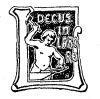

Nota de editor:
Devido à
quantidade de erros tipográficos existentes neste texto,
foram tomadas várias decisões quanto à
versão final. Em caso de dúvida, a grafia foi
mantida de acordo com o original. No final deste livro
encontrará a lista de erros corrigidos.
Rita
Farinha (Fev. 2008)
SÁ D'ALBERGARIA
OS FILHOS DO PADRE ANSELMO
ROMANCE

PORTO
LIVRARIA CHARDRON
DE
Lello & Irmão,
Editores
1904
Typ. a vapor da Empreza
Litteraria e Typographica
178, rua de D. Pedro, 184
OS FILHOS DO PADRE ANSELMO
I
Os irmãos da mão negra
O relogio dos Clerigos tinha acabado de fazer soar
pausadamente as doze badaladas da meia noite.
O tempo estava brusco e o vento, soprando da
barra em frias e cortantes rajadas, punha arrepios
nos transeuntes que, levantadas as golas dos casacos
e as mãos mettidas nos bolsos, seguiam a passo apressado,
recolhendo a casa, sob a ameaça de um temporal
desfeito.
Era em fins do outono.
As arvores do jardim da Cordoaria, varejadas
pela ventania asperrima, despiam-se das suas ultimas
folhas amarellecidas, n'um agitado e sussurrante protesto
de espoliadas.
Quem a essa hora passasse pelo Campo dos Martyres
da Patria, veria, encostado a uma das arvores
que orlam o jardim, defrontando com a praça do Peixe,
um vulto immovel e indifferente ao tempestuoso
rugir d'aquella noite agreste e frigidissima.
Parecia esperar alguem, porque, ao ouvir bater a
meia noite no relogio da torre, levou a mão ao bolso
[2]
e, aproximando-se de um dos candieiros da
illuminação
publica, consultou o seu relogio.
―Aquelle anda adiantado cinco minutos―murmurou.
E deu alguns passos distrahidamente como para
illudir a sua impaciencia.
Agora, que o podemos vêr ao reverbero do lampeão,
notaremos que é um rapaz de 18 annos, decentemente
vestido e de gentil presença, não obstante as
feições finas e delicadas quasi lhe
desapparecerem encobertas
pela aba larga do seu chapéo á Mazzantini.
Tinha apenas dado um curto passeio no prolongamento
do jardim, quando do lado da rua do Calvario
avançou a trote rasgado um trem, que parou em
frente d'elle.
―És tu, Paulo?―disse de dentro uma voz.
―Sou.
―Entra depressa, que a noite está agreste!
E a pessoa que fallava de dentro abriu a portinhola,
facilitando-lhe a entrada.
O mancebo saltou de um pulo para dentro do carro,
a portinhola fechou-se, e os cavallos seguiram no
seu trote largo, dobrando a rua da Restauração e
subindo
a da Liberdade até ganharem a rua do Rosario.
Sigamos aquelle trem e ouçamos o dialogo que se
trava dentro d'elle.
Apenas o mancebo entrou, a pessoa que o chamara
e que era um homem de 28 a 30 annos, desceu rapidamente
as cortinas do carro e disse para o seu joven
companheiro:
―Meu amigo, como já te expliquei, isto são
negocios
em que se requer a maior circumspecção e
escrupulo
na observancia das praxes. Has-de consentir
que te vende os olhos.
―Acaso desconfias da minha lealdade, Jorge?
[3] ―De modo algum. Mas é uma obrigação
que o
regulamento me impõe, e eu não posso faltar a
ella
sem trahir o meu dever.
―Pois bem, seja!
O sujeito que ouvimos chamar Jorge tirou então
do bolso um lenço e vendou com elle os olhos do companheiro.
―Has-de dar-me a tua palavra de honra que não
tentarás arrancar a venda sem que para isso recebas
ordem...
―Dou. Mas se o fizesse?
―Poderia isso custar-te a vida, meu caro.
―Apre!―fez o outro, sorrindo―vocês são
intransigentes!
―Está n'isso a nossa força. Não
violentamos ninguem
a seguir-nos, damos ampla liberdade a cada um
de rejeitar a nossa associação, mas defendemos a
nossa
existencia e mantemos o nosso segredo.
―É justo.
―Assim, tu podes, até á hora de prestares o teu
juramento, reconsiderar e exigir que te restituam a
liberdade. Nenhum mal te acontecerá por isso, a tua
vontade será respeitada, a tua independencia mantida.
Mas não saberás dizer onde estiveste nem as
pessoas
com quem fallaste.
―Poderei dizer que fallei comtigo...―gracejou
o outro.
―Que importa? Eu não sou uma
associação.
Comigo póde fallar toda a gente...
―Fallemos sério!―tornou o moço que dava pelo
nome de Paulo.―Asseveras-me que os intuitos d'essa
associação em que vou entrar são em
tudo dignos das
justas aspirações de um homem de bem?
―Assevero-te que os irmãos da
Mão-negra comprehendem
e cumprem á risca o nobre dever de se
auxiliarem e defenderem mutuamente contra as prepotencias
[4]
sociaes da nossa epoca. No nosso gremio
desapparecem as differenças de gerarchia e de dinheiro.
Não ha pobres, porque todos somos ricos da
riqueza e da importancia dos nossos irmãos.
―Poderei então contar com o auxilio da
Associação
na conquista da mulher que amo?
―Decerto―volveu o outro.―Tanto como amanhã
qualquer de nossos irmãos poderá contar com o
teu auxilio para a realisação dos seus desejos.
Isto é
apenas uma associação de soccorros mutuos, meu
caro
Paulo. A mulher que amas será tua desde que te filies
no nosso gremio. Comprehendes que toda a acção
da
Mão-negra se resume em
tornar felizes e ricos os
seus irmãos, porque d'essa riqueza e d'essa felicidade
lhe advem a ella a força, o poderio, a importancia.
O trem ia correndo veloz pela estrada do Carvalhido,
sem que Paulo, entretido na conversa, parecesse
ter notado o tempo gasto na corrida.
―No emtanto―accrescentou ainda Jorge―os
fins e intuitos da Associação vão
sêr-te ainda expostos
e confirmados por pessoa idonea e mais competente
de que eu. Se te restar alguma duvida, o minimo
escrupulo, poderás renunciar ao teu intento, com
a unica condição de não tirares a
venda nem tentares
deslealmente devassar os segredos do nosso gremio...
―Conheces-me, e sabes que isso são processos indignos
do meu caracter!―protestou o mancebo.
O trem parou em frente de um portão largo, que
dava accesso a uma vasta quinta murada.
Jorge apeou-se e deu a mão ao seu companheiro.
―Chegámos!―disse elle.
Paulo apeou-se e, guiado sempre pelo seu amigo,
transpoz o portão, que se abriu mysteriosamente, tornando
a fechar-se sem ruido.
―E o cocheiro?―perguntou o mancebo.―Não
receias a sua indiscreção?
[5] ―É um dos nossos irmãos―respondeu simplesmente
o outro.
―Apre!―tornou o mancebo alegremente.―Eis
aqui o que se chama um serviço bem montado!
Jorge não lhe respondeu. Conduziu-o por uma extensa
e sombria vereda de ramadas até o fazer entrar
n'um corredor ao rez do chão, pelo qual foram seguindo
em silencio.
―Já estamos em casa!―disse Paulo.
―Porque?―perguntou o outro.
―Sinto-o pela differença de temperatura.
―Ainda não... Vamos entrar agora...
E levando aos labios um pequeno apito, tirou d'elle
um silvo agudo e prolongado.
Ouviu-se uma porta girando sobre os gonzos, e os
dois entraram n'um pequeno recinto em que os passos
se amorteciam, abafados no tapete.
―Pódes tirar a venda―disse Jorge.
O mancebo levou a mão aos olhos, e com grande
assombro seu, achou-se sósinho n'uma sala forrada de
crepes, tendo ao centro uma mesa coberta de velludo
preto e em que pousava uma caveira, allumiada por
duas velas.
Um momento impressionado pelo sinistro aspecto
da sala e pelo funebre quadro que se lhe offerecia á
vista, o mancebo empallideceu e recuou um passo,
aterrado. Porém, reflectindo e com uma coragem superior
á que seria de esperar na sua edade, breve retomou
o sangue frio e lançou um olhar de glacial
indifferença
para a caveira.
―É singular!―pensou comsigo.―Entro na vida
pela visão da morte!
Como respondendo a este pensamento, ouviu-se uma
voz soturna e cavernosa resoar na sala:
―Medita!―disse aquella voz.
[6]
O mancebo estremeceu e voltou-se rapidamente, a
vêr quem lhe fallava.
Não viu pessoa alguma.
Passeou então os olhos curiosos pelas paredes
forradas de crepes e não descobriu a porta por onde
tinha entrado.
Se quizesse abandonar aquelle mysterioso e lugubre
recinto, não o poderia fazer, por não encontrar
sahida.
Embora surprehendido, nem por isso se apavorou.
―Medita!―tornou a voz a repetir.
Como resposta muda áquella intimativa, o mancebo
cruzou os braços sobre o peito e ficou encarando
fito a caveira.
N'aquella attitude altiva e firme, esteve assim
por muito tempo.
Dissera-lhe o seu amigo que, para ser admittido
na associação secreta da
Mão negra, era preciso
dar
provas de energia, coragem e inquebrantavel força de
vontade. Accrescentara que as provas a que os neophytos
tinham de sujeitar-se eram rudes e de molde
a fazerem tremer o mais ousado. Elle, não obstante,
insistira. Sentia-se capaz de affrontar os maiores perigos
com animo sereno e tranquillo.
―Principiou a prova!―pensou―julgam-me uma
creança assustadiça, capaz de me apavorar com
este
apparato funebre. Mostrar-lhes-hei que a creança
é
um homem, que póde disputar primasias de coragem
aos mais fortes.
E n'esta resolução avançou para mesa,
estendeu
o braço e ia a tocar no funebre despojo, quando a voz
mysteriosa recuou de novo, gritando:
―Detem-te! O que ias fazer?
―Tocar n'esta caveira―respondeu o mancebo
com voz tranquilla.
―Com que fim?
[7] ―Com o fim de provar que a ideia da morte me
não apavora.
―Que pensamento te suggere a vista d'esse triste
despojo humano?
―Primeiramente, a ideia de que todos caminhamos
para a mesma miseria...
―E depois?
―Depois, que a Morte é a niveladora implacavel
do genero humano.
―Assim, crês que na Morte se confundem bons e
maus, virtuosos e impuros?
―Creio que, materialmente, tudo se confunde na
mesma podridão.
―Materialmente, disseste?
―Disse.
―Crês então que vicio e virtude são
coisas indifferentes,
visto que tudo se apaga ao mesmo gelido
sopro e tudo resvala com o homem ao abysmo do
Nada?
―Não.
―Explica-te.
―Do homem subsistem as ideias, os pensamentos,
os actos bons ou maus de toda a sua vida. Esses
não tem a Morte o poder de os anniquillar.
―Pois bem; visto que assim é, dize-me: De quem
é esse craneo?
―De um meu irmão.
―É vaga a resposta. Dize-me: Será d'um sabio?
Será de um ignorante? Será de um homem honesto?
Será d'um criminoso? Será d'um nobre?
Será d'um
plebeu?
―Ignoro.
―Confessas, pois, que na Morte tudo se confunde?
―Não! Confesso apenas que na Morte todos teem
egual direito ao respeito dos vivos.
[8] ―Porém, essa theoria é contradictoria. Se todos
devem confundir-se no mesmo respeito, como queres
que se distingam os bons dos maus?
―Pelo que d'elles fica no mundo e não morre.
Dize-me o nome d'aquelle a quem pertenceu este craneo,
e se elle foi um sabio, um artista, um litterato,
um poeta, um d'esses homens que deixam a sua passagem
assignalada no mundo por obras de grandeza e
de virtude, eu te recordarei as suas conquistas scientificas,
os seus quadros, os seus livros, os seus versos,
as nobres acções e exemplos com que se perpetuou
na
humanidade emfim.
―Tens religião?
―Tenho.
―Qual?
―A do Bem.
―A que vieste?
―Dar e receber auxilio na lucta do Bem contra
o Mal.
―Sabes o sacrificio a que isso obriga?
―A todos os sacrificios me sujeito.
―Repara bem. A abnegação, o desinteresse, a
obediencia cega e passiva ás ordens dos que dirigem
o nosso gremio constituem a principal condição
para
seres admittido entre nós.
―Acceito-a.
―Terás que resistir ás tuas proprias
paixões, terás
que dominar os mais irresistiveis impulsos do teu
coração, para só obedeceres
á lei da nossa Sociedade;
terás, emfim, que sacrificar vida, fortuna, mulher, filhos,
familia―tudo, ao bem de teus irmãos, quando
isso
te fôr reclamado.
―Obedecerei.
―É preciso que o braço execute o que a
cabeça
ordena. Tu serás o braço. O chefe invisivel da
nossa
Associação é a cabeça. Se
fôr preciso derramar sangue,
[9]
ainda o d'aquelle que no mundo te fôr mais caro,
uma vez que a cabeça t'o ordena, obedecerás?
―Sem a menor hesitação.
―Attende que vaes ligar-te a nós por um juramento
que não póde ser quebrado nem illudido. Em
toda a parte onde te encontres, seja qual fôr a
posição
social a que ascendas, na rua, em casa, no povoado
ou n'um logar deserto, o olhar invisivel da nossa
Associação
seguir-te-ha por toda a parte. A
Mão-negra,
cujo auxilio buscas, mysterisa e potente,
vingadora e
terrivel, como a propria mão da Providencia,
impedirá
teus passos e guiará o teu destino. Não mais te
pertencerás
a ti; pertencerás aos teus irmãos. Senhor
liberrimo
das tuas acções até agora, vaes
reduzir-te por
um juramento ás condições d'um
escravo, mais que
d'um escravo―d'um simples automato. O teu cerebro
não mais pensará para ti; o teu
coração não mais sentirá
por ti. Cerebro e coração teem de emmudecer
perante
as exigencias fataes, crueis e terriveis muitas
vezes, da nossa Associação. Terás
força para tanto?
―Terei―respondeu firmemente o mancebo.
―Pareces corajoso―observou a voz mysteriosa―pareces
ter em pequena conta a propria vida.
―Estou prompto a sacrificál-a para um fim justo.
―A ideia da justiça é relativa. O que para uns
é justiça para outros é iniquidade. Os
irmãos da
Mão-negra
não teem o direito de discutir e apreciar as ordens
que dimanam do seu chefe invisivel: teem só o
dever de as cumprir. Assim, se te exigirem que craves
um punhal no teu coração, não
terás o direito de
discutir a justiça do sacrificio; apenas terás
que obedecer.
―Experimentem.
―Lembra-te, porém, que, se o ―Lembra-te, porém, que, se o sacrificio da propria
vida te é fácil, outros sacrificios te
pódem ser
mais penosos. Estás em tempo: se não te sentes
com
[10]
animo e coragem para te prenderes a nós por toda a
vida,―vae, estás livre, mandar-te-hemos conduzir ao
sitio d'onde vieste.
―Não!―respondeu o mancebo com energia―Eu
não sou dos que recuam. Quero ser dos vossos.
―Estende a mão sobre essa caveira e jura que
queres ser submettido á
prova!―ordenou a voz.
Paulo estendeu a mão sobre a caveira:
―Juro―disse elle―que desejo ser um dos irmãos
da
Mão-negra e estou
prompto a submetter-me á prova
que me for imposta!
Quando acabou de proferir este juramento, sentiu
que lhe tocavam no hombro. Voltou-se e viu diante de
si um vulto athletico, sinistramente vestido de preto
e com o rosto coberto por um capuz como o dos antigos
aguazis do Santo Officio.
Sem dar palavra, o mysterioso vulto vendou-lhe de
novo os olhos. Em seguida disse:
―
Á prova!
Pegou-lhe na mão e conduziu-o por um extenso
corredor até parar em frente de uma porta, a que
bateu de maneira mysteriosa e symbolica.
―Quem sois?―perguntou de dentro uma voz,
sem abrir.
―Irmão―respondeu o mysterioso guia de Paulo.
―D'onde vindes?
―Da Ala negra.
―Que trazeis?
―Um novo braço.
―Que busca elle?
―A mão.
―Quem vos guia?
―S. Miguel.
A porta abriu-se.
―Passae!―disse um homem, igualmente envolto
n'um habito preto e o rosto coberto pelo capuz.
[11]
Os dois seguiram ávante e entraram n'uma sala
ampla, abobadada, de paredes escuras e illuminada
apenas por um globo enorme de vidro, seguro por uma
phantastica
mão negra,
que pendia do tecto.
Á roda d'esta sala, viam-se de pé, hirtos e
impassiveis,
n'uma immobilidade de estatuas, muitos vultos
negros, com o rosto inteiramente occulto sob o capuz
do habito.
Em cada uma das paredes avultava uma grande
mão negra, sustentando punhaes e espadas, em panoplia.
Ao centro, justamente debaixo do globo, erguia-se
uma especie de throno, assente sobre quatro formidaveis
dragões e todo coberto de crepes. Occupando esse
logar, sem duvida destinado ao chefe da seita, estava
uma figura mysteriosa como as suas companheiras e
como ellas silenciosa e immovel.
O
irmão introductor de
Paulo avançou, silenciosamente,
com o mancebo pela mão, até curta distancia
do throno, parou, levou a dextra ao peito, movendo
o pollegar rapidamente, de modo a descrever
com elle uma cruz, e ficou de cabeça curvada, em
attitude respeitosa.
―Que quereis, irmão?―interrogou o vulto que
se sentava no throno e que era sem duvida o chefe da
seita.
―Que escuteis e recebaes sob vossa protecção
este
meu companheiro, que pretende entrar na
ala como
combatente.
―Fiaes d'elle?
―D'elle fio, senhor!
―S. Miguel vos proteja!
―O apresentante de Paulo afastou-se e foi tomar
o seu logar junto á parede, em fila com os seus
companheiros.
[12]
Paulo ficou só, junto ao throno, com os olhos vendados.
―Que pretendeis, mancebo?―interrogou o chefe.
―Combater.
―Que armas trazeis?
―A submissão, a energia e a lealdade―disse
Paulo.
―Boas armas são essas quando temperadas ao
fogo vivo do sentimento do Bem e da Justiça. Que
vos falta?
―A força da
Mão-negra.
―A
Mão-negra
só dispensa a sua força e o seu
amparo aos que tudo lhe sacrificam com coragem,
valor, e brio. N'este gremio não se admittem nem os
timidos nem os cobardes.
―Não o sou.
―Dizer é facil; provar é difficil. Quereis
sujeitar-vos
á prova?
―Estou prompto!
―Reparae que podeis perder a vida na jornada
aspera que ides emprehender.
―A vida de nada me serve, se não posso dar-lhe
applicação util.
―É facto. No emtanto, é meu dever prevenir-vos
de que, sem perderdes a vida, podeis perder a esperança
da felicidade, que é a vida do
coração, o objectivo
da existencia.
―Tudo sacrificarei aos meus irmãos.
―É melhor recuar, mancebo. Na longa estrada
que tendes a percorrer antes de chegardes á
Mão-negra,
encontrareis mil perigos e mil precipicios terriveis,
que sereis obrigado a transpôr ou a morrer.
Avançado
o primeiro passo n'esse caminho mysterioso e fatal,
recuar é impossivel; a menor hesitação
é a morte. Só
uma coragem admiravel e uma força de vontade rara
pódem conduzir-vos a salvo ao ponto desejado.
[13] ―Irei e hei-de chegar.
―Pois bem, vinde!
Levantou-se, desceu do throno, deu-lhe a mão,
abriu uma porta ao lado da parede e, empurrando-o
para dentro d'ella, disse:
―Podeis tirar a venda. Segui esse longo e escuro
subterraneo até ao fim. Tereis que luctar com o fogo,
com a agua, com os homens e com as feras, antes que
chegueis á porta santa do asylo que buscaes. Ide e
que S. Miguel―que venceu o dragão―vos dê
força
e coragem.
O mancebo levou as mãos aos olhos, arrancou a
venda e embrenhou-se n'uma escura e estreita galeria
subterranea, que foi seguindo com estranha ousadia.
A treva cercava-o sem lhe deixar perceber onde
punha os pés.
Algumas duzias de passos andados, um subito
clarão illuminou o subterraneo. Paulo, deslumbrado,
levou as mãos aos olhos. Na sua frente, erguiam-se as
chammas pavorosas de um incendio, que avançava
para elle em linguas de fogo, ameaçando devoral-o.
Dir-se-hia que uma enorme represa de alcool ou de
petroleo se havia aberto e que, incendiado, ia inundar
o subterraneo, transformando-o n'um immenso
forno crematorio.
O mancebo, n'um momento surpreso, sentindo na
face o calôr das chammas, nem por isso se deteve.
Caminhou audaz e resoluto para o perigo, disposto a
deixar-se queimar vivo antes que retroceder.
Ao aproximar-se das chammas, porém, estas apagaram-se
subitamente, tornando mais densa a treva do
corredor.
Seguiu ávante, e pouco depois sentiu o ruido clamoroso
e sinistro de uma enorme queda d'agua, que
se despe
Seguiu ávante, e pouco depois sentiu o ruido clamoroso
e sinistro de uma enorme queda d'agua, que
se despenhava em catadupas de uma rocha que obstruia
a passagem e que parecia o remate d'aquelle
[14]
medonho e tenebroso subterraneo transformado n'um
lago.
A agua despenhava-se de tal altura e com tal
fragor que, batendo nas pedras, resaltava, esparrinhando
com tanta violencia, que algumas gottas vinham
açoitar o rosto de Paulo.
Á primeira vista, parecia impossivel transpôr
aquelle enorme pégo sem perecer afogado. Uma dubia
luz, coada por uma pequena abertura na abobada do
subterraneo, esclarecia o medonho passo.
Paulo, tomado da raiva febril de transpôr todas as
barreiras ou morrer, avançou corajoso, fechou os olhos
e atirou-se á agua. Com grande assombro seu, achou-se
em terreno enxuto. A agua tinha desapparecido e
com ella o ruido pavoroso da corrente.
A treva tornara-se mais densa. Não obstante, elle
caminhava afoito, quando, de repente, se sentiu agarrado
e preso por duas fortes e vigorosas mãos que o
levantaram ao ar deixando-o cahir.
Procurava firmar-se nas pernas, quando notou que
o terreno lhe faltava debaixo dos pés e se precipitava
n'um abysmo.
Não soltou um grito. Esperava morrer como um
homem, e assim chegou a um segundo subterraneo,
onde se encontrou de pé, illeso e sem que soffresse a
menor contusão.
Continuou o seu caminho corajosamente, embora
sob o peso das commoções soffridas. Foi andando
na
treva por alguns minutos, quando um rugido terrivel
lhe despertou a attenção.
Olhou e viu na sua frente uma porta de ferro,
defendida, por dois enormes leões, que punham n'elle
os olhos de fogo, escancarando n'uma ameaça a guella
hiante.
Fixou a vista aterrado nos monstros, que soltaram
novo rugido atroador.
[15]
Pallido, os cabellos eriçados, as faces contrahidas
de susto, o mancebo pensou em retroceder, mas envergonhado
d'esta cobardia, exclamou, avançando para
as féras:
―Antes morrer que recuar!
Rapidamente, os leões sumiram-se na parede e
Paulo pôde bater á porta, levantando e deixando
cair
o pesado batente em forma de mão negra.
A porta abriu-se.
―Entrae!―disse o mesmo chefe que o havia introduzido
no subterraneo, recebendo-o de novo na sala
d'onde havia partido.
Paulo entrou.
―Ides dar-nos a ultima prova―propoz o chefe.―Aqui
tendes este punhal. N'aquelle gabinete está, sob
a acção de um narcotico, uma mulher, que
é preciso
eliminar... Ide! Cravae-lhe este
punhal no coração.
Paulo pegou no punhal, abriu a porta e ia avançar,
quando recuou espantado, soltando um grito terrivel:
―Ella!―bradou o pobre rapaz afflictivamente.
É que diante dos seus olhos admirados apparecera
uma bella e gentil figura de mulher, estendida sobre
um pôtro de torturas, os pés e as mãos
amarradas, a
face pallida, os olhos cerrados, como que esvaecida ou
morta, e essa mulher, essa visão inesperada, era nem
mais nem menos do que a sua amada, a aspiração
querida
da sua alma, a mulher por quem o pobre moço ia
filiar-se na mysteriosa e terrivel seita da
Mão negra!
―Hesitas?―perguntou o chefe com um accento
de desprezo e sarcasmo na voz.―Não prestaste ainda
juramento, mancebo; não estás preso a
nós por nenhuns
laços. Se o teu coração se entibia, se
o teu braço
treme e se recusa a obedecer, vae, deixa-nos! Profere
apenas uma palavra e serás restituido á
liberdade.
[16]
No rosto do mancebo desenhava-se uma angustia
profunda. Os cabellos em desalinho, a face pallida, a
fronte banhada de um suor frio, não desfitava os olhos
d'aquelle meigo e adorado vulto de mulher, a que tinha
presa toda a sua existencia, todas as esperanças
da sua juventude, todas as nobres aspirações da
sua
alma e que alli via, sem saber como nem porque, semi-morta,
amarrada áquelle pôtro fatal, e prestes a
cahir aos golpes de uma justiça occulta, que a mandava
apunhalar!
E havia de ser elle o algoz, havia de ser elle o
executor da fatal sentença, elle, que por ella sacrificaria
a vida, a honra, a familia, tudo o que um homem
póde sacrificar á mulher amada!
Era horrivel!
―Decide-te, mancebo!―tornou o chefe―Ou
cumpres corajosamente os mysteriosos designios da
Mão-negra, ou recusas e
vaes em paz com a tua cobardia!
Como se lhe tivessem vergastado o rosto, á palavra
cobardia, o mancebo apertou na
mão o punhal e,
voltando-se para o seu mysterioso interlocutor, disse,
rangendo os dentes:
―Cobarde não o sou, não o serei
jámais! Que
posso eu fazer para resgatar a vida d'aquella mulher?
―Nada!
―Offereço-vos a minha vida, senhores! Pegae em
mim, amarrae-me áquelle pôtro onde a tendes
manietada,
sujeitae-me á tortura mais cruel, mais
horrenda,―não
soltarei uma queixa, não me ouvireis um
gemido! Mas libertae-a a ella, restitui-lhe a liberdade,
concedei-lhe a vida, e eu bem direi a vossa generosidade,
a vossa grandeza d'alma, e o meu ultimo alento
será ainda um protesto, de gratidão para
comvosco!
―Nada podemos fazer-te. Essa mulher está condemnada,
[17]
e nada poderá libertal-a da nossa
justiça.
Queres executar a sentença ou preferes retirar-te em
paz com a tua fraqueza... com a tua cobardia, repito?
―Cobarde nunca!―bradou o moço, luzindo-lhe
nos olhos uma colera terrivel―Bem vêdes que não
é
o meu braço que treme―é o meu
coração que lucta!
―Vence-o!
―Vencel o-hei. Mas antes, dizei-me:
não tem preço
aquella vida? Quantas vidas quereis que vos entregue
em resgate d'aquella? Apontae-m'as, e eu vos
juro que vol-as entregarei todas, sem faltar uma, ainda
que para isso eu tenha de descer tão baixo, que
me confunda com os mais infimos sicarios, ou haja de
subir tão alto, que chegue a transpôr os degraus
de
um throno! Reparae que esta é a mulher que amo!
É o mundo que vós me mandaes anniquilar com
aquella existencia!
―Está condemnada. Decide-te!―tornou a voz―Partes
ou ficas?
―Pois bem, fico!... para partir com ella!
Avançou desvairadamente para a sua amada, que,
immovel, amarrada ao pôtro, parecia cahida em profundo
lethargo.
―Beatriz, perdoa-me!―murmurou elle.―Não
é a ti que eu apunhál-o, é a mim
proprio... Seguir-te-hei
no teu resgaste!
Dizendo isto, cravou-lhe fundo o punhal no
coração.
O sangue espadanou do peito da victima, que
não soltou um gemido.
O mancebo, com as mãos tintas de sangue, veio á
sala e disse serenamente, encarando os seus lugubres
e mysteriosos companheiros que se conservavam mudos
e immoveis:
―Pedistes-me uma vida. Dar-vos-hei duas, ensinando-vos
[18]
ao mesmo tempo como se mata e como se
morre!
E n'um movimento rapido, sem dar tempo a que
o detivessem, alçou o braço e cravou o punhal no
coração.
A lamina, porém, não penetrou a carne e o
mancebo,
admirado de que o ferro lhe não tivesse produzido
a menor dôr, examinou espantado a arma homicida.
Era um d'estes punhaes simulados, cuja lamina de
latão, se embebe e desapparece no cabo quando se descarrega
a punhalada, voltando a apparecer impellida
por occulta mola desde que deixa de ser premida de
encontro ao corpo.
―Mas o que é isto?―disse elle indignado, quasi
sem comprehender.―Estamos nós representando uma
farça?
―Não, meu amigo!―respondeu amavelmente o
chefe―estiveste
dando-nos a
prova da tua rara
coragem,
do valor e lealdade do teu caracter, e nós todos,
bemdizendo a hora que traz ao nosso gremio um
irmão
de tanto valor!
Depois, voltando-se para o gabinete onde ainda jazia
inanime a
amada de Paulo, continuou:
―Como já deves ter comprehendido, alli não
está
a tua amada, porém a sua imagem tão perfeita e
semelhante,
que a tomaste por ella propria.
O mancebo, aturdido, punha no manequim os
olhos, recusando-se a acreditar o que ouvia.
―Foi, pois, uma simulação de morte―proseguiu
o chefe―O valor moral da acção fica em
pé, visto
que a tua intenção era obedecer aos preceitos da
Mão-negra...
―E matar-me em seguida!―accrescentou o mancebo.
―É a unica porta que resta aberta aos nossos
[19]
irmãos para se separarem
de nós. A sahida por esse
lado, posto seja uma fraqueza, não é nunca um
crime.
De resto, é tambem por ella que fazemos sahir os
que se tornam indignos de pertencerem á nossa
Associação.
―Espero que não tereis o incommodo de me ensinar
o caminho, se algum dia me arrepender de haver
buscado a vossa camaradagem―disse Paulo.
―Felicito-te, mancebo, pela tua rara energia,
lealdade e valor do teu caracter, de que déste prova.
Serás um bom
irmão da
Mão-negra e auguro-te uma
brilhante carreira dentro do nosso gremio, se perseverares
em conservar puras e immaculadas as apreciaveis
qualidades a que deves a tua admissão. Queres
prestar juramento?
―Sim!
―Irmão Golias!―ordenou o chefe―vendae os
olhos ao neophyto!
Destacou-se da parede o
irmão que já
havia sido
o apresentante do mancebo, e cumpriu as ordens do
chefe.
―Vendam-se-vos ainda os olhos―disse este―não
porque esteja no nosso animo guardar para comvosco
novos mysterios ou admittir-vos com fins reservados,
mas tão sómente porque a venda que se vos
põe agora
representa a confiança cega, illimitada, que deveis
ter nos vossos irmãos e nos nobres e justos fins para
que todos trabalhamos, unidos como um só homem,
guiados pela mesma potente e mysteriosa
Mão-negra.
Findo este pequeno discurso, o chefe fez um signal.
Os vultos que, de pé e immoveis rodeavam a sala, encostados
á parede, avançaram silenciosamente e formaram
um circulo á roda de Paulo.
―Irmão Golias!―disse o chefe.
―Eis-me, senhor!
―Fiastes o neophyto. Persistes fiando-o?
[20] ―Do fundo da minha alma.
―Sois o seu padrinho. Tomae o vosso logar.
O vulto que dava pelo nome de Golias postou-se
ao lado do mancebo, tendo na mão uma salva de prata
coberta por um crepe.
O chefe subiu então ao throno e passou-se n'aquelle
recinto uma scena deveras surprehendente.
De pé sobre o throno, o chefe pegou em um escrinio
de pau santo com embutidos de prata e marfim representando
uma caveira com dois fémures em cruz,
carregou em um pequeno botão, e o escrinio abriu-se,
transformado-se rapidamente em uma almofada de veludo
carmezim em que assentava um craneo alvissimo,
seguro por dois punhaes em tropheu.
Estendeu para a assembleia o braço sustentando
esta estranha
reliquia, e
immediatamente os vultos,
levando as mãos á cinta, desembainharam luzentes
floretes
que traziam occultos debaixo dos habitos e que
apontaram ao neophito, formando-lhe com elles um
circulo de ferro.
Ao mesmo tempo uma voz resoou:
―Está aberto o templo!
Tres portas abriram-se e por ellas começou
entrando
uma verdadeira multidão de capuzes negros, trazendo
na mão esquerda uma tocha accesa e na dextra
um punhal.
Os das tochas formaram em cruz, ao comprido e
ao través do
templo,
abrindo em alas, voltados todos
para o centro, onde se agrupavam, como já dissemos,
os primeiros vultos, rodeando Paulo, com os floretes
desembainhados.
Tudo isto se fez no meio do maior silencio e quasi
sem deixar perceber o ruido dos passos.
Então o chefe, erguendo a voz, disse:
―Mancebo, juras obediencia, lealdade e amor a
todos os irmãos da
Mão
negra? Juras não revelar a
[21]
alguem os segredos da nossa agremiação? Juras
sacrificar
por ella todos os dias da tua vida, todas as
horas da tua existencia, o vigor do teu braço, os
pensamentos
do teu cerebro, os sentimentos do teu coração?
Paulo estendeu a mão e disse solemnemente:
―Juro!
Immediatamente, o irmão Golias, entregando a
outro a salva que tinha na mão, voltou-se para o neophyto,
dizendo:
―Irmão
David, pois que
sou teu padrinho, vou
impor-te o habito de
Mão-negra!
Enfiou-lhe então pelos hombros um habito igual
ao que os outros vestiam, deixando-lhe apenas a cabeça
a descoberto, sem lhe deitar o capuz.
―Tirae a venda, irmão―ordenou o chefe―para
que toda a luz se faça aos vossos olhos!
O mancebo arrancou a venda e ficou maravilhado
e surprehendido ante o estranho quadro que se apresentava
á sua vista.
Os irmãos haviam atirado os capuzes para as costas
e descoberto os rostos, conservando-se, porém, na
mesma attitude severa e hostil, com os florêtes apontados
ao novo irmão.
Passando uma vista curiosa por todos elles, o mancebo
ficou surprehendido de vêr muitos rôstos conhecidos
á volta de si.
O irmão Golias, pegou-lhe na mão e
fêl-o subir os
degraus do throno.
O chefe veio recebel-o a meio, apertou-o nos braços
e osculou-o na testa.
―Bem vindo sejas, irmão, a augmentar a nossa
ala!―disse elle.
A estas palavras, todos os florêtes se abaixaram,
entrando na bainha.
Em seguida tomou-lhe a mão e acompanhou-o até
ao degrau inferior do throno, dizendo:
[22] ―Recebe o abraço de teus irmãos e faze por te
conservares sempre digno d'elles.
Os irmãos que o haviam rodeado com os florêtes
vieram todos um a um abraçál-o e
beijál-o na testa.
―Irmãos!―disse o chefe do alto do throno―vae
reunir o sublime capitulo. Está encerrado o
templo.
As luzes apagaram-se, e os vultos começaram a
sahir pelas differentes portas do recinto, sumindo-se
mysteriosamente sem que alguem pudesse dizer que
caminho levavam.
[23]
II
Amôr e esperança
Deixemos os mysteriosos irmãos da
Mão-negra seguir
o caminho que os havia de reconduzir ao mundo
do qual por algum tempo semelhavam ter-se apartado,
e sigamos o arrojado e corajoso adolescente que
acaba de iniciar-se nos mysterios da terrivel seita.
Paulo, tendo sahido da quinta do Carvalhido em
companhia do seu amigo Jorge, agora convertido em
seu
irmão, regressou
á cidade no mesmo trem que o
conduzira, apeando-se e despedindo-se do companheiro
em uma rua proxima da de Cedofeita.
Eram tres horas da manhã e o vento continuava
soprando rijo da barra, pondo negrumes de tempestade
n'aquella noite desabrida.
O mancebo seguiu pela rua deserta até parar
junto de uma casa de luxuosa apparencia, e que denunciava
pelo exterior severo e pelo amplo jardim
gradeado que lhe ficava contiguo, a opulencia dos
seus habitantes.
Inflou as bochechas e, batendo-lhe com as mãos,
imitou o canto da perdiz.
Era evidentemente um signal, porque
algum
tempo
[24]
depois, uma das janellas do rez do chão, vedada
por grades de ferro, abriu-se manso, e uma voz feminina
disse, tremula e quasi sumida:
―Como vens tarde, meu amigo!
―Beatriz, perdôa, mas um assumpto do mais alto
interesse e de que depende a nossa felicidade futura
impediu-me de vir á hora costumada. Hesitei em vir
despertar-te a esta hora; mas a ideia de que havia
de estar sem te fallar e talvez sem te ver até
amanhã
á noute, obrigou-me a procurar-te, Beatriz.
―Eu esperava-te... Esperava-te, porque tinha
tambem que te dizer... Oh! se soubesses como estou
afflicta!
―Tu! Mas o que te succedeu, anjo da minh'alma?...
―Paulo...―gemeu a meiga voz que fallava do
lado de dentro da grade―não sei como t'o hei de
dizer... meu Deus!
―Falla, Beatriz, falla, pelo nosso amor t'o
peço!―supplicou
o moço―Não me tenhas por mais tempo
n'esta cruel espectativa... Tu choras, tu pareces afflicta...
Meu Deus! o que é que motiva a tua dôr?
Beatriz, cujo vulto mal podemos distinguir na penumbra
do aposento, occultava o rosto entre as mãos
buscando afogar os soluços.
―Paulo,―disse ella―meu pae... quer casar-me!
O mancebo recuou um passo como se lhe tivessem
descarregado uma violenta
pancada
no peito.
―Quer casar-te!―exclamou.―E com quem?
―Com um rapaz que eu mal conheço... um rapaz
que tem vindo duas ou tres vezes de visita a
nossa casa, onde foi apresentado por um dos mais intimos
amigos de meu pae...
―Dize-me o nome d'esse rapaz!―intimou desvairadamente
o moço.
[25] ―Eugenio de Mello―soluçou Beatriz.
―Eugenio de Mello!―repetiu o mancebo.―Esse
nome é completamente estranho para mim. Nunca t'o
ouvi pronunciar.
―Se te digo que apenas veio duas ou tres vezes
de visita a nossa casa, apresentado por um amigo de
meu pae...
―Mas, emfim, como é que surge agora essa ideia
de te casarem com elle? Acaso esse rapaz alguma
vez te manifestou sentimentos de sympathia ou de
amor? Falla-me com franqueza, Beatriz. Comprehendo
que por uma bem entendida delicadeza da tua parte
para comigo, julgasses dever occultar-me os galanteios
d'esse rapaz, se porventura elles te eram indifferentes...
Mas não comprehendo
como
teu pae pudesse
ter a ideia subita de te casar com elle, sem mesmo
tentar indagar se o teu coração não
repelliria um semelhante
enlace.
―Não! juro-te que nunca dos labios d'esse rapaz
ouvi uma palavra que pudesse dar-me a perceber o
mais tenue sentimento de amor por mim. Fóra dos
cumprimentos e ceremoniosas attenções que as
pessoas
de boa sociedade usam ter para com uma senhora, não
se trocaram entre nós quaesquer amabilidades que
justificassem o pensamento d'este enlace que me surprehende!
―É extraordinario! E como é que teu pae pretende
impor-te um casamento em que tu nem sequer
tinhas pensado?
―Sabes que meu pae―volveu Beatriz―habituou-se
a contar com a minha obediencia cega e passiva
em todos os seus desejos, que para mim são
ordens. Muito austero, educou-me sob um regimen
de ferro em que a sua vontade é a unica que predomina...
―Isso, porém, não é rasão
para que elle se julgue
[26]
no direito de sacrificar o teu futuro de mulher
aos seus caprichos de... pae.
―Meu pae ignora que eu te amo, Paulo! Julga
o meu coração desprendido de qualquer affecto e
crê
que não me repugna a ideia de unir o meu destino ao
de um homem que elle julga digno de mim.
―E se de facto te não repugna... obedece-lhe!―bradou
o mancebo n'uma voz estridente em que ia
todo o fel do seu desespero.
―Paulo! És injusto para comigo! Sabes que te
amo, que não posso amar outro homem que não sejas
tu; e quando me vês afflicta, atormentada ao peso da
cruel exigencia de meu pae, em vez de suavisares a
minha dôr, de me animares com o teu conselho a
resistir á fatal imposição que me
é feita, ainda me
torturas mais com esse tom acrimonioso e hostil das
tuas palavras! Não te mereço isso...
As lagrimas da joven interlocutora de Paulo que,
se realmente possue um rosto tão meigo como as suas
palavras, de linhas tão suaves e puras como é
doce o
accento da sua voz, deve de ser uma creatura encantadora,
pareceu abrandar um pouco o irritado animo
do mancebo.
―Mas o que queres tu que te diga, minha querida,
se eu noto que era vez de pensares em repellir
a despotica imposição de teu pae, ainda tentas
desculpal-o?
―Não o desculpo... digo apenas o que elle
pensa.
―Mas que tenho eu que saber o que pensa teu
pae? O que desejo saber é o que pensas tu, minha
querida! O que é que tencionas fazer? Que respondeste
a teu pae? Qual é a tua intenção?
Beatriz pareceu hesitar na resposta.
―Desejava ouvir-te, primeiro, Paulo... desejava
que me dissesses o que devo fazer...
[27] ―Eu?! Pois é a mim que compete dirigir os teus
actos? É a mim que compete dictar a tua resposta?
Consulta o teu coração, Beatriz... Elle que te
responda
e te diga a resolução que deves tomar...
―Paulo! O meu coração diz-me que só a
ti pertenço,
que só a ti eu desejo ter por marido... Mas,
bem vês, quando eu disser a meu pae que te amo, e
que por ti estou decidida a recusar outro qualquer enlace,
por mais vantajoso que se apresente, meu pae
ha de perguntar-me quem és...
―E tu dize-lhe que sou aquelle que julgas que
eu seja. Ou vae tão longe a tua piedade por mim e o
teu despreso por ti que, tendo-me na conta de indigno
do teu amor, assim mesmo m'o concedes?
―Oh! não, não, Paulo!
―N'esse caso, o que receias?
―É que eu julgo-te com o coração; meu
pae,
porém, ha-de julgar-te com a cabeça; e entre o
coração
da filha e o cerebro do pae existe uma distancia
tão grande, que eu receio bem que não possamos
transpôl-a...
―Se essa é a tua convicção e te
faltam forças
para resistir e luctar, submette-te e... adeus! Adeus
para sempre, Beatriz!...
Paulo ia a retirar-se. O animo orgulhoso e altivo
d'este adolescente de 18 annos, que tinha já a energia
e a vontade de ferro de um homem feito, não podia
supportar sem protesto os timidos receios e as
hesitações
offensivas da mulher que adorava.
―Paulo!―tornou a chamar a joven.―Escuta-me!
Que singular prazer tens em me atormentar,
quando eu tanto preciso da tua compaixão e da tua
piedade!
―Fallas-me em tormentos, Beatriz, quando desde
que aqui cheguei outra coisa não tens feito senão
revolver-me
n'um perfeito inferno de torturas! Acabemos
[28]
com isto, e vamos direitos ao fim sem
tergiversações
nem rodeios. Teu pae impôz-te o casamento com
esse... rapaz, que deve ser por força rico, distincto...
amavel, emfim. E tu acceitaste?
―Eu...
―Hesitas na resposta e a tua propria hesitação
me responde: acceitaste e vens dizer-me que está
tudo terminado entre nós...
―Oh, não!―accudiu a joven, com impeto.―Eu
não acceitei nem respondi como desejava. Pedi que
me deixassem reflectir, porque o meu primeiro pensamento
foi ganhar tempo, para poder combinar comtigo
o que devo fazer...
―O que deves fazer não seja eu quem t'o diga.
Teu pae é rico, Beatriz; tu mesma és
já herdeira de
uma avultada fortuna, e eu sou pobre. Separa-nos,
portanto, actualmente um abysmo... Cuidei que poderia
contar comtigo solteira e livre até ao dia, que
não viria longe, em que eu pudesse apresentar-me a
teu pae, a solicitar a tua mão, sem que o pedido revestisse
o caracter humilhante para mim de uma tentativa
de penetrar no sanctuario da riqueza pela
porta do coração de uma mulher. Vejo,
porém, que o
destino quer o contrário; que outro pretendente se
apresenta com menos escrupulos ou mais dinheiro do
que eu, e que da firmeza e constancia do teu amor
nada tenho a esperar, se eu não me resolver a prestar-te
o amparo incompativel com a minha dignidade
de homem e com o programma que me tracei de só a
mim dever o meu triumpho. Paciencia!
―Paulo, tu não me conheces! ou, ―Paulo, tu não me conheces! ou, se me conheces,
estás sendo para mim de uma injustiça que mais
tarde
te ha-de fazer remorsos... Escuta-me, meu amigo,
escuta-me com serenidade e repara bem nas minhas
palavras.
[29]
E Beatriz, com voz tremula de commoção,
principiou
dizendo:
―Não conheces o caracter de meu pae e não admira
por isso que julgues sêr-me coisa facil o contrariar-lhe
os propositos... Eu, porém, que o conheço, que
por elle fui educada e com elle tenho vivido sob o jugo
do seu genio rispido e severo, avalio bem que crueis
amarguras e horriveis tormentos a sua colera me prepara
na lucta que vou ser obrigada a sustentar, recusando-me
a acceitar por esposo o homem que elle me
escolheu. Não me intimida, porém, a perspectiva
do
soffrimento. Morrerei de bom grado na defesa dos sagrados
affectos do meu coração e conservar-me-hei fiel
ao juramento tantas vezes repetido do meu amôr. O
que quero é ter a certeza de que a tua confiança
me
não abandona, Paulo; que quaesquer que sejam as
mudanças que se operem no nosso modo de viver e de
nos relacionarmos―mudanças que eu não posso
prevêr
por emquanto quaes sejam, mas que certamente hão
de sêr as mais dolorosas para o nosso
coração―eu
terei no teu espirito e na tua lembrança o logar a que
o meu amôr me dá direito...
―Beatriz!―exclamou o mancebo―quando se
ama como eu te amo; quando se sente no peito a
chamma ardentissima de um vivo e intenso amor que
de todo nos senhoreia o espirito e nos absorve a existencia,
lucta-se, soffre-se, morre-se, mas não se esquece
jámais o nome d'aquella que nos inspirou tão
fervoroso
culto!
―Pois bem, meu Paulo! É possivel que o destino
nos reserve dias bem sombrios de uma ausencia
crudelissima, que ha-de retalhar-nos o coração e
quasi
volver-nos loucos de desespero. Sejam quaes forem as
circumstancias em que nos encontremos, sejam quaes
forem as apparencias que me condemnem, não
duvidarás
nunca da lealdade do meu affecto como eu não
[30]
duvidarei, jámais da sinceridade da tua alma, não
é
verdade?
―Fazes-me estremecer de receio, Beatriz! Decerto
exaggeras o pavoroso quadro dos nossos infortunios...―disse
o mancebo, pallido de commoção.
―É que tu não conheces meu pae!
―Que poderá elle fazer, se tu recusares tenazmente
esse enlace como uma violencia imposta ao teu
coração? Antes de tudo, tu és sua
filha; e um pae,
por muito severo e rispido que pareça, não se
transforma
por simples capricho no algoz d'aquella a quem
deu o sêr.
―Não sei... não posso dizer-te nada por
emquanto,
senão que tudo espero d'este funesto designio manifestado
por meu pae... Mas seja como fôr, jura-me
que não duvidarás nunca da mim, que has-de sempre
confiar na tua Beatriz como n'aquella que mais te
ama no mundo.
―Juro-te, meu amor, que serás minha e que não
te has-de encontrar só na lucta e no soffrimento. Tenho
amigos―continuou Paulo―amigos poderosos, contra
os quaes não é facil nem prudente luctar... Com
elles
conto como
irmãos e
n'elles espero encontrar o auxilio
de que ambos carecemos. Não te assustes nem te deixes
dominar pelo terror. Hontem, ainda desprotegido,
poderia talvez apavorar-me a ideia da minha fraqueza
contra inimigos tão poderosos como é teu pae;
hoje,
conscio de que os brados intimos do meu coração
ameaçado de morte encontrarão ecco n'outros
corações
que me são dedicados, levanto-me orgulhoso e altivo
do teu amor, e digo-te: «Não succumbas, anjo da
minha alma! Tem confiança em mim, que havemos
de vencer».
O tom de absoluta segurança com que Paulo proferiu
estas palavras pareceu transmittir novo alento
á joven.
[31] ―Luctarei―disse ella―e agora com mais energia,
desde que nas tuas palavras tenho o penhor de
que não será perdido o meu sacrificio. Nada mais
te
pedia e nada mais te peço do que essa confiança
inabalavel
na constancia do meu amor. Ama-me como eu
te amo, Paulo! e d'este sentimento, que é a vida,
hauriremos forças para resistir aos embates de uma sorte
cruel e adversa!
Trocaram-se ainda novas juras e protestos de constancia
e amor sem fim, despedindo-se, e promettendo
tornar a ver-se na noite seguinte.
O leitor, eivado do realismo da epoca, certamente
está sorrindo do córte romanticamente amoroso e
piegas
d'este dialogo dos dois namorados.
Effectivamente, a menina tem a phrase um tanto
brunida e lustrosa das heroinas dos romances d'outras
eras, o que dá um tom de inverosimilhança ao
lance
ingenuamente sentimental.
Mas o romancista, se copía do natural como nós
o estamos fazendo, não tem remedio senão
acingir-se á
verdade e reproduzir os seus personagens com os
aleijões que a natureza, as condições
do meio ou os
acasos do nascimento e da educação lhes
imprimiram
no corpo ou no caracter.
Esta menina, assim romanticamente apaixonada,
exprimindo-se em termos de um antiquado sabor
litterario, não nos está revelando uma assidua e
ingenua
leitora das novellas de Camillo?
Claro está que ella reproduz incorrectamente o
que de peor podia haurir na leitura do genial escriptor―a
emphase, o arredondado do periodo, a declamação
cantante, sem os esmêros da dicção, sem
a impeccavel
belleza e elegancia de fórma do grande Mestre. Mas
o facto é que ella, em assumptos de
coração, não podia
exprimir-se de outra maneira, visto que, como mais
tarde teremos occasião de averiguar, foi nas paginas
[32]
soluçantes do «Amor de
Perdição» que aprendeu a
traduzir as primeiras balbuciações do seu amoroso
coração de creança.
Paulo tambem, pela sua parte, influenciado pelas
mesmas leituras, correspondia-lhe no tom e no gosto
do seu arrasoado. Se, porém, esta linguagem póde
ser
capitulada de falsa, o mais espantoso é que ella exprimia
um sentimento profundamente verdadeiro.
Os dois amavam-se com entranhado ardôr, e isso
é o que mais importa saber ao leitor inimigo de
divagações.
Ponhamos, pois, de parte a preoccupação de
responder
a reparos que a grande maioria certamente
não fará e digamos em poucas palavras o que foi
feito
de Paulo, desde que, cerrada a janella da sua amada,
teve que retirar-se a passos apressados para que a
chuva, que começava a cair em grossas gôtas, o
não
surprehendesse na rua tristemente deserta.
O mancebo era estudante. Tinha completado o
curso do Lyceu e matriculara-se no primeiro anno da
Academia.
O padre Filippe, seu protector e amigo, era quem
se dizia encarregado de lhe fornecer os meios de
subsistencia e de estudo.
Não o tinha, porém, na sua companhia. Incumbira-o
aos cuidados de uma familia honesta, onde era
tratado como filho, e limitara-se apenas a exigir que
o
seu estudante o fosse visitar duas
vezes por semana,
nas quintas e nos domingos, á casa que elle habitava,
na rua Chã.
Paulo não conhecera outra familia, além d'aquella
em casa de quem o hospedaram aos doze annos. Até
ahi, que se lembrasse, fôra alumno interno d'um instituto
religioso, onde umas irmãs piedosas o trataram
com o carinho de mães, ficando-lhe d'esse internato
uma recordação tão saudosa que, ainda
agora, ia a
[33]
meudo visitar a abbadessa, madre Paula, que tinha
no seu coração o primeiro logar.
Recolhendo a casa na manhã d'aquella noite accidentadissima,
o mancebo não pôde dormir.
Agitadissimo, recordando o seu passado, em que
parecia haver um ponto escuro que o mortificava,
Paulo resolveu erguer uma ponta do veu mysterioso
que encobria o seu nascimento.
No dia seguinte, pelas 10 horas, dirigiu-se a casa
do seu protector, e sem mais preambulos, disparou-lhe
esta pergunta á queima roupa:
―Diga-me, padre: quem é meu pae?
O padre Filippe, surprehendido pelo imprevisto
da pergunta, pôz no mancebo os olhos espantados e
ficou-se a consideral-o em silencio por alguns momentos.
―Porque me fazes essa pergunta, Paulo?―disse
por fim.
―Porque sou um homem, porque tenho já dezoito
annos, e desejo saber d'onde venho, para poder destinar
para onde vou, ou para onde devo ir... respondeu
o mancebo com firmeza.
O padre Filippe sorriu bondoso a esta replica do
moço e continuou a olhal-o fixamente.
―Paulo―disse elle afinal―se dizes que és um
homem, como póde influir no teu destino o saberes ou
deixares de saber o nome d'aquelles a quem deves a
existencia? És um homem; e todos os homens devem
ser guiados pelo mesmo sentimento do bem, todos
devem caminhar para o mesmo fim: serem uteis a si
e á humanidade. Creio que o facto de cada um saber
ou ignorar o nome de seus paes nada influe ou nada
deve influir no destino que lhe está traçado.
―Perdão, meu bom amigo!―objectou Paulo―Todo
o homem tem o direito, creio eu, de conhecer a
sua origem, de saber o nome dos seus progenitores,
[34]
não só para os respeitar e bemdizer pelo
beneficio da
vida que lhe concederam, mas ainda para nortear os
seus actos pelas tradições da sua familia. Por
isso insisto
na pergunta: quem é ou quem foi meu pae?
―Teu pae―tornou o padre placidamente e agora
de todo reposto do sobresalto que lhe causára a
pergunta―teu
pae é ou foi um homem. D'isso não te
deve restar duvida, pois que homem te dizes já e
como homem te apresentas.
―Mas não tinha nome esse homem?
―Se o tinha, não chegou nunca ao meu conhecimento.
―Nem o nome de minha mãe?
―Nem o nome de tua mãe.
―Como é, pois, que eu me chamo Paulo de
Noronha?
―Naturalmente porque aquelles que te deram o
sêr assim quizeram que te chamasses.
―Assim quizeram! A quem manifestaram elles
essa vontade? São ainda vivos? Se o são, porque
se
occultam e me não apparecem? Se morreram, porque
motivo deixaram envolto no mysterio o meu nascimento?
―A nenhum filho é licito discutir e muito menos
censurar os actos de seus paes.
―Mas eu não censuro, nem sequer discuto!―obtemperou
Paulo―eu apenas pergunto.
―Ha perguntas que envolvem censura, se não
para aquelles a quem se fazem, pelo menos para
aquelles de quem se fazem... Mas dize-me, Paulo,
que estranha curiosidade é essa que assim te move a
querer saber o que por emquanto deves ignorar?
O mancebo hesitou por alguns instantes e por fim
disse:
―Padre Filippe, permitta-me que lhe falle com
franqueza e lhe exponha as duvidas que ha tempo a
[35]
esta parte me obcecam o espirito e me fazem reflectir
na minha estranha situação...
―Falla, meu amigo, falla!―animou o padre
bondosamente―e crê que, a não sêr madre
Paula,
ninguem no mundo merece tanto como eu a tua
confiança.
―Pois bem!―tornou Paulo―ha muito tempo
que eu dirijo a mim mesmo estas perguntas: Quem
sou eu? De que familia descendo? Como se chamam
ou se chamavam meus paes? Todos os meus condiscipulos
dizem de quem são filhos, todos repetem com
orgulho o nome dos paes ou relembram com saudosa
ternura o nome das mães. Todos dizem: «a minha
casa, a minha familia», só eu não posso
dizer―
meu
pae,
minha
mãe, porque são entes que
não conheço,
de que nunca ouvi fallar, de quem não tenho a menor
noticia. Dar-se-ha caso que eu não tivesse pae, que
não tivesse mãe? Mas então a quem devo
eu a minha
existencia, o amparo e protecção que
até agora tenho
recebido? Sou um orphão? Sou um engeitado? Vivo
e alimento-me do que por direito de nascimento me
pertence, ou recebo a esmola de nobres almas compassivas?
No primeiro caso, se tenho
direitos, reclamo-os,
porque esses direitos impõem-me deveres que
eu quero respeitar e cumprir. No segundo, como sou
já um homem e tenho o braço bastante robusto para
ganhar o pão da existencia, não devo por mais
tempo
acceitar criminosamente a caridade que me trouxe
até aqui e que póde fazer falta a outro
desgraçado
como eu!
―Paulo!―disse o padre Filippe, fundamente
commovido―és ainda muito novo para te preoccupares
com assumptos que, por emquanto, devem permanecer
envoltos no véo do mysterio que os encobre aos teus e
aos meus olhos. Eu nada te posso dizer, filho.
―É então á caridade de vossa
reverendissima e
[36]
de madre Paula que eu devo o pão que até agora me
tem alimentado, não é assim?―perguntou o
mancebo,
extraordinariamente commovido e pallido.
―Não! Não!―atalhou padre Filippe.―Eu recebi
de um meu superior, a quem assisti nos ultimos
instantes, o encargo de velar por ti e de applicar ás
despezas da tua sustentação e
educação a quantia que
mensalmente me é enviada por pessoa que
desconheço
e que já antes a enviava ao santo sacerdote que me
legou este encargo. A mim nada me deves, meu filho,
senão a grande estima que tenho por ti e o grande desejo
que sinto de te vêr conquistar uma
posição digna
e honrosa na sociedade.
Paulo calou-se. As palavras do padre Filippe, repassadas
de suavidade e doçura, impressionaram-n'o
profundamente.
―Estou então condemnado―disse elle, passados
instantes―a ignorar toda a vida o nome de meus
paes?
―E de que te valeria o sabel-o?
―De que me valeria! Valer-me-hia de não ter que
córar diante de quem me interrogar a esse respeito!
Valer-me-hia de não ter que recuar envergonhado e
confundido diante de uma familia honesta que, antes
de me admittir como filho em seu seio, terá que perguntar-me
o nome de meus paes! Valer-me-hia, emfim,
de não me encontrar n'esta horrorosa
situação de não
saber quem sou, se o portador legal de um nome honrado,
se o vil e abjecto fructo de uma acção indigna,
de um amor bestial e criminoso!
Ouvindo esta retumbante tirada do moço, o padre
Filippe sorriu ainda amoravel e observou-lhe:
―Os tempos mudaram e com elles a orientação da
sociedade moderna, meu Paulo. Já nenhum homem se
impõe hoje pela familia, pelas
tradições dos seus antepassados,
pelas chimericas e phantasticas illusões de
[37]
uma arvore geneologica, bracejando vergonteas e rebentões
inuteis pelos seculos fóra. Nenhum homem vale
hoje pelo que valeram seus paes e seus avós... Hoje,
cada um vale por si, pelos seus merecimentos proprios,
pelas nobres qualidades do seu caracter, pelas brilhantes
manifestações da sua intelligencia. A tendencia
democratica
dos nossos tempos de ha muito que pôz de
parte as falsas convenções de uma sociedade que
se
desmoronou...
―Mas não pôz de parte, creio eu, os dictames da
honra!―retorquiu o mancebo.
―Decerto. E alguem te impede de te affirmares
sempre um homem honrado, Paulo? A honra está
nos nossos actos, está no uso que fazemos das faculdades
com que a natureza nos dotou, está na firmeza
e altivez com que, através de todas as vicissitudes,
cumprimos intemeratamente o nosso dever; não está
nos acasos do nascimento, nos brios de passados avoengos,
nos appellidos pomposos dos que nos deram o sêr.
Faze, pois, por merecer a estima e o respeito dos teus
concidadãos, Paulo, e não te preoccupe a ideia de
não
saberes de quem vens. Basta que apenas conheças
para onde vaes e sigas sem tergiversar a linha do
dever.
O mancebo guardou silencio por alguns instantes.
―É, pois, um mysterio impenetravel o meu
nascimento? Mas com que direito se me occulta o nome
de meus paes? Com que direito me condemnam a esta
lucta permanente comigo mesmo, sem saber se o que
me dão o devo receber como meu, se o devo considerar
como uma esmola?
―Paulo! Por duas vezes já, desde que aqui entraste,
proferiste a palavra
esmola. As
esmolas dão-se
aos desgraçados, aos invalidos, aos que se encontram
impossibilitados de, por esforço proprio, provêrem
aos
meios de subsistencia. Tu não estás n'esse caso.
Quando
[38]
muito, o que recebes de mão ignota que não
precisas
conhecer, é um adiantamento, uma divida que
contrahes e que te será facil solvêr,
correspondendo
dignamente ás esperanças que em ti depositaram os
que quizeram fazer-te um bom cidadão, um homem
util a ti e aos teus semelhantes. E sobre isto, meu
amigo, creio que temos fallado bastante. Dize-me―continuou
o padre Filippe―tens ido visitar madre
Paula?
―Ha mais de quinze dias que a não vejo.
―És ingrato, Paulo! A pobre senhora deve ter
estranhado a falta da tua visita... Como é que
pódes
esquecer assim por tanto tempo quem tantas provas
de carinhoso affecto te tem dado?
―Padre―disse Paulo, ruborisado―eu não esqueço,
nem poderei esquecer nunca quanto devo a essa
bondosa e santa senhora, que tem tido para mim desvelos
e ternuras de... de mãe. Na minha vida, porém,
começam a surgir tão imprevistas luctas,
incidentes
de tal modo inquietadores, que não sei se deva
perturbar com a minha presença o suave remanso
d'aquella existencia para mim tão cara!
―Luctas imprevistas, incidentes inquietadores...―O
que é isso, Paulo? Falla-me com franqueza, dize-me
tudo, rapaz! O que é que te acontece de estranho
e de ameaçador? Não te esqueças de que
deves
considerar-me o teu primeiro e mais sincero amigo,
meu filho! Creio que tenho direito á tua
confiança...
Ou não?
―Respeito-o muito, meu padre, para vir importunal-o
com assumptos que lhe parecerão talvez pueris...
―Bem sei!... Negocios do coração... Temos
amores no caso... São os primeiros rebates da virilidade
no coração de um adolescente. Vamos! quem
é
a tua Virginia, meu Paulo?―perguntou jovialmente
o sacerdote.
[39] ―A minha Virginia―disse o mancebo, com enthusiasmo―chama-se
Beatriz, e não é menos formosa
nem menos adoravel do que a immortal inspiradora
do Dante.
―Bravo!―exclamou rindo o padre Filippe.―Temos,
pois, em perspectiva uma
comedia
divina, para
fazer confronto com a
Divina
Comedia...
―Se não tivermos antes um drama extraordinario,
até agora inédito na historia dos soffrimentos
humanos...
O padre encarou-o gravemente.
―Fallas serio, Paulo?
―Tão serio que me atrevi a vir interrogal-o, padre
Filippe, sobre a historia do meu nascimento.
―Ah! era por isso que vinhas assim n'essa ancia,
pedir-me a chave do enygma da tua existencia? Eu
devia tel-o adivinhado... Só as mulheres são
curiosas
por indole...
―Não, não!―atalhou Paulo.―A mulher que
eu amo ainda não me fez a menor pergunta que me
difficultasse a resposta. Eu, porém, é que desejo
saber
quem sou para saber o que posso offerecer-lhe.
―Pois não é sufficiente o
coração do homem que
ama para a mulher amada?
―Padre, a mulher que eu amo não é livre; tem
pae, que se julga com direito a intervir no seu destino
e a impedir que sua filha busque a alliança de
um homem de origem... desconhecida.
―Foi essa menina quem t'o disse?
―Disse-m'o a minha propria razão.
―Queres um conselho, Paulo?―perguntou inopinadamente
o padre Filippe.
―Os conselhos de vossa reverendissima são para
mim leis sabias e justas, que eu não posso deixar de
acatar com o respeito e gratidão que lhe devo.
―Pois bem; refreia os impetos da tua paixão por
[40]
essa menina e busca antes de tudo fazer-te digno do
seu amor.
―Já o sou.
―Pelos dotes do coração, concordo, mas
não pela
posição social alcançada. O primeiro
que o pae d'essa
menina ha-de perguntar-te, quando souber que lhe
pretendes a mão da filha, é com que recursos
contas
para proporcionares a tua mulher a felicidade e o
bem estar a que ella tem direito. Quererá saber que
posição é a tua, que
profissão exerces ou de que meios
de fortuna dispões para poderes dignamente apresental-a
na sociedade ao respeito e á
consideração das
pessoas de bem. E comprehendes, meu Paulo, que a
taes perguntas não se responde com uma certidão
de
baptismo que nos dá avós illustres de quem
não herdámos
um palmo de terra onde cahir mortos, nem
com a reedição apaixonada dos mil juramentos de
amor
constante que enviamos á filha em perfumadas cartinhas
que lá estão, em maço, amarradas com
fita de
seda...
O mancebo não pôde deixar de sorrir a estas
palavras
do padre Filippe, que denunciavam um profundo
conhecedor da arte do galanteio.
―Os paes não se contentam com tão pouco, exigem
mais alguma coisa―continuou o sacerdote―Ora
esse
mais alguma coisa é
que está na tua mão
offerecer-lh'o, Paulo. Conquista pelo estudo e pelo trabalho
honesto uma posição que te nobilite aos olhos do
mundo; engrandece-te a ti proprio, torna-te homem;
e quando a tua consciencia te disser que não és
inferior
á mulher que amas, vae pedil-a e não receies que
o pae te não encontre bastante nobilitado para entrares
na sua familia.
―Mas o pae de Beatriz quer casal-a com outro!―exclamou
o mancebo, dando largas ao desespero
que lhe ia na alma.
[41] ―O pae d'essa menina sabe que ella te ama?
―Não sabe.
―É, pois, natural que, julgando o
coração da
filha desligado de qualquer affeição, pense em
lhe
proporcionar um enlace que lhe parece vantajoso. Todos
os paes pensam no futuro de suas filhas e esse não
o seria, se desdissesse da regra geral. Mas d'ahi a violentar-lhe
o coração e a impor-lhe á
força um casamento
que ella rejeita, vae uma distancia enorme. Se
essa menina te ama sinceramente, como dizes, recusará
o consorcio que o pae lhe proporciona, allegando motivo
que para todos os paes deve ser sagrado―a ausencia
absoluta de sympathia pelo noivo proposto. Se,
pelo contrario, o sentimento que diz nutrir por ti
não é tão vivo e intenso que lhe
permitta a recusa,
casar-se-ha, e com o facto só tu tens a lucrar, pois
que assim te livras do escolho de vires a possuir por
companheira uma creatura incapaz de corresponder ás
nobres aspirações da tua alma. Não
creio, pois, que
isso seja contrariedade de maior, que te dê motivos
para os sobresaltos e inquietações que revelas.
Vae
visitar madre Paula, meu rapaz... Conta-lhe os
segredos da tua alma, nada lhe occultes, e verás como
nas suas palavras e conselhos has-de encontrar o socego
e quietação que precisas... Isto não
é desviar
de mim o encargo de te guiar e dirigir no accidentado
caminho a que o coração te propelle―accrescentou
o
padre―Mas é que as mulheres, em questões do
coração,
teem mais auctoridade, são mais profundamente
conhecedoras da mysteriosa sciencia do sentimento
alheio, e teem sobretudo um poder de persuasão que a
nós outros os homens nos fallece. Procura madre Paula,
conta-lhe tudo, escuta as suas palavras e verás
que has-de sentir-te bem, meu filho.
―Procural-a-hei―disse Paulo―mas creio bem
que não poderá aconselhar-me melhor do que vossa
[42]
reverendissima acaba de o fazer; nem as palavras da
santa e virtuosa senhora poderão trazer mais funda
ao meu espirito a convicção que vossa
reverendissima
me deu de que preciso engrandecer-me, fazer-me
homem
para conquistar a posse da mulher que amo!
―Folgo de ver que comprehendeste bem o intuito
das minhas palavras, Paulo. Crê que ninguem mais
do que eu deseja a tua felicidade e o teu bem estar.
Se fosses meu filho, não te aconselharia de modo differente
nem desejaria com mais ardor ver-te ascender
a uma posição culminante. D'isso pódes
estar certo.
―Trabalharei e empregarei todos os esforços para
realisar os desejos de vossa reverendissima―que são
tambem os meus.
―E conseguil-o-has, porque és intelligente, és
energico, e revelas nobreza de caracter. Com taes
predicados, só não alcança uma
posição distincta na
sociedade quem não quer.
Agora, reanimado pela esperança que as palavras
do padre Filippe lhe incutiram, o mancebo despediu-se
do seu protector, mais que nunca resolvido a encetar
a lucta pela vida e pelo triumpho completo das nobres
aspirações do seu amoroso
coração de rapaz.
III
Pae e filha
Emquanto o
pupillo do padre
Filippe e de madre
Paula busca a maneira de realisar os dourados sonhos
da sua imaginação juvenil, queira o leitor
acompanhar-nos
a casa do pae de Beatriz e travar conhecimento
com o sombrio progenitor da encantadora
menina.
Não tendo nós os mesmos motivos de Paulo para
occultar do pae as relações com a filha, justo
é que
busquemos o conhecimento de ambos e entremos na
intimidade dos dois para melhor podermos avaliar o
caracter de cada um e apreciar os acontecimentos que
vão desenrolar-se aos nossos olhos.
Á hora a que entramos, está o sr. Custodio de
Jesus
sentado á secretária do seu gabinete, fazendo
contas e archivando documentos que parece lhe são
muito uteis, pela attenção e minuciosidade com
que os
examina e pelo cuidado com que em seguida os guarda
emmaçados e rodeados de uma larga cinta de papel
branco, em que se lê n'uma excellente letra garrafal,
a palavra―
Hypothecas.
―Estas bem estão―murmura elle coçando
distrahidamente
[44]
com a mão direita a vasta suissa grisalha,
talhada em fórma de foucinha e franzindo o labio superior
completamente rapado á navalha, talvez para
facilitar a passagem do meio grosso destillado e liquifeito
em repetidas pitadas nas profundezas insondaveis
de um nariz que exteriormente apresenta a
configuração
e o aspecto de um capacete de alambique―Estas
bem estão... O peor são as outras...
Passou a examinar segundo maço, mostrando no
rosto evidentes signaes de mau humor.
―Aqui está!―disse elle, batendo com a mão
espalmada
sobre os papeis―Mais de cincoenta contos
em hypothecas que não pagam ha um anno um real
de juro! Ladrões! E agora são capazes de ainda
vir
fazer questão para juizo e arranjar-me a tramoia de
modo que eu não fique com as propriedades pelo
preço
da louvação...
Como correspondendo a estas reflexões, que accusavam
no sr. Custodio de Jesus um agiota costumado
a perseguir as suas victimas até as espoliar em
leilão,
nos tribunaes, abriu-se a porta do escriptorio e
entrou por ella um homem alto, espadaudo, porém
excessivamente magro, usando uma comprida barba
que quasi lhe chegava á cintura e que lhe dava á
physionomia um aspecto carregado, ameaçador, capaz
de apavorar o mais remisso devedor, o mais teimoso dos
litigantes.
Este homem entrou como pessoa intima na casa,
cerrou a porta sobre si, dirigiu-se a uma cadeira que
estava devoluta junto da secretária, e sentou-se sem
mesmo se dar ao incommodo de tirar o chapéo que
lhe ensombrava o barbudo rosto.
Ao vêl-o, o sr. Custodio de Jesus teve um sorriso
de intimo contentamento e exclamou:
―Estava agora mesmo a pensar em você, amigo
Belchior!
[45] ―Aqui me tem. Os amigos lembram sempre na
occasião... Não vim mais cedo porque tive de ir
ao
tribunal requerer um arresto... E amanhã tenho outro...
Isto é um nunca acabar de caloteiros, que só
gostam de comer e não pagar! Mas aquelle que me
cahe nas unhas e tem por onde pagar, amola-se! Deixo-o
expremido que nem um limão.
―É o que eu preciso que se faça a estes
tratantes
que aqui estão com o juro por pagar!―exclamou
o sr. Custodio de Jesus, apontando para as escripturas
que tinha diante de si.
―Não se afflija, que isso é negocio de pouca
demora...
Qualquer dia tratamos d'isso. Sabe ao que eu
cá venho?
―Você o dirá, amigo Belchior.
―O rapaz, pelas informações que tenho d'elle, e
um partidão!
―Sim?
―Não imagina! É mesmo mais rico do que eu
supunha... O melhor que temos a fazer é não
perder
tempo e tratarmos de aferventar isto quanto antes.
―Você bem sabe que o caso não é para
pressas,
amigo Belchior... Eu mesmo tenho receio do rapaz...
Diz você que elle tem uma grande fortuna, e eu mesmo
não duvido que assim seja, mas quem é que me
assegura que elle não tem a maior parte dos haveres
compromettidos, ou que não possa vir a compromettel-os?
―Quanto á primeira hypothese, posso affirmar-lhe
que o rapaz tem sido estroina, tem gasto em passeios,
em ceias com as actrizes, tem finalmente pago
o seu tributo á mo ―Quanto á primeira hypothese, posso affirmar-lhe
que o rapaz tem sido estroina, tem gasto em passeios,
em ceias com as actrizes, tem finalmente pago
o seu tributo á mocidade... Mas todas essas rapaziadas
não teem desfalcado o rendimento, que é grande...
Quanto á segunda hypothese, é provavel que elle,
depois de casar com sua filha, mude de feitio e comece
[46]
a portar-se como homem sério... Mas se o não
fôr,
tanto melhor...
―Tanto melhor, como?―interrogou o sr. Custodio
de Jesus, indignado.―Então é melhor que minha
filha case com um valdevinos, um dissipador, um extravagante?
Bonita moral a sua, seu Belchior! Pois eu,
meu amigo, desde já lhe declaro que o que tenho me
custou muito a ganhar, e não é para o
vêr dissipado
em patuscadas e ceias ás actrizes!
―O meu amigo Custodio de Jesus saberá muito bem
como é que se ganha dinheiro, como se descontam
letras e se empresta a juro sobre hypotheca; mas o
que não sabe é nada de jurisprudencia―disse o
Belchior com emphase.―É preciso que o meu amigo
se lembre de que sou solicitador ha mais de vinte e
cinco annos, e que, durante todo este tempo, tenho
adquirido conhecimentos que me habilitam a segurar
o que é meu e o que é dos meus constituintes...
―Não digo que não, mas essa theoria, com
franqueza,
não me agrada... Lá que o rapaz tenha tido
estroinices, emfim, não é bom precedente, mas
desde
que elle ainda possue uma casa grande, de vasto rendimento,
tudo se lhe póde perdoar e esquecer com a
condição de mudar de vida e de costumes
dissipadores,
logo que ligue o seu destino ao de minha filha.
Mas agora achar melhor que elle continue nas suas
dissipações e loucuras, do que se emende e seja
um
bom marido, isso é que me não entra
cá!
―É o que eu digo!―volveu o procurador com
desdem―não sabem nada da lei e mettem-se a discutir
com quem conhece a letra dos codigos!
―Os codigos, amigo Belchior, pódem dizer o que
quizerem, mas o que elles não pódem é
metter-me em
cabeça que um marido estroina é muito melhor do
que
um marido economico, morigerado e amante de sua
mulher.
[47] ―É porque o amigo e sr. Custodio de Jesus―respondeu
o procurador, formalisado―não sabe que
a lei faculta uma acção de
interdicção contra o marido
prodigo, e confere a administração do casal a uma
ou mais pessoas de familia.
O Custodio de Jesus arregalou os olhos, espantado.
―O quê? O que é isso? Explique lá,
homem, que
eu não percebi bem.
―Não tem que explicar. Não se fazem escripturas,
de modo que a noiva tem a meação nos haveres
de seu marido, como o marido a tem nos haveres da
mulher. Ora a administração do casal pertence de
facto e por lei ao marido; mas se este, em vez de
administrar parcimoniosamente, se entrega a
dissipações
e patuscadas escandalosas, á mulher assiste o direito
de requerer a interdicção do marido e
pôr-lhe
uma tutela que, n'este caso, poderia muito bem ser
exercida pelo meu amigo o sr. Custodio de Jesus...
Ora percebe agora a razão por que eu digo que mais
valerá que elle continue a affirmar-se um estroina, um
dissipador de marca?
―Realmente você, amigo Belchior, é uma cabecinha
privilegiada! exclamou enthusiasmado o pae de
Beatriz.―Porque não estudou você para doutor?
O procurador sorriu com bonhomia e encolheu os
hombros com despreso:
―Não me faz falta―disse.―Conheço
tão bem
a lei como aquelles que fôram a Coimbra. Por isso lhe
digo, não deixe perder esta bella occasião de
apanhar
uma fortuna, que decerto lhe não voltará
tão cedo a
bater á porta outra igual... Case a pequena quanto
antes com o doidivanas que se lhe offerece, e deixe o
caso por minha conta.
―Eu já disse á minha Beatriz que fazia muito
gosto em que ella acceitasse por marido este rapaz...
[48] ―E ella, o que respondeu?
―Como o meu amigo póde bem avaliar, minha
filha, que até agora não tem pensado em
casamento,
caiu das nuvens quando lhe fallei em casar.
―Mas manifestou repugnancia em acceitar o marido
que se lhe propõe?
―Ella pediu-me que a deixasse pensar na resposta...
Emfim... deseja consultar o seu coração, e isso
não se lhe póde levar a mal...
―Bem! Mas supponha que ella recusa...?
―Que motivo terá para recusar quando sabe que
a minha vontade é que este casamento se faça e
quando
o noivo é realmente uma bella figura, capaz de
captar as sympathias da menina mais exigente?
―Mas supponhamos que recusa!―Insistiu ainda o
procurador.
―Não posso suppôr tal cousa, porque
não estou
habituado a que, em minha casa, alguem tenha vontade
differente da minha.
―Nas pequenas questões da vida domestica, d'accordo...
eu creio que o meu amigo tenha sido e continuará
a ser completamente obedecido... Mas n'este
caso talvez não encontre a mesma cega obediencia que
suppõe...
―Por que?
―Porque as mulheres, quando encarreiram as suas
affeições para um lado, não ha diabo
que as faça voltar
para outro, amigo e sr. Custodio...
―O que quer dizer com isso, amigo Belchior?
―Quero dizer que se a Beatrizita já tem por ahi
namoro que lhe faça andar a cabeça á
roda, ao meu
amigo não lhe será tão facil como
julga o fazer que
ella obedeça á sua vontade...
―Namoro! A minha Beatriz é uma creança de
dezeseis annos e não pensa n'essas tolices!―protestou
o sr. Custodio de Jesus encrespando o sobr'olho.―Isso
[49]
é bom para aquellas raparigas que são
educadas
á redea solta e que não teem paes que lhes saibam
dar
educação... Namoro! Eu admittia lá que
uma filha
minha tivesse namoro!
―As filhas nunca pedem licença aos paes para
essas coisas...―commentou o outro.
―As filhas que não respeitam os paes ou que não
teem paes que se façam respeitar, d'accordo. Mas em
minha casa não se dá isso...
―E se se desse?
―Se se desse! Você sabe alguma coisa, Belchior?
―Se se desse, é o que eu pergunto?―retorquiu
o procurador com um sorriso mysterioso.
―Se se desse, ia ahi tudo com seiscentos diabos!
Fechava a rapariga n'um quarto, que não tornava a
vêr sol nem lua, emquanto não fosse á
egreja casar
com quem eu dissesse!―bramiu o sr. Custodio de
Jesus, assentando furioso murro sobre as escripturas
das hypothecas em divida.―Mas você sabe alguma
coisa? Homem, seja franco!
―Pois então fique o amigo Custodio sabendo que
temos moiro na costa e que a pequena... mas você
não vá agora fazer asneira... estas coisas
levam-se
com prudencia...
―Diga, diga, homem!―insistiu o capitalista
afflicto.―Sabe que a minha filha...
―Tem um namoro. E então? É a coisa mais natural
d'este mundo.
―Você falla serio?
―Não costumo brincar com coisas d'estas. Quando
eu lhe digo que sua filha se corresponde com um
rapaz a quem vae fallar da janella para a rua todas
as noites, é porque tenho d'isso a certeza.
Custodio de Jesus levantou-se de um salto como
mordido da tarantula.
―Você não me repita isso nem a brincar!―bramiu
[50]
elle―porque eu vou-me áquella desavergonhada
e racho-a!
―Mau! assim não fazemos nada!―reprehendeu
o procurador―Aqui o que convem é saber o que se
passa e tratar de encaminhar as coisas de modo que
o projectado casamento com o nosso rapaz se realise
o mais breve possivel...
―Mas quem é, quem é esse outro que ella namora?
―É um estudantito... um rapaselho.
―Rico?―interrogou o Custodio arregalando os
olhos.
O procurador soltou uma gargalhada.
―Você, amigo Custodio, cuida que os rapazes
ricos andam por ahi aos pontapés! Isto hoje é
tudo
uma pelintrice, você bem o sabe... Quando apparece
um como o Eugenio, é um milagre! Porisso é que eu
digo: vamos a deitar a unha a este, porque se o deixamos
escapar não apparece outro tão cedo...
O Custodio de Jesus passeava agitado pelo aposento,
quasi sem prestar attenção ás palavras
do procurador.
―Mulheres! Raça maldita! Nasceram só para
enganar!―blasphemava elle―Até esta, de 16 annos,
creada com todo o recato, longe das sociedades,
retirada das más companhias, até esta, que
parecia
uma innocente, me sae á ultima hora a corresponder-se
com um namoro, sem que eu, que sou pae e
ando sempre com mil cuidados e cautelas a vigiar-lhe
os menores movimentos, tenha dado por isso!
―Amigo Custodio―obtemperou o procurador―não
vale a pena affligir... Não é caso de morte de
homem ou casa queimada... Que diabo! eu disse
isto porque entendo que a você, como pae, convem
saber o que se passa para saber como ha de proceder...
[51] ―Como hei de proceder sei eu!―rugiu colerico
o pae de Beatriz―Ponho-a de pé descalço a fazer
o
serviço da casa, a varrer, a lavar a louça, a
cosinhar,
para lhe tirar o vicio! Se tem sentimentos de criada
de servir, que seja criada de servir em tudo!
―Homem, eu desconheço-o!―reprehendeu severo
o Belchior―Tinha-o na conta de um homem de
juizo, um homem prudente que sabe o que lhe convem
e que respeita os seus interesses, e você sae-me a
querer fazer tolices e disparates que não lembram a
ninguem!
―É que você não sabe o odio que eu
tenho ás
mulheres!―explicou o Custodio―Esta filha veio
para meu castigo!
―Não veio para seu castigo nada! Apparece-lhe
um casamento bom para ella, um casamento de primeira
ordem? Aproveite-o, trate de a casar por bem
ou por mal... isso sim, senhor! Mas agora romper
no excesso de a pôr a fazer de servilheta, isso é
dar
murros em si proprio, amigo Custodio. Ora imagine
que você faz isso, e a pequena desesperada lhe foge...
E depois? Você desherdal-a não póde,
porque ella é
sua filha. Além d'isso; já não tem
mãe e mais tarde ou
mais cedo tem que entrar na posse da herança materna...
Homem, prudencia!... levemos as coisas
por bem, que é melhor...
―Tem razão!―concordou por fim o Custodio―Mas
olhe que é para um homem arreliar! Não ha
ninguem mais infeliz com as mulheres do que eu!―desabafou
com o desespero de quem tocou a méta do
soffrimento―Eu fui casado duas vezes... A primeira
mulher, a Carlota, sahiu-me uma bebeda, uma
desavergonhada que toda a vida me atraiçoou com um
padre em quem eu tinha toda a confiança e que até
por ultimo me roubou, levando-me tudo, deixando-me
a pedir uma esmola!... Veja lá você! Eu era um
[52]
bolas que não sabia nada do mundo, via Deus no
céo
e a mulher na terra, tudo o que ella dizia era o que se
fazia, e afinal o pago que me deu foi aquelle! Tambem
a levou o diabo, que lá se envenenou em Lisboa, e
tão
infame que até á hora da morte deixou um bilhete
a dizer
que se matava por minha causa! Isso foi uma coisa
muito fallada, até andou nas gazetas...
―Espere lá!... D. Carlota? Tenho ideia de lêr
isso...
―Foi ha dezoito annos...
―Sim... ha de haver esse tempo, ha de...
―Pois, meu amigo, o ladrão do padre arranjou-me
uma tramoia de umas letras que eu acceitei a
um outro maroto como elle, um tal João Ignacio...
―Bem sei! Conheço perfeitamente. Esse homem
tambem parece que deu com tudo á costa. Até
esteve
doido, e a sua mania é que tinha sido roubado por um
padre...
―Era o mesmo... o padre Anselmo! Um ladrão,
um malandro com capa de santo, que foi a minha
desgraça! Se não fosse elle metter-se-me com a
mulher
e roubar-me tudo, eu tinha a estas horas mais de
quatrocentos contos!
―Vamos lá!―observou sorrindo o procurador―Parece
que ainda lhe não levou tudo, porque você,
amigo Custodio, está possuidor de capitaes muito avultados.
―Á custa de muito trabalho e depois do segundo
casamento para cá―explicou o Custodio.
―Não sei como você, depois de ser tão
infeliz
com a primeira mulher, ainda caiu em casar segunda
vez.
―Que remedio tive eu! Não foi por minha vontade,
não... Mas eu fiquei, como o outro que diz, sem ―Que remedio tive eu! Não foi por minha vontade,
não... Mas eu fiquei, como o outro que diz, sem
eira nem beira nem ramo do figueira. Appareceu-me
uma mulher que tinha ido em nova para o Brazil e
[53]
que por lá arranjou uns contos de reis e esta filha
com que voltou a Braga...
―Ah! então Beatriz...
―Não é minha filha, mas eu perfilhei-a no acto
de casar com a mãe, e ahi é que eu quero
chegar...
A bebeda, a grande desavergonhada enganou-me!
―Enganou-o... quem?
―A minha segunda mulher. Disse-me que trazia
para cima de cincoenta contos, e afinal vae-se a vêr,
entre joias, dinheiro e papeis, pouco passava de vinte!
―Está feito!
―Está feito, diz você! Mas eu perfilhei-lhe a
filha,
tenho trabalhado como um burro, aturei-a a ella
até á hora da morte―que ella vinha arruinada da
saude, escangalhada, um caco velho em summa―tive
de sahir de Braga, porque lá toda a gente lhe sabia
a vida e era uma vergonha, e agora, depois de
tudo isto, ainda não sou senhor de deixar o que é
meu
a quem eu quizer, porque para todos os effeitos esta
rapariga é que é a minha herdeira.
―Por esse lado, tem o meu amigo razão―concordou
o procurador―mas tambem, se não tem parentes
ou outra pessoa que melhor lh'o mereça, pouco
desarranjo lhe póde fazer... O amigo para a cova
não o póde levar...
―Mas podia deixal-o ás Ordens ou a quem eu
muito bem quizesse!―recalcitrou o Custodio, indignado.
―As Ordens não lh'o agradeciam melhor do que
esta pequena...―philosophou scepticamente o Belchior,
com um sorriso desdenhoso.―Não havia Ordem
nenhuma que fosse capaz de lhe metter em casa uma
fortuna como a que ella lhe traz pela porta dentro, se
casar com o Eugenio de Mello...
―Fortuna... para ella!
―E você não é pae? E sendo pae,
não fica sendo
[54]
sogro do rapaz? E sendo sogro do rapaz, desde o momento
em que elle não dê carreira direita não
lhe vem
a administração do casal parar ás
unhas?
―Isso ainda está em
vêl-o-hemos... Se o rapaz
ganhar
juizo...
―Se ganhar juizo, faz-se-lhe perder... A questão
é que você queira...
―Mas faz-se-lhe perder como? Como é que eu
hei-de querer?―perguntou o Custodio de Jesus, arregalando
os olhos, sem comprehender.
―Homem! o rapaz é estroina, a doidice está-lhe
na massa do sangue... E os estroinas são como os
alcoolicos, a quem os medicos dizem que morrem se
continuarem a beber... Emendam-se, fazem um grande
esforço para se habituarem á agua, mas se um dia
entram n'uma patuscada e vêem uma garrafa que
lhes desperta o appetite, perdem o mêdo atiram-se a
ella, bebem e morrem victimas do vicio que o instincto
da conservação não foi sufficiente
para debelar.
Ora o rapaz está n'este caso. Ha-de querer portar-se
bem, emendar-se, ser um homem exemplar,
mas, se lhe apparecer um amigo que o leve a uma
ceia e lhe mostre uma actrizita com um palmo de cara
regular, não tenha você mêdo que elle
ahi
irá de
vento em pôpa pelo caminho da
dissipação e da prodigalidade,
e então é que é dar-lhe o golpe de
misericordia... Percebe-me agora?
O Custodio, maravilhado, contemplava aquelle patife
que tinha sobre elle a enorme vantagem de conhecer
os
escaninhos da lei, segundo a
phrase pittorêsca
do procurador.
―Você―disse elle por fim, encarando sorridente
o Belchior―é dos de estrella e bêta e
pé calçado!
―Meu amigo, um homem tem obrigação de
não
ser tôlo, de não andar no mundo por vêr
andar os
[55]
mais... As patifarias da vida é que põem um homem
fino...
―Você havia de me ter apparecido em Braga,
aqui ha vinte annos antes... Não era comsigo que o
ladrão do padre Anselmo mettia dente... E você
não
me tinha deixado roubar!
―Estava bem arranjado o padreca! Que viesse
para cá... Comigo nem elle nem o mais pintado fazia
farinha!―blasonou basofiento o procurador.―Tenho
dado com elles d'aqui... detrás da orelha; mas eu
atiro-lhes para a caveira com as baldas certas e elles
veem buscar lã mas vão tosquiados!
O Custodio suspirou:
―Aquelle ladrão!―exclamou n'um surdo
rancôr―roubou-me
por eu o não conhecer a você!
―Meu amigo, com aguas passadas não móem
moinhos... O que não tem remedio remediado
está...
Agora vamos a vêr mas é se se trata de arranjar
outro...
Disponha as coisas de modo que o casamento
se faça quanto antes, porque a fatia é boa e
não se
póde perder...
―A rapariga casa. Por bem ou por mal, que remedio
tem ella senão obedecer-me e fazer o que eu
disser!
―Se ella estiver deveras encarriçada com o tal
franganote, ha de custar-lhe a resolvêl-a...
―Por isso não seja a duvida... A questão
é saber
se o negocio convem...
O procurador assobiou, acompanhando o assobio
com repetidos estalos produzidos pelos dedos maioral
e pollegar.
―Se convem!―disse elle―É uma pechincha!
É um negocio de costa acima! Queira elle noventa
contos pela casa, que eu pago-lhe as dividas todas e
ainda metto para cima de cincoenta no bolso. É um
casão!
[56] ―Bom! pois então fique descançado, que a
rapariga
eu cá me encarrego de a domesticar...
―Mas veja lá; você não lhe falle no
namoro, que
é peor...―aconselhou o procurador.
―Nem palavra! Para lhe fallar n'elle, tinha de
lhe partir os ossos... Nada! eu resolvi ir cá por outro
caminho...
―E se fôr preciso que o rapaz appareça para lhe
fazer o seu pé de alferes...
―Por ora não... Deixe estar, deixe vêr como as
coisas se preparam...
―Arranje lá... E adeus, que devo ter lá em casa
os constituintes á espera.
Despediu-se, estendendo dois dêdos protectores ao
Custodio.
―Mas você apparece por cá?―disse o pae de
Beatriz, apertando e retendo na mão os dedos do Belchior.
―Sim, amanhã...
E dirigiu-se para a porta.
―Olhe lá: você vá dando
esperanças ao rapaz, hein?
―Não tem duvida... Disponha você a pequena.
Mal que o procurador sahiu, o Custodio subiu ao
andar superior e chamou a filha.
Beatriz era uma d'estas creaturas franzinas, delicadas,
doceis e submissas por indole e por temperamento,
na apparencia faceis de dominar, mas que, depois
de terem tomado uma resolução, primeiro se
deixarão matar do que render-se. Alta, elegante, cabellos
e olhos castanhos, tez clara, faces rosadas, o seu
gracioso vulto, de uma distincção rara, captivava
pela
belleza e impunha respeito pelo suave perfume de innocencia
e bondade que respirava.
Quando o pae a chamou, a pobre menina appareceu
tremula, como se o coração lhe presagiasse a
tortura
que a esperava.
[57] ―Aqui estou, meu pae―disse ella.
O sr. Custodio ameigou a voz, contra o seu costume,
e, contrafazendo o semblante n'um risinho agradavel,
chamou a filha para o pe de si, fel-a sentar ao seu
lado, e perguntou-lhe:
―Então, já pensaste no casamento em que te
fallei,
minha filha?
―Já, meu pae... já pensei...―tartamudeou a
pobre pequena, commovida.
―E decidiste acceitar o partido que se te offerece,
não é assim?
―Não, meu pae...
―Não?!―exclamou o sr. Custodio, fingindo-se
surprehendido e mudando rapidamente d'aspecto.―E
porque?
―Porque não me sinto ainda com
disposição para
casar...
―Não te sentes com disposição! Essa
é bôa! Mas
para casar ninguem está á espera de
disposição...
Aproveita-se o noivo quando apparece, e a
disposição
vem depois...
―Eu não poderia unir-me a um homem por quem
o meu coração não sentisse a menor
sympathia...
―Sympathia!―bramiu o sr. Custodio furioso,
dando largas ao seu desespero.―Que vem a ser cá
isso? Temos frioleiras de romance? Com as sympathias
não é que os casados fazem sopa e compram os
chapéos e os vestidos ás modistas. O noivo
é rico? É
o essencial. Ora este tem uma grande fortuna, é novo,
é uma bôa figura, não é
cego, não é aleijado―e ainda
que o fosse, não se perdia nada―porque é que
elle
não te hade ser sympathico?
―Será para outras, mulheres, não para
mim...―atreveu-se
a dizer Beatriz.
Isto foi o mesmo que fazer explodir o immenso paiol
em que o sr. Custodio tinha accumulado toda a polvora
[58]
dos seus rancores de ha muitos annos contra as
mulheres.
―Que pouca vergonha é essa?!―berrou elle, levantando-se
e encarando a filha, rubro de colera―Quem
é aqui o pae: sou eu ou é vocemecê?
A ira dementava-o a ponto de não o deixar reparar
no burlesco e incongruente disparate da pergunta,
que faria rir a pobre menina, se o horror da
situação
em que se encontrava não a tivesse afogado em pranto.
―Meu pae! Meu pae!―bradou ella supplicante,
caindo de joelhos com as mãos postas―pelo amor de
Deus, perdoe-me! mas eu não posso... não posso!
―Deixemo-nos de comedias!―rugiu o Custodio
n'um recrudescimento de ira―Ou casa ou metto-a nas
irmãs da caridade!
Beatriz, de joelhos, continuava a implorar:
―Meu pae, por alma de minha mãe lhe peço
que não me force a este casamento que o meu
coração
não póde acceitar!
―Sua mãe! Não me falle em quem já
morreu!
Quem lá vae, lá vae, não é
aqui chamado!
A esta brutal e grosseira reprehensão, Beatriz ergueu-se.
No rosto pallido as lagrimas seccaram-se-lhe
como por encanto, e nos olhos, fulgurantes de
indignação,
lia-se-lhe agora uma resolução inabalavel.
―Minha mãe―disse ella em voz calma e firme―não
me responderia assim, se eu, de joelhos, lhe invocasse
a memoria de meu pae morto.
Esta resposta acabou de exasperar o sr. Custodio.
―Cale-se!―não me falte ao respeito!
―Não sabia que a lembrança de minha
mãe era
para meu pae uma offensa.
Beatriz, perfilhada pelo sr. Custodio aos dois annos
d'edade, fôra educada na crença de que este
homem era seu pae e ignorava por completo a historia
do seu nascimento.
[59]
Notava que o homem a quem chamava pae a tratára
sempre com grande severidade e rispidez, e lamentava-se
intimamente de não achar no coração do
auctor de seus dias a ternura e carinho a que tem
direito uma filha obediente e submissa, como ella era.
Esta severidade recrudescera, quasi degenerando
em tyrannia, depois que a mãe se lhe finara.
A pobre pequena habituara-se áquelle tratamento,
e, crescendo na edade, sentira mudar-se-lhe o terror
infantil n'uma repugnancia instinctiva, porém soffredora
e paciente, que mais e mais a afastava do pae.
Evitava a sua presença o mais que podia; e nos
curtos instantes em que era obrigada a aproximar-se
d'elle e a ouvir-lhe as reprehensões grosseiras e injustas,
era sempre com os olhos no chão que o escutava.
Havia, pois, uma antipathia profunda entre estes
dois sêres, que o destino cruel pussera em face um do
outro, ligados pelos laços de um parentesco ficticio,
mas nem por isso menos respeitavel aos olhos do
mundo e da propria victima.
A attitude do senhor Custodio, que sempre fôra mau
para com a filha, tornara-se desde este momento odiosa.
Ferira a pobre creança no que ella tinha de mais
santo e mais sagrado no fundo do coração e que
fazia
objecto do seu culto:―o respeito pela memoria
de sua mãe e o seu amor por Paulo.
O despreso amargo com que seu pae acolhera a
supplica que ella lhe dirigira humildemente, de joelhos,
em nome da mãe, revoltou-a, e onde a revolta
começa
o respeito acaba.
Aquella phrase altiva, serena e sêcca com que
respondeu ao pae, que a mandava calar, era o prenuncio
da lucta que ia travar-se, era como que o
grito de revolta chamando em seu auxilio todas as
energias da sua alma de mulher para resistir á violencia
com que queriam esmagar-lhe o coração.
[60] ―Já disse!―volveu o descaroado pae.―Quem
manda aqui sou eu. Este casamento ha de fazer-se
por vontade ou por força.
―Viva não me levarão á
egreja!―respondeu
firmemente a pequena.
―Atreve-se a fallar-me assim, a faltar-me ao respeito?
Esquece que sou seu pae?
―Não esqueço. Mas lembro-me tambem de que
não devo ser tratada como escrava.
―Quem é que a quer escravisar? Chama escravisarem-n'a
ao quererem fazer-lhe um casamento
rico, com um rapaz de bôa familia, educado e que
póde dar-lhe respeito na sociedade?
―O meu coração não se vende a pezo de
dinheiro,
meu pae! Se esse homem quer comprar affectos,
que os busque onde elles se vendem.
―Está muito adeantada! Quem é que lhe ensinou
tanto?
―A minha razão e a consciencia dos meus deveres
de mulher digna.
O senhor Custodio enviesou-lhe um olhar furibundo.
A sua vontade seria estrangulal-a. Mas conteve-se.
―Isso são frioleiras de romances!―gritou elle―. A
menina não sabe o que diz. A culpa tenho-a tido eu
em consentir que certas leituras lhe ponham a cabeça
á razão de juros. Mas não tem
duvida... Eu a
mandarei para onde lhe ensinem os seus deveres de
filha.
―Mande-me o pae para onde quizer. Obedecer-lhe-hei
como filha que não necessita que lhe ensinem
os seus deveres. Mas não exija que acceite por marido
um homem que o meu coração não estime,
porque
a isso recusar-me-hei.
―Veremos!
O sr. Custodio sahiu bufando como um touro e foi
direito ao escriptorio.
[61] ― Que tal está a
bisca?!―rosnova elle, no auge
da furia.―Bem se vê que não é minha
filha!
Passeou com as mãos ora mettidas nos bolsos, ora
coçando nervoso a suissa, o que n'elle denunciava
sempre ou uma profunda meditação ou um violento
desespero.
―E ainda o Belchior a dizer-me que leve as coisas
com prudencia!―regougou por fim.―A prudencia
era dar-lhe com um cacête até o diabo dizer
basta! Amanhã estava ahi
macia como um velludo e
ia casar com quem eu quizesse...
De repente parou como ferido por ideia subita.
―E talvez... quem sabe? Esta ideia não é
má
e póde dar resultado... Vamos lá a experimentar
se,
levando as coisas por bem, conseguimos o nosso fim.
Tornou a subir ao andar superior e chamou a filha.
A pequena, muito pallida, veio ter com o pae e
perguntou:
―O pae deseja alguma coisa?
―Desejo, minha filha. Anda cá... senta-te aqui.
Quero que me escutes com attenção e que vejas que
não sou tão mau como pareço...
O sr. Custodio, vendo que Beatriz, sempre com os
olhos baixos, não respondia, pegou-lhe na mão e
puxou-a
docemente para junto de si, fazendo-a sentar ao
seu lado, e principiou dizendo:
―Ora anda cá, minha filha! É preciso que saibas
que ninguem é mais teu amigo n'este mundo do
que teu pae... Eu estou velho... estou com os pés
na cova, e, com estes desgostos que me estás dando,
não posso ir muito longe.
―Mas em que é que eu o desgostei, meu pae?
―Desgostaste-me com o teu procedimento de ha
pouco...
―Perdão! eu fui humilde e submissa, eu implorei
[62]
de joelhos e mãos postas que não me
forçasse ao casamento
com um homem que o meu coração não
póde
acceitar... É isto desobediencia?
―Filha! mas tu matas-me com essa recusa!―exclamou
o sr. Custodio, afflicto, simulando uma enorme
contrariedade.
―Mato-o porque não me quero casar, porque prefiro
viver ao lado de meu pae?!
―Matas-me porque o teu futuro e o meu está
dependente d'esse casamento, filha! Matas-me porque
recusando a mão d'este rapaz lavras uma sentença
de morte contra mim!
Beatriz empallideceu.
―Não o comprehendo, meu pae―balbuciou ella.
―Eu te explico, minha filha...
E aqui o sr. Custodio interrompeu-se, como para
tomar alento, passou o lenço pelos olhos para enxugar
uma lagrima ausente, suspirou fundo e proseguiu:
―Eu ha pouco fallei-te desabridamente, fui severo,
fui rispido, fui mesmo, injusto para comtigo;
mas tudo isto era não só o resultado do muito
amor
que sinto por ti, porque todo o meu desejo é
vêr-te feliz,
mas tambem e principalmente era motivado pelo desespero
da minha horrorosa situação...
Suspendeu-se a olhar para a filha, a vêr o effeito
que n'ella produziam estas palavras. A pequena permanecia
com os olhos baixos, immovel, na attitude de
quem escuta pacientemente uma historia que não lhe
interessa.
―Ouves, Beatriz?
―Ouço, meu pae.
―Da minha horrorosa situação!―tornou o sr.
Custodio a dizer, com um suspiro ainda mais fundo.
E abraçando-se na pequena, a soluçar, exclamou: ―Ah! filha! filha! teu pae está perdido! Se
[63]
tu o não salvas, ficas orphã... orphã
e pobre, porque
eu a esta dôr não resisto!
Beatriz, surprehendida, porém de modo algum
commovida com esta dôr ficticia, perguntou, como se
apenas cumprisse um dever:
―Mas o que foi que lhe succedeu, meu pae?
Porque é que assim se afflige?
―Filha!―tornou o senhor Custodio, com a voz
entrecortada pelos soluços e sem desprender dos
braços
o corpo franzino de Beatriz―estou pobre... estou
arruinado e só tu me pódes salvar!
―Eu, meu pae! O que posso eu fazer em seu
auxilio?
―Tudo, minha filha! Mas deixa-me explicar-te
primeiro... Os meus negocios teem corrido mal...
Nos ultimos tempos tenho soffrido prejuizos importantes
que me teem reduzido á miseria... Este procurador,
este Belchior que aqui vem e que, coitado, é meu
amigo...―não o posso negar, é meu
amigo!...―tem-me
valido com a sua amizade, abonando-me importantes
quantias que me teem sido precisas para
solvêr compromissos creados... Mas agora nem já
elle tem, nem eu... Este rapaz é rico, possue uma
importante fortuna e ama-te apaixonadamente, minha
filha... Elle promette pagar todas as minhas dividas
no momento em que tu consintas em ser sua esposa...
Portanto, vê lá: ou ficamos reduzidos á
miseria, sem
um bocado de pão, e sem abrigo, porque tudo quanto
está n'esta casa é dos credores, ou tu acceitas
este casamento
e voltam para o nosso lar os dias felizes, a paz
e a abundancia, como até aqui.
E como Beatriz permanecesse calada, com os olhos
no chão, sem responder, o sr. Custodio fitou-a anciosamente
e perguntou n'um tom supplicante:
―Então, Beatriz, o que dizes?
[64]
A joven guardou ainda silencio por alguns instantes
e depois murmurou:
―Digo que é uma grande desgraça, meu pae...
―Sim, é uma grande desgraça, não ha
duvida...
Mas, graças a Deus, temos o remedio para ella, se tu
quizeres, minha filha.
―Todas as desgraças teem remedio, meu pae, e
esta tambem o terá, sem nos ser preciso buscar uma
desgraça ainda maior...
―Não te comprehendo, Beatriz!―exclamou o
sr. Custodio―O que queres dizer?
―Quero dizer que se a perda de todos os seus
haveres, meu pae, é uma grande desgraça, o meu
casamento
com esse rapaz ainda a aggravaria mais...
―Porque, minha filha?
―Porque eu não o amo.
―Deixa-te de creancices, Beatriz! O amor
vem com a convivencia.. Tendo tu o que necessitas
para continuar a viver na abundancia, e tendo um
marido que te estime e que satisfaça todos os teus
desejos, ainda os mais insignificantes, verás que breve
te affeiçoas a elle.
―Mas eu não necessito de coisa alguma!―protestou
vivamente Beatriz.
―Não necessitas! Pois estando eu pobre, arruinado...
―Eu trabalharei e viveremos do meu trabalho―acudiu
corajosamente a nobre menina.―Darei lições
pelos collegios e pelas casas particulares, e se não
pudermos
viver com ostentação, o que não
dá a felicidade,
viveremos remediados e livres de maiores
privações...
―Tu estás doida!―berrou o sr. Custodio, desmanchando-se
no seu papel de carpidor de desgraças,
para assumir a attitude grosseiramente petulante da
sua indole má, irritada pola teimosia da filha.―Bem
[65]
se vê que tens instinctos baixos e que não te
repugna
fazer má figura!
―O que me repugna, meu pae, é illudir e enganar
alguem, seja por que preço fôr...
―Mas a quem é que tu enganavas, casando com
o Eugenio? Anda, dize lá!
―Enganava principalmente esse homem, que julgaria
encontrar em mim um affecto que eu não posso
sentir por elle!
―Historias! Affecto não é coisa que se coma!
E recahindo nas lamentações primitivas:
―Que infeliz eu sou! Velho, com os pés na cova,
reduzido á ultima miseria, e não achar na minha
propria
filha amparo nem compaixão para a minha desgraça!
Beatriz ouvia quasi indifferente as lamurias do pae.
Toda aquella dôr, manifestada assim em
lamentações
tão improprias de um homem que sempre se
mostrara altivo, sêcco e intractavel, afigurava-se-lhe
ignobil. Sentia uma revolta interior, um nojo intimo
d'aquella vilissima creatura, de quem se suppunha filha,
e tinha como que um secreto remorso de não poder
amar o auctor de seus dias.
O sr. Custodio percebia esta indifferença da filha,
e emquanto se lamuriava, dizia comsigo:
―Grande desavergonhada! Bem se vê que não
és
minha filha!
Por fim, Beatriz aventurou esta pergunta:
―E se esse rapaz não tivesse apparecido a querer
casar comigo, o pae não teria outro meio de remediar
os desastres soffridos no seu negocio?
―Como havia de eu remediál-os? O remedio era
entregar tudo aos credores e ficarmos sem nada!
―Mas haviamos de viver...
―Viver como?―interrogou o sr. Custodio impaciente.
[66] ―Como vivem tantos pobres, resignados com a
sua miseria...
D'esta vez o sr. Custodio conteve-se e não descambou
no repellão habitual.
―Sabes lá o que dizes, filha! Os que vivem conformados
com a sua pobresa são os que nunca souberam
o que era viver melhor. Nasceram miseraveis, na
miseria se crearam e assim vivem e morrem sem soffrimento
nem pesar. Mas quem está na nossa
situação,
filha, quem experimentou a abundancia e depois se
vê reduzido á penuria póde
lá conformar-se com isso?!
Eu por mim, declaro, dou cabo da vida, e ha-de ficar-te
o remorso de teres causado a morte de teu pae!
Esta ultima phrase fez estremecer a pobre menina.
Tudo quereria menos a pungir-lhe na consciencia o
crime de haver morto seu pae. Embora não sentisse
por elle os extremos de affecto que o genio irascivel,
rispido e severo d'aquelle homem não soubera inspirar-lhe,
a sua razão dizia-lhe que tinha deveres de
filha a cumprir, e a esses não queria ella faltar.
―Mato-me!―continuava o sr. Custodio, abrindo
a valvula ao desespero que lhe ia na alma―mato-me,
porque não tenho animo para soffrer os horrores
da miseria que me estão reservados, e antes quero dar
cabo de mim do que vêr a minha filha exposta a todas
as desgraças que a pobresa traz comsigo!
―Por mim, não se mate, meu pae! Eu tenho força
e coragem para resistir aos golpes da adversidade.
―Tu terás forças, minha filha, mas eu
é que já
não as tenho! Dize-me terminantemente que não
casas
com esse rapaz, que não salvas teu velho pae da miseria,
e tu verás o que eu faço... Não tenho
animo para
vêr os credores entrar por aqui dentro e pôrem-me
lá
fóra a mim e mais a ti! Não! quando elles
entrarem,
hão-de vir já encontrar-me cadaver!
[67]
Disse, e levantando-se como quem tinha tomado
uma resolução inabalavel, perguntou:
―O que resolves, Beatriz? Nas tuas mãos está a
minha vida, a vida de teu pae!...
A joven, assim instada, sentiu-se vacillar. Vencida
pelo tom humilde e supplicante em que o pae se lhe
dirigia, não tinha forças para recusar
abertamente.
―Meu pae―balbuciou por fim―deixe-me ainda
reflectir até amanhã.
O usurario percebeu que levava o inimigo de
vencida e não quiz abandonar a victoria.
―Amanhã será tarde―disse elle―A resposta
tem de ser dada hoje ao Belchior impreterivelmente,
sob pena de amanhã os credores entrarem por
aqui dentro e levarem tudo. Resolve, pois. Eu não te
quero forçar a um casamento que te repugna. Bem
reconheço mesmo que não tenho direito ao teu
sacrificio,
porque eu não sou d'esses paes que andam sempre
a acarinhar as filhas, sem terem por ellas metade
do amor que eu sinto por ti... Tenho este genio assim...
pareço severo, pareço um homem que não
sabe o que
é amor de pae, mas o que o meu coração
sente só eu
é que o sei!...
Interrompeu-se para abafar os soluços e enxugar
as lagrimas, que não chorava, ao lenço tabaqueiro
e
proseguiu:
―Paciencia! Tinha de ser assim... seja!
E como a filha se conservasse silenciosa, pegou-lhe
na mão, exclamando:
―Adeus, Beatriz! Despede-te do teu pae, que o
não tornas a vêr vivo!
―Meu pae!―disse a pobre menina com a voz
embargada na garganta pela commoção―Pelo amor
de Deus, não tome qualquer resolução
desesperada
sem que eu falle primeiro com esse rapaz!
[68] ―Com quem?―interrogou o sr. Custodio, fixando
a filha.
―Com esse... sr. Eugenio.
―Queres fallar com elle para lhe dizeres que
não? Dize-m'o antes a mim, filha!
―Não, meu pae. Desejo fallar com elle para ouvir
de seus labios a declaração de que me quer por
mulher.
―E casarás?
―Casarei, se não houver outro remedio.
O sr. Custodio, radiante, estreitou-a nos braços
com frenesi.
―Deus te abençôe, minha filha! Pódes
dizer que
salvaste teu pobre pae! Vou mandar avisar o Belchior.
E, beijando a filha na testa, sahiu quasi doido de
contentamento.
IV
Dois patifes
O procurador Belchior está no seu escriptorio,
sentado á carteira, conversando animadamente com
um rapaz alto, pallido, elegantemente vestido, de maneiras
distinctas, e bastante desenvoltas, que frequentemente
o interrompe com uma gargalhada de
intima satisfação. No rosto d'este rapaz, que
poderá
contar, quando muito, vinte e quatro ou vinte e cinco
annos, ha os traços indeleveis do bohemio que passa a
mocidade entregue a toda a sorte de vicios e prazeres
e para quem a vida tem apenas uma difficuldade séria:
arranjar dinheiro para gastar.
Os olhos pretos, vivissimos e o sorriso zombeteiro
que lhe baila constantemente nos labios, meio disfarçado
pelo bigode fino, lustroso e petulantemente encaracolado
nas guias, dão-lhe á physionomia uma
expressão
velhaca que poria de sobreaviso um observador
experimentado, mas que ao sr. Belchior não
parece inspirar a minima desconfiança.
Este rapaz é Eugenio de Mello, o pretendente á
mão de Beatriz.
Ouçamos a conversa travada entre os dois, a vêr
se por ella podemos conhecer melhor o personagem
com quem vamos travar conhecimento.
[70] ―O velhote está enthusiasmado―diz o procurador―e
o meu amigo apanha, além de uma linda mulher,
uma bôa maquia―uma maquia de se lhe tirar
o chapéo!
―Pois é o que se quer―responde o outro―o
que se quer é
massa.
Quanto calcula você, amigo
Belchior, que viremos a apanhar?
―Homem, já lhe disse, ao certo não sei, porque
o Custodio é manhoso... Depois que foi roubado
por um padre, não descobre a sua vida a ninguem.
Mas, pelos documentos que me teem passado pela mão,
aquella besta deve ter para mais de setenta contos.
―Menos mau!―considerou o bohemio, piscando
o olho.―Mas isso está ainda tudo nas unhas do velho,
que póde ter a má lembrança de
não morrer estes
dez annnos mais chegados...
―E os vinte contos que couberam á rapariga, no
inventario por morte da mãe?―accudiu o procurador.―Esses
é que lhe passam já para as unhas assim
que o casamento se fizer...
―Vinte contos... que diabo!―tirando-lhe as
commissões, o que é que
me
fica?―considerou o outro,
encolhendo os hombros com desprezo.
―Sim, que você agora tem mais!―contraveio o
procurador sarcasticamente.―Que diabo! vocês são
todos assim! Quanto mais teem mais querem!
―Não é isso, amigo Belchior. É que eu
penso e
vejo as coisas como ellas são... Afinal de contas, este
negocio vem a ser bom mas é para você...
―É bom para ambos! Ou você queria que eu
trabalhasse de graça para lhe encher os bolsos de dinheiro
e ficasse a fazer cruzes na bocca?
―Não, não queria... Mas vamos a saber: a pequena
tem vinte contos?...
―Para já. Mas a bolada maior ha-de-vir por
morte do velho.
[71] ―Não esperemos por sapatos de defuncto, e
façamos
calculos positivos. Por agora e para já, realisado
o casamento, podemos contar com vinte contos,
não é isso?
―Perfeitamente.
―Você quanto leva de commissão?
―Trinta por cento, por sermos amigos.
―Obrigado!―respondeu o bohemio zombeteiramente―trinta
por cento sobre vinte contos, são seis
contos de réis...
―Muito justos.
―E venho eu a ficar só com quatorze!...
―E acha pouco? Para quem não tem presentemente
quatorze vintens, parece-me que quatorze contos de
mão beijada e uma mulher bôa, é
dinheiro...
―Não ha duvida, é dinheiro... Mas tome
você
conta da mulher, dos encargos de a sustentar, de a
vestir, de lhe dar criadas, de a aturar e de pagar aos
meus crédores antigos, tudo por quatorze contos, e
dê-me para mim os seis que você recebe limpinhos e
sêccos... Quer?
O procurador fez uma carêta.
―Você está a fazer-se de manto de
sêda!―disse
elle descontente.―Se acha que é mau o partido,
não o acceite, que não faltará quem
lhe pegue.
―O partido não é mau, mas não
é tão bom como
você me quer fazer acreditar...
―Com os diabos!―gritou o procurador arreliado.―E
os setenta contos do velho não é nada?
Você acho
que cuida que eu nasci hontem! Eu mettia-me lá
n'este negocio por seis contos de réis, se não
fosse a
certeza de vir a apanhar mais, logo que o velho
estique
o pernil? Não que o meu tempo é
dinheiro e eu
não ando a trabalhar para o bispo!
―Bem sei―tornou o Mello―mas eu é que tambem
não estou para perder a minha liberdade e ficar
[72]
toda a vida com o trambolho da mulher preso á perna,
a troco de quatorze contos que os crédores me
hão-de vir buscar, logo que saibam que tenho por onde
pague...
―Mas você póde arranjar uma coisa.
―O que é?
―Faça uma concordata com elles antes de casar...
―Mas eu não sou commerciante, não posso
lançar
mão desses meios que são privilegio do commercio
honrado...―considerou epigrammaticamente o estroina.
―Agora não póde! Cace-lhes você o
recibo em
como estão pagos, e veremos depois se elles lhe pedem
alguma coisa.
O Mello pareceu meditar.
―Effectivamente, você tem razão... Se
áquelles
a quem devo seis pagasse com dois, a coisa ainda não
iria muito longe...
―Menos a mim!―protestou o procurador―a
mim é que você me ha-de pagar tudo por inteiro.
―Isso, comnosco, é outra coisa... Mas vamos a
saber: como é que eu hei-de propôr esse negocio
aos
meus crédores, se não tenho dinheiro para
liquidar de
prompto antes de casar?.
―Não lhe dê cuidado. Traga-me a lista dos
crédores,
que eu cá arranjarei isso da melhor maneira...
―Abona você o dinheiro?
―Certamente. Você acceita-me letras na importancia
do que eu pagar e depois nós cá nos entenderemos.
―Pois bem, arranje lá isso.
―Ora agora―tornou o procurador―temos ainda
uma questão a decidir...
―Diga lá.
―O velho está persuadido de que você é
um homem
riquissimo... Metti-lhe essa
caraminhola em cabeça,
[73]
porque, de outra forma, elle não lhe dava
a filha...
―Bom! Que duvida ha? Dir-lhe-hei que sou rico...
―A questão não é dizer-lh'o, a
questão é provar-lh'o.
Você não me disse que ha um Eugenio de Mello
no Alemtejo, possuidor de uma riqueza immensa?
―Disse e ha.
―Bom. Pois então é pedir ao escrivão
de fazenda
respectivo uma certidão das decimas e
contribuições
pagas por esse sujeito ao estado...
―Para que?
―Para que! É boa! Para podermos provar ao
Custodio que você é um importante proprietario do
Alemtejo e que póde dar-lhe a filha, porque não
hão
de faltar-lhe porcos nem cortiças para os netos.
O bohemio soltou uma gargalhada.
―Você é o diabo, Belchior!―disse elle.
―E se for preciso provar que você tem quarenta
ou cincoenta contos de reis representados em letras,
tambem se arranjam com
acceites
valiosos e de muito
credito...
―Como?
―Tenho constituintes ricos que lhe acceitarão letras
na importancia que se quizer, acceitando-lhes
você outras de igual importancia. Comprehende?
―Não comprehendo muito bem...
―Expliquemos: eu acceito-lhe a você letras no
valor de oitenta contos e você, na mesma data, acceita-me
letras d'igual importância. Você quer
provar
que possue oitenta contos e mostra essas letras acceites
por mim... Mas ellas realmente não valem nada,
porque se você vier recebel-as, eu apresento os seus
acceites, que você tem
igualmente de me pagar, e portanto
estamos quites... Percebe agora?
―Agora, percebo!
[74] ―Bem. Pois este é também um expediente de que
podemos lançar mão quando nos fôr
preciso. Mas obra
mais limpa é certamente essa da confusão dos
nomes,
que nos permitte fazer a prova com um documento
official... Em que terra do Alemtejo existe esse tal
Eugenio de Mello?
―Em Borba.
―Está muito bem! E então eu que
conheço o escrivão
de fazenda que lá está agora. Vou já
escrever-lhe,
e na volta do correio temos cá a certidão.
―Olhe lá, não será conveniente eu
amiudar as
minhas visitas ao Custodio?
―Já lhe fallei n'isso a elle. Mas elle diz que por
ora não... que o deixemos primeiro resolver a filha
a acceitar o casamento, e depois fallaremos...
―E essa delambidita porque é que me hade recusar
Eu não valerei mais do que o franganito
que lhe anda a arrastar a aza?―disse o bohemio.
―Mulheres, meu amigo! As mulheres são caprichosas...
―E escolhem sempre o peor...
―É a unica probabilidade que você tem a seu
favor!―exclamou o procurador rindo―Porque peor
do que você, com franqueza, não
conheço!
―Obrigado, amigo Belchior! Você é muito modesto!
Os dois patifes encararam-se e desataram a rir.
―Ora agora―disse por fim o Mello―não se
esqueça
de que estou a precisar de dinheiro.
―Já?
―Pudera! Este Porto é o diabo! Com os seus
ares pacatos de terriola de provincia, tem sorvedouros
terriveis!
―Mas ainda não ha oito dias que lhe dei duzentos
mil reis.
―E o que vem a ser isso para um homem relacionado
[75]
como eu? Duzentos mil réis gastam-se n'uma
ceia com tres amigos e outras tantas mulheres...
―Mas você, que diabo! está hospedado no
Francfort,
um hotel de primeira, onde o tratamento é magnifico,
não tem necessidade de comer fóra...
―Amigo Belchior, você sabe muito bem como o
dinheiro se arranja, mas não sabe como elle se gasta.
Não falle, portanto, d'aquillo que não sabe, e
chegue-me
cá mais duzentos mil reis, que é o essencial.
―Assim, por esse andar, quando chegar o dia do
casamento, já os haveres da noiva estão
espatifados...
―Não diz você que temos ainda a reserva dos
setenta
contos do velho?
―Sim, mas isso, como você considerou ha pouco,
são sapatos de defuncto...
―Homem, haja os sapatos, que o defuncto arranja-se
quando nos convier...
―Você seria capaz d'isso?―interrogou o procurador
com um sorriso indescriptivel de cynismo.
―Nós somos capazes de muito mais―respondeu o
Mello, frisando intencionalmente a palavra
nós.
―Você é o diabo! Mas olhe lá,
não se alargue
muito, que eu agora estou sem dinheiro...
―Pois sem
massas não se
faz nada! Você bem
sabe, que sendo eu um rico proprietario do Alemtejo,
que faço quinze contos de cortiça de tres em tres
annos,
afóra os porcos, não devo deixar de gastar em
harmonia com os meus rendimentos. As mulheres,
aqui no Porto, não são de grande luxo, mas comem
como freiras e aquelle Palacio de Crystal e aquelle
Suisso teem uma lista reduzida, mas
cortante como
uma navalha de barba! Além d'isso, ha sempre uns
amigos
depennados, que se
encostam e que não ficam
baratos...
―Mande-os trabalhar! Sucia de vadios!―aconselhou
o Belchior, indignado.
[76] ―Bem digo eu! Você não sabe o que diz! Estes
amigos são os comparsas da grande comedia que eu
preciso de representar. São elles os que fingem de
povo e apregoam aos quatro ventos,
pelas tubas da
fama e das notas de cinco mil réis que lhes empresto,
a minha grandeza e opulencia de rico proprietario.
Que eu lhes negue o regabofe de uma ceia e a
pastilha
que me pedem emprestada no fim, porque a carteira
lhes esqueceu em casa, e ámanhã eu serei o
pelintra,
o intrujão que realmente sou, e toda a gente
saberá, até o Custodio, que eu não
tenho nem cortiça,
nem porcos, nem sequer bolota para comer como elles...
―Você tem razão!―disse o procurador―Mas,
com os diabos, gaste menos.
―Que gaste menos! Eu tenho até gasto mais, e
decerto não chegaria o que você me dá,
se não
tivesse tido umas noites de sorte á batota. Meu amigo,
todo o negocio requer capital para poder dar lucros...
Este negocio do casamento é bom, mas é preciso
empatar capital... Eu sou o socio d'industria;
você é o socio capitalista: chegue-me
cá as
massas, porque
eu preciso de mostrar quem sou.
―Deus nos livre! se mostra quem é, está o caldo
entornado!―clamou o procurador, levando as mãos
á cabeça n'um gesto tragico.
O Mello riu com vontade.
―Você nasceu para mim, e eu nasci para
você!―disse
elle.―Difficilmente se encontram e se juntam
dois como nós. Ande, vá buscar o dinheiro.
O procurador levantou-se, foi ao cofre de ferro, ao
canto do escriptorio, contou duzentos mil réis em notas,
e voltou com ellas e com um livro na mão.
―Ande! ponha aqui por sua mão que recebeu este
dinheiro―disse.
―Quanto?
[77] ―Eu dou-lhe duzentos mil réis. Não foi isso o
que
você pediu?
―Mas aqui no livro estão duzentos e cincoenta!
―É isso. Os cincoenta mil réis são de
juros.
―Ladrão! Roubar ao inferno!―clamou o Mello
em tom de amigavel censura.
―E o risco? Você não tem onde cahir morto. Se
este casamento se não fizer, ou se a você o levar
o diabo
d'hoje para ámanhã, quem perde sou eu!
―Não leva, que eu sou cá preciso para animar as
artes e as industrias!―retorquiu risonho e senhor de
si o bohemio.
―O que me anima é que o gado ruim não tem
perigo―disse Belchior gracejando.
O Mello assignou no livro a quantia indicada pelo
procurador, metteu o dinheiro ao bolso e preparou-se
para sahir.
―Você ande-me com o velho!―disse elle.―Não
o deixe resfolegar, e elle que obrigue a filha por geito
ou por força a casar comigo.
―Coitada da creatura! Ha-de ser feliz com um
tal marido!
―Eu lhe digo... póde ser que me apaixone por ella...
Ás vezes o diabo, quando lhe parece, faz das suas...
―Quem! Você apaixonar-se? Se ella fosse uma
dama de copas... talvez!
―Eu supponho-a uma dama d'oiros... Já vê que
a differença do naipe não é tamanha
como parece...
Dizendo isto, o Mello saiu trauteando uma modinha,
emquanto o Belchior, rindo, arrumava o livro das suas
contas com o bohemio.
―Isto é que é um mariola!―murmurava o
procurador
satisfeito.―Não ha dinheiro que lhe chegue...
O jogo e as mulheres levam-lhe tudo... Ha-de acabar
mal este patife!
V
Madre Paula
Na casa conventual das Sereias, vamos encontrar
madre Paula, aquella espirituosa e gentil abbadessa
que os leitores da
Irmã
Dorothêa certamente não
terão
esquecido e com quem aquelles que porventura a
não conheçam d'ahi, acharão prazer em
travar conhecimento.
Formosa ainda, posto que um ou outro fio de prata
ponha um signal de velhice nos seus lindos cabellos
pretos, a amiga de Helena de Noronha não tem já
aquella vivacidade traquina dos tempos em que a conhecemos.
A sua conversa, porém, é ainda adoravel d'encanto
pelas scintillações do seu espirito gracioso e
fino, que ás
vezes se desata em torrentes de bom humor que muito
alegram o padre Filippe, de ha muitos annos seu unico
e constante director espiritual.
Á hora a que vamos encontrál-a, está
ella sentada
em fofa poltrona, escutando o padre Filippe, que acaba
de chegar e que, ao que parece, traz novidades importantes
a communicar-lhe.
A conversação intima entre os dois conserva ainda
[79]
aquelle caracter familiarmente carinhoso de duas almas
que se comprehendem, de dois corações que se amam
e que se acham ligados pelos laços indestructiveis da
mais solida confiança.
―Sabes, minha querida amiga?―disse-lhe o padre
Filippe depois de a beijar carinhosamente nas faces―tive
hoje a visita do nosso Paulo, do filho da irmã
Dorothêa...
―Sim? Esse ingrato ha muito tempo que aqui me
não apparece! Senta-te e conta-me: como está
elle?
―Physicamente, pareceu-me bom. Agora, quanto
á bóla, o
rapaz tem-n'a um pouco transtornada...
―O que! que dizes tu?―perguntou madre Paula
com visivel interesse―Notaste n'elle qualquer
alteração?
―Imagina tu, minha amiga, que me entra em
casa com ares melodramáticos e dispara-me esta pergunta
com que eu não contava: «Diga-me, padre,
quem é meu pae?!»
―Elle fez-te essa pergunta?
―E queria por força que eu lhe dissesse de quem
era filho e por que razão se lhe occultava o segredo do
seu nascimento.
―Mas isso é extraordinario! Como se atreveu
a perguntar-te semelhante coisa?
―Como se atreveu! A mocidade de hoje atreve-se
a tudo. A educação livre que lhe demos havia de
produzir
n'elle os naturaes resultados. Não nos suppõe
seus protectores, nem sequer lhe passa pela
imaginação
que tudo quanto é o deve a nós. Julga-nos
intermediarios,
apenas, entre elle e os paes, para o
acto material de lhe entregarmos as mezadas e mais
ou menos inquirirmos do seu aproveitamento. N'estas
circumstancias, comprehendes que acanhamento
algum podia ter em se me dirigir da maneira por que
o fez.
[80] ―E o que lhe respondeste? Como satisfizeste á
curiosidade d'essa creança?
―Comprehendes, minha amiga, que eu não podia
senão tomar o partido de me fingir tão ignorante
como
elle ácerca dos mysterios do seu nascimento; e foi
isso o que fiz.
―Mas que motivo o levou a querer saber quem
são os paes?
―Achas estranho? Tambem eu estranhei uma
tal pergunta, e por isso não o quiz deixar partir sem
indagar o que se passava de extraordinario n'aquella
alma juvenil...
―E indagaste?
―Indaguei e soube.
―O que é, pois?
―O nosso Paulo ama!
―Ah! mau prenuncio! Cêdo começa esse pobre
pequeno!
―Que queres tu, minha Paula? Hoje as creanças
passam cêdo a considerar-se homens feitos, e a não
guardarem para os trinta annos os prazeres do
coração,
que lh'os reclama aos dezoito...
―Isso é uma doença muito séria, a meu
vêr, e
que póde causar graves prejuizos de futuro ao nosso
protegido...
―Ha doenças que em vez de matarem, salvam.
Talvez esta seja uma d'ellas...
―Sempre optimista, sempre!―disse madre Paula
com um sorriso de leve censura.―Não creio que o
nosso Paulo possa lucrar grande coisa com uma
affeição
que certamente lhe ha-de preoccupar o espirito e
desviar-lhe as attenções do estudo para o objecto
dos seus amores. A prova de que essa paixão nascente,
e de todo o ponto intempestiva, começa a produzir
perniciosos effeitos, é que já despertou n'elle o
desejo
de penetrar o segredo do seu nascimento...
[81] ―Isso tinha de succeder mais hoje ou mais amanhã―replicou
o padre Filippe―Não era natural que
um espirito vivo e irrequieto como o de Paulo se conservasse
por muito tempo indifferente ao desejo de saber
quem são ou quem fôram seus paes...
Madre Paula conservou-se silenciosa e meditativa
por alguns instantes.
―Creio que fizemos mal―disse ella―em dar a
esse rapaz a educação livre que os modernos
philosophos
preconisam... Uma creança entregue aos imprudentes
impulsos do seu coração juvenil, sem uma voz
amiga que a aconselhe, sem a presença de preceptor
austero cuja voz auctorisada lhe indique o caminho do
dever, ha de necessariamente cahir no deploravel desvario
de Paulo.
―Os homens formam-se na adversidade; o coração
retempera-se nas amarguras para as grandes luctas da
vida―retorquiu o padre Filippe.―A educação
moralisadora
de um preceptor austero corta os vôos ao
espirito, e perniciosamente contribue para deformar a
indole e perverter o caracter do um adolescente. A
violencia imposta pelos preconceitos de uma conducta
regrada, sujeita a methodos e convenções oppostas
ao
sentir individual, dá em resultado a
falsificação de um
caracter. O individuo assim creado não é nunca um
producto
apreciavel da natureza, é o producto artificial de
uma odiosa tyrannia exercida sobre o seu espirito. Não
é mais um homem são―bom ou mau―é um
hypocrita;
isto é, um aleijado que se arrasta miseravelmente
deformado pela vida fóra, tanto mais perigoso
aos outros homens quanto aprendeu a occultar e a disfarçar
as suas intenções e os seus instinctos. Deixemos
a este rapaz ampla liberdade de manifestar a sua indole.
Se é bôa, avigorada pela liberdade da
educação,
ella bracejará frondescente como arvore de bons fructos;
se é má, não haveria destra
mão de habil podador
[82]
capaz de extirpar a seiva ruim que a natureza
lhe pôz na raiz.
―Elle é filho do padre Anselmo!―disse madre
Paula―e se herdou a indole cruel, hypocrita e verdadeiramente
sanguinaria do pae, com certeza ha de
ser um monstro temivel, de que a sociedade terá que
arrecear-se.
―É tambem filho da irmã
Dorothêa―atalhou o
padre Filippe―e é possível que haja herdado da
mãe
os sentimentos de singela bondade que a fizeram cahir
nas rêdes infernaes d'esse homem extraordinario que
nunca mais tornámos a vêr!
―É um caso que ainda hoje não sei explicar, o
desapparecimento subito d'essas tres creaturas!―exclamou
madre Paula.―Parece incrivel que até hoje
não tenhamos tido mais noticias do padre Anselmo
nem da irmã Dorothêa, nem ainda do padre Hilario!
―Como sabes, minha amiga―ponderou o padre
Filippe―nas congregações jesuiticas, muda-se
frequentamente
de nome, e é esse até o processo adoptado
por muitos dos nossos irmãos e irmãs, para apagar
os
rastos compremettedores da sua passagem por este ou
por aquelle ponto. É, pois, de presumir que o padre
Anselmo, ascendendo aos logares superiores da Companhia,
julgasse conveniente adoptar outro nome, e,
levando comsigo a irmã Dorothêa e o padre Hilario,
lhes impuzesse a mesma mudança, afim de que ninguem
mais pudesse seguir-lhes o rasto no amplo caminho
das suas grandezas...
―Assim será. No emtanto, Helena é ingrata!
Sabendo
quanto eu a estimava, sabendo que lhe salvei a
vida e lhe dediquei sempre uma amizade sincera de
irmã, é imperdoavel o esquecimento a que me
votou!
―Minha querida amiga, a distancia enfraquece
os affectos. Não ha peor inigma da
amizade do que é
a ausencia. Depois, quem sabe? Talvez que o padre
[83]
Anselmo, hoje Provincial ou Assistente com outro nome,
lhe impozesse silencio como condição
indispensavel
de seus beneficios...
―Oh! não! Custa-me a crêr que a irmã
Dorothêa
tranzigisse com esse homem, que tão profundamente
detestava agora!
―Mas não dizes tu, minha querida, que ella
amava o padre Hilario, o joven filho do padre Anselmo,
que desempenhava o cargo de capellão no convento
da Covilhã, de que ella era abbadessa?
―Ella propria m'o confessou.
―Nesse caso, o amor pelo filho venceu a natural
repugnancia pelo pae, e a esta hora temol-os juntos,
n'algum convento do estrangeiro, felizes e resignados
como nós o estamos, cavando com verdadeiro enthusiasmo
na santa vinha do Senhor.
―Se tudo se passou como suppões―ponderou madre
Paula―se realmente o padre Anselmo ascendeu
aos mais altos cargos da Companhia e levou comsigo
o filho e a amante d'elle e do filho, é impossivel que
a estas horas Helena ignore quanto temos feito por
esta creança que ella cruelmente engeitou...
―Decerto. Ella póde ter noticias nossas. Nós
é
que não as temos nem podemos obtel-as d'ella...
―Mas é ingrata!―repetiu ainda madre Paula.―Por
quanto procederia eu de igual modo para com
ella, eu que tu accusavas de leviana, superficial e inconstante
nos meus affectos?
―Minha querida amiga―volveu risonho o padre
Filippe―eu sempre fiz justiça ao teu
coração; e se
me queixava da tua cabeça, é porque era ella a
que
vinha receber-me na ante-camara dos affectos sem me
deixar penetrar no sanctuario intimo do teu peito. E,
para cumulo de desgraça, succedia que eu nunca me
encontrava alli sosinho; havia sempre na sala commum
das affeições triviaes dois ou tres
frequentadores impertinentes
[84]
com quem me acotovelava e cuja presença
me indispunha e fazia soffrer...
―Sabes que foste sempre o preferido do meu
coração!
―Suspeitava-o. Não tinha, porém, a certeza. E
essa duvida torturava-me.
―E agora?
―Agora, minha bôa e querida Paula, tambem
eu me não queixo. Devo-te os mais bellos momentos
de toda a minha vida; devo-te os mais ardentes prazeres
da minha mocidade e as mais suaves consolações
da minha velhice. Bemdita sejas!
E enlaçou-a nos braços, beijando-a com um ardor
ainda não de todo extincto n'aqueile organismo gasto
pela edade.
Madre Paula deixou-se enlaçar n'um suave e doce
abandono, murmurando com os olhos brilhantes e as
faces purpureadas de prazer:
―Agora, e de ha muito tempo, és tu o unico senhor
absoluto de todo o meu ser. Reinas e governas
nos meus sentidos como no meu coração. Se me
faltasses,
morria!
―Se o amôr é a vida―tornou-lhe o padre
Filippe―se
é a grande lei universal que rege todos os sêres;
se o amôr é a suprema
aspiração dos novos, e
ainda a unica força que ampara os velhos, como poderemos
nós, minha querida, impedir ou sequer estranhar
que Paulo ame com todo o fôgo do seu juvenil
coração a mulher que o destino pôz no
seu caminho?
―Não é precisamente esse o meu desejo, mas
tão
sómente guiar e dirigir esse pobre rapaz para que o
desvairamento da paixão o não precipite nos
abysmos
da desgraça irremediavel.
―O coração apaixonado raro escuta os dictames da
prudencia. Todavia, talvez tu possas, minha amiga,
com essa tua dôce voz persuasiva, influir no espirito
[85]
d'esse rapaz a deixar-se guiar pelos conselhos da experiencia.
Prometteu-me que viria procurar-te, e creio
bem que virá. A ti incumbe, pois, a difficil
missão de
dirigir os seus passos e vigiar pelo seu futuro. Elle
ama-te como filho e se não escutar a tua voz, ninguem
n'este mundo poderá fazer-se obedecer por elle.
―Pois bem; se até amanhã aqui não
apparecer,
mandal-o-hei chamar e ouvirei o que me diz. No emtanto,
convém saber quem é a mulher que elle ama,
a que familia pertence, e no caso que a união dos
dois não seja uma d'estas inconsequencias absurdas
que a razão repelle e as conveniencias sociaes condemnam,
espero que não duvidarás unir os teus
esforços
aos meus para aplanarmos o caminho da felicidade a
esse pobre rapaz.
O padre Filippe sorriu.
―Queres arvorar-me em casamenteiro á ultima
hora!―acquiesceu elle―Seja! Interroga-me esse rapaz,
inquire e desvenda todos os segredos da sua alma; e
se te convenceres de que se trata de uma paixão
séria
e não d'uma d'essas velleidades tão frequentes e
tão perigosas na adolescencia, faremos todo o possivel
por lhe aplanar as difficuldades e conduzil-o triumphante
á realisação dos seus desejos.
―Eu devo-lhe protecção e carinhos de
mãe―disse
ainda madre Paula―Não posso esquecer-me de
que fui cumplice, embora forçada, na grande
desgraça
do seu nascimento. Essa creança é o fructo das
milagrosas apparições do Christo á
desvairada Helena
de Noronha. Se não fosse eu, talvez que o padre Anselmo
não realisasse a infame burla por esse processo
tão suave... A minha consciencia accusa-me, se bem
que a intenção com que procedi fosse mais
humanitaria
que criminosa. Eu quiz poupar a essa desgraçada
os horrores de uma desillusão brutal, de uma violencia
monstruosa como aquella de que foi victima a pequena
[86]
Candida, immolada no Sardão aos instinctos
bestiaes do padre Anselmo.
―Não recordemos, minha querida, esses horrores
que a miseria da nossa situação subalterna nos
tem
obrigado a presenciar e até a proteger com o
coração
confrangido de dôr, com a alma revoltada de nojo.
Vinguemo-nos da crueldade da sorte praticando o bem
espontaneamente, em desconto dos males que temos
sido forçados a fazer. Paulo é para todos os
effeitos
nosso filho. Façamos por elle todos os sacrificios
compativeis
com a nossa consciencia e com a nossa posição,
e que Deus nos leve em conta o bom desejo que
temos de proceder sempre bem e de harmonia com os
dictames do nosso coração, que não
é mau, mas que a
fatalidade acorrentou a uma vida de torpezas e de
immoralidades.
Despediu-se de madre Paula promettendo voltar
no dia seguinte.
A abbadessa, ao vêl-o partir, ficou immersa n'uma
profunda tristeza.
―É o unico que a alma negra da seita
não perverteu
de todo!―murmurou ella.―Que adoravel
esposo e que exemplar cidadão se não perdeu
n'este
homem, que assim vae atravessando a vida amortalhado
na sotaina da hypocrisia que elle proprio odeia!
Pobre amigo! morrerás como eu na dôr e na saudade
cruciante da liberdade que te roubaram!
[87]
VI
Á hora da morte
Tres dias depois d'esta visita do padre Filippe a
madre Paula, bateram violentamente á porta do sacerdote,
era uma hora da noite.
O padre Filippe não se tinha ainda deitado.
Muito dado á leitura de velhos classicos, o amante
de madre Paula passava grande parte da noute a
folhear poeirentas chronicas e a fazer annotações
curiosas,
no intuito de esclarecer varios pontos obscuros
da nossa historia que, como se sabe, ainda hoje offerecem
duvidas aos mais persistentes e lucidos investigadores.
Ouvindo bater á porta com a violencia propria
de quem deseja ser ouvido o mais rapidamente
possivel, o padre Filippe levantou-se, marcou com um
papel em branco a pagina em que interrompia a leitura
e veio á janella indagar quem batia. Á porta
estava uma mulher do povo, com um chaile pela cabeça
para se resguardar do frio cortante da noite.
―É aqui que móra um senhor que é
padre e que
vae dizer todos os dias missa aos Grillos?―perguntou
ella.
―É aqui. O que deseja?
―É que está alli uma velhinha, que é
minha
visinha, a morrer, e a pobre de Christo não faz
senão
[88]
pedir que lhe chamem um padre, porque se quer confessar;
e eu venho cá vêr se v. s.
a
faz a esmola de a
ouvir de confissão...
―Onde móra essa mulher?
―Na rua da Senhora d'Agosto, meu senhor! É
pertinho... é d'aqui a dois passos, e se v. s.
a
fizesse
a esmola de vir comigo, chegava lá n'um instante!...
―Espere ahi, que eu desço já.
Embrulhou-se n'um capote á hespanhola, pôz na
cabeça o seu chapéo alto, pegou da bengala, e
pouco
depois estava na rua.
―Vamos lá!―disse elle.
Encaminharam-se para a rua da Senhora d'Agosto,
que fica a curta distancia, nas proximidades do paço
episcopal. A mulher que viera chamar o padre Filippe
caminhava apressada adiante d'elle, na ancia de chegar
a tempo com o soccorro espiritual que a moribunda
reclamava.
―Seja pelas almas!―lamuriava ella.―Está a
pobresinha a appellidar por um confessor desde o
resto da tarde, que parece que nem póde morrer sem
se confessar, e não havia uma alma de Christo que
se
arresolvesse a vir chamar v. s.
a
ou oitro qualquer
que lhe deitasse a
assolvição!
―Não tem familia essa mulhersinha?―inquiriu
o sacerdote.
―Ella não tem ninguem, meu senhor! É velhinha
como as serpes, e não tem filhos nem parentes. Vive
lá n'um quartinho, que uma visinha lhe alugou por
cinco tostões por mez, e dês que caiu
emprégadinha,
o que vale é a gente ir olhando por ella, por caridade,
senão morria p'rá alli, sem ter quem lhe chegasse
uma
sêde
d'auga!
―Coitada!―lamentou o padre Filippe.
―Mas que!―tornou a mulher―a gente
támem
sêmos probes...
támem temos de olhar pela
nossa vida,
[89]
que, se a gente o não ganhar, ninguem nol-o vem trazer...
De sorte que a
probesinha tem
passado muita
necessidade...
―Logo que ella assim adoeceu, porque a não mandaram
para o hospital?
―No
isprital, meu senhor,
não na acceitaram,
porque lá diz que não curam a velhice... Nem ella
queria... Eu ás vezes inda lhe
dezia: «Ó sr.
a
Maria
do Carmo, e se vocemecê pedisse a alguem p'ra vêr
se a
arrecolhiam no
Azylio das velhas?» Mas
ella:
«que não, e que não», nem
queria que lhe fallassem
n'isso!
Chegaram a um predio velho e sujo, de miseravel
aspecto, com a porta da rua escancarada.
A mulher guiou o padre pelas profundezas escuras
do portal, e chegando ao fundo de uma estreita e perigosa
escada, que dava accesso aos andares superiores,
gritou:
―Ó sr.
a Izabelinha,
alumeie, que vae aqui o sr.
padre!
No alto do terceiro andar, rangeu uma porta, sentiram-se
uns chinellos a arrastar, e na balaustrada do
corrimão luziu a mortiça e fumarenta luz d'uma
candeia
de petroleo.
―É vocemecê, sr.
a
Barbora?―perguntou uma
voz lá do alto.
―Sou eu, sou, alminha do Senhor!
Alumeie, que
não vá este senhor cahir...
A sr.
a Barbara investiu com a escada como quem
de ha muito estava familiarisada com os perigos
d'aquelles desconjuntados degraus.
E voltando-se para o padre Filippe:
―É melhor v. s.
a agarrar-se ao
corrimão, que
não vá por ahi cahir e partir alguma perna...
Isto,
quem não está costumado, nada mais
facel do que
aleijar-se...
[90]
O padre Filippe já havia, por instincto, adoptado o
expediente que a sua cuidadosa guia lhe aconselhava.
Segurando-se com a mão esquerda ao sujo e gordurento
corrimão da escada, e tacteando os degraus
com os pés e com a bengala, revestira-se de coragem
e paciencia evangelica para realisar a difficil e arriscadissima
ascenção.
Quando chegou ao alto do terceiro andar, onde
uma velha esguedelhada, de cabeça estopenta e candeia
na mão o aguardava, o amante de madre Paula
parou offegante e cançado.
―É cá muito em cima!―disse elle.
―E as escadas são ruins
d'assobir, meu senhor!―accrescentou
a velha.―Eu
támem,
quando venho
de lá de baixo e chego cá arriba, fico que, se me
puzessem
uma mão na bocca, arrebentava!
―Onde está a doente?―interrogou por fim o padre
Filippe.
―Está aqui dentro, meu senhor... Ella está mesmo
a
espedir, coitadinha! Já
desde
honte que não lhe
foi nada á bocca, e não faz senão
pedir
auga... Parece
que está mesmo abrasadinha lá por dentro! O
que aquella creatura me tem consummido p'ra lhe eu
mandar chamar o confessor!
―E vocemecê porque não lhe satisfez a vontade?
―Eu já mandei recado ao sr. padre Luiz, que v.
s.
a ha de conhecer, mas como a gente
semos
probes,
fez á de conta que não era pressa e inda
inté agora
cá não appareceu...
―É que vocemecês não lhe mandaram
talvez dizer
que se tratava de uma pessoa em artigos de morte...―desculpou
o padre Filippe.―Ora vamos lá...
vamos lá ouvir essa creatura de Deus...
A velha, com a candeia lançando de si um enorme
pennacho de fumo negro e suffocante, allumiou o padre
Filippe até ao escuro e fétido cubiculo encravado
no
[91]
interior do misero pardieiro, que era um genuino representante
da miseria suja do Porto, a mais repellente
e odiosa de todas as miserias.
Ha n'esta bella cidade trabalhadora virtudes excepcionaes
de honestidade, de honra, de civismo e de
labôr persistente, que fariam o orgulho de todos os
povos do mundo. Os seus habitantes são generosos,
hospitaleiros, leaes, podendo servir de lição e
exemplo
a quantos se presam de possuir em elevado grau
estas raras e nobilissimas qualidades. Mas a par d'isto,
quantos defeitos de educação, deprimentes da
dignidade
de um povo que podia e devia ser o primeiro a
marchar na vanguarda da civilisação do seu paiz!
Nas ruas, as classes trabalhadoras apresentam-se,
na sua grande maioria, sujas, andrajosas, repellentes
de immundicie, mãos e cara accusando uma ignorancia
absoluta do uso da agua, como se o trabalho persistente
e honesto precisasse d'estes ascorosos attestados
da porcaria para se fazer respeitar!
Mulheres novas, bonitas como em nenhuma outra
terra de Portugal, percorrem as ruas, descalças,
esmadrigadas,
as repas soltas, estrelladas de lendeas, e os
pés e pernas nuas, batidas dos trapos sujos das fraldas,
escodeadas de lama! Uma miseria! Um horror!
E todavia era tão facil mudar os gordurosos e sujos
andrajos nas limpas e asseiadas vestes da gente
pobre que se lava! Uma pouca d'agua―e o rio Souza,
e os poços dos quintaes e os ribeiros dos arrabaldes
offerecem tanta!―e dez reis de sabão bastavam!
É talvez esta, a diffusão das ideias de limpeza
nas classes proletarias, uma das mais sympathicas e
civilisadoras missões que estão reservadas
á imprensa
periodica dos nossos dias.
Os jornaes populares, os jornaes baratos, que levam
tantas doutrinas salutares e tantas noticias perniciosas
ás classes humildes, que por elles se guiam
[92]
e norteiam,―quando se não desnorteiam―não
poderiam,
com um bocadinho de boa vontade e persistencia,
encetar efficazmente a propaganda da limpeza publica
e particular dos cidadãos como base primaria de
toda a hygiene social e moral?
Valha-me Deus! Pois não ia eu agora descambando
da facil e comesinha acção do romance para as
considerações
sabias e profundas de um sabio e profundo
auctor de originaes opusculos?
Desculpe-me o leitor a divagação e acompanhemos,
visto que não ha outro remedio, o padre Filippe
através
dos corredores defumados e mal cheirosos, resumando
das paredes e do soalho podridão e esterco, até
ao
humilde grabato em que arqueja agonisante uma octogenaria,
quasi uma mumia, enterrada sob um montão
de farrapos.
É a sr.
a Maria do Carmo.
Ao vêr entrar o padre Filippe, a moribunda voltou
para elle os olhos, em que perpassou um lampejo
de alegria, e disse com voz debil e quasi extincta:
―Graças a Deus! Não morrerei sem que v. s.
a
me ouça de confissão!
O padre Filippe aproximou-se do leito e contemplou,
á luz de uma candeia de azeite, espetada na parede, do
lado da cabeceira, o rosto enrugado e magro da pobre
creatura.
―Então deseja reconciliar-se com Deus, não
é
verdade, minha irmã?
―Sim... sim, meu padre!.. Quero confessar-me...
A morte avisinha-se e eu quero... preciso de
alliviar a minha consciencia do peso de... peccados
que não sei se Deus m'os perdorá!―balbuciou a
enferma,
com voz entrecortada e de cada vez mais debil.
―Deus é infinitamente bom, infinitamente
misericordioso―aquietou
o padre Filippe―e está sempre
prompto a perdoar á creatura que, humilde e contrita,
[93]
sente na alma o arrependimento da culpa e para
ella implora o divino perdão!
Puxou uma cadeira de pau de pinho, sentou-se á
cabeceira do leito e, fazendo signal ás duas mulheres
que o conduziram para que o deixassem a sós com a
enferma, continuou:
―Aqui estou, pois, minha irmã, para ouvir em
nome de Deus, cujo humilde ministro sou, as vozes
do seu arrependimento e absolvel-a... De que se accusa?
A velha relanceou para elle os olhos afflictos, em
que se lia o pavor do inferno, e principiou com voz
lenta e abafada a seguinte narrativa:
―Eu sempre fui muito religiosa e devota... Ia
todos os dias ouvir missa e confessar-me, e Deus ajudava-me
sempre com a sua divina graça, porque desde
que comecei a andar pelas casas do Senhor, nunca
me faltou nada, e havia muitas almas bôas que me
soccorriam, compadecidas da minha pobreza...
―Ahi tem, pois, uma prova de que Deus não recusa
nunca o seu divino amparo áquelles que na sua
infinita misericordia depositam inteira fé e
confiança...
―Os srs. padres dos Grillos e os srs. padres de
S. Bento da Victoria conheciam-me todos... e faziam
o favor e esmola... de serem muito meus amigos...
―É porque reconheciam em vocemecê verdadeira
devoção e temor de Deus...
―Lá isso... eu na egreja... portei-me sempre
com muito respeito... E até quando via certas beatas
fingidas―Deus me perdôe!―a fazerem da casa do
Senhor logar de recreio e de pouca vergonha... sentia
um peso na consciencia e ia-me logo confessar d'isso,
como se fosse eu que tivesse commettido o peccado...
[94]
E aonde não chegava mandava... que era
para ellas terem vergonha!
O padre Filippe sorriu indulgente:
―E é talvez d'esse excesso de zelo, em verdade
pouco edificante aos olhos do Altissimo, que se arrepende
agora e quer pedir perdão a Deus? Tem razão,
minha irmã! A moral do evangelho, a religião
santa
do Crucificado manda que perdoemos as faltas e fraquezas
do proximo e não façamos d'ellas objecto de
escandalo e de aggravo, com perda e offensa da
reputação
d'aquelles que peccaram...
―Não é d'isso que eu me accuso, meu
padre!―accudiu
a velha reanimada um pouco pelo prazer da
confissão―Isso até os meus santos padres
confessores
me diziam que fazia muito bem... e pediam-me que
os avisasse de tudo o que visse e ouvisse, que era
para elles não andarem a ser enganados... e saberem
quem tinha religião e quem não tinha...
O padre Filippe dissimulou um gesto de repulsão
e de enfado, e perguntou:
―De que é então que se accusa, minha
irmã?
―Eu... de mim... não me accuso de nada, meu
santo padre! Eu... o que fiz... foi sempre com os
olhos em Deus... e tudo para bem da santa religião...
―Pois se não tem de se accusar de faltas proprias,
as dos seus semelhantes tambem não são as que
hão-de
fazer-lhe carga aos olhos do Altissimo, se para
ellas não concorreu nem estava na sua mão
impedil-as...
Portanto, como onde não ha culpa não ha
perdão, eu
nada tenho de que absolvêl-a... Feliz de quem
póde
como vocemecê apparecer no tribunal divino com a
alma limpa de macula.
Dizendo isto, o padre Filippe, entediado, ia a levantar-se
para sahir, quando a velha, estendendo para
[95]
elle as mãos convulsas, bradou com indizivel accento
de pavôr:
―Pelo amor de Deus! Pelas cinco chagas de Christo,
meu padre, ouça-me! Ouça-me que eu quero...
confessar-me!...
―Pois o que tem vocemecê estado a fazer, senão
a confessar-se, creatura de Deus?
―Como v. s.
a ainda me não perguntou
nada...
―Nada tenho que perguntar-lhe, minha irmã...
Vocemecê consulta a sua consciencia, e se n'ella encontra
escrupulo ou duvida de falta commettida, confessa-a
sinceramente e d'ella pede perdão a Deus, em
nome de quem eu a estou escutando...
A velha revolveu-se arquejante nos trapos e disse
em voz sumida:
―É que eu... criei como se fosse meu filho uma
creança... que era filha... de um padre e d'uma
mulher casada...
―E vocemecê concorreu d'algum modo para que
esse padre e essa mulher casada incorressem na falta
que originou o nascimento d'essa creança?
―Não, meu senhor! Eu conhecia o sr. padre Anselmo
de me confessar a elle, na egreja de S. Bento,
no tempo do sr. padre Couto, que era um santo...
―Só Deus sabe quem é santo!―murmurou o padre
Filippe, surprehendido ao ouvir fallar no padre
Anselmo.
―E vae depois, um dia, o sr. padre Anselmo chamou-me
a Braga para eu tomar conta d'aquella creança
debaixo de todo o segredo... Eu, como lhe devia
muitas obrigações, trouxe-a e tratei a
creança como
minha... E o sr. padre Anselmo é que pagava as
despezas...
―Que nome tinha essa creança?―perguntou o
padre Filippe, agora interessado na estranha narrativ ―Que nome tinha essa creança?―perguntou o
padre Filippe, agora interessado na estranha narrativa
da velha.
[96] ―Chamava-se Hilario, meu senhor...
―Esse rapaz ordenou-se e é ecclesiastico―disse
o padre Filippe.
―V. s.
a conhece-o? Sabe d'elle? Onde
está?―perguntou
a velha.
―Conheci-o, em tempo, capellão da casa conventual
das irmãs Dorothêas, na Covilhã...
―É esse mesmo! É esse mesmo!―bradou a velha―E
onde está agora?
―Ha muitos annos que o não vejo nem ouço fallar
n'elle... Supponho que talvez haja partido para as
missões ultramarinas ou viva em alguma casa religiosa
do estrangeiro...
―Oh! não... não! Mataram-n'o... mataram-n'o!
―Quem? Quem suppõe vocemecê que pudesse ter
interesse na morte d'esse obscuro sacerdote?...
―O mesmo que lhe matou a mãe... a D. Carlota...
E a velha juntou as mãos n'uma visivel angustia,
murmurando:
―Meu Deus! meu Deus! e eu que o podia ter
salvo... o meu pobre Hilario, coitadinho!
E pelas faces resequidas rolavam-lhe lagrimas em
fio.
―Socegue, minha irmã, que o padre Hilario não
foi victima de nenhum attentado como suppõe―disse
o padre Filippe―A morte de um sacerdote não é
coisa que passe despercebida na sociedade, mormente
se essa morte é resultante de um crime. Ora eu
não
me recordo de ter lido a noticia do fallecimento do padre
Hilario nos jornaes portuguezes e estrangeiros que leio
todos os dias.
―Deus Nosso Senhor permitia que elle viva ainda!―murmurou
afflictivamente Maria do Carmo.
―Vive decerto―affirmou o padre Filippe, no intuito
de serenar a doente.
[97] ―Mas então porque não me escreve elle ha tantos
annos? Eu que o criei com tanto amor... eu a quem
elle chamava mãe...
―Julgará que vocemecê já
não é viva...
―Não... não!―tornou a velha―Mataram-n'o
para o roubar!...
O padre Filippe, suspeitando um tenebroso mysterio
nas palavras da velha beata, perguntou:
―Como póde vocemecê ter semelhante suspeita?
Pareceu-me ouvir-lhe ha pouco que a mãe d'esse rapaz
foi assassinada...
―Foi... foi...
―Matou-a o marido, sabedor de que ella o atraiçoava?
―Não... o marido não... Foi o outro... o proprio
amante...
―Quem?
―O padre Anselmo!
―O padre Anselmo!―disse o padre Filippe com
espanto.
―Foi em Lisboa...―continuou a velha enferma―D.
Carlota, a mãe do meu Hilario... separada
do marido, um tal Custodio, de Braga, tinha feito testamento,
deixando-me todos os haveres, para eu fazer
entrega d'elles ao filho...
―E entregou-os?
A velha revolveu-se afflicta nos farrapos do leito.
―Não... porque o sr. padre Anselmo fez-me
assignar
um papel de divida a um homem... um tal
João Ignacio, da rua de S. Sebastião, que me
levou
tudo, tudo!
O padre Filippe esforçava-se por comprehender a
confusa narrativa da velha.
―Mas como diz vocemecê que o padre Anselmo
matou a mãe do proprio filho d'elle?
―Foi em Lisboa... Elle levou-a para lá a ella
[98]
e mais a mim, promettendo a ambas que o nosso Hilario
iria lá ter comnosco, para vivermos todos juntos...
Depois, elle... uma noite... foi tomar o chá
no quarto da D. Carlota e... envenenou-a!
Aqui a velha esbracejou mais afflicta, evidentemente
torturada pela recordação d'aquelle crime.
―Como o soube?―interrogou o padre Filippe.
―Eu vi n'essa noite a D. Carlota levar para o
quarto d'ella o bule do chá com duas chávenas...
Desconfiei
e fui espreitar á porta do quarto... Presenceei
tudo... Ella a queixar-se do veneno e elle... a
dizer-lhe que a matava por ella lhe faltar á obediencia...
Depois, no outro dia, veio a justiça e achou um
bilhete que, não sei como foi, o sr. padre Anselmo tinha
arranjado em nome d'ella, a dizer que se matou
por causa do marido...
―E vocemecê calou-se com o conhecimento d'esse
crime?
―Eu.. tive mêdo que elle me fizesse o mesmo
a mim, e calei-me...
―Nem mesmo contou ao padre Hilario o que presenceou?
―Eu nunca mais o tornei a vêr... O sr. padre
Anselmo disse-me que ia ter com elle á Covilhã e
nunca mais vi um nem o outro... Por isso eu digo
que elle o foi matar!...
A velha suspirou afflictivamente. Depois, continuou:
―Quando eu voltei para o Porto, o João Ignacio
veio cá com os da justiça e tomou conta de tudo o
que era da sr.
a D. Carlota... Acho eu que tomou
conta, porque a mim não me chegou nada ás
mãos...
―E quem era esse João Ignacio?
―Era o maior amigo do sr. padre Anselmo...
―Sabe se
elle ainda vive?
―Ouvi dizer que endoideceu e que o metteram
[99]
no hospital dos doidos... Foi bem feito! Foi o castigo
de Deus!...
―Como conheceu vocemecê a D. Carlota? Foi
em Braga, quando tomou conta da creança?
―Nada! Ella nunca viu o filho... e eu só a conheci
quando o sr. padre Anselmo a
trouve
p'rás Sereias
e depois a levou p'ra Lisboa enganada... E como
ella sabia que fui eu a que creou o Hilario... era
muito minha amiga... e fez-me o testamento p'ra eu
deixar tudo ao pequeno... Até me deu uma carta
muito grande p'ra eu lhe entregar só depois d'ella
morrer... Porque ella não queria que o Hilario soubesse
que era filho d'ella...
―E o que fez a essa carta? Entregou-a ao padre
Anselmo?
―Essa carta...―fez a velha―tenho-a aqui...
guardada... como ella m'a deu... Nunca mais
tornei a vêr o meu Hilario... nunca lh'a pude entregar...
Nos olhos do padre Filippe luziu um raio de curiosidade.
―É por isso...―proseguiu a velha―que eu
me queria confessar a quem contasse isto... e confiasse
esta carta... para a entregar ao meu Hilario...
se elle algum dia apparecer vivo...
Dizendo isto, a velha introduziu a mão descarnada
e tremula debaixo do travesseiro e tirou de lá uma
sacca de chita, surrada do attrito das mãos e dos
farrapos, e apresentando-a ao
padre
Filippe, disse com
a voz estrangulada pelo esforço:
―Aqui está a carta e mais um dinheirinho que
eu fui ajuntando das esmolas dos bemfeitores para lhe
dar a elle... se um dia apparecesse... Tome v. s.
a
conta de tudo, e se elle fôr vivo... entregue-lh'o... Se
elle tiver morrido... diga-o de missas por minha
alma...
[100] ―Não tem filhos, vocemecê?―perguntou o padre
Filippe, acceitando com repugnancia o thesouro
da velha e sem mesmo verificar a quanto montava.
―Tenho... Mas esses... estão arrumados...
Nunca quizeram saber de mim... Mil contos que eu
tivesse... haviam de ser todos para o meu Hilario...
coitadinho!
―Não seria melhor distribuir pelos seus filhos
este dinheiro, de que o padre Hilario talvez não precise?
―Não! Não! exclamou a velha anciadamente,
arregalando os olhos, onde a vida começava a extinguir-se.
Se elle não apparecer... missas pela minha
alma!... Esse dinheiro... deu-m'o a religião... para
a religião torna! São tres centos de libras...
Tres
centos!
―Está bem! Socegue. A sua vontade será
cumprida―aquietou
o padre Filippe.
―Graças a Deus! Morro descançada... E agora,
meu padre... deite-me a sua absolvição... para
que Deus me perdôe!
O padre murmurou em latim as palavras da
absolvição.
―E elle... se fôr vivo... que se acautele do
padre Anselmo... que não lhe mostre esse dinheiro...
O padre Anselmo é pae d'elle... mas envenenou-lhe
a mãe... para o roubar!...―murmurou ainda a
velha, deixando descair a cabeça no travesseiro e entrando
logo na agonia ultima.
O padre Filippe, impressionadissimo com as
revelações
que ouvira dos labios da moribunda, guardou
no bolso o legado da velha e sahiu do lobrego cubiculo
em que aquella vida se extinguia.
Chegado ao patamar, respirou com força e disse
para a outra velha que o aguardava com a fumarenta
candeia de petroleo na mão.
―Essa pobre mulhersinha está agonisante. Logo
[101]
que ella expire dê-me parte, porque o enterro fica por
minha conta.
―Sim, meu senhor!―disse a velha―Não seria
bom dar-lhe ao menos a Santa Uncção,
já que não
póde tomar o Senhor?
―É tarde―respondeu o padre Filippe―Quando
cá chegasse esse ultimo soccorro espiritual, encontraria
um cadaver.
―Seja pelas almas!―lamuriou a velha―Não
sêmos nada n'este mundo!
―Somos realmente bem pouco, quando presumimos
ser tanto!―concordou philosophicamente o sacerdote―Vocemecê
faria uma obra de caridade, indo
assistir aos ultimos momentos d'aquella desgraçada...
―Sim, meu senhor... eu vou―concedeu a velha.
Padre Filippe, voltando-se para a mulher que o fôra
chamar e que tambem viera ao patamar n'uma curiosidade
agradecida, pediu:
―E vocemecê, santinha, não poderia fazer-me o
favor de me alumiar até ao fundo da escada, que é
tão cheia de precipicios para a minha idade?
―Eu vou, meu senhor... Então não hei-de ir?
E tirando da mão da outra a candeia:
―Vá vocemecê pró par da creaturinha de
Deus,
emquanto eu
alumeio ó sr.
padre...
A velha cedeu a luz e retirou para o interior, resmungando:
―Estes
carólas do
inferno, em não sentindo dinheiro
a uma creatura, põem-se logo a
avoar e dizem
aos oitros que se
aguantem co'as
massadas... Se lhe
cheirasse a que lhe untavam as unhas no fim, punha-se
ahi a alanzoar os officios da agonia e não arredava
d'aqui pé emquanto ella não fechasse o olho...
Assim,
vae a correr metter-se no
quente e
tanto se lhe
[102]
dá que a
probesinha de
Christo vá p'ró céo como que
vá p'ró inferno!
O padre Filippe, alumiado pela outra visinha, chegara
ao fundo da terrivel escada com as costellas direitas.
―V. s.
a quer que o vá acompanhar
inté casa?―offereceu
a mulher.
―Não, não é preciso... D'aqui
até lá é perto e
não ha escadas a subir nem a descer. Amanhã
procure-me
para se comprar um caixão á pobre creatura.
Boa noute!
―Vá v. s.
a na graça de
Deus, meu senhor!
[103]
VII
Tres miseraveis
Depois da scena que representou com a filha, o
Custodio de Jesus correu a procurar o seu amigo
Belchior.
O agiota ia radiante de satisfação.
―Beatriz―disse elle ao procurador―está no
caminho!
―No caminho de quê?
―No caminho de acceitar o casamento com o
Eugenio de Mello.
―Sério?
―Homem, digo-lh'o eu! A principio recusou, fez
cara feia, e ia-me fazendo sahir fóra dos eixos, porque
eu não sou para graças... Mas depois...
―Conseguiu intimidal-a?
―Isso sim! Aquella sonsinha que você alli vê
tem figados! Ameacei-a com as irmãs da caridade
para toda a vida, e ella teve a pouca vergonha de
me dizer que podia matal-a, mas que não podia fazer
com que ella fosse á egreja dizer o
sim!...
―É o que eu digo! O outro rapaselho deu-lhe
volta ao juizo, e as mulheres são assim... são
peores
[104]
que cabras... Em encarreirando para um lado,
não ha diabo que as faça voltar para
trás!
―Mas consegui eu que ella voltasse...
―Como?
―Com bons modos... Você, afinal, foi quem me
ensinou o segredo... Mas eu tambem discorri alguma
coisa... Comecei a amacial-a, a dizer-lhe que se desejava
que ella acceitasse o casamento era para interesse
d'ella, porque eu estava pobre, estava desgraçado,
tudo quanto tinha já não chegava para pagar
aos credores, e portanto que só havia a escolher: ou
casar ella com Eugenio de Mello ou dar eu um tiro
nos miolos e arrumar com isto por uma vez. Chorei,
que se você visse até se admirava!
―E afinal?
―Afinal, ella, que estava de pedra e cal, a dizer
que não e que não, poz-se a considerar um bocado
e
por fim disse-me que queria fallar com o noivo...
―Com o Eugenio de Mello?
―Pois então com quem? Quem é o noivo?
―O noivo é aquelle com quem ella estiver para
se casar...
―Bem! pois esse é o Eugenio de Mello. Não se
trata de outro.
―Que diabo lhe quererá ella?―commentou o
procurador.
―Ora o que ha de querer? Quer que elle lhe
diga que lhe tem muito amor, que está a morrer de
paixão por ella, que não sonha com outra coisa
senão
com o momento ditoso,
et
coetera... coisas que todas
as raparigas gostam de ouvir aos namorados.
O Belchior pôz-se a rir.
―Vá lá a gente fiar-se em mulheres!―disse
elle.―Muito amor ao outro, capaz de se deixar matar
antes que trahir a fé jurada; mas assim que lhe
cheirou a que o negocio era de
cobres e que sem elles
[105]
não teria mais vestidos, nem mais luxo nem mais
commodidades,―venha
de lá o
homem da massa e
atire-se
com o querido do coração ás ortigas!
Ah! mulheres,
mulheres! quem não as conhecer que se fie
n'ellas!...
―Pois por eu saber isso―retorquiu o Custodio―por
ter a experiencia de que não ha amor que resista
á perspectiva da miseria, é que eu me lembrei
de inventar esta historia, que ha de dar bom resultado...
Agora elle que lhe
cante umas
cantiguinhas
bem cantadas... que lhe falle d'amor, de paixão e de
todas essas frioleiras que as raparigas apreciam, e
d'aqui a dois dias, diabos me levem se ella pensa mais
no outro!
―Quando entende você que deve ir fallar-lhe o
Eugenio?
―O mais depressa possivel. N'estas coisas nunca
ha tempo a perder...
―Está bem. N'esse caso, vou lá hoje á
noite com
elle tomar o chá...
―Sim senhor! E passaremos uma noite bem passada...
A pequena toca piano, você gaba-lhe a habilidade
para a musica, o rapaz rende-lhe finezas, e ás
duas por tres a rapariga está ensarilhada, e não
terá
remedio senão dizer que sim.
―Vou então mandar prevenir o rapaz. Foi o diabo
você não vir mais cêdo, porque elle
ainda ha bocado
sahiu d'aqui... Veio cá para eu lhe adiantar
um dinheiro sobre o arrendamento de uma quinta que
de dois em dois annos rende seis contos de réis,
só em
cortiça! É um doidivanas... Não sabe o
que tem de
seu e anda sempre a
pillar por
dinheiro!
―Afinal―considerou o Custodio de Jesus―este
casamento até é uma providencia para elle...
Porque
se nós não ―Afinal―considerou o Custodio de
Jesus―este
casamento até é uma providencia para elle...
Porque
se nós não lhe puzessemos uma tutella, por esse
andar ainda vinha a dar n'um pobre de pedir...
[106]
O Belchior disfarçou um sorriso velhaco.
―Quem duvida que é uma obra de caridade casal-o
e tomar-lhe conta dos haveres? Mas é preciso
que você saiba, amigo Custodio, que eu é que fico
em
peores lençoes...
―Porque?
―Porque este diabo é maluco, e depois, quando
você e sua filha lhe moverem um processo de
interdicção,
quem paga as favas sou eu... Contra mim é
que elle se ha-de voltar, a dizer que lhe armei esta
ratoeira de proposito para lhe apanharem a fortuna...
―E a você que se lhe dá? A sua consciencia
diz-lhe
que praticou uma acção bôa... que
importa lá
que elle grite?
―Pois sim, mas a minha consciencia tambem me
diz que eu escuso de me metter em
alhadas sem interesse,
e que se elle, por fim, como é maluco, me
quebrar a cabeça, é bem feito... Portanto, logo
que
este casamento esteja combinado, nós temos um pequeno
negociosinho a fazer...
―Que negocio?―interrogou o Custodio franzindo
o sobr'olho.
―Que diabo! É justo que eu leve rasca na
assudura... Eu pratico uma acção bôa...
bôa para
si e bôa para elle... Parece que tambem
não será
fóra de razão que a pratique bôa para
mim...
―Mas o que é então que você quer dizer
com
isso?―tornou o Custodio desconfiado.
―Quero dizer que o negocio é negocio, e que se
eu lhe metto a você para cima de noventa contos de
reis no bolso, é de justiça que leve n'isso uma
pequena
commissão...
―Uma commissão! Mas que commissão quer
você?
O Belchior sorriu:
―Socegue! eu não sou d'aquelles que comem a
sardinha e deixam para os outros só a espinha... Ahi
[107]
uns
dezitos por cento sobre a
fortuna do rapaz, não
é coisa que empobreça ninguem...
―Dez por cento! Você está doido!―exclamou o
Custodio de Jesus, fazendo uma careta terrivel―Dez
por cento sobre noventa contos, atirava lá para nove
contos. Isso era melhor do que fazer meia!
―É... é melhor do que fazer meia... E oitenta
contos por uma filha que está em vesperas de casar
com um rapaz que não tem de seu oitenta reis, o que
é? É barro!
―Não que eu não a deixo casar senão
á minha
vontade!―barafustou o Custodio.
O Belchior teve um sorriso desdenhoso.
―Você não a deixa casar senão com quem
muito
bem entender, e ella não casará senão
com quem
muito bem quizer―replicou por fim.―Mas o nosso
caso é muito outro, amigo Custodio... Se você
arranjar
o casamento da pequena com outro rapaz, sem
ser por minha intervenção, ainda que o noivo
tenha
mil contos de reis, descance, que eu não vou lá
metter-me
no negocio nem reclamar para mim a mais
insignificante parte nos lucros... Ora agora, fazendo-se
o casamento com o Eugenio de Mello, e sendo
eu o principal agente d'este negocio que lhe mette a
você para cima de noventa contos no bolso, tenha paciencia,
mas a minha commissão é justo que se pague...
―Com os diabos! eu ainda lhe não disse a você
que queria o seu trabalho de graça!―prorompeu o
Custodio.―Mas é preciso ter consciencia... é
preciso
que você não queira a melhor parte para si...
―A melhor parte! Então nove contos de reis é a
melhor parte de noventa?
―Limpinhos e sêccos, sem mais incommodos, sem
ter que aturar a noiva a choramigar e sem ter que
andar ás testilhas com o noivo para o fazer entrar na
ordem, acha você que não é nada!
[108] ―E a minha responsabilidade? E ter depois de
me haver com o rapaz, que é um touro de força, e
que, se lhe der na cabeça, é muito capaz de me
lançar
as culpas de tudo e quebrar-me as costellas? Isso
não representa nada, não?!
―Se elle fizer isso, você arma-lhe um processo...
Tem a justiça de casa, fica-lhe barato...
―Mas o corpo é meu, e depois de eu as cá ter,
do lombo é que ninguem m'as tira!―berrou o
procurador.―Homem,
é preciso que você veja que isto
é negocio muito arriscado para mim... E eu metter-me
em folias, sem ao menos ter garantidos os pontos que
depois hei-de levar nas feridas... não me serve!
E n'um repellão:
―Então acabemos com isto, não se falla mais em
tal e você case lá a pequena com quem quizer.
O Custodio amaciou um pouco.
―Ora venha cá...―disse elle.―Você sempre
tem um demonio d'um genio!
―Mas pela razão!... pela razão é que
eu tenho
genio!―contestou o Belchior.―Você, se fosse outro,
dava o valôr ás coisas e não estava a
fazer questão
de uma miseria... Demais a mais, sabendo que eu
entro n'isto por ser seu amigo...
―Bem sei, Belchior, bem sei que você é meu
amigo; e por isso mesmo é que eu esperava que você
fosse mais rasoavel...
O procurador descarregou violento murro sobre a
escrivaninha.
―Mais rasoavel!―exclamou elle.―Póde-se ser
mais rasoavel do que isto? Você, que empresta dinheiro
a vinte e a trinta por cento, acha caro noventa
contos de reis comprados a troco de nove?!
―Pois sim, mas isso não é dá
cá, toma lá...
O dinheiro é do rapaz e elle é que continua sendo
senhor d'elle...
[109] ―Não me venha com cantigas! Eu já lhe disse
a você como é que as coisas se arranjam... Mas se
acha que é prejudicado ou que o negocio não vale
a
pena, eu lavo d'ahi as minhas mãos e arranje você
casamento melhor para a pequena.
Era a segunda vez que o Belchior ameaçava desmanchar
o negocio. O Custodio de Jesus tremeu com
a ideia de que o procurador tivesse já posto a mira
n'outra noiva para o seu cliente.
―Homem!―disse elle―a gente não está aqui
a jogar facadas. Nem você quer o meu prejuizo nem
eu o seu... Você faz um abatimentosinho... fica a
coisa reduzida a seis por cento...
―Sete tenho eu quem me dê!―volveu o procurador.―E
é porque eu não quiz entrar em
transacção,
senão a coisa chegava aos oito. Mas a mim aborrece-me
regatear... Isto não é negocio de cebolas. Disse
que
hão de ser dez, e hão de ser dez, ou o rapaz
não casa
no Porto. Então dou um passeio com elle até
Lisboa,
e você verá como até apanho
lá uma viscondessa para
elle. Aquillo é que é terra! Aquillo sim! Ali
dá-se
valôr ao dinheiro e ao trabalho de cada um...
―Bom! Você é teimoso... tambem não
quero
que diga que, sendo eu seu amigo, estou a fazer questão
por pouca coisa... Está tratado.
―Ora até que, emfim, chegou-se á
razão!―disse
o procurador, como quem se alliviava d'um grande
peso―Eu bem sabia que você não deixava fugir o
bôlo, ainda que tivesse de partir um bocado maior
para mim... Mas eu não gosto d'abusar com os
amigos...
―Vamos lá!―suspirou o Custodio.―Para amigos,
você carregou um bocadito na mão... Mas acabou-se!
Está tratado, está tratado. Não volto
com a
palavra atrás.
―Sim, senhor!―tornou o Belchior.―Ora agora
[110]
temos a regular a forma do contracto... Eu recebo
os nove contos no dia do casamento, antes dos noivos
irem para a egreja...
―O que! Então você põe-me assim as
facas ao
peito?!―exclamou o Custodio de Jesus muito admirado.
―Homem, negocio é negocio. Eu comprometto-me
a levar o noivo até sua casa no dia do casamento, sem
escripturas, para a noiva poder entrar na meação
dos
bens que elle possa possuir. Feito isto, o dinheiro que
eu ganhei é meu, você passa-m'o para a
mão e estamos
quites. Pois como queria você?
―Isso não podia ser depois do casamento realisado?
―Póde, acceitando-me você letras...
―Você sabe-a toda!―fez o Cutodio sorrindo,
como quem acaba de effectuar um bello negocio.―Vá
lá! No dia do casamento entrego-lhe o dinheiro e
está a conta arrumada.
―Antes dos noivos partirem para a egreja...
―Sim, homem, sim! Antes dos noivos partirem
para a egreja.
―Pois então esta noite lá estamos. Vou mandar
prevenir o rapaz para não faltar.
O Custodio despediu-se e o Belchior correu ao
Francfort a prevenir Eugenio.
N'essa mesma noite, a sala de visitas do Custodio
de Jesus era theatro da odiosa farça que os tres miseraveis
se dispunham a representar á roda do
coração
de Beatriz, illudindo-se uns aos outros, como
quasi sempre acontece quando tres patifes de grande
marca se encontram unidos pelo mesmo pensamento
de interesse commum.
O Custodio, sahindo de casa do Belchior, passára
pela casa de D. Barbara, viuva d'um general reformado
e mãe de tres filhas feiissimas que o Monte-pio
militar sustentava, e pediu-lhes para irem á noite tomar
[111]
o chá e fazer um bocado de companhia á
Beatriz,
que já tinha fallado n'ellas e estranhado que estivessem
tanto tempo sem lhe irem fazer uma visita.
O Belchior, pela sua parte, fizera-se acompanhar
da mulher, a D. Rosalia, e da cunhada, a D. Adelia,
ambas vermelhuscas e adiposas,―a D. Rosalia queixando-se
sempre do seu figado e a D. Adelia dos seus
flatos.
Eram estas as relações mais intimas do Custodio
que, usurario e forrêta, detestava reuniões e
convivencias
que o forçassem a incommodos e despesas.
Tolerava a viuva do general, cujo conhecimento
proviera de serem as filhas companheiras de Beatriz
no collegio, porque lhe rebatia as pensões com
extraordinaria
usura; e quanto á
familia
do Belchior,
está
bem patente o interesse que lhe advinha das suas
relações.
Beatriz, prevenida por seu pae de que n'essa noite
viriam visitas, preparou-se para as receber.
A candida menina preferiria antes a solidão do
seu quarto á enfadonha conversação de
tão estolidas
creaturas; mas como era a ella que cumpria desempenhar
os deveres de dona da casa, não teve remedio,
sacrificou-se ás leis da boa educação
e foi com risonho,
embora contrafeito, semblante que veio á sala.
Eugenio de Mello, acompanhando o Belchior, apresentou-se
gentil e muito correcto no seu trajo elegante
de rapaz rico, affectando uns ares superiores, de bom
tom, sem comtudo deixar de se mostrar amavel e attencioso
em extremo para com as damas.
Conversaram estas de modas, do tempo, dos
theatros, dos mil nadas que preoccupam o espirito das
senhoras finas, ou que de taes se presumem; emquanto
Custodio, Belchior e Eugenio commentavam os ultimos
acontecimentos politicos e prophetisavam mil horrores
ao futuro de Portugal.
[112]
Veio o chá. Servido elle, o Belchior perguntou:
―Então não temos um bocadinho de musica?
Vá,
sr.
a D. Rufininha, dê-nos um bocadinho
de piano.
Rufininha era a filha mais velha do general.
―É verdade! apoiou Custodio―e a sr.
a
D. Therezinha
canta aquella canção
Murmura, rio,
murmura!
que é tão bonita.
A Rufina dirigiu-se logo ao piano e a Therezinha,
morta por cantar, começou a fazer caretas e a desculpar-se,
que estava sem voz, que não se sentia bôa da
garganta, que hoje não, para outra vez cantaria.
Mas o Belchior e o Custodio insistiram,―que cantasse,
que eram desculpas de mau pagador, que quem
tinha uma voz tão bonita não devia ser
tão avara do
seu thesouro.
E agarrando-lhe cada um por seu braço, arrastaram-n'a
até junto do piano, onde já a irmã
pingava
notas preparando-se para o acompanhamento.
Assim instada, a Therezinha começou
esganiçando-se
terrivelmente, a pedir ao rio que murmurasse, em
meio do silencio e da forçada attenção
dos circumstantes.
Aproveitando-se d'este momento, Eugenio, aproximou-se
da filha do Custodio e, sentando-se n'uma cadeira
proxima, encetou com ella este dialogo:
―Dá-me licença, sr.
a D.
Beatriz, que lhe
faça
uma pergunta?
―Queira v. ex.
a dizer, sr. Eugenio de
Mello―respondeu
Beatriz, sem poder reprimir um movimento
de terror instinctivo.
―Parece-me vêl-a triste, como que sob o peso de
um desgosto intimo... Acaso
devo eu
attribuir á
minha
presença a melacholica
expressão do seu rosto?
[113] ―Porque me faz essa pergunta, sr. Eugenio de
Mello?
―Perdão, se fui indiscreto!―tornou o mancebo.―Mas,
em primeiro logar, interessam-me as dôres e
as alegrias do seu coração mais do que talvez
póde
imaginar... Depois... creio que lhe não deve ser
estranho o desejo ardente que me anima de lhe dedicar
toda a minha existencia e de viver feliz da sua
felicidade...
Beatriz baixou os olhos.
―Creio que quer referir-se―disse ella―a um
projecto de casamento de que já ouvi fallar meu pae...
―Não me atrevi a patentear a v. ex.
a
o sentir
intimo do meu coração, e dizer-lhe a chamma
abrasadora
que o seu dulcissimo olhar me accendeu no peito...
E como a vi filha meiga e carinhosa, filha submissa
e obediente, não hesitei em pedir a seu pae e
meu bom amigo, que fosse interprete fiel e auctorisado
dos meus sentimentos junto de v. ex.
a. Fiz mal?
―No logar de v. ex.
a, eu não teria
procedido assim...
―Porque? Quem melhor póde ser fiador dos puros
e santos affectos da minha alma, das delicadas
e nobres intenções que me animam, do que o
proprio
pae da mulher que amo? Porventura, se o meu amor
por v. ex.
a não fosse uma d'aquellas
paixões
abrasadoras,
violentas, em que fazemos consistir toda a nossa
felicidade, iria eu pedir para elle o consenso do auctor
dos seus dias?
―V. ex.
a esqueceu ou não contou para
nada com
o meu coração. Era no emtanto a elle que v. ex.
a
devia
dirigir-se primeiro, creio eu...
―Supponho-a tão bôa, tão pura,
tão santa, que
não duvidei um momento da bondade angelica com
que acolheria as supplicas de um infeliz, sabendo que
eu, infeliz, morro por v. ex.
a.
[114] ―Por muito bondosa que eu lhe parecesse, nunca
deveria suppôr-me tanto que me julgasse capaz de
sacrificar o meu coração á sua
felicidade, sr. Eugenio
de Mello.
―Quer dizer com isso que me despreza, que recusa
o meu amor, que devo julgar para sempre perdida
a felicidade, esmagado para sempre o meu coração?
―Quero dizer-lhe, senhor, que preciso fallar-lhe
com a lealdade e franqueza que devo a v. ex.
a e
á
minha dignidade de mulher. Se depois de me escutar,
ainda persistir no seu proposito...
―Consentirá em ser minha esposa?
―É possivel.
―Pois bem; falle! Diga-me v. ex.
a o que tem a
dizer,
porque eu anceio pelo momento de lhe poder dar
uma prova cabal, irrecusavel, sublime, do meu amôr!
―O que tenho a dizer-lhe, sr. Eugenio de Mello,―respondeu
friamente Beatriz―é por tal modo
grave e serio, requer tanto socego e reflexão que, aqui,
n'esta sala, n'um curto momento de conversa, entre
pessoas que fallam, tocam e cantam, mais poderia v.
ex.
a dar-lhe peso e eu exprimir-me como desejo.
Se
lhe não fôr demasiado o sacrificio, rogo-lhe que
venha
ámanhã de dia, e então fallaremos.
Já expressei a meu
pae a necessidade que tinha de me entender com v. ex.
a
sobre o assumpto em questão, e portanto a sua vinda
a esta casa está perfeitamente auctorisada por elle.
―Virei então ámanhã―disse
Eugenio.―Mas,
por Deus, não me roube a esperança de vir a
chamar-lhe
minha esposa, de vir a ser o seu escravo
sendo ao mesmo tempo o mais feliz dos homens.
Beatriz levantou-se, despedindo-o com um gesto.
―Amanhã!―disse ella.
Esta conversa passara-se po
Esta conversa passara-se por entre os olhares obliquos
de Belchior e Custodio, que ambos, fingindo prestar
[115]
grande attenção ás filhas da D.
Thereza, não perdiam
de vista Eugenio e Beatriz.
Por volta das 11 horas, a viuva e as filhas do general
deram o signal da retirada.
A mulher e a cunhada do procurador despediram-se
tambem.
Já na rua, o Belchior, voltando-se para o Eugenio,
perguntou:
―E então?
―Então... nada!
―Pois você não lhe fallou em amor, não
lhe disse
que morria de paixão por ella?
―Disse-lhe tudo isso, porque, verdade, verdade,
eu não vim cá para outra coisa. Mas achei-a muito
fria, muito reservada... Teima que me quer fallar
amanhã, porque tem coisas muito sérias e muito
graves
a dizer-me...
―Já sei. O que ella quer é namoro. Quer que
você lhe cante a sós as lindas cantigas da sua
paixão
por ella e lhe jure mil vezes que a ha de amar até
á
morte...
―Isso não são as coisas sérias e
graves que ella
tem para me dizer... Se me chama, não é para que
eu lhe falle, é para ella me fallar a mim... Que
quererá dizer-me?
―Naturalmente que tem um namoro que a ama
apaixonadamente e que, assim que souber que ella
está para casar com outro, é capaz de se ir
deitar da
ponte abaixo―disse rindo o procurador.
―Emfim, seja o que fôr. Amanhã virei fallar-lhe
e saberemos o que ella quer...
―Que diabo hade querer? Quer casar, quer-lhe
apanhar a cortiça toda da sua quinta―porque julga
que o pae está pobre e que não póde
continuar a dar-lhe
vestidos de seda... As mulheres são todas assim,
meu amigo!
[116] ―Não parece que seja isso―volveu Eugenio―Pelo
contrario, supponho outra coisa...
―O que?
―Que a pequena cahiu em alguma falta grave e
quer francamente confessar-m'a antes de casar...
―Pois você suppõe?...
―Não sei... Mulheres são mulheres...
―Mas você, ainda que isso seja, não faz
caso!...―preveniu
o procurador, receioso d'escrupulos por
parte do seu cumplice.
―Bem me importa cá a mim! Perdôo...
faço
de generoso... O que se quer cá são os vinte
contos...
―E que o Custodio morra breve para vir a
maquia
completa!―accrescentou o Belchior.
―Nem mais nem menos!
Assim entendidos, ao outro dia, Eugenio apresentou-se
em casa do Custodio.
O usurario, informado do que se passava, simulou
uma sahida a tratar de negocios, afim de facilitar a
entrevista dos dois.
Beatriz, pallida de commoção, saiu á
sala de visitas
a receber o mancebo.
―Queira sentar-se, sr. Eugenio de Mello―disse
ella gravemente, indicando-lhe uma cadeira―Pedi-lhe
a fineza de me escutar a sós por alguns instantes,
pois o que tenho a dizer-lhe não deve ser conhecido
de mais pessoa alguma; e confio na sua honra de cavalheiro
que saberá guardar absoluto sigilo sobre o
que me ouvir...
―Oh, minha senhora!―exclamou o mancebo―Amo-a
tanto que, mesmo sem essa prevenção, guardaria
avidamente no fundo da minha alma todas as
suas palavras como um inestimavel thesouro!
―E devem realmente valer para v. ex.
a um
thesouro
pela franqueza e lealdade que revestem. V. ex.
a,
[117]
segundo creio, manifestou a meu pae o desejo de me
tomar para sua esposa...
―De novo peço perdão, se assim procedi, mas
julguei que ninguem melhor do que elle podia ser interprete
dos meus sentimentos junto de v. ex.
a... Nos
tempos que vão correndo é tão
frequente vêr-se um seductor
abusar da hospitalidade de um homem de bem
para lhe ludibriar uma filha, que eu julguei um dever
de honra, antes de tudo, patentear a quem tão
generosamente me acolhia as nobres e puras
intenções
do meu coração apaixonado! Se errei, v. ex.
a
saberá
perdoar-me o inconsiderando passo com que pude contrarial-a,
em attenção aos honestos sentimentos que
me moveram.
―É v. ex.
a um homem de bem e por
isso mesmo
ha-de saber comprehender e avaliar os justos melindres
que me forçaram a uma explicação
clara, franca
e leal da minha situação...
―Dos labios de v. ex.
a está
dependente a minha
sorte, o meu futuro, a minha vida. Peço-lhe que falle
como á pessoa que mais a ama e que mais ardentemente
deseja merecer-lhe inteira confiança!
―Pois bem; em primeiro logar, o meu coração
já não está livre―disse Beatriz―Amo
e sou amada
com o sincero e vehemente amôr de duas almas irmãs
que desejam unir-se no mesmo destino...
Eugenio levantou-se de golpe, simulando uma muito
bem fingida commoção.
―Beatriz!―disse elle arrebatadamente tentando
apoderar-se das mãos da joven―não posso
crêr que
haja no mundo quem a ame, quem a adore com o
santo e fervoroso culto que o meu coração lhe
tributa!
É possivel que haja, e creio bem que haverá, quem
renda o merecido preito á sua belleza, ás suas
virtudes,
á nobre e graciosa distincção de sua
gentil figura.
Mas amor puro, santo, sincero e vehemente como
[118]
este que me agita o peito, que me rouba o socego e a
tranquillidade e me faz sonhar constantemente na ventura
de a possuir, de a ter por esposa, de lhe dedicar
todas as horas da minha vida, todas as alegrias
da minha existencia... oh, não! não é
possivel! Diz-me
que o seu coração não é
livre... Creio bem que o
seu coração a engana e toma como sincera
expressão
de verdadeiro amor um sentimento de mera sympathia,
fugaz, passageiro, como são em geral todas as
affeições que nascem de um olhar, de um sorriso,
de
um entretenimento de cartas amorosas, de uma troca
de simples palavras murmuradas a mêdo no redomoinhar
de uma walsa ou na mysteriosa entrevista de
uma janella para a rua!
―Engana-se, sr. Eugenio de Mello!―retorquiu
Beatriz―Este amor que me prende o coração a
outro
coração, não é um d'esses
caprichosos sentimentos
de futil galanteio, que nascem n'um dia para morrerem
no outro; é, pelo contrario, uma paixão
verdadeira,
profunda, sinceramente sentida e a que está
indissoluvelmente
presa para sempre a nossa existencia,
o nosso destino...
―Todavia―observou Eugenio com um sorriso
levemente desdenhoso―essa declaração de v. ex.
a
harmonisa-se bem pouco com as esperanças que me
pareceu traduzir na resposta dada por v. ex.
a a
seu
pae e que elle me transmittiu ácerca do nosso enlace...
―É justamente por isso que desejei fallar-lhe―volveu
Beatriz, com altiva dignidade.―Quando meu
pae me fez sciente das honrosas pretensões de v. ex.
a
á minha mão, recusei terminantemente,
dispensando-me
de declarar os poderosos motivos que determinavam
a recusa. Meu pae insistiu e eu reagi, pois não
reconheço á auctoridade paterna o direito de
dispôr
do coração dos filhos para os obrigar a um enlace
que
só uma sentida affeição determina.
Ameaçou-me com
[119]
rigores, com violencias, com a sahida immediata de
casa para um convento. Nada d'isso me intimidou nem
me demoveu do meu proposito. A final, meu pae declarou-me
com franqueza que o motivo da sua insistencia
para que esta união se realise é o estado de
ruina financeira em que se encontra e que de um momento
para o outro ameaça deixar-nos sem tecto e sem
pão. Chorou, lamentando a sua e a minha miseria, e
declarou-me que, tendo posto toda a esperança de
salvação
n'este casamento, desde que eu o recusava, faria
saltar os miolos com um tiro na cabeça e que a
mim me ficaria o remorso de lhe ter causado a morte.
Foi então que, para o socegar, prometti annuir aos
seus desejos com a condição de que
préviamente me
seria permittido fallar com v. ex.
a. Eis tudo o
que se
passou e eis o que tenho a dizer-lhe: Quererá v. ex.
a
acceitar por esposa uma mulher cujo coração
pertence
a outro e que unicamente,―unicamente, tome v. ex.
a
nota―por salvar a vida de seu velho pae, faz o sacrificio
da sua vida e do seu amor, acceitando o enlace
que v. ex.
a lhe propõe?
Eugenio ficou um momento indeciso ante a rude
crueza d'esta inesperada pergunta que punha em cheque
os seus brios d'homem, a tão apregoada dignidade
dos seus sentimentos.
―E v. ex.
a no meu logar o que faria?―disse
elle por fim, respondendo com esta pergunta á pergunta
que lhe fôra feita.
―Pois que lhe fallo d'esta maneira, é porque não
julgo acceitavel uma união em taes circumstancias.
―N'esse caso, o que é que v. ex.
a
exige de mim?
―Tudo o que póde exigir-se d'um homem digno.
Que v. ex.
a, guardando absoluto silencio sobre
os motivos
que acabo de expôr-lhe, simule reconsiderar e
dê como irrealisavel a união que projectou.
―Oh! isso nunca!―protestou vivamente o bohemio―Com
[120]
que pretexto diria eu a seu pae que lhe
rejeitava a mão da filha? Isso envolveria não
só uma
violencia cruel ao meu coração, como uma affronta
gravissima á honra de v. ex.
a. E eu
que a amo, eu
que faço consistir toda a minha ventura na dita immensa
de a ter por esposa, havia de ser o primeiro a
lançar na reputação de v. ex.
a
o
stygma affrontoso
de um repudio aviltante?! Repare v. ex.
a que
isso é
exigir-me mais que a propria vida!
―Pois bem; não diga v. ex.
a que
desiste inteiramente
das suas pretensões a esta união impossivel;
mas busque, pelo menos, um pretexto para o addiamento
indefinido... Ser-lhe-ha facil pretextar embaraços
emprevistos, uma viagem longa, demorada...
―Quer v. ex.
a dizer que me afaste, que deixe
de a ver, de lhe fallar, de viver na mesma terra em
que v. ex.
a vive, de frequentar os mesmos
logares
que v. ex.
a frequenta, de respirar o mesmo ar
que
v. ex.
a respira!―exclamou o bohemio n'um
fingido
rapto de desesperada eloquencia―E emquanto eu,
distante, na solidão e no abandono da minha retirada
terra de provincia, curto as dôres e as amarguras de
um amor sem esperança, fica um
outro, um
outro a
quem v. ex.
a ama, na posse feliz do seu
coração,
gosando
tranquillo as suaves delicias do amor correspondido!
É por demais cruel, minha senhora! E eu,
francamente, não lhe mereço o atroz supplicio a
que
quer condemnar-me!
Estas palavras foram proferidas com um mixto
de indignação e amargura tal, que Beatriz
não
pôde deixar de córar, pensando que tinha sido
demasiado
impiedosa no seu egoismo de mulher apaixonada.
―Peço perdão―balbuciou ella―mas propondo
isto, eu parto do principio de que v. ex.
a, como
homem
digno, não póde pensar mais em que eu seja sua
[121]
esposa e de que o meu nome deve, por esse motivo,
ser para sempre banido da sua lembrança...
―Oh, minha senhora! Como conhece mal o coração
do homem que ama com o ardor e enthusiasmo
com que eu amo a v. ex.
a!―exclamou cynicamente
o bohemio.―Se antes de a ouvir eu tinha motivos
para a desejar, para querer ser o possuidor unico de
esse precioso thesouro d'encantos e perfeições
que fazem
de v. ex.
a a creatura mais adoravel do Universo,
agora, depois de a ouvir, esses motivos redobram e
impellem o meu coração a amal-a doidamente! V.
ex.
a
está pobre. Eu sou rico. Do meu casamento com v.
ex.
a depende não só o seu
futuro tranquillo e
feliz,
mas ainda a vida do seu proprio pae, esse amigo
inestimavel a quem me prendem tantos laços de sincera
affeição. Já não fallo de
mim, do meu coração
para sempre morto aos golpes crueis de uma desillusão
sem esperança... Mas poderia eu, sem ser um
miseravel cobarde, abandonar á pobreza e aos horrores
do desespêro a mulher que amo e a vida do amigo
que tanto préso? E tudo isto para quê? Para que
um desconhecido, um homem que eu nunca vi, que
não estimo, que não sei quem é,
não seja perturbado
nos seus caprichosos sonhos de uma felicidade que não
tem nem póde dar!
A estas palavras, Beatriz levantou-se pallida, e
tremula, agitada por uma commoção indescriptivel.
―Sr. Eugenio de Mello―disse ella com os olhos
brilhantes de indignação―o homem de quem falla
não
pediu nada a v. ex.
a, nem eu quiz com as minhas
palavras collocal-o sob a alçada dos seus juizos temerarios.
Não se trata d'elle: trata-se de mim, trata-se de
nós. V. ex.
a persiste na ideia d'este
casamento,
não
obstante saber que amo outro homem e que só por
salvar a vida de meu pae é que eu poderia consentir
em conceder-lhe a mão de esposa?
[122] ―Se eu a amo tanto! Se eu a adoro e espero que
á força de dedicação e de
sacrificios hei-de fazer-me
tambem amar por v. ex.
a!
―Nunca! Nunca!―protestou Beatriz―Mulheres
como eu, amam uma só vez na vida e só podem
pertencer d'alma e coração ao homem a quem se
dedicaram.
Nos labios de Eugenio volitou um sorriso ironico.
―V. ex.
a é livre, minha
senhora―replicou
elle―Póde
impunemente matar seu pobre pae e matar-me
tambem a mim com a sua recusa... O que
não conseguirá é fazer-me cumplice
n'esse parricidio
e tampouco que eu acceite voluntariamente a morte
a que me condemna, em premio de tanto amor que
lhe consagro.
Beatriz encarou-o fixamente. No seu olhar havia
um desprezo mortal, uma d'estas condemnações
terriveis
que cavam um eterno abysmo de odio entre dois
sêres.
―Tenho entendido, senhor―disse ella em tom
breve e secco―Preciso de meditar nas suas palavras
antes de dar uma resposta definitiva. Meu pae o informará
da minha resolução.
Inclinou a cabeça ligeiramente, n'um movimento
de despedida, e sahiu da sala com altiva serenidade.
―Tens cabellinho na venta―disse comsigo o bohemio,
descendo as escadas que conduziam ao escriptorio
do Custodio―mas, se me caes nas mãos, eu te
porei macia que nem velludo!...
No escriptorio estavam já o Custodio e o Belchior,
anciosos por saberem o que se estaria passando entre
Beatriz e Eugenio.
Quando o mancebo appareceu á porta, os olhares
dos dois patifes cravaram-se perscrutadores no rosto
do bohemio.
―Então?―perguntaram ao mesmo tempo.
[123] ―Quartel-general em Abrantes. Tudo como d'antes.
―Mas o que disse ella?―insistiu o Custodio.
―Contou-me toda a scena da pobreza que o meu
amigo lhe metteu em cabeça; disse-me que amava
outro homem, e que só pelo receio de que o meu
amigo se matasse é que condescendeu em dar
esperanças
d'acceitar o casamento. Queria que eu desse o
dito por não dito, que desistisse de a querer para esposa...
―Mas você nem
nentes!―atalhou o Belchior ancioso
por se inteirar de tudo.
―Está visto! Recusei, porque a amo, porque a
adoro sinceramente, e você amigo Belchior bem sabe
se isto é verdade...
―E ella?―interrogou o Custodio.
―Despediu-me dizendo, que, visto isso, ia pensar
e depois daria resposta definitiva...
―Amigo Custodio!―disse o Belchior, batendo
familiarmente no hombro do usurario―o caso agora
é comsigo... Aperte-me a pequena... torne a representar
a scena da pobreza até ella dizer que sim...
Tenha pena d'este pobre diabo, que anda aqui pelo
queixo!...
―Não tem duvida!―aquietou o Custodio―Ella
ha de ir... O que eu quiz foi apanhar-lhe o
fraco...
Se fôr preciso, até dou um tiro para o ar, a
fingir
que me mato... E ella ha de ir!...
[124]
VIII
Entre irmãos
Paulo de Noronha, depois que se filiara na
Mão-Negra,
não obstante saber que um rival lhe disputava
a posse de Beatriz, alimentava a esperança bem fagueira
de conquistar em breve uma posição que lhe
permittisse apresentar-se a Custodio a pedir-lhe a mão
da filha.
Preoccupava-o, porém, a ideia de que sobre o seu
nascimento pesava um mysterio que elle não sabia explicar
e que o havia de collocar em terriveis embaraços,
quando o pae da Beatriz muito naturalmente lhe
perguntasse o nome de seus paes.
O pobre rapaz não conhecia o usurario. Suppunha-o
um homem honesto, buscando para a filha uma
alliança
limpa, e o
sigillo que o padre Filippe e madre
Paula se obstinaram em guardar ácerca d'aquelles
a quem devia a existencia, fazia-o tremer pelos
resultados da pergunta a que não podia responder.
Elle ignorava que Beatriz tambem não tivera nascimento
legitimo e que, se podia apresentar-se como
filha de um homem que a perfilhara, esse homem não
era seu pae.
[125]
O padre Filippe aconselhara-o a que revelasse a
madre Paula os segredos do seu coração e ouvisse
os
conselhos que ella maternalmente entendesse dever
dar-lhe.
Mas se o padre Filippe se retrahia e teimava em
não o elucidar ácerca do seu mysterioso
nascimento, o
mancebo julgou, e com razão, que madre Paula tambem
nada mais adiantaria a esse respeito.
Não procurou, pois, madre Paula e preferiu procurar
o seu amigo Jorge, o mesmo que o iniciára nos
mysterios da
Mão-Negra.
―Posso fallar-te com franqueza, não é verdade,
Jorge?―perguntou-lhe elle.
―Como se fallasses a um irmão―replicou o outro―Desde
hontem que nos achamos ligados indissoluvelmente
pelos laços de uma associação secreta
em
que é condição essencial que os
filiados se considerem
e se amem como verdadeiros irmãos.
―Pois muito bem. Vou fallar-te como a um irmão
e espero que como tal prestarás
attenção ao que vou
dizer-te.
―Falla.
―Como te expliquei, amo uma mulher que é todo
o meu pensamento, todo o meu sonho, toda a grande
aspiração da minha vida!
―Já m'o disseste.
―Essa mulher corresponde com lealdade e com
ardor ao sentimento affectuoso que me inspirou. Mas
tem pae, um homem rico, um argentario que busca
para a filha uma alliança vantajosa, alliança de
dinheiro,
e que ha de necessariamente repellir-me com
desdem, quando souber que eu, simples academico,
apenas rico d'esperanças no futuro, lhe pretendo a
mão da filha...
―Mas―objectou Jorge―que necessidade tens
[126]
de que elle o saiba antes de haveres conquistado a
posição
que te ha de permittir constituir familia?
―A necessidade está bem patente desde que elle
pensa em casar Beatriz com um rapaz rico, que se
apresenta como pretendente á sua mão.
―Ah! ah!―fez Jorge―E a pequena?
―Tenciona oppôr a mais tenaz recusa. Mas o pae
é rispido, severo, chega mesmo a ser
brutal... É
capaz de querer impôr pela violencia este enlace e,
comquanto eu não receie pela firmeza e constancia de
Beatriz, receio comtudo pelos maus tratos e soffrimentos
que o pae é capaz de lhe inffligir...
―Não estamos em terra de selvagens―replicou
Jorge sorrindo.―Como se chama esse
amavel progenitor?
―Custodio de Jesus....
―Mora?
―Na rua do Principe.
―E o outro?
―Qual outro?
―O teu pretendido rival?
―Não o conheço. Sei apenas que se chama Eugenio
de Mello.
―Eugenio de de Mello... É do Porto?
―Não; supponho que é um rico proprietario na
provincia.
―Já
entrado na edade,
não?
―Pelo contrario. É novo ainda. Bem vês que lhe
chamei um rapaz.
―Os homens ricos são sempre
rapazes em questão
de casamento... A mocidade tem para elles a
duração do seu dinheiro...
―Mas este, mesmo pobre que fôsse, seria ainda
rapaz.
Jorge tomou apontamento d'estes nomes n'uma carteira.
[127] ―Muito bem!―disse elle―Urge, antes de tudo,
conhecer os adversarios com quem temos que medir-nos...
Eu vou obter informações e veremos depois o
que convem fazer...
―Mas poderei ao menos alimentar esperanças?...
―Dou-te a certeza de que esse casamento não se
fará e de que Beatriz não será
maltratada pelo pae...
―Obrigado, meu amigo, meu irmão!―exclamou
Paulo, cahindo-lhe nos braços.―Escuta ainda,―continuou. ―Preciso de te dizer tudo. Entre nós não deve
haver segredos...
―Falla, meu irmão!
Paulo hesitou um instante. A face roborisara-se-lhe
de vergonha.
―Chamas-me
irmão―e
comtudo eu creio que não
posso ser irmão de ninguem.
―Porque?
―Porque não tenho pae nem mãe, porque eu
mesmo, sabendo o que sou, ignoro quem sou!
Contou-lhe então o desespero em que se debatia
por não conhecer o segredo do seu nascimento. Conhecia
apenas o padre Filippe e madre Paula como
seus protectores, ignorando comtudo porque serie de
circumstancias se encontrava sob a tutella d'aquelles
dois religiosos, recebendo toda a protecção e
amparo.
―Vê tu, pois, meu amigo, as terriveis circumstancias
em que me encontro!―concluiu elle desalentado.―Ainda
que me encontrasse de um momento
para o outro em
circumstancias
de pedir
Beatriz, como
poderia eu fazel-o não sabendo o nome de meus paes?
―Os irmãos da
Mão-Negra―disse Jorge
gravemente―são
todos filhos do mesmo pae―o Pensamento
Altruista que os reuniu e congregou, e da mesma
mãe―a Associação Invencivel que os
protege e
lhes dá força. Com semelhante parentesco qualquer
de nós póde considerar-se sufficientemente
nobilitado
[128]
para aspirar á mão da mais nobre e rica princeza
do
mundo, quanto mais á de uma simples burguesinha,
filha de um rico burguez chamado Custodio de Jesus!
―Não duvido da grandeza e poder da nossa
Associação,
meu amigo; mas, pelo caracter secreto que
a reveste, o facto de pertencer-lhe não constitue titulo,
que possamos apresentar publicamente, em abono
da origem honesta do nosso nascimento...
―O homem―volveu Jorge―creatura de Deus,
não póde ser jamais responsavel por actos que
não
praticou nem estava na sua mão impedir. Tanta culpa
teve elle em nascer filho do mais infimo ladrão,
como gloria em descender do mais poderoso monarcha
da terra. Filho d'um criminoso ou filho de um rei,
elle é sempre um homem
igual aos
outros e d'elles só
póde distanciar-se pelos seus talentos e virtudes proprias,
ou ser-lhes inferior pelas suas abjecções e pelos
seus crimes.
―Ah! meu amigo! que bella e sã doutrina seria
essa, se todos os homens a comprehendessem assim!
―Para isso trabalhamos e nem outro é o pensamento
que nos une. Temos de luctar, bem sei, contra
o preconceito, contra o prejuizo de muitos seculos,
contra a
rotina―que é a
famosa trincheira erguida
a impedir a marcha do aperfeiçoamento moral da humanidade.
Mas se não houvesse lucta, não seria
tão
glorioso o triumpho nem teria tanto valor a conquista.
Dizendo isto, Jorge apertou a mão a Paulo e despediu-se,
deixando o mancebo mais tranquillo e confiado
no futuro.
Sigamos Jorge e vejamol-o bater á porta de uma
casa de modesta apparencia, na rua de S. Bento da
Victoria...
É um predio de dois andares, que nada tem de
notavel e que quasi se confunde na linha de casas
modestas, senão pobres, que se erguem do lado nascente
[129]
d'aquella rua, em frente á
Relação, desde a esquina
dos Martyres da Patria até á travessa de S.
Bento da Victoria.
Posto fosse de dia, a porta principal d'esse predio
permanecia fechada. Mas logo que Jorge bateu abriu-se,
franqueando-lhe a passagem.
Todavia, no portal não appareceu pessoa alguma,
e assim que o amigo de Paulo transpoz a entrada,
tornou a fechar-se sem que alguem a impellisse.
Jorge, que parecia familiarisado com estes estranhos
habitos da casa, penetrou no corredor escuro do
portal e subiu o primeiro lanço das escadas até
ao
primeiro andar.
Chegando ahi, parou em frente da porta de uma
sala que ficava para o lado das trazeiras do predio e
pronunciou em latim:
―
Licet?
―Entrae!―disse de dentro uma voz.
Jorge empurrou a porta e entrou n'uma sala, ao
centro da qual se via uma ampla mesa de carvalho,
coberta de livros e papeis e a que estava sentado um
homem, de roupas escuras e oculos verdes. A longa
barba grisalha que lhe descia até ao peito dava-lhe
um aspecto de patriarca biblico, que infundia respeito
e terror a quem pela primeira vez se encontrava na
sua presença.
Rodeado de livros que se viam espalhados pelo
chão, em cima das cadeiras e collocados em desordem
nas estantes que cobriam as paredes, desde o soalho até
ao tecto, não era preciso grande esforço de
intelligencia
para desde logo comprehender que se estava em presença
de um homem de estudo, sabedor e profundo.
Jorge foi passando peio estreito carreiro que se
abria entre rumas de livros, da porta até á mesa,
fazendo
prodigios de equilibrio para não pôr os
pés sobre
os volumes que lhe obstruiam a passagem.
[130] ―É preciso estar na graça de Deus e ter azas
como os cherubins―disse elle rindo―para entrar
no vosso sanctuario, sem pisar aos pés a sciencia,
Mestre!
O homem dos oculos verdes ergueu a cabeça, fitou-o
por trás dos oculos e respondeu grave e pausado:
―Só a sciencia vã cahe por terra e desapparece
esmagada pelo pé inclemente do homem, na sua marcha
para o Bem, para a Verdade e para a Justiça.
A verdadeira sciencia, porém, não sente mais o
pezo
de um pé que se lhe põe em cima do que a torre
dos Clerigos o pezo de uma môsca que vá pouzar-lhe
no pára-raios.
Indicou uma cadeira desoccupada que se achava
junto da sua, e disse ao recem-chegado:
―Sentae-vos, meu amigo. Já cá vos esperava e
estava estranhando a vossa demora...
―Mestre―respondeu o outro―teria vindo mais
cêdo, se um caso novo, de que urge tratar, me não
tivesse tomado o tempo.
―Um caso novo! O que temos, pois?
―Uma injustiça grave, uma monstruosidade revoltante
de que se pretende fazer victima um dos irmãos
da
Mão-Negra.
―A
Mão Negra tem
já força e poder bastante
para desviar de sobre a cabeça de seus
irmãos a iniquidade
e a injustiça dos homens, por muito alto que
elles estejam collocados. De que se trata?
―Do ultimo iniciado no nosso gremio, de Paulo
de Noronha...
―Ah! O que lhe succede?
―Este rapaz ama uma mulher, que corresponde
ardentemente ao seu amor. O pae d'ella, porém, rico
capitalista, pretende violental-a a casar com um herdeiro
rico, que ella não deseja nem estima.
[131] ―E sabe elle dos amores da filha com Paulo?
―Não o deve saber, pois que este nosso
irmão,
movido de honestos e nobres intuitos, não se julga
auctorisado
a tornar ostensivos os sentimentos amorosos
do seu coração, emquanto não houver
conquistado uma
posição social que lhe permitta pedir a
mão da mulher
que ama.
―O que deseja elle então? Que lhe conquistemos
a posição de que precisa?
―De modo nenhum. Paulo tudo espera do seu esforço
proprio. Simplesmente o que desejaria era que a
mulher que ama e em que faz consistir toda a sua
ventura não fosse compellida a unir-se a um outro.
―Está na mão d'ella. Que recuse.
―Mas a recusa, Mestre, importa o supplicio da
pobre menina, e é isso o que Paulo pretende evitar.
―Pois bem. A
Mão-Negra
cumprirá o seu dever.
Como se chama o pae d'essa menina?
―Custodio de Jesus?
―E o pretendido noivo?
―Eugenio de Mello.
―Cumpre, antes de tudo, averiguar quem sejam
esses dois homens; conhecer-lhes a biographia, saber
porque serie de circumstancias vieram a encontrar-se e
a alliar-se para uma violencia d'essa ordem.
―Assim entendo que deve ser; e se vós, Mestre,
não ordenaes o contrario, eu mesmo me encarregarei
do todos esses trabalhos.
―Pois que assim o quereis, nada impede que procedaes.
Conheceis todos os
irmãos
que podem prestar-nos
auxilio. Recorrei a elles, e colhidas as
informações,
procederemos como fôr de justiça.
Jorge inclinou-se.
―Temos ainda mais―disse elle.
―O quê?
[132] ―Paulo não conheceu seus paes, e ignora por completo
o segredo do seu nascimento...
―Que póde isso importar-lhe? Se os que lhe deram
o sêr o repudiaram, que tem o filho que vêr com
os paes que o não quizeram ser?
―Perdão, Mestre! É essa a grande duvida e
portanto
o grande tormento do pobre rapaz... Paulo não
pode dizer-se um
abandonado... A sua
infancia correu
sob a protecção carinhosa de dois religiosos, um
padre e uma freira, e ainda agora são elles os que
occorrem, como sempre, a todas as despezas da sua
educação scientifica.
―Conhece elle esses protectores?
―Conhece-os e dedica-lhes verdadeira affeição
filial!
―N'esse caso, porque não pensa esse rapaz que
pódem ser elles os seus proprios paes?
―Não são, porque madre Paula foi sua madrinha
e o padre Filippe não usa o appellido Noronha...
―Madre Paula e padre Filippe, dizeis?―interrogou
o homem dos oculos verdes com um leve tremôr
na voz.
―Sim. São estes religiosos os protectores de Paulo
de Noronha.
O homem a quem Jorge dava o respeitoso tratamento
de
Mestre, cruzou os
braços, inclinou a cabeça
sobre o peito e ficou por algum tempo immerso em
profunda reflexão.
Dir-se-hia que os nomes de madre Paula e padre
Filippe lhe tinham despertado tristes
recordações, porque,
ao levantar a cabeça e reprimindo a custo um
fundo suspiro, disse, mal disfarçado ainda o tremor da
voz:
―Pensaremos n'isso, veremos se será conveniente
indagar a verdadeira origem d'esse rapaz.
Depois accrescentou:
[133] ―Ha mysterios de tal modo tenebrosos na vida
do homem, que ás vezes mais vale não querer
desvendal-os
nunca... Ide, e deixae-me só, meu amigo.
Jorge levantou-se.
―Amanhã―disse elle―deve reunir o capitulo
e lá nos encontraremos á hora do costume.
É possivel
mesmo que d'aqui até lá eu tenha podido obter os
esclarecimentos
que desejamos ácerca de Custodio de
Jesus e de Eugenio de Mello.
―Se assim acontecer―replicou o homem dos
oculos verdes―poderemos deliberar em capitulo o que
convirá fazer.
Jorge inclinou-se e sahiu com as mesmas
precauções
com que havia entrado para não calcar com os
pés os livros dispersos pelo sobrado.
Ao vel-o sahir, o homem dos oculos fincou os cotovellos
sobre a mesa, encostou a fronte ás mãos e ficou
assim por largo tempo, engolfado em profundo scismar.
―Madre Paula e padre Filippe!―disse elle por
fim.―Porque extraordinario acaso se encontram estes
dois nomes ligados á existencia d'esse adolescente
que usa o mesmo appellido da
Irmã
Dorothêa?
Pegou de uma penna e traçou algumas palavras em
um papel que dobrou por fim cuidadosamente, lacrando-o
em seguida.
Depois, abriu a gaveta da mesa e tirou d'ella um
grosso volume encadernado a preto, que abriu e começou
folheando.
As paginas d'este livro estavam todas em branco.
No emtanto, o mysterioso personagem ia volvendo-as
com um sorriso amargo a vincar-lhe os labios, como
se do fundo branco d'aquellas folhas resaltasse um
pensamento negro.
Chegando ao ponto em que uma fita preta, intercalada
nas folhas, punha uma especie de signal, o novo
personagem, fez saltar a mola de um tinteiro em
[134]
fórma de caixa, pegou de uma penna de pato, que molhou
n'esse tinteiro, e começou escrevendo vertiginosamente.
Ao passo, porém, que a penna ia traçando as
palavras, estas iam-se apagando rapidamente; retomando
o papel a sua brancura immaculada.
É que o homem dos oculos verdes escrevia com
tinta sympathica.
Que mysteriosos pensamentos lançaria elle n'aquelle
papel que os guardava discreto, como um vasto
mar guarda no fundo os coraes e as perolas, as algas
e os peixes que o povoam, sem que a esmeraldina superficie
das suas aguas denuncie a existencia dos
thesouros que elle occulta no seio?
[135]
IX
Amores faceis
Eugenio de Mello, deixando o procurador e a familia,
seguiu pela rua de Cedofeita, subiu á rua dos
Bragas, desandou á rua da Sovella e, passando o
Campo da Regeneração, entrou na rua da Rainha.
O relogio da Lapa fazia soar uma hora da madrugada
quando o bohemio parou em frente de uma
casa de um unico andar, construcção moderna, em
que se notava decencia e bom gosto.
Eugenio tirou uma chave do bolso, introduziu-a
na fechadura, abriu a porta e entrou. Subiu os quatro
degraus de pedra que davam accesso ao corredor,
sem que o ruido dos passos abafados no tapete parecesse
dever chamar a attenção do dono ou dona da
casa.
Mas o bohemio era sem duvida esperado, porque
a meio do corredor abriu-se uma porta e appareceu no
limiar uma gentil figura de mulher, trazendo na mão
um castiçal de prata em que ardia uma vela.
―És tu, Eugenio?
―Sou eu, minha querida!
O bohemio aproximou-se da formosa dama que
assim lhe fallava, acariciou-lhe amorosamente os longos
cabellos louros, esparsos sobre o fino roupão de
[136]
velludo granada que lhe cingia o corpo airoso, e beijou-a
longamente nos labios.
―Demorei-me, não é verdade?―perguntou elle,
lançando-lhe um braço á roda da
cintura e conduzindo-a
para o interior da saleta d'onde ella havia surgido.
―Principiava a desesperar-me... Imaginei que
já não virias e pensava na maneira de te castigar
bem castigado pelo teu abandono!
―Louquinha! Pois tu pensavas em fazer mal ao
teu Eugenio, que tanto te quer, que tanto te adora?!
―Que queres! O ciume começava a atormentar-me!
Lembrava-me que estavas talvez nos braços
de outra, esquecido da tua Leonor, que só é feliz
quando te vê, quando te tem a seu lado!
A formosa creatura que Eugenio chamára Leonor,
pousou o castiçal sobre um velador de pau ébano
que ficava ao lado do marmore do fogão, e
lançando
os braços ao redor do pescoço do mancebo,
sorveu-lhe
nos labios, com verdadeiro frenesi, um segundo beijo,
mais lento e voluptuoso que o primeiro.
―Mas tu não estiveste com outra, não?―disse
n'um gemido em que havia receio e esperança, supplica
e perdão.
―Que ideia! Estive com uns amigos, de quem
não pude ver-me livre...
―É que eu amo-te tanto que, quando não te
vejo, penso sempre que te perco, que não voltas mais
ao pé de mim, que me esqueces, que foges com outra
para nunca mais!
Eugenio ria.
―Descança, meu amor... Quem é que me ha de
querer? Não vês que eu sou tão infeliz,
tão desgraçado,
que não tenho ninguem no mundo que devéras
me estime senão tu?
―E tambem de ninguem mais precisas!―disse
com vehemencia a dama loura.―Não estou eu aqui
[137]
para te rodear de carinhos, de ternura, de affectos
que só eu sei tributar-te? Não preencho eu todas
as
necessidades do teu coração, todas as
ambições da tua
existencia? Não faço eu por adivinhar os teus
pensamentos,
por satisfazer os teus desejos, as tuas mais
caprichosas phantasias? De quem mais precisas para
ser feliz, meu amado, meu querido e doce sonho
d'amor?!
―Decerto, decerto, minha querida amiga!―fez
Eugenio, suspirando.―Eu seria feliz, muito feliz
comtigo, seria o mais ditoso dos homens se...
E interrompeu-se suspirando.
―Se quê? Anda, acaba!
―Se fosses minha sómente... se eu fosse rico
bastante para não consentir que outro partilhasse os
teus affectos...
―Mas eu não o amo!―protestou a dama loura.―Bem
sabes que o não amo, Eugenio! Recebo-o com
desdem, supporto-o com sacrificio, porque d'elle me
vem o teu e o meu bem estar... E cada prova que
elle me dá do seu amor, cada
manifestação da sua
ternura, mais accrescenta o meu tedio e o meu despreso
por elle!
―Ah! se eu fôsse rico―tornou a suspirar o bohemio―com
que prazer eu o correria a pontapés
d'esta casa para fóra, e com que deliciosa furia eu
quebraria todos estes crystaes, rasgaria estes tapetes,
reduzindo tudo a cacos, tudo a farrapos, para só salvar
de todo este montão de ruinas, puro e intacto, o
adorado coração da minha pobre Leonor!
Levantou-se agitado, passando frenetico as mãos
pelos cabellos, n'uma attitude de heroe de melodrama.
Leonor correu a elle, apoiou-lhe nos hombros as mãos
alvas e pequeninas, em cujos dedos lusiam brilhantes,
supplicando:
―Então! Vá! Não sejas louco!... Isto
ha de acabar
[138]
um dia... Bem sabes que elle é velho... não
póde
durar muito... E como promette contemplar-me no
testamento, ainda nos esperam dias muitos felizes...
―Dias muito felizes!―repetiu o bohemio com
desanimo, deixando-se cahir de novo sobre o estofo do
sofá.―Antes d'isso hei-de eu morrer de desespero!
―Morrer!―exclamou a loura, cobrindo-o de cariciosos
beijos.―Não me falles em morrer, se és meu
amigo, Eugenio! És novo, forte e vigoroso e receias
que um velho dure mais que tu?!
―Não! eu não temo que a morte me colha antes
do tempo... Mas tenho um vago presentimento de que
serei eu que hei-de ir ao encontro da morte... Ás
vezes, para certos desgraçados como eu, a unica felicidade
possivel n'este mundo só existe na paz da sepultura!
―Jesus! que funebre vens hoje! Não tens dinheiro,
aposto!
―O não ter dinheiro é o menos... Desde que
rompi com a minha familia, que quiz por força tolher
o meu destino, anniquilar o meu futuro, habituei-me
ás privações inevitaveis que resultam
de uma mezada,
que minha mãe me manda ás escondidas de meu
pae...
Mas o peor não é isso... o peor são as
decepções, os
desenganos que todos os dias um homem nas minhas
circumstancias está recebendo de amigos que o conhecem
e que nunca deviam ser os primeiros a humilhál-o.
―Mas o que foi? Conta-m'o, filho!―supplicou
Leonor com interesse.
―Para que hei-de eu affligir-te com coisas que
não pódes remediar? Fallêmos antes de
ti, do nosso
amor, tão puro e tão ardente que, se
não fôra elle,
já ha muito eu teria acabado com este negro fadario!
―Não, não! quero saber... Anda, falla!―insistiu
ella amorosamente.
Eugenio passou a mão pelos cabellos, sacudiu a
[139]
cabeça com um fundo suspiro e principiou contando,
em tom de confidencia:
―Quando eu vivia ainda em casa de meus paes
e dispunha de todo o dinheiro que me era preciso para
satisfazer todos os meus caprichos, todas as minhas
loucas phantasias, tinha amigos que todos os dias e
todas as horas me protestavam uma eterna
dedicação,
uma amizade sem limites... Oh! como eu os tenho
conhecido agora, na adversidade, esses falsos e indignos
amigos, esses canalhas, esses biltres, esses miseraveis!
O bohemio interrompeu-se para verberar indignado
com estas apostrophes violentas uns amigos
que nunca teve.
―Vamos! Não te afflijas!―aquietou em voz dôce
a carinhosa e ingenua Leonor.
―Um d'estes, um dia, a meu pedido, consentiu em
valer a um pobre rapaz, nosso novo companheiro de
rapaziadas, emprestando-lhe trezentos mil reis, que o
infeliz tinha desviado da casa commercial em que servia
como empregado, achando-se na dura contingencia
de entrar para a cadeia, se não apresentasse esta quantia.
O pobre moço apaixonara-se por uma actriz e,
arrastado pelo amor, alcançara-se n'aquella importancia.
Veio ter commigo afflicto, contando-me a sua
desgraça e pedindo-me que lhe valesse. N'essa
occasião,
infelizmente, eu não podia dispôr do dinheiro,
porque tinha perdido em uma só noite perto de um
conto de réis. Mas como a todo o custo queria salvar
a reputação e o futuro do pobre rapaz, lembrei-me
de
escrever ao tal amigo de quem fallo, pedindo-lhe que
abonasse elle aquelle dinheiro sob minha responsabilidade.
―Generoso coração!―exclamou a loura,
envolvendo-o
n'um olhar ternissimo, em que havia um
mixto de sensualidade e de respeitosa veneração.
[140]
O bohemio continuou:
―Valeu-se ao rapaz, que
continuou
desempenhando
o seu logar, sem que nunca ninguem, suspeitasse
a sua falta, até que um dia, poucos mezes depois,
foi colhido pela febre typhoide e morreu...
Tive muita pena d'elle!
―Coitado! Esse rapaz era infeliz,―commentou
ingenuamente a loura, mais por comprazer ao amante
do que por se sentir movida á compaixão.
―Era! Era muito infeliz!―suspirou o bohemio.―Como
elle morreu, é claro que não pode pagar...
―Não deixou nada?
―Deixou dividas o infeliz! Poucos mezes depois,
meu pae queria obrigar-me ao casamento com uma
minha prima de que te fallei e que eu detestava e detesto!
Eu recusei-me, elle irritou-se e mandou-me
sahir de casa. Sahi. E calculas que eu, que até alli
era o
menino bonito da familia,
fiquei de repente reduzido
a uma magra mezada que minha pobre mãe
me manda ás escondidas de meu pae, porque elle, de
cada vez mais enfurecido contra mim, teima em não
me dar um real...
―Cruel pae!
―Retirei então para o Porto, para esta terra onde
ninguem sabe quem sou, para não dar ás pessoas
que me conheciam o desagradavel e triste espectaculo
da minha decadencia, da minha, triste e apertada
situação...
―Era o destino que te chamava e te impellia
para mim, meu amor!
―Pois sim... era! Mas por essa ventura que a
sorte me deparou, quantas amarguras, quantos dissabores,
quantos crueis desenganos! Este amigo de
quem te fallo, este indigno, que é rico, que está
altamente
collocado, e que sabe a difficil situação em que
me encontro, tem-me escripto mais que uma vez a
[141]
pedir-me o reembolso dos trezentos mil reis, que elle
sabe que eu não utilisei, que não foram para mim
e
que não posso pagar n'esta occasião! Escrevi-lhe
a
expôr-lhe a minha má
situação e a pedir-lhe que não
me apertasse por uma divida que, por emquanto, me
é impossivel solver. Pois este miseravel, este infame
ameaça-me com os jornaes, se eu não lhe mandar na
volta do correio os trezentos mil reis! O biltre! o
canalha! E é capaz de o fazer, desacreditando-me,
cobrindo-me de opprobrio e de vergonha aos olhos de
todo o mundo, sem ter em consideração que eu um
dia
hei de ser rico e que basta que de hoje para amanhã
morra minha tia Quiteria, que é doida por mim, e
que me deixa tudo por sua morte, para eu poder atafulhar-lhe
de contos de reis a guela ignobil!
Dito isto com o calor e a convicção que
põem nas
mentirosas phantasias todos os intrujões que fazem
officio de o ser, o bohemio tornou a levantar-se de
repellão, passeando agitadamente pela sala.
―E é que, se elle cumpre a ameaça, eu sou um
homem perdido! Sou um homem perdido, porque vou
ter com elle, metto-lhe uma bala na cabeça e depois
acabo com a vida, dou um tiro n'um ouvido!
―Eugenio! meu Eugenio!―exclamou afflicta a
loura Leonor―não penses em fazer tolices...
―Como queres tu, meu anjo, que eu continue a
viver depois de ter soffrido este horroroso ultraje?
Homem honrado, antes morto do que injuriado! E eu
não posso... não posso com esta ideia de me
vêr
offendido por um homem que se dizia meu amigo!
Ah! eu só queria ter os trezentos mil reis para lhe
atirar com elles á cara e dizer-lhe: «Ahi tens,
miseravel!
Eugenio de Mello é mais nobre na sua pobreza,
do que tu, infame, em todo o teu fastigio de
homem rico!»
―E assim lhe dirás, meu amigo!―exclamou
[142]
fremente de indignação a apaixonada
loura.―Não
será por trezentos mil reis que esse canalha, quem
quer que elle é, ha-de desacreditar o meu Eugenio...
Os trezentos mil reis tel-os-has amanhã.
―Oh! mas eu não posso acceitar...―recusou o
bohemio, em cujos olhos fulgiu um raio de alegria.―Tens
feito tantos sacrificios por mim... Devo-te já
tantas provas de ternura e carinhosa dedicação,
que
não devo consentir em que te sacrifiques mais...
―Cala-te, não sejas creança!―interrompeu
Leonor,
pondo-lhe a pequenina mão na bocca para o impedir
de continuar.―O meu maior prazer, a minha
maior felicidade n'este mundo seria dar a vida para
te ver contente e feliz!
―Como és boa e como eu te adoro!―exclamou
Eugenio, cingindo-a ardentemente nos braços com amoroso
impulso.
Não devemos nem é justo deixar mais tempo o
leitor
sem a explicação que esta scena extraordinaria
requer.
Em poucas linhas se resume a vulgar e triste historia
d'estes abjectos e sujos amores.
Leonor era uma creatura plebeia, divinamente esculptural,
que um velho commendador―o sr. commendador
Garcia―encontrára um bello dia á sahida
da loja da modista onde a pobresinha picava os dedos
afilados e bonitos, a preço de tres tostões por
dia.
O commendador Garcia, picado tambem pela belleza
provocante da rapariga, começou a sentir-se
apaixonado por ella, e a tal ponto, que offereceu envolvel-a
em sêdas e velludos, recamal-a de perolas e
brilhantes, se ella lhe cedesse a elle, commendador, os
graciosos encantos da sua mocidade e da sua gentileza
em vez de os desperdiçar no provavel matrimonio com
algum pobre operario faminto e honrado.
Leonor ouviu os conselhos auctorisados de uma comadre
[143]
experimentada em varios lances d'esta natureza
e ao cabo de poucos dias, sentindo-se abalada nos
seus escrupulos de mulher honesta, acceitou o dinheiro
do generoso commendador.
Deslumbrou então o Porto e a sociedade elegante
do Palacio de Crystal com o rico esplendor dos seus
vestidos caros e com a phenomenal belleza da sua figura
gentilissima.
O commendador deu-lhe mestra de francez e professora
de piano, que passaram um tenue verniz de
educação por sobre aquella rudeza nativa do
berço
humilde da linda Leonor; e então era vêl-a,
esquecida
da sua pobre origem, affectar modos de duqueza,
desdenhosa e altiva, quando passava nas ruas, fazendo
gala do seu impudôr.
Entre o rapaziada fina do Porto foi por muito
tempo Leonor o appetecido pomo, tanto mais cubiçado
quanto era difficil colhel-o, tal era a altura em que o
commendador bizarro e dadivoso a collocára.
Por esse tempo appareceu Eugenio no Porto, bafejado
por uma sorte rara á roleta, que em tres dias
successivos o favorecera com quatro contos de reis
em uma das nossas praias mais concorridas.
O bohemio, de origem pobre e plebeia, porém,
naturalmente fino e intelligente, educara-se na convivencia
dos rapazes estroinas da capital e d'elles copiára
as maneiras elegantes, a linguagem culta e até―oh
supremo instincto de imitação!―o apparente
despreso pelo dinheiro que os outros desperdiçavam
ás
mãos cheias, porque eram ricos e que elle raras vezes
possuia, porque era pobre.
Com taes predicados e n'uma sociedade para a
qual as apparencias são tudo, e que abre sem escrupulos
os braços e as portas ao primeiro adventicio
que lhe mostra uma mão-cheia de libras, sem dizer
de que maneira as adquiriu, Eugenio foi, como não
[144]
podia deixar de ser, logo recebido como uma das
primaciaes figuras da elegancia portuense.
Viu Leonor. Atrevido e audacioso com as mulheres,
habituado, além d'isso, a explorar o vicio dourado
da capital, comprehendeu desde logo que estava
alli uma fonte de receita apreciavel, pois que podia
facultar-lhe vida larga por muito tempo, e tentou a
conquista. Ora como as mulheres do mau sempre escolhem
o peor, Leonor, que rejeitara desdenhosa as
homenagens de tantos que podiam augmentar-lhe os
rendimentos, afinal decidiu-se por aquelle que não
podia senão diminuir-lh'os.
Começou então entre os dois um doce idylio, em
que para Leonor havia apenas o travo do commendador
Garcia a empecer-lhe as noites até ás dez horas
e a impedir-lhe a expansão franca do seu
coração
amoroso.
Eugenio, é claro, apresentou-se como um rico herdeiro
do Alemtejo, futuro senhor de porcos e cortiça
que chegariam para pagar a divida externa, mas, por
desgraça, victima imbelle dos rigores de um pae protervo
e sem coração, que o condemnara á
pobreza por
elle não querer sacrificar o seu
coração de rapaz
brioso á cortiça e aos porcos de uma prima com
quem
pretendiam casal-o.
Assim, Leonor, orgulhosa de ter conquistado o
coração rebelde de um moço que
tão impavidamente
resistia ao despotismo paterno e á cortiça de uma
prima
detestada, puzera á disposição do
amante numero dois,
o seu coração virgem de affectos e todo o
dinheiro
que lhe sobrava das despezas a que occorria o amante
numero um.
Dera-lhe uma gazua da porta e marcara-lhe a
hora da entrada: á noite, depois das dez. De dia, a
toda a hora.
Eugenio, porém, hospedara-se no
Hotel
Francfort
[145]
como convinha e era prudente, para que estas
relações,
que deviam conservar-se clandestinas, não chegassem
a escandalisar o commendador Garcia.
Logo que Leonor lhe deu a certeza de que no dia
seguinte lhe facultaria os tresentos mil reis para atirar
com elles á face estanhada do amigo indigno, o
bohemio mudou de aspecto e entregou-se sem
restricções
e sem sombra de melancholia á mais carinhosa e
enthusiaetica adoração que um
coração de mulher
louca e linda jamais recebeu do seu amante.
―Sabes?―disse-lhe elle.―De ti recebo estas
provas de affecto e orgulho-me dos sacrificios que
fazes por minha causa, porque te amo, porque o meu
coração todo te pertence e, assim, vejo que entre
nós
não ha meu nem teu, tudo é commum, tudo
é igualmente
compartilhado pelos dois. E de minha prima...
vê tu lá!―ainda que viesse de rastos
lançar-se a
meus pés, pedir-me que recebesse d'ella a
salvação
da minha vida, a salvação da minha alma, eu
repellil-a-hia,
morreria, iria para o inferno, mas não acceitava
d'ella um real que fosse!
―É porque não a amas...
―É porque te amo, Leonor! É porque só
tu
n'este mundo tiveste poder para quebrantar o meu
orgulho de homem e fazer que eu recebesse de ti um
dinheiro que, vindo d'outra parte, me escaldaria as
mãos!
―Como és bom! e como eu gosto de ti, meu amigo!
Só queria ser bem rica para te fazer o mais rico dos
homens! Nenhum havia de fazer melhor figura que
tu, nenhum havia de poder collocar-se ao pé de ti!
―Quando eu fôr senhor d'aquillo que é meu,
então,
Leonor, o que tu hoje desejas fazer-me, é justamente
o que eu te hei de fazer a ti! Hei de pegar
n'essas joias todas e atiral-as pela janella fóra! Hei
de trazer-te como uma princeza, viveremos em Lisboa,
[146]
que é outra terra, e então verás
o que é vida,
o que é gosar! Havemos de ir a Paris, á Italia, a
Londres, ver esse mundo todo, unidinhos como dois
noivos que se amam, que se adoram e que fazem a
inveja do mundo inteiro! Queres?
―Se quero! Como eu seria feliz, se pudesse viver
contigo sósinha, sem estorvos, sem impecilhos,
ainda que fosse num canto bem retirado do mundo,
numa casinha bem pobre, onde só eu e tu coubessemos!
―Amor e uma cabana!―disse rindo maliciosamente
o velhaco, beijando-a com enthusiasmo.―Graças a Deus,
havemos de ter melhor do que isso...
E suspirando com tristeza:
―Para isso bastava só que morresse meu pae!
―Deixa-o lá, coitado! - intercedeu piedosa a ingenua
loura.
―Deixo, deixo... Eu não lhe desejo a morte...
Mas acredita que, ás vezes, Leonor, até chego a
pensar
que não tenho pae!
O velhaco tinha razão.
Ele não só já o não tinha,
como nunca fizera
caso d'elle, desde que pôde abandonar o pequeno cubiculo
em que o desgraçado vendia, como adelo, botas
e livros velhos, numa das alfurjas do Bairro Alto,
alli pelas immediações da travessa dos Fieis de
Deus.
Mãe, uma esfregadeira que a miseria tinha levado
na sua onda negra para o hospital de S. José, onde
falleceu, nunca elle a conhecera.
Portanto, esta exclamação:
«ás vezes até chego a
pensar que não tenho pae», ficaria verdadeira,
horrivelmente
verdadeira, se dissesse que desde criança
se habituára a pensar que o não tivera.
No dia seguinte, Leonor mandou pedir ao commendador
Garcia os tresentos mil reis que o bohemio
devia levar, não para o phantasiado amigo, mas para
[147]
o jogo do monte, que era o sorvedouro horrivel onde
o miseravel não só afundava o dinheiro que podia
obter á custa de tranquibernias e
abjecções, mas ainda
a sua propria saude e robustez de homem válido.
O commendador, capitalista opulento, mandou o
dinheiro pedido, não sem notar de si para comsigo a
frequencia com que taes exigencias se repetiam.
No emtanto, como a sua paixão por Leonor era
violenta como um incendio n'uma casa velha, ainda
d'esta vez não se atreveu a fazer a menor
objecção.
Foi com extremo contentamento que Leonor passou
para as mãos do seu
anjo
mau o dinheiro extorquido
á imbecilidade senil do commendador.
―Aqui tens―disse ella―paga a esse canalha,
a esse falso amigo, e lembra-te que no mundo ninguem
te ama tanto como a tua amiguinha!
―Juro-te, meu amor, minha alma, minha vida,
que ninguem no mundo adora tão ardentemente os
teus encantos como eu!―replicou o bohemio, radiante
de contentamento, guardando na algibeira a generosa
dadiva da amante.
Almoçou e sahiu, pretextando que ia enviar
aquella quantia ao seu destino.
Eram onze horas da manhã quando entrou no escriptorio
do Belchior.
―Olhe lá―disse elle―esta noite posso dispôr
de mim, ou teremos nova estopada?
―Não sei... Deixe vêr o que diz o Custodio.
Elle lá ficou encarregado de tecer os pausinhos...
―O diabo da sirigaita é dura da bocca... Mas
não tem duvida que, se me entra para a
loja, eu saberei
applicar-lhe a espora e obrigal-a a tomar andadura
regular.
―Isso, depois, é lá comsigo e com
ella―respondeu
rindo o procurador.―Mas eu sempre lhe darei
[148]
de conselho que a leve por bem, emquanto o Custodio
não esticar o pernil...
―Isso é dos livros! Mas sabe você que
já me
vae enfadando tanta difficuldade?
―Meu amigo, não se agarram trutas a bragas
enxutas... N'estas coisas, é preciso muita paciencia,
porque de outro modo não se faz nada.
―Mas vamos a saber: poderei hoje ao menos
convidar alguns amigos para uma ceia?
―Póde... Se tem dinheiro, póde. Quem
é que o
ha de impedir?
―Quem me impediu hontem. Você é sempre o
meu
desmancha prazeres, amigo
Belchior!
―Para seu bem.
―E para seu...
―Claro! Para o bem de nós ambos. Mas muito
mais para você do que para mim.
O bohemio ia a retrucar, quando a porta se abriu
e appareceu o Custodio de Jesus.
―E então?―interrogaram os dois.
―Então, sabem o que ella me disse?
―O que foi?
―Adivinhem!
―Não somos bruxos!―replicou o procurador―Falle
para ahi, com seiscentos diabos! Sim ou não?
―Pois bem―não!
―Hein?!―fizeram os dois espantados.
―É verdade! Disse-me agora muito terminantemente
que não.
―E você não voltou á historia do tiro
na cabeça?―observou
o procurador.
―Espere ahi, que o mais bonito está por dizer.
A pequena não só me declarou abertamente que
não
queria casar com o sr. Eugenio, mas fez mais. Pediu-me
que visse eu quanto me era preciso para solver
as minhas dividas e que lhe apresentasse uma
[149]
nota dos credores, porque ella se encarregaria de resolver
a questão de modo satisfatorio e que nos puzesse
a coberto da miseria que eu tanto temia...
―E você o que respondeu a isso?―perguntou o
Belchior.
―O que havia de eu responder? Fiquei entalado
com esta sahida... Sim, porque você bem vê que,
depois d'uma resposta d'estas, eu já não podia
dizer
que ia dar um tiro na cabeça...
―Mas o que pensa então fazer?―interrogou
Eugenio.
―Esperar, a ver o que sae d'aqui...
―D'ahi o que sae é ella perceber que você
não
está arruinado como diz, e não só
recusar-se a casar
aqui com o meu amigo e sr. Eugenio, mas ainda pôr-se
a
chuchar comsigo!―exclamou o
Belchior furioso.―Segue-se
que você representou mal a scena e não
é por esse modo que nós conseguiremos nada.
―Espere, homem, espere!―interrompeu o Custodio.―Eu
tenho uma ideia.
―Que ideia é?
―Ella hontem, depois que vocês sahiram, foi ainda
á janella fallar ao tal rapaselho que a namora...
―Você viu?
―Vi, porque eu, como já estou prevenido, ando
desconfiado, e quando eu desconfio ninguem me faz o
ninho atrás da orelha... Não ouvi o que disseram,
mas calculo... A rapariga disse ao rapaz o que se
passava, e elle, naturalmente, prometteu-lhe salvar-me
das difficuldades financeiras em que me encontro,
para evitar que o casamento se faça...
―Isso é lá possivel! O rapaz é pobre,
e se prometteu
isso, com certesa temos intrujice no caso, porque
elle não póde arranjar cem mil reis, quanto mais
uns poucos de contos.
―Bem! Mas a mim lembra-me uma coisa: é
[150]
apresentar-lhe a nota dos meus crédores e deixar que
elle confesse que não póde fazer nada.
Então eu torno
a ameaçar que me mato e ella não terá
remedio senão
ceder.
―Mas isso então quer-se para breve!―objectou
o procurador―Aqui o sr. Eugenio de Mello tambem
não póde estar na contingencia da pequena querer
ou
não querer... Porque é pessoa respeitavel e
tomaram-n'o
muitas meninas em tão boas ou melhores
condições
de fortuna do que sua filha...
―Eu é porque devéras a amo!―explicou o
bohemio―Sinto-me
loucamente apaixonado pela senhora
D. Beatriz e estou disposto a todos os sacrificios para
conquistar a ventura immensa de a possuir como esposa.
Mas permitta-me que eu lhe pergunte: se esse
rapaz conseguir offertar generosamente a quantia que
o meu amigo disser carecer para reconstituir a sua
fortuna... o que fará o sr. Custodio de Jesus?
―O que farei? Essa é boa! Faço o que deve fazer
todo o homem de juizo: pego no dinheiro com as
mãos ambas, e depois não dou o consentimento para
a
pequena casar.
―Ande-me assim, seu Custodio!―bradou o procurador.―Essa
é de mestre... Mas n'esse bolo havemos
de ir feitos...
―Está dito! Reparte-se pelos tres... Mas acho
que não havemos de ter questões por causa da
partilha...
Os tres desataram a rir.
―Vamos a ver o que sae d'aqui!―disse por
fim o Belchior.―Tinha graça se o rapazote nos sahia
á ultima hora a fazer chover dinheiro ao toque d'uma
varinha magica, tal qual como nas peças de theatro!
―Amigo Belchior―expôz o Custodio―parece-me
que andei bem em não apertar o fiado... O
[151]
melhor que temos a fazer agora é preparar uma
relação
dos crédores e apresental-a á rapariga...
―Qual relação de crédores!―protestou
o procurador.―Você
não tem senão um credor... Esse credor
sou eu. Você deve-me cincoenta contos, e elle que
venha entender-se comigo...
―Justamente!―apoiou Eugenio.―E assim ficaremos
sabendo os recursos de que o tal menino dispõe...
―Está dito!―decidiu o Custodio.―É claro
que cincoenta contos não se arranjam como se fossem
cincoenta reis; e logo que o tal badaméco ouça
fallar
em tanto dinheiro, põe-se a andar e não torna a
apparecer. Então ficaremos com o campo livre para
continuar a representar a scena do tiro na cabeça, se
a pequena teimar em não querer este casamento.
―Se se dér o caso do rapaz, assustado com tamanha
quantia, passar o pé, a propria pequena, por
despeito e por vingança, será a primeira a dizer
que
pensou melhor e que acceita o noivo que se lhe
propõe―opinou
o procurador.
―Fiquemos então n'isto. Você é meu
credor,
com letras acceites por mim, e impõe que ou este casamento
se faça, ou eu pague no dia do vencimento,
que está para breve―concluiu o Custodio, voltando-se
para o Belchior.
―Exactamente―respondeu este.―E mandemos
para cá, que eu me encarregarei de resolver a
questão.
O procurador piscou o olho a Eugenio e fez-lhe
um signal para que sahisse.
O bohemio comprehendeu-o e despediu-se, affirmando
que estava irresistivelmente apaixonado por
Beatriz e appellando para a amizade dos dois, afim
do que envidassem os seus esforços em defesa da sua
causa.
[152]
Logo que o Belchior se viu a sós com o Custodio,
abriu a gavêta da escrivaninha e, tirando de dentro
uma certidão do escrivão de fazenda de Borba;
apresentou-lh'a,
dizendo:
―Veja você, amigo Custodio, a pechincha a que
a sua filha torce o nariz!
O Custodio pegou na certidão das
contribuições
pagas por Eugenio de Mello á Fazenda Nacional.
―Com os diabos!―disse elle―para pagar tudo
isto, perto de dois contos de reis, é preciso que tenha
uma fortuna enorme!
―Este diabo nem sabe o que tem de seu! E ainda
você está com pannos quentes com a rapariga!
Onde vae ella encontrar um partido como este?
―Pois, amigo Belchior―affirmou o Custodio
com resolução―ainda que saiba de a levar pelos
cabellos
á egreja, esta fortuna é que eu não
deixo perder.
―Mas é preciso que isto não demore muito tempo
a decidir.
―Isto por esta semana rebenta! Deixe-me cá
manobrar á vontade e você verá como a
coisa se arranja...
Tendo affirmado isto, o Custodio deixou o procurador
e partiu a arranjar a conta do seu debito para
apresentar á filha.
[153]
X
Para os grandes males...
Custodio de Jesus não se enganara quando dissera
aos seus dois cumplices em patifaria que suppunha ter
sido Paulo quem inspirara a Beatriz o pedido da
relação
das dividas do pae, para pensar na melhor maneira
de as solver.
Effectivamente, Paulo de Noronha, animado pelos
conselhos de madre Paula, a quem fizera a confidencia
dos seus amores, e pelas palavras de esperança que
ouvira da bôcca do seu amigo Jorge, fôra n'essa
mesma noite fallar com Beatriz.
A pobre menina, aterrada, contara-lhe tudo, a sua
recusa formal, as instancias do pae, o arrebatamento
de colera com que elle, a principio, pretendera impôr-se-lhe,
e afinal a dolorida confissão em que cahira
das suas desgraças financeiras e do funesto designio
em que estava de recorrer ao suicidio, se o casamento
que propunha como unico recurso salvador fosse de
todo em todo repudiado pela filha.
Mais contou a apaixonada creança o expediente de
que lançara mão para retardar o desenlace da
tragedia
com que o pae a ameaçava, pedindo uma entrevista
[154]
com Eugenio de Mello, afim de expôr a este,
com lealdade e franqueza, as circumstancias difficeis
da casa de seu pae e os laços de inquebrantavel
affeição
que já tinha contrahido com Paulo de Noronha.
―E o que respondeu esse homem?―interrogou
Paulo.
―Ao contrario de que eu suppunha, mostrou-se
de cada vez mais apaixonado e declarou não desistir
da sua pretensão, com o fundamento de que, em face
da minha lealdade, agora mais que nunca, o seu
coração
lhe impunha o dever de salvar meu pae da
ruina e a mim da pobreza.
―E tu?...
―Despedi-o sem responder, disposta a recusar,
mas tambem a pensar no meio de evitar que meu pae
pratique o acto de verdadeiro desespero com que me
ameaçou.
―E se não encontrares esse meio?
―Succederá o que Deus quizer, mas eu não serei
jamais mulher de outro homem que não sejas tu, meu
Paulo!―exclamou Beatriz com firmeza.
O mancebo sentiu na alma um transporte de sincera
alegria ao ouvir estas palavras.
―Ouve, Beatriz―disse elle.―É possivel que sejamos
victimas de uma d'essas astuciosas ciladas que
os paes ambiciosos ás vezes preparam á ingenua
affeição
de suas filhas para as compellirem a acceitar
um enlace de que se lhes affigura depender a felicidade
d'ellas e d'elles... Mas o nosso dever é tomar
como verdadeiras as palavras de teu pae e tratarmos
de remediar do melhor modo os males de que se diz
victima. Eu sou pobre, não tenho fortuna, porque, se
a tivera, desde este momento ella pertenceria inteira
a teu pae, sem um documento, sem uma promessa sequer
de que mais tarde me solveria essa divida. Por
mim nada posso. Mas tenho amigos valiosos com quem
[155]
conto e em quem espero encontrar auxilio para remover
as difficuldades que affligem teu pae, sem ser preciso
sacrificar o meu e o teu coração, prendendo-te a
um homem que não estimas e que não duvido
affirmar
indigno de ti. Pede, pois, a teu pae uma nota das
suas dividas, e eu verei se me é possivel libertal-o da
responsabilidade d'ellas.
―Mas, meu Paulo, o que pensas fazer?―interrogou
Beatriz commovida, quasi adivinhando a nobre
intenção de mancebo.
―Penso pedir aos meus amigos que me constituam
seu devedor por essa quantia, que pagarei quando
haja concluido a minha carreira e conquistado a
posição
a que tenho direito na sociedade. Tu és filha unica.
e, portanto, a universal herdeira de teu pae. É o teu
dote que asseguro por esta forma. Se eu morrer antes
de solver toda a divida, tu, um dia, quando te encontrares
senhora da herança paterna, restituirás aos
meus crédores o que faltar para seu integral reembolso.
Assim, não prejudicaremos ninguem e teremos salvado
a vida de teu pae.
―Ah! meu Paulo, como tu és um grande e nobre
coração! Como tu és digno do santo
amor que te
dedico!―exclamou a donzella.
Foi assim que no dia seguinte Beatriz fez a seu
pae o estranho pedido de uma nota dos credôres, declarando
ao mesmo tempo que recusava terminantemente
o enlace com Eugenio de Mello.
O antigo marido de D. Carlota podia perguntar,
com a sua auctoridade de pae tyranno, como é que
uma menina de dezenove annos ousava pensar em remediar
desastres financeiros que elle, velho agiota,
encanecido na usura, não podia sanar; e dando-se
por offendido e desrespeitado nos seus brios de progenitor,
por um momento esteve para exigir que a filha,
[156]
em vez de pedir contas, lh'as desse alli, claras e cathegoricas
de todos os seus actos.
Mas o mariola, que na convivencia do padre Anselmo
ganhára em manha o que perdera em dinheiro
e não em honra―porque essa nunca elle a tivera―achou
prudente e de bom aviso levar a farça até ao
fim, apparentando uma inteira e absoluta submissão
á vontade da filha.
O secreto plano que formára, já nós
lh'o ouvimos
no escriptorio do procurador em conversa com este e
com Eugenio de Mello: apanhar o dinheiro, se Paulo
o arranjasse, e negar o consentimento para o casamento
dos dois jovens; ou esperar que o mancebo, assustado
com a grandeza do sacrificio que era preciso
para obter a mão de Beatriz, desapparecesse sem dar
novas suas, o que resolveria a teimosa menina a acceitar
a mão de Eugenio sem repugnancia.
Firme n'este proposito, entrou no escriptorio e
phantasiou uma conta corrente com o procurador Belchior,
em que este apparecia com um saldo a favor
de cincoenta contos, representado por letras acceites
em poder do crédor e com vencimento em curto praso.
Eram estas letras que o Custodio declarava não
poder pagar, se o casamento com Eugenio não se realisasse,
devendo seguir-se o protesto e a execução em
poucos dias, pois que o procurador, amigo de Eugenio
e deveras interessado no seu enlace com Beatriz, recusaria
a reforma, exigindo immediato embolso.
Organisada a conta corrente, o Custodio subiu ao
quarto de Beatriz e, apresentando-lhe o papel, disse:
―Aqui tens, minha filha... aqui tens o documento
da nossa desgraça! Por elle verás que estamos
perdidos sem remedio, visto que tu recusas o meio unico
da nossa salvação!
―Não fallemos n'isso, meu pae!―retorquiu mansamente
Beatriz―Vamos a vêr se por outro meio mais
[157]
em harmonia com a dignidade de ambos, conseguimos
fazer face á adversidade que nos persegue.
―Mais em harmonia com a nossa dignidade, dizes―observou
o snr. Custodio―Supponho que não
póde haver nada mais digno do que o casamento com
esse rapaz, que é rico, que é de bôa
familia e que te
ama loucamente...
―Mas não o amo eu, e é n'isso que estaria a
indignidade,
se eu consentisse em me vender a elle por
dinheiro...
―Vender! Tu não ias como escrava, ias como mulher
recebida á face da egreja e ficarias senhora de
metade do que é d'elle.
―Ainda que ficasse senhora de tudo quanto lhe
pertence, reputaria uma venda ignobil o acto de me
unir a elle, desde que o meu coração o repudia...
―O coração!―fez o sr. Custodio com um
desdenhoso
encolher de hombros―O coração, minha filha,
está sempre bem, desde que o estomago não
está mal...
―Essas theorias não se comprehendem na minha
idade, meu pae...
―Comprehende-as toda a gente, em todas as idades,
Beatriz... Só não as comprehendes tu, porque
até agora, graças a Deus, não tens
sentido falta de
nada e foste sempre considerada como pessoa rica. Mas
quando a miseria chegar e tu vires fugir de ti todos
quantos agora te fazem muita festa, então
comprehenderás
que teu pae tem rasão no que diz.
O usurario, com refalsada velhacaria e crente em
que Paulo sentiria gelarem-se-lhe os ardentes impulsos
do seu coração amoroso ante a horrivel
perspectiva
d'aquella medonha conta-corrente, ia predispondo o
espirito da filha para acceitar no fim o casamento com
Eugenio, como unico recurso que se lhe offerecia.
Beatriz não respondeu. Pegou no papel e dobrou-o,
depois de lhe relancear a vista.
[158] ―Eu verei isto―disse ella―e póde ser que Deus
me inspire alguma ideia salvadora que nos livre de
apuros, sem ser necessario recorrer ao sr. Eugenio de
Mello.
―Deus te ouça, minha filha, mas duvido bem...
E depois de um curto instante de silencio:
―Emfim, pensa e repara que não é brincadeira...
São cincoenta contos. Ha muito que isto teria dado um
estoiro, se não fosse o Belchior, coitado, que, ainda assim,
tem sido meu amigo... Agora é que está
lá embirrado
com a historia do casamento e já me disse
que, se tu não acceitares, escuso eu de contar com elle
para mais nada... Aquellas malditas letras de ouro
do Banco de Credito Real do Brazil arrazaram-me!―suspirou
por fim.
―E foi só o pae que teve prejuizos com
ellas?―perguntou
Beatriz.
―Não. Ficaram muitas familias redusidas á
miseria...
Mas cada qual sente o seu mal...
―E Deus o de todos.
―Pois é verdade, Deus sente o de todos... Mas
quando Elle offerece o remedio á creatura e ella o
não acceita, tambem se offende e não sente
nada...
―Será o que Deus quizer.
O Custodio notou que a filha começava a impacientar-se
e fazia visiveis esforços para respeitosamente
disfarçar o seu enfado.
Resolvido a representar o seu papel de pobre humilde
e dependente da vontade de Beatriz, retirou-se,
dizendo:
―Só te peço, minha filha, que não me
sujeites á
vergonha de me pôrem fóra d'esta casa por
justiça.
Eu, já agora, estou velho, pouco se me dá da
vida...
O que quero é ter tempo de dar cabo de mim, antes
de soffrer um tal desgosto...
[159] ―Não se affija, meu pae, que Deus tudo ha-de
fazer pelo melhor...
N'essa noite, o usurario, fingindo recolher-se cêdo
aos seus aposentos, conservou-se á espreita, para
vêr
se a filha fallava da janella com Paulo.
Teve um sorriso de velhaco satisfeito quando, ahi
pela meia noite, deu conta de que Beatriz descia ao
rez-do-chão para ir fallar através da janella
gradeada
com o mancebo.
―Vaes entregar-lhe o passaporte que o ha-de levar
para longe de ti!...―resmoneou escarninho o
velho, esfregando as mãos de contente.―Cincoenta
contos era o bastante para fazer fugir o homem mais
rico do Porto, quanto mais um pobre diabo que não
tem cincoenta vintens.
E certo do seu triumpho sobre a reluctancia da
filha, enfiou-se na cama.
D'ahi a pouco, ressonava.
Dias depois, Jorge entrava em casa de Paulo e
dizia-lhe:
―Ora, meu amigo, dou-te os sentimentos pela má
escolha que fizeste do homem que ha-de ser teu sogro.
―Então?―interrogou o mancebo.
―Segundo as informações que acabo de obter, o
pae da tua Beatriz é um usurario, um agiota insaciavel,
com instinctos de chacal, incapaz de deixar sahir
com pelle o desgraçado que lhe cáiha nas garras
implacaveis.
Paulo encarou o amigo:
―Tens bem a certeza d'isso?―perguntou.
―Se tenho a certeza! Não me resta a menor
duvida. Esse homem empresta a vinte e a trinta por
cento sobre hypothecas bem garantidas. Não larga das
unhas um real sem lh'o caucionarem pelo menos com
[160]
dois, e é assim que tem conseguido amontoar uma
fortuna que se calcula superior a cem contos de reis.
―Como é então que elle diz dever cincoenta
contos ao procurador Belchior e que está perdido porque
não lh'os póde pagar?
―Esse procurador Belchior―disse Jorge―é
tambem um refinado patife. Não trata senão de
causas
escuras e ha em toda a sua vida uma longa série
de revoltantes ladroeiras. Não seria para admirar que
o Custodio de Jesus lhe devesse cincoenta contos, se
esse Custodio fosse homem para se deixar roubar por
alguem. Mas não. O Belchior e o Custodio entendem-se.
Pactuaram sobre a melhor maneira de esfolar a pobre
humanidade, e não se mordem um ao outro. Vê-se,
pois, que os dois estão combinados para roubarem
um terceiro, que é esse tal Eugenio de Mello, a quem
pretendem casar com a tua namorada.
―E elle quem é?
―Quem? O Eugenio do Mello? Faltam-me ainda
esclarecimentos exactos sobre esse figurão, mas hei-de
obtel-os breve. Por emquanto, o que se sabe é que
é
um rapaz estroina que tem dado que fallar no Porto
pelas suas liberalidades e extravagancias. Suppõem-n'o
rico e é de crêr que o seja pelo interesse que o
Custodio tem em querer casar com elle a filha.
―De maneira que―observou Paulo―essa divida
dos cincoenta contos...
―Não é mais que uma phantasia para justificar
a insistencia em que o casamento se faça e compellir
Beatriz a acceitar o noivo que se lhe offerece.
―Eu já tinha suspeitado isso mesmo!―redarguiu
Paulo indignado―Mas o que precisamos agora
é provas d'essa infamia.
―Descança que hão-de apparecer. Por agora, o
que quiz foi dar-te a certeza de que o pae da tua
amada não se matará por falta do dinheiro
d'elle―que
[161]
esse está bem garantido. O que póde
é matar-se
por não poder apanhar todo o dinheiro dos outros.
Previne, pois, a pequena de que póde recusar a
mão
do tal sr. Eugenio e dormir tranquilla, que o pae não
pensa em deixar este mundo, que é muito do seu gosto
emquanto n'elle houver quem tome dinheiro a trinta
por cento, com hypotheca...
―Mas, se Beatriz recusa, certamente o pae não
transige com a decisão da filha. Tendo-lhe falhado
o plano que imaginou, ha-de buscar outro...
―E nós cá estamos!
―Pois sim, estamos... Mas não impediremos que
elle empregue a violencia, visto que os meios suasorios
lhe não deram resultado...
Jorge poz-se a rir.
―Desde que a
Mão-Negra
protege Beatriz, o pae,
o pretendido noivo e o procurador não teem senão
que
tremer pelas consequencias do seu procedimento, se
não fôr correcto.
Paulo, n'essa mesma noite, transmittiu a Beatriz
todas as informações obtidas por Jorge
ácerca das
verdadeiras condições de fortuna em que se
encontrava
o sr. Custodio de Jesus.
―Teu pae não deve coisa algum ao procurador
Belchior―disse-lhe o mancebo―Essa divida, com
que elle finge affligir-se tanto, não passa de um pretexto
para te mover a acceitar a mão d'esse rapaz...
―Tens tu a certeza d'isso, meu Paulo?―perguntou
Beatriz admirada.
―Affirmo-te que teu pae possue uma fortuna superior
a cem contos de reis, solidamente garantidos
por boas hypothecas. Não tenhas, pois, receio de que
se mate apavorado com a ideia da miseria.
―Mas se isso é assim, como é então
que o procurador
Belchior exerce sobre meu pae um tal ascendente?
[162] ―São alliados. Quem
apresentou
em vossa casa
Eugenio de Mello?
―Foi o Belchior.
―Pois bem; logo, o Belchior é que planeou este
casamento. Conhecia Eugenio de Mello, viu n'elle um
bom partido para ti, apresentou-o a teu pae e os dois,
d'accôrdo, procederam de modo que levaram esse rapaz
a pedir a tua mão. Como o negocio se lhe afigura
vantajoso, teu pae emprega todos os meios para
te resolver a casar. A violencia n'estes casos é quasi
sempre inutil, quando não é contraproducente...
Portanto,
qual o melhor meio de vencer a tua resistencia?
Era levar-te pelo lado da compaixão e da ternura filial,
pois que, pelo sentimento do interesse material e grosseiro,
teu pae deve conhecer-te bem para te julgar invulneravel.
D'ahi, as suas queixas, as suas lagrimas e
as suas ameaças de pôr termo á
existencia. Mas com o
que elle não contava era comigo. Teu pae que queira
fazer uma cedencia de todos os seus haveres actuaes
por cem contos de reis, e avisa-me, porque eu promptamente
lhe apresentarei quem realise a transacção.
Propõe-lhe isto, minha amiga, e ouve o que elle te
diz.
―É extraordinario!―disse Beatriz―Suppunha
meu pae um homem de genio rispido, despotico, intractavel
mesmo, mas nunca o julguei capaz de descer
a representar comigo uma comedia tão aviltante
da dignidade paternal!
―Minha querida amiga, bem sabes que te amo
por ti, sómente por ti, e não por tua familia, e
ainda
menos pelos teus haveres, que nunca tratei de indagar
quaes fossem; e se agora sei isto, foi porque as
circumstancias me obrigaram a fixar a minha
attenção
sobre tal assumpto, e Deus sabe com que boas e generosas
intenções. Mas, visto que tanto te admiras,
[163]
permitte-me que te pergunte: sabes que genero de negocio
é o de teu pae?...
―Não sei. Meu pae nunca fallou diante de mim
sobre assumptos commerciaes. Elle foi sempre homem
de poucas palavras e de nenhuns carinhos para mim.
Eu, desde que vim do collegio, tenho vivido n'esta
casa quasi como uma estranha... A primeira vez
que lhe ouvi fallar de negocios foi agora, depois que
este rapaz se apresentou a pedir a minha mão e eu
recusei...
―Então saberás, minha bôa amiga, que
teu pae
empresta dinheiro ao juro de vinte por cento, o minimo,
sobre hypothecas que ordinariamente representam
o dôbro do valôr emprestado. Vê tu se, em
taes
condições, teu pae, que tem dinheiro para
emprestar,
póde dever cincoenta contos ao procurador Belchior
e encontrar-se na situação desesperada que diz.
―O que entendes que devo então fazer? Que
resposta deverei dar-lhe? Eu não queria vexal-o e
desafiar talvez a sua colera dizendo-lhe abertamente
que estou conhecedora da sua odiosa mentira...
Paulo reflectiu por alguns instantes.
―Tu, por emquanto, nada dizes a teu pae, senão
que estás pensando no que melhor convirá fazer em
face da grave situação em que ambos vos achaes...
―No emtanto, elle não deixará de insistir por
uma
decisão rapida...
―Muito bem; e tu dizes-lhe que não tens duvida
em acceitar o marido que se te propõe, desde que
esse casamento seja a unica solução que se te
apresente
para salvar teu pae. Antes d'isso; porém, não te
dispensas de estudar o assumpto com o cuidado e a reflexão
que elle requer.
―Mas esta situação é insustentavel
por muito
tempo, meu Paulo...
―Não te dê cuidado o resto. Antes de seres
obrigada
[164]
a dar uma resposta definitiva, tenho esperança
que os acontecimentos hao-de obrigar teu pae a mudar
de resolução.
―Oxalá que assim seja!
O sr. Custodio de Jesus, que não perdia o menor
movimento da filha, ancioso como estava de saber que
solução daria ella ao intrincado problema dos
cincoenta
contos que se lhe propunha, sentiu que Beatriz viera
mais uma vez á janella do escriptorio conferenciar com
Paulo; e no dia seguinte, depois de almoço, pondo os
olhos enternecidos na pobre menina, perguntou-lhe com
fingido carinho:
―Então, minha querida filha, já pensaste na
nossa
terrivel situação?
―Já, meu pae―respondeu Beatriz baixando os
olhos.
―E o que resolves?
―Por emquanto, nada.
―Nada!―exclamou o snr. Custodio affectando
grande espanto.―Pois é possivel que, tendo-me tu promettido
uma resposta decisiva sobre esta questão de
vida ou de morte para mim, te mostres assim indifferente
ao que póde succeder? Para que me pediste
então essa conta que te apresentei?
Beatriz fitou um olhar persistente no pae e respondeu
placidamente:
―Pedi-lh'a, meu pae, para ter bem a certeza do
que cumpre fazer.
―O que! Pois não sabes o que cumpre fazer?
Quando se devem cincoenta contos de reis e o crédor
os exige, o que cumpre é pagar.
―Pagar ou casar...―replicou Beatriz com amarga
ironia.
―Ninguem te obriga a isso. Eu mesmo, que sou
teu pae e que podia impôr a minha
auctoridade
paterna,
prefiro deixar-te ampla liberdade na escolha
[165]
do homem que ha-de ser teu esposo, embora eu tenha
de sacrificar a vida...
―Não lhe será preciso sacrifical-a, meu pae.
―Isso tudo são palavras, Beatriz... Mas as dividas
não se pagam com palavras... Prometteste-me
resolver a questão, e afinal já lá
vão uns poucos de
dias e tão adiantados estamos hoje como hontem.
―Alguma coisa temos já adiantado...
―O que?
―A resolução em que estou de salvar meu pae...
―Sério, Beatriz!? Tu acceitas o casamento que
se te propõe, minha filha?
―Se outro recurso não houver, acceital-o-hei.
―Pois olha que não tens outro recurso, crê!
―Veremos.
―Pensas ainda em conjurar o mal que nos ameaça
por outra forma?
―Talvez.
―Ah! minha filha, minha filha! se confias no
auxilio de qualquer das pessoas nossas amigas, desde
já te digo que nada conseguirás... Os amigos
fogem
da desgraça como as andorinhas fogem do inverno.
Se lhes fallamos em dinheiro,―emigram!
Beatriz meneou a cabeça e respondeu com voz submissa,
porém firme e serena:
―Quando se é leal e sincero para com todos;
quando se não abrigam no peito sentimentos de egoismo
e de torpe má fé, a Providencia, que vela pelos
bons, envia-nos sempre alguem que nos comprehende
e nos vale nos lances mais desesperados da nossa vida...
―Pois sim!―tornou o sr. Custodio n'um tom de
mal disfarçado motejo―é bom a gente confiar na
Providencia, mas é muito melhor conhecer o mundo e
tratar cada qual de se livrar de apuros pelos meios
[166]
que puder... A Providencia já não faz pouco em
nos
enviar esse rapaz que te quer para esposa...
―Pois se ella se não manifestar por outra forma,
acceitarei o casamento que se me offerece... Mas,
antes d'isso, meu pae, rogo-lhe que me deixe pensar
reflectidamente sobre o caso...
―Pensa o que quizeres, minha filha, e resolve o
que te parecer melhor, comtanto que não pareça,
pela
demora em dar uma resposta decisiva, que estamos a
caçoar com esse rapaz e com o Belchior que o apresentou
e que é, como sabes, nosso crêdor...
―Ninguem póde tomar como caçoada o facto de
eu querer reflectir maduramente antes de dar um
passo de que vae depender o meu destino...
―Sim, isso é justo...―tornou o Custodio com
brandura―Mas quantas no teu logar, minha filha,
se o Eugenio lhes pedisse a mão, lhe estenderiam logo
as duas sem mais ceremonias, antes que elle se arrependesse!
―Não vejo vantagem nenhuma n'isso. Se tiver de
se arrepender, mais vale que seja antes do que seja
depois. Justamente para que o arrependimento me não
sobrevenha, é que eu desejo pensar bem no que vou
fazer, antes de me decidir...
―Faze lá como entenderes. Para mim, como já
pouco posso durar, a questão está resolvida:
é mais
mez, menos mez, mais dia, menos dia... Quando se
chega á minha idade, a vida já pouco prende...
Preferiria
morrer socegado na minha cama, da morte que
Deus me desse, e não ter eu que pôr termo
á vida para
me livrar de vergonhas... Mas se Deus tiver determinado
o contrario, cumprirei resignado a sua divina
vontade... Acredita que, se me afflijo, não é
tanto
por mim como por ti, a quem eu não queria deixar
no mundo sosinha, pobre e desamparada!
―Sim, meu pae...―respondeu Beatriz levemente
[167]
ironica―Eu conheço quanto lhe devo pelas provas de
carinho que sempre me tem dado... Mas não se afflija
por mim como eu não me afflijo por meu pae,
pois que Deus ha de valer-nos...
―Tens essa fé, Beatriz?
―Tenho a certeza, meu pae. Pois não lhe disse
já que, se outro remedio não houver, casarei com
o sr.
Eugenio de Mello?
―Deus te abençôe, minha filha, pela grande
consolação
que me dás! E has-de ser feliz, crê, porque o
Eugenio é bom rapaz e está perdidamente
apaixonado
por ti.
―É pena que eu não possa apaixonar-me por
elle...
―Minha filha, depois, a convivencia faz tudo...
Pensa, pensa e has-de vêr que não encontras outra
solução melhor do que esta para nos tirar de
difficuldades:
casar e deixar de tolices...
Disse, e retirou intimamente satisfeito, por lhe parecer
que tinha com o seu discurso adiantado um
grande passo no caminho do ambicionado casamento
que sonhava para a filha.
―Naturalmente―ia dizendo comsigo―lá o tal
franganito mostrou-se desanimado e ella vae perdendo
a esperança que tinha n'elle... É
questão de mais
dois dias ou tres, e ella ahi está a dizer que sim, que
se resolve a querer o Eugenio... Se todos os paes
fizessem como eu... se quando as filhas se inclinam
para um bigorrilha sem cinco reis, lhes dessem logo
com as precisas, fazendo-as pensar na pobresa e na
miseria que as espera, não se via tanto casamento
desgraçado como se vê!
E esfregava as mãos, satisfeito de haver conseguido
illudir a filha.
Mal sabia o velhaco que n
Mal sabia o velhaco que n'este caso, o verdadeiro
illudido era elle!
[168]
XI
João Lazaro
Jorge tinha o habito de ir todos os dias ao
Suisso
tomar café, depois de jantar.
Alli passava uma hora em palestra amena com os
amigos, se os encontrava, ou a lêr os jornaes estrangeiros
que o criado lhe punha diante―para matar
tempo.
N'estas rapidas leituras encontrava coisas que
pareciam interessantes, porque ás vezes puxava do
seu livro de lembranças e tomava notas a lapis nas
folhas em branco.
Foi n'uma occasião d'estas que sentiu bateram-lhe
amigavelmente no hombro e ao mesmo tempo uma voz
dizer-lhe:
―Estás a copiar alguma receita para te lembrares
dos amigos?
Jorge levantou a cabeça e encarou o recem-chegado.
―És tu, João!―exclamou levantando-se com
impeto e estendendo os braços para elle.―Como estava
longe de te ver agora aqui!
[169]
Os dois abraçaram-se effusivamente e sentaram-se
em seguida.
―Ora o meu João Lazaro!―tornou Jorge com
alegria―Com que, voltaste ao Porto!
―É verdade!―disse o outro recostando-se na
cadeira com importancia e tomando uma attitude de
principe que regressa do exilio―O bom filho á casa
torna...
―E o bonito é que encontras a casa como a deixaste...
―Infelizmente. Isso, porém, não me admira nem
espanta. Não era de esperar outra cousa desde que
eu faltava cá para a reformar.
―Quando chegaste?
―Hoje de manhã.
―Que tempo te demoras?
―Não sei. Venho conferenciar com uns amigos sobre
assumpto importante, e não posso calcular o tempo
que isso me levará...
―Não tencionas fixar residencia no Porto?
―Não. Isto é pequeno demais para mim...
―Bravo, seu João! Você está
crescido!―disse
Jorge galhofeiramente.
―Pois tu comprehendes um vulto politico de certa
importancia a viver no Porto?
Já
Lisboa é uma deprimente
miseria, meu caro! Mas, emfim, como não ha
outra terra maior, não ha remedio senão
resignarmo-nos
com ella...
Lançou em volta de si um olhar superior, de desdem,
mordeu a ponta do charuto caro, com affectação,
e exclamou:
―Que mal servido está este café! Não
ha aqui
um criado que venha receber as ordens?...
Jorge bateu as palmas, chamando o criado.
―O que tomas?―perguntou ao amigo.
―Vou tomar cerveja.
[170] ―Cerveja a este senhor―disse Jorge ao criado
que se aproximara.
Este relanceou um olhar curioso para o freguez
que dava pelo nome de João Lazaro, e perguntou:
―Ingleza?
―Ingleza, sim!―respondeu o João Lazaro.
E voltando-se para Jorge, emquanto o criado se
afastava a cumprir a ordem:
―Unica coisa em que transijo com esses bebedos
inglezes!
―Pagas-lhes assim a affeição que manifestam pelo
nosso vinho...
―Pelo nosso vinho e pela nossa Africa!―disse
o João Lazaro com olhar torvo.
―Pela
nossa! Pois o Brazil tambem
tem Africa?―interrogou
motejador o amigo de Paulo―Porque
tu, meu caro Lazaro, se bem me recordo, és brazileiro...
―Mas portuguez pelo coração!―respondeu o outro
com emphase.
E accrescentou:
―Ah! se não fosse o coração, cuidas
tu que eu
teria posto a minha mocidade, a minha energia, o meu
talento, ao serviço de um paiz tão pequeno como
este?...
―Effectivamente, meu rapaz, tu és grande de
mais para uma terra tão pequena como esta... E ella
assim o comprehendeu expulsando-te do seu seio por
duas vezes... Porque não vaes tu servir o Brazil, que
é a tua patria, com a grande vantagem de encontrares
lá já realisado o teu ideal politico?
―Já te disse: sou portuguez pelo
coração...
―E ninguem é propheta na sua terra. Ah! velhaco!
sabe-te melhor o pão
negro das terras brancas,
do que a farinha branca das terras negras...
A conversação foi interrompida n'este ponto pela
[171]
aproximação de Eugenio de Mello que, tendo
avistado
João Lazaro, dirigiu-se a elle familiarmente:
―Ó João―preveniu o bohemio―não te
compromettas
para amanhã á noite, porque temos ceia de
rapazes em tua honra...
―Oh, diabo!―replicou o Lazaro, sempre com
ares de grande senhor―Para amanhã não
será possivel,
porque tenho negocios importantes a resolver e
não sei se de dia ficarão concluidos...
―Não sei; arranja-te como puderes, porque a rapaziada
resolveu isto e é uma semsaboria se tu não
appareces... Demais a mais, o elemento feminino, o
elemento galante, faz-se representar, e tu não
pódes
deixar de ser gentil para com as damas.
―Está bem: irei.
E voltando-so para Jorge:
―Não se conhecem?
―Não tenho essa honra―disse Jorge.
João Lazaro então apresentou:
―O meu amigo Eugenio do Mello...
E para este:
―O meu amigo Jorge de Gusmão.
Os dois cortejaram-se.
―Estimo conhecer v. ex.
a―disse um.
―Igualmente―disse o outro.
E apertaram-se as mãos.
―Como se trata de uma festa intima, de amigos
pessoaes do João―disse Eugenio de Mello, dirigindo-se
a Jorge―V. ex.
a, que é tambem amigo
d'elle,
dar-nos-ha muito prazer, comparecendo. É no Palacio,
ás 10 da noite.
―Agradeço, mas é-me absolutamente impossivel,
o que muito sinto, associar-me a essa homenagem de
estima ao nosso amigo, porque amanhã de tarde devo
partir para Braga, aonde me chamam negocios urgentes
e inaddiaveis―respondeu Jorge.
[172] ―Creia v. ex.
a―tornou Eugenio amavelmente―que
teria immenso prazer em o vêr lá...
Jorge agradeceu com uma inclinação de
cabeça.
O bohemio, que não se sentara á mesa,
despediu-se,
dizendo ao Lazaro:
―Vê lá! Se não nos virmos antes,
ás 10, lá te
esperamos. Fui encarregado de te dirigir o convite e
agora não queiras collocar-me mal perante a rapaziada.
Quando Eugenio se afastou, Jorge que, pelo nome,
reconhecera n'elle o rival de Paulo, perguntou:
―Quem é este rapaz?
O outro sorriu desdenhosamente.
―Um aventureiro!―respondeu.
―A classificação é pouco lisonjeira
para ti e menos
ainda para elle...
―De accordo. Mas é verdadeira. De resto, sabes
que um homem politico tem por vezes a dolorosa e imprescindivel
necessidade de se relacionar com a gente
da mais baixa especie.
―Mas este rapaz é...?
―É um typo como ha muitos. Apresenta-se bem
encadernado, insinua-se na confiança da gente fina e
é
util para muita coisa que nós outros não podemos
fazer.
―E vive d'isso?
―Vive de tudo. A sua existencia é uma
série de
expedientes engenhosos.
―Suppunha-o rico. Tenho-o visto frequentando a
melhor roda de rapazes e passa entre elles por ser possuidor
de grande fortuna...
―Essa é a sua grande habilidade. Explora o jogo
e o amor com tanta arte que, em vez de explorador,
parece elle o explorado. Agora, por exemplo, gasta
sommas enormes que lhe dão uma apparencia de rapaz
rico, á custa de uma loura, que é a
sanguesuga
deliciosa do commendador Garcia... Conheces?
[173] ―Conheço o commendador Garcia perfeitamente.
―E a loura?
―Poderei tel-a visto, mas não estou certo.
―Não sabes nada!―volveu o João Lazaro
desdenhoso.
―Mas como é que tu, chegando hontem ao Porto,
já pudeste saber tudo isso?
―Disse-m'o elle, porque o conheço de Lisboa, e
comigo não tem reservas. Conta-me tudo.
―Então, devia contar-te tambem que tem o casamento
ajustado com uma rica herdeira...
―Elle!?
―Elle, sim!
―Oh, diabo! Não me disse nada a esse respeito.
Fallas sério?
―Absolutamente sério. E o mais interessante é
que o pae da noiva suppõe-n'o um rapaz riquissimo...
―É boa! E não me disse nada! Que grande patife!
―Pois é verdade.
―Tens bem a certeza?
―Conheço a noiva...
―Ella quem é?
―É filha de um capitalista, chamado Custodio de
Jesus...
―Não conheço.
―Anda n'isso mettido um procurador chamado
Belchior... Esse deves conhecer...
―De nome apenas... Tenho d'esse homem as peores
referencias, já do tempo em que vivi no Porto.
―Pois mantem ainda hoje a boa reputação que
já
gosava no tempo em que ouviste fallar d'elle. O que
ou não sabia era que especie de
relações podiam ligar
o procurador Belchior a este rapaz. Mas, visto dizeres-me
que elle é um cavalheiro d'industria, está
explicado
[174]
o caso. Os dois combinaram-se para roubar o
capitalista, apanhando-lhe a filha...
―É bonita essa pequena?
―Creio que sim.
―Crês?
―Nunca a vi, e por isso não a conheço
pessoalmente.
Mas tenho d'ella informações que a dão
como
uma belleza indiscutivel.
―É pena, porque, se é formosa, merece outro
marido
que não um
escroc... Mas
que imbecil progenitor
é esse, e demais a mais capitalista, que entrega
assim a filha a um typo como é o Eugenio de Mello?
―Não sei. Naturalmente suppõe-n'o rico, como
toda
a gente.
―Pois, meu amigo, se te interessas por essa pequena,
avisa o pae da cilada em que o querem fazer
cahir.
―Eu!―replicou Jorge―Não tenho nada com
isso... Deixemos lá o rapaz. Póde ser que a
fortuna
o regenere.
―A quem? Àquelle? É impossivel! Jogador, bebedo,
extravagante, só está bem quando gasta ouro
ás mãos cheias. Em Lisboa explorava o
amôr de varias
Messallinas da alta roda... Aqui, no Porto, segue
o mesmo caminho, e com bastante felicidade pelo que
vejo, pois que o encontro levando vida do principe e
bellamente relacionado...
―E melhor estará d'aqui por alguns dias, porque
o casamento, segundo se diz, está para breve...
―Os jornaes já deram noticia?
―Não. Este negocio trata-se no maior segredo.
E é natural, porque elle não deve desejar que a
formosa
lourinha o saiba e lhe transtorne os planos...
―É curioso!―tornou o João Lazaro―Como as
mulheres são estupidas nos seus amôres! Essa loura
a que te referes teve a audacia de me resistir. Assediei-a
[175]
durante muitos mezes, nos primeiros tempos
da sua ligação com o commendador Garcia. Eu era
incapaz de a explorar pecuniariamente... Contentava-me
em que não me fizesse exigencias de dinheiro,
porque para isso lá estava
o
outro. Escrevi-lhe
cartas apaixonadas no meu estylo... tu sabes! todo
litterario, que até era mal empregado n'aquella
couçoeira
de fórmas divinas, incapaz de me comprehender...
Pois, meu caro, entrincheirou-se na sua fidelidade
ao commendador e não houve de quê! Por fim,
apparece este idiota, sem instrucção, sem
elegancia,
sem espirito, sem nada que o recommende, e conquista-a!
―É sempre assim, meu amigo. As mulheres teem
uma tendencia especial para escolherem o peor.
―Não são só as mulheres. Toda a
humanidade é
assim. Segues uma estrada que se bifurca em dois caminhos,
um dos quaes te conduz e outro te afasta do
sitio a que te diriges. Escolhes ao acaso. Pois tem a
certeza de que o que escolheste é sempre o peor. Mas
o que me irrita é a fortuna estupida d'esse imbecil.
Não vale a pena um homem ter talento, ser distincto,
ser finamente superior a essas vulgaridades ignobeis
que para ahi enxameiam, porque as mulheres, meu
caro, hão-do ser sempre pela materia contra o espirito!
O João Lazaro atirou fóra o charuto com affectado
desdem e levou o copo da cerveja aos labios com a solemnidade
de quem estivesse dando exemplos de suprema
elegancia n'um salão aristocratico.
Jorge Gusmão disfarçou um sorriso de motejo e
disse:
―Quem te ouvir ha de julgar que tens sido infeliz
com as damas...
―Não; não tenho sido. Muito pelo contrario,
tenho
sido alvo do carinhoso interesse de mulheres finas,
[176]
elegantes, da primeira roda. Mas essas, impede-me a
minha posição politica de lhes corresponder,
porque se
tal fizesse, as mediocridades do meu partido tratariam
logo de lançar sobre mim a suspeição,
accusando-me
de me deixar subornar pela aristocracia.
―Sacrificas o amor á politica...
―Ao meu ideal sacrifico tudo!... E só assim,
crê, é que um homem póde affirmar-se
capaz de salvar
um paiz á beira do abysmo...
―Mas, ó João, tu seriamente pensas em salvar os
outros ou em te salvar a ti? Porque afinal, sejamos
francos, tu que diabo tens sacrificado ou o que é que
pódes sacrificar ainda? Tu és pobre, tu nunca
possuiste
dez reis, tu não passavas de um anonymo perdido
na massa dos anonymos, dos obscuros, dos humildes.
Chegou uma occasião em que julgaste poder
especular com o sentimento patriotico do paiz e especulaste,
sem criterio, sem fé, sem consciencia, armando
á popularidade, muito disposto a sacrificar os que te
escutavam ao teu interesse pessoal... Erraste no calculo,
porque, na hora em que julgavas ter triumphado,
cahiste. Depois, por coherencia com os teus planos de
ambição, e tambem porque te era impossivel
retrogradar,
visto que não tinhas adquirido valôr que te desse
direito a uma cotação rasoavel no campo adverso,
seguiste
ávante, simulando convicção onde
só havia
má fé.
―Não é tanto assim, meu caro―protestou o
João
Lazaro frouxamente.
―Que diabo! sabes que te conheço e porisso de
nada te vale o fingimento para comigo... Tu és um
especulador politico, como o teu amigo Eugenio de Mello
é um especulador amorôso... Vives dos
kalenderes do
ideal como elle vive das infelizes sonhado como elle vive
das infelizes sonhadoras do
amôr.
As tuas fontes de receita são tão occultas e
tão inconfessaveis
como as d'elle.
[177] ―Jorge, tu has-de ser sempre brutal com os amigos!
―Sincero, sincero e leal é que eu sou. Não
admitto que os amigos, porque o são, vão julgando
que me illudem e que não os conheço cabalmente.
―Eu não quiz nem quero illudir-te... Confio demasiado
na tua amizade para não ser sincero comtigo.
Mas que demonio queres tu que eu faça n'estas
circumstancias?
Eu bem sei que foi um mau passo o que
dei misturando-me com esta canalha... Mas agora que
remedio tenho senão proseguir no caminho mau em que
me lancei?
―Tambem não é tão mau como
dizes. Que poderias
tu esperar dentro das velhas normas? A manga
d'alpaca e desoito a vinte mil reis por mez com papel
dos officios para as intermittencias jornalisticas. Mais
nada, porque as repartições estão
atulhadas de ociosos
e mais um importa já um verdadeiro attentado
orçamental.
Assim, dás-te ares de martyr, de principe desthronado,
diante dos papalvos que vêem uma aureola
de gloria a circumdar-te a fronte, e pedes-lhes dinheiro
emprestado para poderes sustentar o prestigio da causa...
―Oh! mas estão já desmoralisados...
São uns
verdadeiros biltres! Imagina tu que, para vir ao Porto
onde preciso de me mostrar, porque quem não apparece
esquece, foram-me precisos seis idiotas dos mais fanaticos
para, espremidos e quotisados, poderem dar-me
duzentos mil reis!
―Pois sim, meu bom Lazaro... Concordo que
nem tudo sejam rosas no teu caminho. Mas tu em certo
modo tens tido a culpa.
―Eu?
―De certo. Tens habitos de grandeza, jantas como
um principe, o que não custa a fazer quando se tem
ás ordens a bolsa dos parvos. Mas os parvos tambem
ás vezes ganham juizo...
[178] ―Que queres tu que eu faça? Nas circumstancias
em que me encontro, se deixo de honrar a minha
posição,
apresentando-me em harmonia com o meu nome,
sou um homem perdido, sou um homem morto pelo ridiculo!...
―E o que vens tu fazer ao Porto?
―Venho arranjar dinheiro...
―Para quem?
―Para mim.
―E suppões que t'o dêem?
―Ainda aqui ha gente de muito bôa fé...
―Mas da outra vez não deixaste a vinha vindimada?
―Isso já esqueceu. Agora o processo é outro...
―Bem; anda lá!
João Lazaro levantou-se.
―E tu, sempre o mesmo?
―O mesmo sempre.
―És um homem singular!
―Divirto-me com isto... Gosto de observar a humanidade,
que é realmente o livro mais curioso e mais
difficil de lêr.
―Um homem com o teu espirito, com a tua intelligencia
e com a tua fortuna podia ir longe, se quizesse,
n'este paiz onde só os audaciosos vencem.
―Não sou ambicioso e confio muito pouco nos homens.
Conheço-os tão bem!
João Lazaro consultou o relogio.
―Ainda posso tornar a vêr-te antes de partir?
―Pódes. Sabes a minha casa. Encontras-me lá
todos
os dias até á uma hora da tarde.
―Irei dizer-te adeus.
―Pois sim.
Apertaram-se as mãos e despediram-se.
João Lazaro sahiu com ar altivo e magestoso, relanceando
[179]
um olhar de despreso pelos frequentadores
abancados ás mesas.
Já na rua, ia murmurando:
―Ora o patife do Eugenio de Mello, que vae abotoar-se
com a filha de um capitalista!
Os labios grossos, de mulato, vincaram-se-lhe n'um
sorriso mau. É que ao cerebro accudira-lhe um pensamento
terrivel.
―Bôa occasiao de lhe empalmar a loura e de me
vingar d'elle pelo cuidado com que occultou de mim o
seu projecto de casamento!―rosnou por entre dentes―Decididamente,
eu sou um homem de genio e não
devo consentir que este idiota me passe adiante e se
me avantage em amôr, em fortuna e em
posição social.
João Lazaro, vaidoso, vingativo e perverso, raça
de preto e branco, minado de inveja, roido
d'ambições,
irritava-se e agitava-o um rancor profundo quando
algum dos seus amigos ou companheiros de mocidade,
por esforço proprio, por acaso, ou por capricho da
fortuna, melhorava de posição e subia mais um
furo
na escala das considerações sociaes.
A perspectiva de vêr Eugenio de Mello casado com
a filha de um capitalista, pompeando grandezas e vivendo
a vida feliz que o dinheiro dá, acendera-lhe um
inferno de invejas na alma parda como um ceu de
maio, prenhe de trovões, e como a propria
parda brazileira
de quem era filho e cujas feições retratava na
côr bronzeada, nos labios grossos, nos dentes brancos,
no nariz de ventas largas e acachapadas e no cabello,
onde havia ainda uns longes de carapinha.
De resto, alto, entroncado, de andar desenvolto e
um tanto gingado, de preto
capoeira,
tinha o quer
que era de elegante e distincto, e chegaria mesmo a
ser attrahente e sympathico, se não fôra a
pretensão
ridicula que se lhe trahia nos gestos e attitudes de
grande senhor.
[180]
Tal era physica e moralmente João Lazaro, que o
leitor terá occasião de apreciar melhor em
capitulos
subsequentes.
Por agora, deixemol-o ruminar o seu infame plano
de anniquilar o amigo que o convidava para uma ceia
em sua honra, e vamos nós travar
relações com outros
personagens importantes d'esta complicada mas veridica
historia.
[181]
XII
Velhos conhecimentos
Em S. Martinho de Campo, concelho da Povoa de
Lanhoso e não longe da casa de Norberto de Noronha,
que os leitores da
Irmã
Dorothea já conhecem, havia
uma outra casa de bôa apparencia,―
casa
nobre, como
lá se diz,―mas de severo e melancholico aspecto.
Permanecia a maior parte do anno fechada, e apenas
na quadra estival as suas janellas se abriam e as
salas se illuminavam n'um rumor de alegria e de festa.
É que a proprietaria d'essa casa, D. Aurelia de
Magalhães, tendo casado e perdido marido e filho no
curto espaço de quinze dias, ao cabo de cinco annos
do seu consorcio, envolvera-se nos crepes da viuvez e
encerrara-se n'uma tristeza calma e resignada que a
solidão do seu viver tornava ainda mais profunda.
Occupando um aposento interior do edificio, servida
apenas por uma velha criada que fôra sua ama de
leite, raras vezes sahia do seu quarto; mas quando
sahia, n'um curto passeio, nunca transpunha os limites
da vasta propriedade murada e inaccessivel ás vistas
exteriores.
Os caseiros encarregados do amanho e semeadura
[182]
das terras passavam mezes que a não viam, nem mesmo
ao domingo á hora da missa, na capella da casa;
porque a pobre viuva, occulta nas sombras do côro que
communicava com o interior da vivenda, podia assistir
sem ser vista á celebração do santo
sacrificio.
O irmão d'esta senhora, Gustavo de Magalhães, o
sensato academico que na
Irmã
Dorothea vimos desempenhar
um curto mas sympathico papel como amigo
de Julio de Montarroyo e do infeliz Norberto de Noronha,
doutorara-se em direito e, impulsionado pelo talento,
fôra abrir banca de advogado em Lisboa, onde
conquistou rapidamente uma reputação
brilhantissima
de orador e jurisconsulto notavel.
Quando soube que a irmã enviuvára, quiz leval-a
a viver comsigo na capital; mas a magoada viuva recusou,
preferindo gemer as saudades do esposo e do
filho mortos na solidão de S. Martinho do Campo, a
abafal-as no ruidoso e atordoante bulicio da grande cidade.
Gustavo de Magalhães, respeitando a dôr da
irmã,
não insistiu, e como tambem na vida agitada da capital
as saudades da sua aldeia o pungiam, reservava
os mezes do estio para ir em piedosa romagem ao berço
natal, e alli se demorava de junho a setembro.
Era então, quando elle chegava com a mulher e
os filhos―e já contava nada menos de tres―que a
vida entrava na casa, e ao silencio e á tristeza succediam
o ruido e a alegria.
Os amigos vinham de Braga e Guimarães visital-o,
demoravam-se dias, havia passeios, jantares na Senhora
do Porto, os pequenos chilreavam na casa logo de madrugada
e arrastavam a titi a longas caminhadas pelo
campo.
E D. Aurelia, sempre triste e resignada na sua dôr
e no seu luto, acariciava os pequenos e mostrava-se
contente com a alegria dos outros.
[183] ―Aurelia―dizia-lhe o irmão―se vivesses um
anno em Lisboa, verias como isso te fazia bem.
―Não, Gustavo, não―replicava a dolorida
viuva.―Aqui
nasci, aqui vivi feliz na companhia de meu
marido e de meu filho, e aqui desejo morrer na saudade
dos que me fôram queridos.
―Mas este ruido, esta alegria de que nós te cercamos
contraria-te, não é verdade?
―Não, meu irmão! De modo nenhum. A vossa
alegria é a minha alegria, a unica que póde
ser-me
suave alem da que sinto na recordação dos entes
que
perdi.
No emtanto, D. Aurelia, quando o irmão se retirava
para a capital, sentia como que uma especie de allivio
intimo, por poder regressar ao silencio e á
solidão dos
seus habitos, silencio e solidão que eram um linitivo
ás amarguras do seu espirito.
Ora é justamente n'uma d'estas visitas de Gustavo
á sua aldeia que nós vamos encontrar a casa de D.
Aurelia de Magalhães em festa.
Gustavo chegara havia oito dias e os velhos amigos
e condiscipulos, ao saberem da sua chegada, apressaram-se
a visital-o.
Vamos encontral-os reunidos no vasto salão, á
noite,
com as janellas e sacadas abertas, rindo e conversando,
emquanto que D. Albertina, a gentil esposa de Gustavo,
sentada ao piano, executa algumas das modernas
composições mais em voga.
A noite estava bella, de luar―d'esse luar sereno
e calmo das noites claras do estio.
Em volta do velho palacete, reinava a dôce paz
silenciosa das aldeias, apenas quebrada pelo rumôr
dos mil insectos que, n'um admiravel concerto, faziam
ouvir essa magica symphonia dos campos adormecidos,
symphonia cujo maravilhoso segredo de
orchestração
nenhum grande maestro pôde ainda devassar.
[184]
Na sala, o piano calara-se e os hospedes de Gustavo
de Magalhães, attrahidos pela belleza da noite,
vieram debruçar-se nas sacadas continuando as
conversações
em que estavam entretidos.
―É verdade, sabes, Gustavo?―disse D. Aurelia―vende-se
outra vez o palacete que foi de Norberto
de Noronha.
―Vende?―respondeu o advogado―Então o Pinho,
o brazileiro para onde vae?
―Volta para o Brazil, segundo contou hoje a mulher
do caseiro á Mathilde, á minha criada de quarto.
―É singular! Mas o Pinho, segundo se dizia,
veio senhor de uma grande fortuna e não tencionava
tornar para o Brazil.
―O Pinho―esclareceu o medico de partido, o
dr. Gomes, que fôra substituir o Negrão, fallecido
ha
annos―tem soffrido, ao que me consta, prejuizos importantes
no Brazil... Depois, elle não é um homem
economico... tem dispendido.
―Pois parece que não deveria ser assim―objectou
Gustavo―Um homem, com uma fortuna superior e
que vem enterrar-se n'uma aldeia, não tem rasões
para
dissipar as fabulosas sommas que o doutor diz... Em
que? Se vivesse no Porto ou em Lisboa, comprehendo.
Mas aqui, em S. Martinho de Campo!
―Pois é verdade!―tornou o doutor―Aqui
mesmo, em S. Martinho de Campo, o Pinho tem tido
a habilidade de dar cabo de mais de cincoenta contos
em dez annos.
Houve um murmurio de incredulidade no pequeno
auditorio.
―Não póde ser!―insistiu Gustavo―Elle comprou
a casa que foi de Norberto de Noronha, por um
preço inferior; gastou alguma coisa em a reformar,
mas não foi muito, porque não lhe alterou a
planta e
apenas se limitou a uma simples questão de limpesa...
[185]
Não me consta que tenha dado bailes, que reuna em
sua casa grandes companhias ou que se haja cercado
de uma opulencia tal que justifique as loucas despezas
que o doutor lhe attribue.
―Pois ahi é que está a
desgraça!―retorquiu o
medico―Soube ganhal-o e não o soube gastar... O
Pinho desfez-se em dadivas a todo o mundo desde que
chegou...
―A todo o mundo!?
―É um modo de dizer. Deu um manto bordado
a ouro a Nossa Senhora do Porto; offertou um pallio
novo á junta de parochia; mandou fazer um painel
á
irmandade das almas; mandou construir á sua custa
a torre que faltava na egreja, pôz-lhe dois sinos, um
relogio, e tem sido elle o que tem feito á sua custa a
festa a Santo Emilião... Tudo isto parece que não
é
nada, mas bocado hoje, bocado amanhã, no fim vae-se
a vêr e somma contos de reis...
―Isso é verdade!―concordaram alguns do grupo.
―Mas cincoenta contos, doutor, olhe que é muito
dinheiro!―contestou ainda Gustavo.
―Mas não se teem limitado só a isso as despezas
do Pinho... Tem protegido muita gente... tem dotado
muita rapariga pobre cá dos sitios, tem sido padrinho
de todos os afilhados, tem emprestado dinheiro
a toda a gente e d'onde se tira e não se põe...
―Bem sei! Em todo o caso...
―Em todo o caso―concluiu o doutor―se não
fossem os ultimos revezes soffridos lá no Brazil, o Pinho,
com um bocado de juizo, podia ainda aguentar-se.
Mas, ao que me consta, as perdas foram importantes
e elle não tem remedio senão ir acudir ao resto,
para não ficar litteralmente sem nada.
―Pobre homem! Tenho pena.
―O Pinho é um bello coração. Um
bocadinho
vaidoso, gostando de se impôr pelo seu dinheiro, mas,
[186]
no fundo, um pobre diabo. Os de cá conheceram-lhe o
fraco; começaram a lisonjeal-o, tudo era o sr. Pinho
isto, o sr. Pinho aquillo... Se até o metteram em folias
de eleições! A ultima não lhe ficou
por menos de
dez contos...
―E nem sequer o fizeram visconde? Pois admira!
―A esse respeito, houve umas historias muito
compridas... O titulo estava-lhe arranjado, mas quem
lh'o arranjava, á ultima hora, precisou de uma somma
importante... O Pinho soube-o e não se lembrou
de a offerecer. N'isto, o Pires de Briteiros, que andava
com o cheiro em ser titular, apresentou-se a fazer o
offerecimento, e apanhou o titulo para elle...
―Que miseria!―disse Gustavo enojado.
―E até foi bom para o Pinho―tornou o doutor.―Porque,
se lhe tivessem dado o titulo, agora a sua
situação era muito mais difficil. Imaginem: um
homem
sem dinheiro e com um titulo ás costas...
―Deve ser horrivel!
―Pois foi do que elle se livrou! Ha males que
veem por bem...
―E quanto quer elle agora pela casa?
―Não sei... Deve vendel-a barata. Como sabe,
elle não ficou com todas as propriedades do velho
Noberto.
Apenas comprou os campos que circumdam o
predio e que pódem valer, com os melhoramentos que
elle lhes tem feito, os seus nove a dez contos de reis.
Mas estou persuadido que se apparecer quem lhe dê
oito, o homem não diz que não...
N'este momento ouviu-se o rodar de uma carruagem
que parou ao portão da casa de Gustavo.
―Quem nos honra?―disse o doutor, ao ver
apear um sujeito de sobretudo claro e franquear o
portão de entrada, depois de fallar ao criado.
―Querem vocês vêr que é o Sampaio que
se
[187]
aborreceu nas Taypas e veio até cá para se
distrahir
um pouco?
Disse e ia a encaminhar-se para a porta, afim de
o receber, quando Sebastião, o criado da casa, appareceu
no limiar, dizendo:
―Senhor doutor, saberá v. ex.
a que
está
lá em
baixo um senhor que diz que deseja fallar ao sr. doutor....
―A qual de nós?―disse rindo Gustavo.―Aqui
ha uns poucos de doutores... Solicita o soccorro da
medicina ou as luzes da jurisprudencia, esse estranho
recemchegado?
―Elle diz que é ao sr. doutor Gustavo.
―Ah! então é comigo... Não disse o
seu nome?
―Não quiz
dezer...
É um senhor de barbas...
―Bem! Vamos lá ver as barbas d'esse senhor.
E voltando-se para os hospedes:
―Meus amigos, deem-me licença... Isto é por
força gracejo de algum amigo de nós todos... A
esta
hora, não é natural que um desconhecido me
procure...
Eu volto já.
Gustavo de Magalhães passou á sala onde o
aguardava
o desconhecido visitante.
Era este um homem que figurava ter quarenta a
quarenta e cinco annos, estatura regular, barba loura
em que se entremeavam já muitos fios brancos, accusando,
com as rugas profundas que lhe cavavam as
faces, uma vida de longo soffrimento moral. Vestia correctamente
um sobretudo escuro apesar da estação calmosa
ser mais propria ao uso das côres claras.
Ao vêr entrar Gustavo, caminhou para elle de
braços abertos, n'uma expansão de velha amizade,
dizendo:
―Já me não conheces, não é
assim, Gustavo?
―Julio! Pois és tu?
―Sou eu, meu amigo!
[188]
E Julio de Montarroyo, pois que era elle, estreitou
effusivamente nos braços o seu amigo e companheiro
de infancia.
―Mas o que é feito de ti?―perguntou Gustavo―Ha
quantos annos não tenho tido noticias tuas!
―Tenho viajado. Ha perto de dezoito annos que
deixei o paiz...
―Singularissima ausencia!
―Que queres? Precisava de movimento, precisava
das estranhas commoções do imprevisto, porque
precisava de esquecer...
―E esqueceste, afinal? Ainda bem!
―Não, não esqueci nem esquecerei jamais... E
a prova é que, ainda agora, velho, doente, alquebrado,
eu venho ao sitio onde ella viveu e d'onde
partiu para não mais voltar, dar á minha alma o
supremo
lenitivo de contemplar os logares que a viram
creança, pura, innocente, feliz, e onde tudo me hade
ainda fallar d'ella!
Gustavo encarou surprehendido o seu amigo.
Atravessára-lhe o cerebro a suspeita de que as faculdades
mentaes d'aquelle homem estavam desgraçadamente
transtornadas.
Julio percebeu esta suspeita no olhar do amigo
e disse, sorrindo:
―Julgas-me doido, não é verdade?
―Não, não julgo...―replicou o irmão
de Aurelia
de Magalhães―Surprehende-me apenas que, volvidos
tantos annos, as viagens e o tempo não pudessem ainda
desvanecer-te do peito essa fatal paixão.
―Nada a desvaneceu nem desvanecerá, meu amigo.
Ama-se uma vez na vida, uma unica; e aquelle
que póde esquecer a mulher que uma vez disse amar,
é porque sinceramente não a amou.
―Mas não tiveste mais noticias de Helena de
Noronha?
[189] ―Nunca mais. Recebi d'ella uma carta, participando-me
que ia para Pariz, transferida para uma
casa de
irmãs Dorotheias
e pedindo-me que a fosse
esperar n'aquella grande cidade, onde me daria noticias
suas. Fui. Esperei muitos mezes inutilmente uma
carta, um recado, uma palavra que me tirasse da
infernal situação em que me encontrava e me
désse
uma esperança, ainda que longinqua, de a tornar a
vêr...
―E como pudeste esperar tanto tempo?
―Esperaria até ao fim do mundo se, pelas
indagações
a que procedi, pudesse capacitar-me de que
ella estava em Paris. Relacionei-me com os jesuitas,
apparentei uma crença profunda, fiz-me beato, frequentei
as egrejas, as casas religiosas, percorri todos
os institutos, todos os collegios jesuiticos e não a
encontrei. Então tive a suspeita de que talvez houvessem
descoberto a intenção em que aquella infeliz
estava de se unir a mim e a tivessem enviado a outra
parte. Passei á Hespanha, percorri todas as cidades
e usei de todos os meios que podiam permittir-me o
encontral-a. Tudo inutil. Tomado da febre da
investigação,
segui para a Belgica, passei á Italia, familiarisei-me
com toda a ala negra, occultando sempre o meu
pensamento secreto. D'alli fui á Africa Oriental, percorri
as missões onde me seria facil encontral-a, e sempre
baldadamente. Nem pelo nome, nem pela figura,
nem ainda pela familia, me foi possivel obter noticias
d'ella. Afinal, desalentado, velho, gasto, alquebrado
e doente, resolvi regressar a Portugal, convencido de
que Helena de Noronha, na ala negra conhecida pela
irmã Dorotheia,
já não existe!
―Meu pobre amigo!―disse Gustavo envolvendo-o
n'um olhar de funda compaixão―que grande fatalidade
foi para ti essa mulher na tua existencia!
―Bem pensado, não foi―volveu Julio―Devo-lhe
[190]
soffrimentos acerbos, mas tambem lhe devo alegrias
intensas, esperanças dulcissimas que outra mulher
jámais poderia alentar-me! Quando em meio dos
meus desalentos me sorria uma probabilidade de a encontrar,
que felicidade meu amigo! que doida alegria
a minha! Agora, regressando a Braga, leio n'um jornal
que se vende o palacete de Norberto de Noronha,
e venho compral-o.
―Comprar a casa de Norberto de Noronha!
―Sim.
―Com que fim? O que pretendes fazer?
―Viver n'ella os ultimos dias da minha vida,
que não será longa...
―Mas vens só, não tens familia?
―Minha mãe morreu ha mais de dez annos. Minhas
irmãs casaram, constituiram familia, e eu encontro-me
só... só com
as
minhas recordações!
―Muito bem, meu Julio. Aqui me tens como
amigo e como irmão, hoje como sempre. És meu
hospede, e espero que me darás o prazer da tua companhia
emquanto me demorar por estes sitios.
―Já sabia que estavas aqui, e por isso te procurei.
Desejo a tua interferencia n'este negocio.
―Estou ao teu dispôr, meu caro. Mas deixa-me
apresentar-te aos meus amigos que tiveram a santa
caridade de vir alegrar-me as horas d'esta triste solidão.
Tambem quero apresentar-te minha mulher e
meus filhos, que já te conhecem de me ouvirem fallar
muitas vezes de ti... Minha irmã, essa já t'a
apresentei
n'outros tempos, e has-de gostar de a vêr, porque,
como amiga de infancia de Helena de Noronha,
fallar-te-ha d'ella com aquelle entranhado affecto que
sempre lhe tributou, apesar da sua ingratidão...
Vem!
Deu-lhe o braço e conduziu-o até á
sala onde já
todos os esperavam com grande curiosidade.
[191]
A entrada de Julio de Montarroyo produziu geral
impressão nos circumstantes.
Alguns d'elles, antigos companheiros, mal reconheciam
n'aquelle velho o elegante moço bracarense de
ha 18 annos, notavel nas duas cidades―Braga e
Guimarães―pelo
apurado esmêro no trajar e pelos distinctos
primôres da educação.
Feitas as apresentações, todos quizeram ouvir da
bôca do recemchegado a relação das suas
viagens,
que elle narrou n'uma linguagem viva, scintillante,
pittoresca, cheia de encantos, occultando, no emtanto,
o secreto motivo de tão longa e demorada permanencia
em paizes estranhos.
―De modo que―disse por fim o commendador
Seabra, um dos mais velhos condiscipulos de Julio―eis-te
de novo entre nós, qual filho prodigo que regressa
á casa de seus paes!
―É verdade, meu amigo! Verdadeiramente um
filho prodigo, que desperdiçou vida, mocidade e dinheiro
entre os estranhos e que regressa velho, cançado
e cheio de achaques, a pedir á terra em que
nasceu um canto onde possa morrer descançado.
―Morrer! Quem falla aqui em morrer?―atalhou
Gustavo alegremente―Tens ainda vida para muito
tempo, meu amigo! Vens robusto, vigoroso, cheio de
saude, e fallas em morrer! O que direi eu, gasto e cançado
por uma vida inteira de trabalho, pae de tres
filhos, tres enormes traquinas, que reclamam constantemente
os meus cuidados e que todos os dias me recordam
a necessidade impreterivel que tenho de viver
para elles, até os fazer homens e acompanhar a sua
entrada no mundo com os conselhos da minha experiencia
e do meu amôr de pae? E, no emtanto, não
penso em morrer sem ter cumprido a minha missão...
―É justo―respondeu Julio―Ha um objectivo
na tua existencia, que te faz amar a vida e te dá
força
[192]
e coragem para a não perderes: são os filhos,
é a esposa,
é a familia, é toda essa inquebrantavel cadeia de
affectos que prende o homem ao mundo e o faz triumphar
dos desalentos, das dôres physicas e moraes, conduzindo-o,
confiado e alegre, através a velhice como o
viajeiro através os areaes do deserto, com os olhos fitos
no oasis que, de longe, lhe promette repouso e
frescura. Mas eu, abandonado e só, sem familia, sem
o estimulo dos grandes affectos que tornam o homem
superior a si mesmo, que outra coisa posso desejar senão
a morte redemptora dos grandes desgraçados?
―Casa-te, meu amigo, casa-te!―aconselhou o commendador
Seabra n'um tom de convicta auctoridade.―Olha
que não ha como o casamento para fazer um
homem perder certas ideias... Eu tambem fui rapaz,
tambem tive as minhas estroinices, as minhas excentricidades...
Não andei lá por fóra,
porém, cá dentro mesmo,
no meu paiz, e até sem sahir de Guimarães, fiz
o que pude... Mas quando cheguei a certa altura e
senti que começava a aborrecer-me da vida, disse commigo:
«Nada! isto não está bem... Preciso ter
alguem
a quem me dedique de alma e coração... alguem a
quem eu estime e que me estime tambem, porque um
barco só não faz carreira...» Tive a
fortuna de encontrar
o que desejava, uma esposa que é um anjo,
um genio em tudo igual ao meu, e foi dito e feito!
Casei e temo-nos dado muito bem... Não é assim,
Gracianinha?―rematou,
pondo os olhos na esposa, a D.
Graciana, uma senhora adiposa, de enorme carão vermelhusco,
toda cheia de requebros e denguices, mais
do que é permittido a uma mulher que passa dos quarenta.
―É assim, meu amigo!―suspirou a D. Graciana,
revirando para o marido os olhos ternos e abanando-se
com o leque, na pudibunda attitude de uma paixão confessada.
[193] ―Não temos tido filhos―tornou o commendador,
muito roliço, muito gordo, envolvendo a mulher n'um
olhar carinhoso―mas não é por falta de
amôr... É
que ella não é de qualidade de os ter... Mas
vê tu
que eu era um espeto... lembras-te que eu era um
espeto? Pois estou isto que vês! Gordo e forte, que nem
pareço o mesmo!... E tudo isto foi depois que casei...
Não ha nada como o casamento para dar saude a um
homem!
E empertigava-se vaidoso, com os pollegares mettidos
na cava do collete, e tamborilando com os dedos
restantes no peito, n'uma exhibição
grotêsca das fartas
enxundias que lhe repuxavam a pelle e lhe avolumavam
o rotundo abdomen.
Os circumstantes riam d'esta apologia do matrimonio
feita pelo commendador que, segundo resavam
as más linguas, soffria uma cruz em casa com os destemperos
da D. Graciana, ciumenta e desconfiada.
―Ora agora o que é preciso―propôz o juiz de
direito, um velhote de oculos, bigodes brancos, com
uma voz aflautada e cheia de impetuosidades nervosas―é
não deixar passar despercebido este feliz acontecimento
do regresso de um querido e distincto filho do
Minho aos encantos da sua provincia e aos braços dos
velhos amigos, que todos gemiam saudades pela sua
prolongada ausencia!
E, n'uma voz de cada vez mais aflautada e repassada
de sentimento:
―Isto é mais do que um regresso, isto é uma
resurreição!
Propunho, pois, uma Paschoa
inter
amicus,
uma festa alleluitica, em que se celebre condignamente
o
resurrexit d'este illustre
cavalheiro, que eu não tinha
a honra de conhecer pessoalmente, mas a quem
já estimava e de quem era sinceramente amigo, pelo
conhecimento de seus primores e gentilezas, que a
tradição
oral tinha trazido até mim!
[194]
Este alvitre do festeiro magistrado obteve calorosa
approvação e logo alli se decidiu promover uma
festa
ruidosa em honra de intrepido viajante, que dezoito
annos gastara em percorrer as
sete
partidas do mundo,
como o
infante D.
Pedro.
O juiz foi o encarregado de elaborar o programma
e nomear a commissão que havia de proceder aos festejos.
Era uma alegria louca entre os hospedes de Gustavo
pela perspectiva de mais um dia de grossa pandega.
―Livra-me d'esta gente, meu amigo!―segredou
Julio a Gustavo.―Tu, que conheces o estado do meu
espirito, bem deves avaliar quanto esta alegria me
mortifica!
―Nem eu, nem poder algum da terra poderá livrar-te
d'estas honras, que só aos
eleitos da amizade
se concedem, meu caro; salvo se tiveres a má
lembrança
de emigrar outra vez; e, ainda assim, ha-de
ser clandestinamente, porque, se constar que andas a
tirar passaporte, agarram-te e não te deixam partir
sem gramares a festa!
―Meu Deus! Em que má hora eu vim a tua casa!―murmurou
Julio.―Venho a fugir do bulicio, do
ruido, da curiosidade dos amigos e conhecidos, e eis-me
o alvo de alegrias, quando mais devêra ser um objecto
de tristezas!
―Tem paciencia, meu amigo! A tua larga ausencia
do paiz fez-te esquecer, pelo que vejo, os habitos
festivos da nossa provincia, que ainda não
mudaram.
O portuguez, especialmente o minhoto, não
perde occasião, e tudo lhe serve de pretexto, para se
evadir ás melancholias do temperamento. Um casamento,
um baptisado, um dia d'annos, um amigo que chega,
um amigo que parte, tudo isso constitue motivo
de festa. Fóra d'ahi, é sisudo, sorumbatico,
macambuzio,
[195]
incapaz de, por coisa alguma d'este mundo, se
arredar da linha inquebrantavel de uma inquebrantavel
bisonhice. Deixa-os, pois, deixa-os divertir-se,
que a alegria d'elles não é d'aquellas que magoam
o
coração dos que soffrem...
No dia seguinte, Julio levantou-se cêdo e, n'um
curto passeio, dirigiu-se sósinho para os lados da velha
casa de Norberto de Noronha.
O brazileiro Pinho, que conservava os habitos
madrugadores, adquiridos no Brazil, todo vestido de
linho crú e na cabeça um bonnet de
gorgorão preto,
debruçava-se no caramanchão erguido em um dos
angulos do jardim.
Respirava a longos haustos o ar fresco da manhã,
tendo cravado no horisonte um vago olhar de tristeza.
Pensava talvez nas fundas saudades que já curtira
longe da patria, e n'aquellas que ainda o haviam
de consummir, agora que, depois de velho e quando esperava
morrer tranquillo n'aquelle adorado canto da
sua aldeia, era outra vez obrigado a expatriar-se.
Julio, ao vêl-o, parou na estrada e cortejou:
―Bons dias!
O Pinho levou a mão ao bonnet e correspondeu,
saudando:
―Muito bons dias!
―É o proprietario d'esta casa?
―Um seu criado!
―Li que ella se vende. Posso vêl-a?.
―Pois não! Eu lhe vou mandar abrir a porta...
E chamando pelo criado:
―Ó Manéca, vae na porta abrir ao cavalheiro,
hein!―ordenou.
O
Manéca, um labrego de
jaqueta, chapéo braguez
e suissa talhada em fórma de foicinha, foi abrir,
com grandes zumbaias, levando no labio escanhoado
[196]
o sorriso humilde e servil de quem nasceu para sêr
mandado e obedecer.
Julio entrou e d'ahi a pouco travava com o brazileiro
Pinho este dialogo:
―V. s.
a vende esta propriedade, não
é assim?
―Me résólvi á vender ella, porque
estou preparando
minhas coisas p'ra tornar no Brazil...
―Esta casa―disse Julio―era de um antigo
fidalgo que aqui morou e aqui morreu, o sr. Norberto
de Noronha...
―Não conheci elle, mas tenho ouvido
fállár...
Bôa péssôa, pelas
informações que dão-me d'elle,
hein!
―Não foi, portanto, ao velho fidalgo que v.
a
s.
a
comprou a casa?
―Nada. Quando vim do Brazil e cheguei em
Portugal, a primeira coisa que lembrou-me foi comprar
casa bôa, que tivesse commodos ella... Mas eu
a queria já feita, hein! Me aborrecia estar esperando
que fizesse-se ella, já viu? Depois meu compadre
Damião me escreveu um dia para o Porto, dizendo
que tinham botado annuncio n'uma gazeta de Braga
p'ra vender este palacete... Vim vêr ella, me agradou
por ficar nos meus sitios e a comprei... É uma
rica peça, que tenho muita pena de deixar ella!...
Mas como vou no Brazil outra vez e não sei o tempo
que demorarei-me por lá...
―Norberto de Noronha―tornou Julio―tinha
uma filha... Foi a essa senhora que comprou esta
casa?
―O négocio foi tratado com um procurador
d'essa minina, qui estava ella, dizem, nas irmãs da
caridade e tinha passado procuração a esse tal
João
Ignacio para vender elle todos os bens, já viu? Mas
eu lhe fiquei só com a casa e com estes campos de
ao pé da porta... As outras propriedades si venderam
[197]
a differentes... Vossa excélléncia conheceu
a
familia de Norberto, já vejo...
―Conheci. A casa soffreu modificações?
―Não altérei-lhe a planta, a ella,
não... Lhe
mandei botar papel e pinturas novas, hein! mas lhe
deixei ficar as divisões todas... O mesmo jardim
ainda é do risco que estava elle no tempo do fidalgo...
O Pinho, muito amável, convidou Julio a vêr a
casa para certificar-se de que era uma vivenda
muito
bôa ella e que se conservava quasi no mesmo
estado
em que o fidalgo a deixára.
Julio, ao entrar na sala onde fallára pela primeira
e ultima vez a Norberto de Noronha, já paralytico,
cerrou um momento os olhos, commovido, e a sua
memoria evocou a figura d'aquelle pobre morto-vivo,
que alli jazêra por tanto tempo ainda, na
esperança
de tornar a vêr a filha, criminosamente ingrata ou
assombrosamente desgraçada, por quem morria.
Esse compartimento da casa, por uma d'estas casualidades
difficeis de explicar, não merecêra as
attenções
do brazileiro para o mandar reparar. Conservava-se
no mesmo estado e na mesma disposição em
que Julio o vira a primeira vez quando alli entrou.
Apenas alguns dos velhos moveis de Norberto, inclusivè
a cadeira de rodas em que tão longamente agonisara,
achavam-se alli accumulados, em monte, a um
canto.
―Isto áqui me tem sérvido para
arrumações―explicou
o brazileiro.―Aqui encontrei esta cangalhada
quando vim na casa e, de dia em dia, p'ra
pôr ella fóra, nunca résolvi-me, hein!
e ahi ficou,
já viu?
―Quanto pretende v. s.
a pela casa?―perguntou
Julio.
―Com mobilia ou sem ella?
[198] ―Tal como está, excepto os objectos de seu uso
pessoal...
―Me custou a mim dez contos... Com mais de
dois que gastei em mobilia e concertos, anda isso por
doze, hein! Más se v. ex.
a me quizer
comprar ella
por dez, eu lhe deixo ficar tudo, já viu?
―Não, senhor!―acudiu Julio.―Se por doze
contos lhe ficou, doze contos lhe darei por ella.
O Pinho teve um olhar de espanto para o comprador.
Julgára que elle iria regatear o preço, achar
caro, desfazer no valor da propriedade e reservava-se
para, em ultimo caso, fazer uma reducção de um ou
dois contos de reis. E via com surpresa que este generoso
desconhecido queria embolsal-o integralmente
de tudo quanto havia dispendido, elevando a somma,
de dez, a doze contos, que era o que calculava ter
gasto.
―Quer assim?―interrogou Julio.
―Mas...―objectou honradamente o brazileiro
consciencioso―eu tenho vivido na casa, os moveis me
custaram dinheiro que já não valem elle
ágora...
―Pequenas coisas! Não compro isto para negocio,
e por isso não penso em o adquirir por menos do
seu justo valor.
―Mas então a casa é de v. ex.
a!―decidiu
o
brazileiro
com uma profunda cortezia.
―V. s.
a não me conhece―disse
Julio―mas eu
dou como fiador á validade d'este contrato o meu
amigo dr. Gustavo de Magalhães, aqui seu vizinho.
Quando quizer, faremos a escriptura!
―O sr. doutor Gustavo! Pois não! Conheço elle
muito bem. V. ex.
a é hospede d'elle,
já vejo...
―Sou. V. s.
a dirá agora quando quer
legalisar o
contrato e quanto devo dar-lhe de signal.
―Signal!―protestou o brazileiro―não é priciso
[199]
elle... Os homens se conhecem pelas palavras, já viu?
―Como queira.
―Me dê v. ex.
a oito dias para tratar
de minha
mudança, e iremos no tabellião fazer a
escriptura,
hein!
―Não lhe dou oito, dou-lhe vinte, dou-lhe um
mez. Não tenho pressa de vir para esta casa, mas tenho-a
de lhe chamar minha.
―Lhe póde chamar desde já. Minha palavra vale
uma escriptura! Mas não ha pricisão de mais
demora,
não... Homens de bem se entendem sempre elles...
Quando v. ex.
a quizer, vamos no
tabellião...
Julio offereceu-lhe a mão e despediu-se, voltando
a casa de Gustavo.
―Já comprei a casa de Noberto de Noronha―disse
elle ao amigo, logo que chegou.
―O que!―exclamou Gustavo.―Pois logo de
manhã, tão cedo, foste tratar um negocio d'essa
ordem?
―Se eu tinha resolvido compral-a, não vejo motivo
para protelar a compra. Agora conto comtigo,
como advogado, para que o contrato tenha uma
realisação
legal.
―Por quanto a compraste?
―Por doze contos, tal como está.
―Podias tel-a adquirido por oito ou nove!
Alguns dias depois, legalisava-se o contrato e
Julio era o proprietario da casa que pertencera a Noberto
de Noronha.
O brazileiro Pinho, tendo recebido o preço da
venda, apressava agora a sua partida, no intuito sómente
de não occupar por muito tempo a casa alheia.
Os convidados de Gustavo, em assembleia magna,
tendo sabido que Julio comprára a casa de Noberto e
se constituira, por este facto, um dos proprietarios da
localidade, resolveram addiar a celebração dos
festejos
[200]
para o dia em que elle tomasse posse e fixasse residencia
na sua nova propriedade.
Esta deliberação fôra tomada em segredo
e mantinha-se
discretamente guardada entre todos, sem chegar
ao conhecimento do melancholico amigo de Gustavo
de Magalhães.
―Havemos de fazer d'elle um companheiro alegre,
sociavel, sem os absurdos preconceitos de um homem
que, tendo percorrido o mundo e visto tudo, chega a
capacitar-se de que nada mais ha no mundo capaz de
o emocionar e lhe causar alegria―dizia o magistrado
de voz aflautada, presumindo de habil conhecedor das
diversas fraquezas e aberrações do espirito
humano.
―Fatalmente―commentava o medico―alli ha
desiquilibrio de faculdades... Aquella melancolia
profunda, aquelle afastamento systematico de todo
o ruido e de toda a convivencia, accusa uma grave
enfermidade mental,
propria d'um homem que passou
a vida em viagens, sob a impressão dos variados aspectos
da natureza e sob a influencia de diversos e oppostos
costumes...
―Quem sabe? Talvez alli haja mysterio do
coração...
amôres mal succedidos...―aventou um
dos menos theoricos e mais praticos.
―Não, alli o que ha é tedio, cansaço,
o
spleen
dos inglezes―opinou o juiz.―O homem correu tudo,
viu tudo, gozou tudo―menos a amizade dos amigos
e o amôr inconsutil da mulher que toda se dedica ao
homem amado. Nas viagens―accrescentou com grande
auctoridade e emphase de sabedor―perde-se a sensibilidade
pela frequente e repetida excitação dos sentidos.
O espirito habitua-se á contemplação
dos espectaculos
grandiosos e desdenha, como insignificantes e
mesquinhos, os suaves e dulcissimos prazeres da convivencia
remansosa e placida de almas irmãs, prazeres
que são a vida do coração...
Amôres mal succedidos,
[201]
como diz aqui o nosso amigo Gilberto, não
creio... Mais me inclino a crêr que seja o desdem
pelos demasiados amôres bem succedidos, pelos
amôres
faceis que não faltam nunca aos viajantes ricos e
que são, por via de regra, os unicos que elles conhecem...
E quem me diz a mim que o que este homem
sente é justamente a falta de um amôr
sério, verdadeiro,
como é o de uma esposa por seu marido?...
―Pelo menos, quando não seja isso―disse o commendador―o
casar devia fazer-lhe bem... Se a mulher
fosse d'estas que ás vezes apparecem na vida de
um homem como um flagello, que com tudo embirram
e com coisa alguma se satisfazem quando estão a
sós
com os maridos, elle buscaria a convivencia da sociedade
como um refugio contra as impertinencias da
esposa!
Todos se riram a esta indiscreta confirmação dos
rumôres que corriam acerca da vida torturada que o
commendador passava, de portas a dentro, com a D.
Graciana.
―Que eu por mim―emendou logo com solicita
dissimulação―com bem o diga, não sei
praticamente
o que isso é... Mas tenho ouvido varios maridos
queixarem-se do inferno que passam em casa com as
mulheres, e faço ideia do petisco que ha-de ser...
―Nós
tambem fazemos
ideia...―atalhou o juiz
sarcasticamente, na sua voz de assobio.
―Meus amigos―interrompeu Gustavo, que ouvira
esta conversação sem tomar parte
n'ella―não
se cancem em conjecturas sobre os motivos que pódem
ter feito do Julio de Montarroyo o mysanthropo
que hoje é. A vida d'este homem é um mysterio que
não seria facil decifrar nem mesmo aos que na mocidade
o conheceram intimamente, quanto mais áquelles
que só agora o encontram, depois de velho. De
resto, pouco deve preoccupar-nos a sua tristeza, se
[202]
não está na nossa mão o dissipar-lh'a.
Querer á
força fazer de um homem triste um homem alegre,
parece-me coisa tão insensata e absurda como querer
mudar as tardes melancholicas do outono nas
risonhas
manhãs da primavera. Cada qual é como
é; e
nem me parece que a nós nos seja licito avaliar da
tristeza ou da alegria intima de um homem, pelo simples
aspecto da sua physionomia ou pela estranha soturnidade
dos seus habitos. O que para nós é tedio
póde ser para elle distracção; o que
para nós é dôr
póde muito bem ser para elle um grande prazer.
Quantas pessoas ha que, por temperamento, por indole,
ou por caracter, se comprazem, desde a infancia,
na solidão mais absoluta, achando insupportavel
a convivencia em que outras pessoas encontram uma
verdadeira felicidade, um incomparavel prazer?
―Isso é verdade!―accudiu o commendador―eu
já tive uma epocha na minha vida em que todo o
meu prazer era agarrar môscas para as dar a comêr
a um pisco que tinha mettido n'uma gaiola... Passava
n'isso horas e horas, sem dar palavra, e se alguem
me interrompia n'aquella tarefa em que sentia
um prazer enorme, ia tudo com seiscentos diabos! E
em todo o caso, aposto que nenhum dos senhores acharia
distracção n'uma coisa tão simples...
―Não tanto!―replicou o juiz―Quem não tem
que fazer caça môscas, diz o vulgo. Ora se o meu
amigo não tinha mais que fazer, acho acertado que se
distrahisse por esse modo... e não estranho que ainda
agora se entregue ao divertimento...
―Agora não!―tornou o commendador.
―Por falta de pisco?―perguntou o medico.
―Por falta de pisco e por falta de paciencia...
Mudei completamente... Agora não me entretem
nada d'essas coisas. Minha mulher embirra com passaros
em casa.
[203]
A conversação proseguiu animada de ditos
picarescos
a proposito d'esta ingenua confissão do commendador
que, sem o querer, veio desviar as attenções do
grupo disposto a escalpellar a vida de Julio de Montarroyo.
A esta mesma hora, Julio encontrava no jardim
a D. Aurelia de Magalhães e travava-se entre os
dois este dialogo:
―Então, já sei que vou tel-o por vizinho,
não
é verdade, sr. Julio de Montarroyo? Disse-me o Gustavo
que v. ex.
a já comprou a casa de
Norberto de
Noronha.
―A casa de Helena, minha senhora... É verdade,
comprei-a.
―Na intenção de a habitar?
―Sim, minha senhora. Faço tenção de
passar
n'ella os ultimos dias da minha vida.
―É muito triste este sitio a que n'este momento
empresta uma apparencia de alegria a permanencia
dos nossos hospedes... Mas, quando meu irmão retirar
para Lisboa e todos regressarem a suas casas,
tudo isto recahe n'um silencio e n'uma tristeza que
só póde agradar ás almas tristes...
―É justamente esse silencio e essa tristeza que
a minha alma anceia...
―A solidão e a tristeza são um lenitivo para a
alma quando nos prendem recordações saudosas aos
sitios
em que habitamos e em que outr'ora fomos felizes.
Estou eu n'esse caso, porque aqui nasci, aqui me
criei, aqui passei dias felizes na companhia dos que
me eram caros, e aqui os vi desapparecer para sempre
e para nunca mais. Mas v. ex.
a, snr. Julio de
Montarroyo, que aqui veio apenas uma vez, que me
lembre, e em dias bem luctuosos e bem tristes para o
pobre Norberto de Noronha...
―E para o meu coração, minha senhora! Quando
[204]
se é verdadeiramente desgraçado, quando nunca
se teve uma hora de felicidade, sente-se um prazer
amargo, um prazer cruel, em permanecer nos sitios
em que mais soffremos, em que o nosso coração
sentiu
mais profundos e mais lancinantes os golpes da desventura.
Foi justamente n'esse predio que hoje comprei
que eu presenciei um dos mais dolorosos e lancinantes
espectaculos de toda a minha vida. Ao entrar n'aquella
casa, dezoito annos volvidos, pareceu-me vêr ainda,
ao canto da mesma sala, sentado na mesma poltrona
de rodas, aquelle pobre velho semi-morto, com
os olhos fitos em mim, ouvindo com a alma anciada
a espelhar-se-lhe na pupilla dilatada e immovel, as
palavras de animadora esperança que então
proferi,
e que deviam ser-lhe um balsamo consolador no meio
d'aquelle infernal martyrio! E esta evocação
terrivel,
bem longe de augmentar o meu soffrimento, suavisa-o.
Comparando o que soffro e o que tenho soffrido
com o que soffreu aquelle pobre pae, encontro motivo
para me julgar feliz. Depois, foi alli que ella viveu,
que ella passou os unicos dias venturosos da sua
infancia cheia de sonhos vãos e de anhelos de felicidade,
até que a negra mão da desventura a veio
empolgar...
―Pobre Helena!―murmurou D. Aurelia―se
v. ex.
a a conhecesse n'esse tempo, se pudesse
avaliar
os finos quilates d'aquelle espirito, a suave candura
d'aquelle nobre coração! Eu, que fui sua amiga,
sua
companheira de infancia, eu que tão de perto privei
com ella e conheci todos os primôres d'aquella alma
nobilissina, ainda hoje me espanto, e não sei como explicar
aquelle rapido e insolito reviramento, senão pela
loucura. Para mim, Helena de Noronha soffreu grande
abalo nas faculdades mentaes, antes de abandonar o
pae, por quem era extremosa, e esquecer os sagrados
[205]
deveres de filha, que ella se esmerava em cumprir sempre
com uma religiosa pontualidade!
―V. ex.
a nunca mais teve noticias d'ella?
―Nunca mais. E isso mesmo me faz pensar que
a minha pobre amiga perdeu a rasão antes do fatal
passo que havia de custar-lhe não só a propria
ventura,
mas tambem a vida do pae e do primo.
―Alvaro, segundo me disseram, morreu assassinado
em casa de um taberneiro da Serra do Carvalho...
―É certo. Foi um tal Perneta quem, attrahindo-o
alli sob pretexto de que encontraria Helena, lá
conseguiu matal-o e roubal-o. A principio, suppôz-se
que a morte fôra obra de malfeitores que o tivessem
assaltado em viagem, porque o cadaver appareceu na
estrada. Mas uma denuncia anonyma, enviada ás auctoridades
e confirmada mais tarde por um sapateiro
de Braga, por alcunha o
Tomba, que
foi testemunha
no processo, pôz a justiça na pista do criminoso,
e o
Perneta foi julgado e condemnado a galés por toda a
vida.
―O
Tomba!―disse Julio―Conheci
muito bem
esse sapateiro e procurei-o agora no meu regresso a
Braga, esperançado em obter d'elle esclarecimentos
que talvez me explicassem o destino de Helena. Mas
ha muitos annos que desappareceu, e ignora-se o
rumo que levou, podendo ser até que já tenha
morrido...
―Não sei, não conheci o
Tomba. Ouvi fallar
muito n'esse homem por aquella occasião e sei que
veio depôr como testemunha no tribunal de Lanhoso,
mas ignoro completamente o que fosse feito d'elle.
―Se o
Tomba esclareceu a
justiça e depôz como
testemunha, então o assassinato do pobre Alvaro obedeceu
a um plano de vingança a que não foi estranho
o raptor de Helena...
[206] ―O padre Anselmo?
―Justamente. Como conhece v. ex.
a esse nome?
―Pois não sabe v. ex.
a que elle
andou por aqui
missionando e que foi com as suas perniciosas praticas
ao canto do confissionario que conseguiu desvairar a
minha pobre amiga ao ponto de a fazer abandonar a
casa paterna?
―E v. ex.
a era sabedora das
intenções de
Helena?
―Eu! Se ella me tivesse dito alguma coisa, eu
trataria de impedil-a d'um semelhante passo. Guardou-se
de mim como de toda a gente. O que eu lhe
notava era uma tristeza profunda, um recolhimento
mystico de que cheguei por vezes a reprehendel-a.
Mas, como ella insistia, não me preoccupei muito com
isso, por suppôr que, retirando os missionarios, breve
retomaria a sua habitual despreoccupação de
espirito.
Enganei-me! O mal tinha lavrado fundo, e o que eu
suppunha não passar de um momentaneo devaneio
mystico, era afinal a monomania religiosa, com todos
os symptomas da loucura incuravel! Pobre Helena!
nem chego sequer a accusal-a de ingratidão pelo seu
procedimento para comigo, porque, apesar de quanto
se possa dizer e de quanto tenho ouvido a meu irmão
Gustavo, julgo-a irresponsavel.
―É esse o juizo que v. ex.
a forma de
Helena de
Noronha?
―É. E formo-o assim, porque a conheci desde a
infancia, e posso assegurar a v. ex.
a que
não havia
mais nobre alma, coração mais terno e cheio de
affectos.
Extremamente sensivel e impressionavel, de uma
boa fé e candura de anjo, foi talvez tudo isso que a
perdeu.
―O pae, segundo creio, projectava casal-a com o
primo, com o Alvaro...
―Sim, essas eram as supremas aspirações de
Norberto.
[207] ―E Helena amava o primo?
―Não o amava. Mas tambem não tinha preferencia
por outro homem. Muitas vezes fallámos n'isso e
lhe ouvi dizer que, posto o primo lhe fosse indifferente,
casaria com elle por obediencia ao pae. Recordo-me
até que, de uma das ultimas vezes em que nós
fallámos a tal respeito, ella me affirmou: «Meu
primo é
para mim um homem como os outros. Caso com elle
como casaria com outro que meu pae indicasse. O
mesmo não succederia, se eu tivesse, como muitas meninas
da minha edade, algum rapaz a quem quizesse
mais...»
―Não foi, portanto, a repugnancia invencivel
pelo primo que a levou a abraçar a vida religiosa....
―Decerto não foi. Mesmo porque Norberto de
Noronha amava muito a filha para a constranger a
casar com um homem que ella abertamente recusasse.
Em Helena, o que houve foi a imaginação excitada
pelas perigosas e seductoras pinturas que o padre Anselmo
lhe fez da vida religiosa, fanatisando-a e enlouquecendo-a
com infernal habilidade.
Os dois calaram-se por instantes.
―Sabe v. ex.
a―disse Julio de Montarroyo por
fim―que me tem sido immensamente grata ao espirito
esta conversação a respeito de Helena?
―É natural. Dei-lhe talvez esclarecimentos que
v. ex.
a ignorava...
―Por isso, e porque não ha para mim felicidade
igual áquella que experimento em poder fallar de
Helena com pessoa que a tivesse conhecido. Com
effeito, v. ex.
a acaba de me contar pormenores
que
me eram de todo o ponto desconhecidos... Mas ainda
isso não é tudo: é que sinto
verdadeiramente
um grande lenitivo em ouvir fallar de Helena de
Noronha e de coisas que de longe ou de perto se
relacionem com ella. Foi esse, e não outro, o motivo
[208]
porque vim comprar a casa onde ella nasceu, onde se
creou, onde se passou a sua infancia. Parece-me que
alli tudo me hade fallar d'ella. Cada um d'aquelles
logares me dará como que uma
recordação d'aquella
creatura, que o destino pôz no meu caminho para logo
a fazer desapparecer com a rapidez com que foge e
desapparece um meteoro no espaço, em noite calmosa
de estio!
―V. ex.
a, sr. Julio de Montarroyo, amou Helena
de Noronha com uma paixão que tornaria feliz a minha
pobre amiga, se ella tivesse podido apreciar como
eu toda a vehemencia do seu affecto!
―Helena, minha senhora, sabia bem quanto eu a
amava...
―Sabia e não lhe correspondeu a esse amôr que
preencheria as mais ardentes aspirações de um
coração
sedento de affectos?
―Correspondeu! Helena correspondeu tanto quanto
a sua nobre alma lh'o permittia, a esta paixão que
me inspirou. E se não abandonou o convento para
vir salvar o pae moribundo e tornar feliz o homem
que ella amava, é porque foi victima de alguma infame
cilada que para sempre a perdeu.
Então Julio de Montarroyo contou a D. Aurelia que
tivera repetidas entrevistas com Helena no convento
do Sardão; que ahi combinára com ella a fuga,
quando
uma inesperada e repentina enfermidade veio transtornar
todo o plano concertado entre os dois; e que,
sendo compellida a seguir para Paris, lhe escrevera
uma carta convidando-o a ir esperar noticias d'ella na
grande capital do mundo civilisado. E tendo ahi passado
muitos mezes, aguardando as promettidas noticias,
nunca mais lhe fôra possivel ouvir sequer fallar d'ella.
―Conclue portanto que Helena...
―Foi infamemente illudida mais uma vez pelos
seus crueis algozes!...
[209] ―Se Helena tinha alguma vez pensado sériamente
em abandonar a vida religiosa, creio bem que não
seria facil impedil-a de realisar o seu pensamento.
Helena de Noronha era por demais altiva e dotada
de energia de caracter sufficiente para não se deixar
prender e illaquear por outra vontade que não fosse
a sua.
―Eu creio que Helena de Noronha já não vive...
Procurei-a por toda a parte, percorri o mundo em sua
procura, e em parte alguma pude jamais achar quem
de longe sequer houvesse tido conhecimento d'ella.
Isto me leva a crêr que a supprimiram antes que ella
pudesse effectuar a sua evasão.
―Seria possivel?
―Nos antros jesuiticos tudo é possivel, minha
senhora.
―Mas não sabe v. ex.
a que o padre
Anselmo foi
quem resolveu Helena a professar?
―Sei muito bem.
―Pois esse padre não poderia dar noticias de Helena,
se lh'as exigissem?
―O padre Anselmo! Esse decerto poderia informar-me
com verdade do destino de Helena, se me fosse
facil encontral-o. Mas é homem de quem tambem
ninguem me deu noticias... A unica pessoa que poderia
talvez dizer-me o que foi feito d'elle morreu ha
muitos annos em Lisboa... Era uma tal D. Carlota que,
tendo auxiliado Alvaro e a mim proprio em todos os
esforços que empregámos para libertar Helena do
convento,
á ultima hora nos trahiu, reatando as suas
relações
com o padre Anselmo... Regressando a Braga,
alimentava ainda esperanças de a encontrar; mas a
morte incumbiu-se de tornar ainda mais negro o mysterio
que envolve tanto a existencia de Helena como
a do jesuita que a arrebatou para sempre á familia e
á sociedade.
[210] ―Pobre Helena!―suspirou D. Aurelia―que negro
destino foi o seu!
―Infelicitou-se e infelicitou quantas pessoas se lhe
aproximaram. Ha creaturas assim dotadas d'este fatal
condão de trazerem o soffrimento e a desgraça
comsigo.
―E no emtanto as suas intenções eram sempre
nobres
e puras. Ninguem conviveu mais de perto com ella
e tambem por isso ninguem melhor do que eu póde avaliar
o thesouro de bondade que se abrigava n'aquelle
coração!
―V. ex.
a que vae ter-me por vizinho, hade ter
paciencia, sr.
a D. Aurelia, e permittir-me que
alguma
vez peça ás suas
recordações o dôce lenitivo de me
fallar de Helena...
―A minha vida é tambem uma interminavel
cadeia de amargas tristezas n'este solitario canto do
mundo, onde nasci e me criei, onde gosei e soffri todas
as alegrias e todas as dôres da existencia... Posso
dizer que hoje vivo, como v. ex.
a, só
de tristes
recordações...―replicou
D. Aurelia com um fundo suspiro.
A conversação foi interrompida n'este ponto pela
chegada do juiz e do commendador que desciam ao
jardim discutindo entre si o programma das festas em
honra de Julio.
Ao vêrem-n'o a distancia, em conversa animada
com a D. Aurelia, os dois entreolharam-se e, com um
sorriso significativo, disse o magistrado:
―Quer vêr que andamos, sem o pensar, preparando
uma festa de nupcias?
―Póde ser...―replicou o commendador―A D.
Aurelia está ainda muito fresca e, se o Julio tiver juizo,
o que deve fazer é casar com ella para se distrahir.
Assim dizendo, fôram aproximando-se sem darem
a perceber nos gestos ou nas palavras a impressão.
que aquelle encontro lhes causára.
Mais tarde veremos se o juiz tinha razão.
[211]
XIII
Denuncia
João Lazaro fôra pontual em comparecer
á hora
marcada para a ceia que os amigos offereciam em sua
honra, no Palacio de Crystal.
O aventuareiro sentia-se intimamente lisonjeado e
envaidecido por esta demonstração de affecto e
estima
que Eugenio de Mello e os seus amigos lhe davam.
Mas apparentava grande desdem e indifferença por
tudo quanto o cercava, assumindo a attitude altiva e
soberana de quem dispensa uma honra quando recebe
um favôr. Chegou mesmo a dizer a um de seus intimos,
no tom cançado e aborrecido de quem se vê
obrigado a aturar importunos:
―Estes idiotas massam-me, não me largam e
offerecem-me banquetes para terem a honra de se sentarem
ao meu lado!
―Não será bem isso―replicou o outro
delicadamente,
para não o ferir―Devemos conceder que a amizade,
a justa admiração pelos teus talentos e, acima
de tudo uma certa communhão de ideias, mais que a
vaidade pessoal, são as determinantes d'estas
manifestações
de que és alvo...
―Communhão de ideias!―tornou o João Lazaro
[212]
desdenhoso―Que communhão de ideias pódem elles
ter comigo, se são uns idiotas, uns cretinos incapazes
de terem no cerebro impenetravel outra coisa que não
seja arroz cosido em vez de miolos?
―Talvez tenhas razão, talvez...
―Com toda a certeza que a tenho! Se eu não
fosse um homem notavel, se não tivesse conquistado
uma popularidade que me torna a primeira figura do
meu paiz, cuidas tu que estes imbecis, estes biltres,
teriam a generosidade de me pagar um café, quanto
mais uma ceia? Eu conheço-os. Querem explorar-me,
querem illuminar-se da radiosa aureola de immortalidade
que me circumda a fronte. Com os olhos postos
no futuro, querem, a troco de uma ceia, que os seus
nomes brilhem a par do meu, quando se fizer a minha
historia e quando os seculos repetirem com
admiração
o meu nome e o de todos aquelies a quem dei a honra
de se aproximarem de mim.
O intimo, que era um homem sensato, porem delicado,
não pôde conter-se que não dissesse:
―Agora, depois de te ouvir, convenço-me de que
realmente os idiotas são elles, se pensam como tu
dizes... Pois queres que te falle com franqueza?
―Dize lá.
―Creio que outro qualquer que te ouvisse, sem
ser eu, juraria que o idiota és tu!
João Lazaro mordeu os grossos labios e, percebendo
que irritara o amigo com a sua estupida filaucia,
mudou de tom e disse brandamente:
―Confesso que fui talvez demasiado violento e
um poucochinho injusto na apreciação d'esses
sujeitos,
que pódem ser muito bôas pessoas, e animados das
melhores intenções, mas que me irritam
profundamente,
vindo, com esta futilidade d'uma ceia, roubar-me
o tempo que necessito para tratar assumptos
mais serios e de que depende a salvação de todos.
[213]
Porque é preciso que tu o saibas, eu não vim ao
Porto
unicamente para os amigos me darem de cear...
―Para que então?
―Para ver se querem collaborar comigo na grande
obra da salvação publica...
―Já lhes expuzeste o teu plano?
―O meu plano é tão vasto que não
póde ser resumido
n'um discurso para se repetir a cada um em
particular; e é de tal modo melindroso, que tambem
não póde ser publicamente revelado a uma
assembleia.
Aqui, de duas uma: ou ha confiança em mim, ou não
ha. Se ha, faça-se o que eu digo, facultem-se-me os
meios de que careço e mais tarde se verá a obra
grandiosa que projecto e para cuja realisação
todos
devem concorrer. A gloria, porisso, será de todos. Eu
não a quero só para mim... Se não ha,
é inutil perguntar-me
o que penso e o que desejo fazer. Se eu
submetto o plano á discussão, admittindo emendas
e
correcções, então o plano deixa de ser
meu para ser
de todos, e eu deixo de ser a cabeça pensante para
me converter n'um simples instrumento como os outros.
Ora a isso não me sujeito. Sinto aqui dentro―e
batia na testa com impeto―alguma coisa de grande
e de superior, para que consinta em me nivelar com
essas vulgaridades que nada teem feito e nada podem
fazer, pela simples razão de que não nasceram
para
dirigir, nasceram só para serem dirigidas. Ora ahi
tens a razão porque eu sou ás vezes injusto com
aquelles
mesmos para quem o não devo ser... É que queria
vêr mais ardor, mais enthusiasmo e, sobretudo, mais
desprendimento e menos egoismo n'aquelles que me
rodeiam!...
―Bom! Mas, a final, o que queres tu?
―Dinheiro!
―Oh, diabo! isso é o mais difficil de obter, porque
é isso precisamente o que todos querem...
[214] ―Pois se o querem, que m'o ponham ás ordens,
que o semeiem, que eu lhes volverei cem por um!―exclamou
o João Lazaro, convicto.―Não me falta
mais nada. O meu plano está completo. Para o realisar,
apenas careço de dinheiro. Dêem-me dinheiro e,
dentro em tres mezes, eu terei mudado a face do paiz.
―Mas bem vês, meu caro, que isso depende de
circumstancias...
―Quaes circumstancias?
―Se o dinheiro que tu pedes para a realisação
do teu plano fôr uma somma tão importante que
não
esteja nas forças dos nossos amigos...
―Nas forças dos nossos amigos deve estar sempre
tudo aquillo de que depende a salvação da patria.
Quando se trata de um caso d'estes, ninguem está a
medir e a calcular o que póde fazer. As forças
medem-se
pela grandeza da obra e da vontade de cada
um para a realisar.
―Não é tanto assim. Convencido estás
tu da excellencia
e efficacia do teu plano, e tambem mais que
ninguem deves sentir o desejo ardente de o realisar.
E, no emtanto, tropeças na difficuldade suprema de o
pôr em acção e pedes o concurso dos
correligionarios
para que o teu pensamento não fique na cathegoria
das coisas irrealisaveis...
―Certamente. E creio que todos teem obrigação
de me ajudar. O bem não é só para mim,
o bem é
para todos.
―Perfeitamente d'accordo. Isso não se discute. O
que se discute é se as sommas que a
realisação do teu
plano exige estão nas forças dos nossos amigos.
Bem
sabes aquelle aphorismo: Onde não ha...
―Pois sim, mas aqui não é o rei que perde,
é o
povo.
―E o rei ganha, bem sei. Mas se a fatalidade das
[215]
circumstancias assim o impõe, o que havemos de fazer?
―Assim o impõe, dizes tu! N'esse caso, já sabes
que não ha dinheiro!―exclamou João Lazaro n'um
tom de amargo despeito.
―Eu não sei nada!―volveu-lhe o interlocutor.―Isto
são apenas considerações que eu
faço sobre o
que póde succeder. Ainda não me revelaste o teu
plano,
ainda não me disseste de quanto carecias... Como
queres tu que eu saiba se é realisavel ou não a
somma
que desejas? Simplesmente, o que me parece é que,
se essa somma fôr avultada, haverá difficuldade em
a conseguir.
―Onde está então o amôr d'esses
patriotas á ideia?
―Está no coração. Mas tu bem sabes
que o coração
sem dinheiro é uma força tão fraca
que, hoje, nem
sequer remove as difficuldades de um casamento, quanto
mais as difficuldades da salvação de um povo.
João Lazaro fez um gesto de supremo desprezo.
―E é por um partido d'estes que eu penso, trabalho
e me sacrifico! Vale bem a pena, realmente, expôr-se
um homem a todas as violencias, a todos os
odios e todas as perseguições, para melhorar a
sorte
de um povo que não está ainda educado para as
grandes
reformas sociaes! Cuida a gente que encontra ao
seu lado crenças profundas, dedicações
sinceras, homens
capazes de sacrificarem tudo ao seu ideal, e dá
mas é com um bando de egoistas, agarrados ao dinheiro
como a ostra á casca, incapazes de soltarem um
vintem sem se consummirem em calculos sobre o livro
do
Deve e
Haver! Raça ignobil de
bacalhoeiros
ignaros, que estão a pedir João Branco e Pita
Beserra!
Depois d'esta violenta explosão de colera, por
não
achar abertos os cofres dos homens a quem d'antes
chamava filhos e netos de heroes e aos quaes agora
[216]
malsinava de
bacalhoeiros ignaros,
visto que não lhe
davam o dinheiro que elle queria para sustentar a
ociosidade infame, o João Lazaro despediu o amigo com
um gesto altivo.
―Bem!―disse elle―tenho entendido. Não se
arranja nada. O peor mal é d'elles. Hão-de
arrepender-se,
mas ha de ser tarde...
E consultando o relogio:
―São horas. Vou ao Palacio, á tal ceia, mas
recolherei
cedo, porque não estou para os aturar. Amanhã,
se quizeres, apparece. Mas vem de dia, porque á noite
talvez retire para Lisboa.
―O que! Retiras sem conferenciar com os nossos
amigos?
―Se me dizes que elles não estão dispostos a
sacrificar-se...
―Entendamo-nos! Eu digo apenas o que penso...
Mas isto não é nem póde ser tomado
como uma resposta
decisiva ao teu pedido...
―Não, que eu não peço!―exclamou
Lazaro
com enfatuada altivez―Eu proponho. Era o que me
faltava! Servil-os com as minhas ideias, com o meu
talento, com o meu nome e vir ainda implorar-lhes
que mo acceitem o favor de os salvar! Se querem ser
homens, se querem ser livres, aqui estou eu, prompto
a resgatal-os com o meu plano: dêem o dinheiro preciso
para o pôr em execução. Se, pelo
contrario, preferem
ser escravos abjectos, vis instrumentos de especuladores
sem dignidade nem consciencia, fiquem-se
com o seu dinheiro e a sua escravidão, que eu por mim
não darei mais um passo em beneficio de semelhante
canalha!
Disse e caminhou para a porta, magestoso e solemne
como um deus sagrado.
―Vaes para a ceia dos teus amigos, não é
isso?―perguntou
o outro despedindo-se.
[217] ―Vou fazer ainda esse ultimo sacrificio á popularidade
de um partido que me não merece.
―Pois bem; vae, que eu vou tocar a capitulo, a
vêr o que se póde arranjar... Tu,
porém, tens de
ser ouvido...
―Não terei duvida em fallar e expôr as coisas
com as reservas precisas, se porventura elles estiverem
dispostos a entrar n'isto a sério. Se, porém,
vires
que se retrahem e que apenas desejam ouvir-me por
simples devaneio, peço-te que não me incommodes,
obrigando-me a descer até esses bilhostres.
Estendeu-lhe com superioridade dois dedos que o
outro apertou, e desceu a metter-se na carruagem de
praça, que o esperava á porta do hotel.
―Para o Palacio!―ordenou ao cocheiro.
Pelo caminho, ia monologando:
―Este idiota ficou aterrado com a minha attitude,
e estou certo de que vae mover os outros estupidos a
largarem o dinheiro... Se não fôr assim,
á valentona,
por boas palavras não se se faz nada... Preciso de
lhes apanhar dinheiro para ir até Hespanha.
E com um sorriso lubrico a bailar-lhe nos labios
sensuaes, n'uma atavica reminiscencia da tanga:
―Oh! as hespanholas... as hespanholas são um
encanto!
Quando entrou no Palacio, passava já da hora
marcada. Os amigos, com Eugenio á frente, vieram
recebel-o n'uma doida expansão de alegria.
―Cuidei que não vinhas!―disse-lhe Eugenio.―Seria
um grande desgosto para nós todos, que te estimamos,
mas muito principalments para estas damas,
que nos honraram com a sua presença e que estavam
anciosas por te conhecer.
O aventureiro saudou gravemente, com um forçado
sorriso de polidez e, respondeu n'um tom de pedantesca
superioridade:
[218] ―Foi em verdade um sacrificio grande para mim
o ter de comparecer a esta hora, e tanto que me vi
forçado a transferir para amanhã uma
reunião importantissima
que devia effectuar-se hoje. Amigos politicos,
que desejam ouvir-me sobre negocios da mais alta
transcendencia, insistiam comigo para que vos enviasse
um bilhete de desculpa e não protelasse a reunião
que se havia marcado; mas eu recusei-me a
acceder aos seus desejos, pois não quero que se diga
que sou menos amavel com os velhos amigos da mocidade
e com as bellas e gentis damas que os acompanham.
Seguiram-se as apresentações:
―Senhorita Lola...
―Senhorita Dolores...
―Senhorita Consuelo...
O João Lazaro, com os ademanes de um principe,
sorria benevolamente a cada um d'estes nomes, inclinando-se
amavel, com modos de grande senhor.
Abancaram á mesa e principiou o festim.
A esta mesma hora, a loura Leonor, despedido o
commendador Garcia, que havia entrado ás sete, vinha
debruçar-se á janella, na anciosa espectativa de
sentir ao longe os passos de Eugenio, quando um moço
de recados parou á porta da rua, espreitando para o
numero, e bateu, depois de se certificar de que era
realmente aquella a casa que procurava.
A criada desceu a vêr quem batia o pouco depois
voltou com uma carta.
―Um moço de fretes com esta carta para a menina...
A criada, velha onzeneira e confidente das perfidias
ao commendador, usava d'este tratamento meio
familiar, meio respeitoso, sempre que se achava a sós
com Leonor.
―Dê cá!―disse a loura, pegando na carta e
examinando
[219]
o sobrescripto.―Queres vêr que é algum
massador a seringar-me com uma declaração?
―O portador não esperou
reposta.
―Bem sei que não esperou. Eu estava á janella
e vi-o partir logo que entregou a carta.
E rasgou com um sorriso de curiosidade o sobrescripto.
―É singular! O papel não vem perfumado―disse
ella, mostrando o papel vulgar em que a missiva
vinha escripta.
―É de homem de dinheiro!―commentou a velha,
muito pratica em negocios d'amôr.―Os
cheiros são
para os pelintras que só querem agradar com bugigangas
e a respeito de
louça...
nem um pires!... Homem
sério, homem de
massas,
não está lá com essas coisas...
Confia no seu dinheiro e é bastante...
Leonor, sem prestar attenção ao palanfrorio da
criada, ia lendo n'uma agitação crescente. Quando
chegou ao fim, exclamou horrivelmente pallida, amarfanhando
o papel entre as mãos:
―Oh! mas isto é impossivel! Isto é
uma infamia!
―O que é, menina?―perguntou a velha serviçal,
n'um movimento de curiosidade.
―Dizem-me aqui―tornou Leonor com voz rouca
de commoção―que Eugenio vae casar.
―Casar-se o sr. Eugenio! Credo, menina! Olhe
que isso hão-de ser ditos de gente que lhe quer mal...
Que isto é, eu direi... nos homens não ha que
fiar...
Elles prégam-n'a na menina do olho e, quando uma
pessoa mal cuida, parece que estão muito seguros e
põem-se a
avoar!
Leonor, agitadissima, relia o papel para se certificar
de que não tinha comprehendido mal o que n'elle
se lhe dizia e que era o seguinte:
«Uma pessoa amiga, que muito a estima e que daria
a vida para lhe ser agradavel, julga dever avisal-a
[220]
de que Eugenio de Mello acaba de pedir em casamento
uma menina de rara belleza, filha unica de um capitalista
muito conhecido n'esta cidade, e que o enlace se
prepara para muito breve.
«Na roda dos rapazes finos, onde este acontecimento
é muito commentado, discute-se de maneira bastante
humilhante para a gentilissima Leonor o procedimento
de Eugenio.
«Uns affirmam que elle, cançado da amante,
aborrecido
de uns amôres que já não lhe offerecem
encanto
nem prazer, busca pelo casamento com uma menina
rica, prendada, e muito formosa, a quem ama apaixonadamente,
libertar-se de umas relações que considera
despreziveis e improprias da sua dignidade. Outros
sustentam que, pelo contrario, Leonor e Eugenio, receiando
que o commendador Garcia, de um momento
para outro, escandalisado com o mau uso que ambos
fazem do seu dinheiro,
suspenda
pagamentos, combinaram
que o melhor era garantirem-se contra a miseria
provavel, casando Eugenio com uma mulher de dinheiro
e ficando Leonor a receber d'elle o preço dos seus amores
como agora o recebe do commendador Garcia.
«Quem estas linhas escreve tem a certeza de que
Leonor é vilmente atraiçoada por Eugenio, e por
isso
caridosamente a previne d'este facto, afim de evitar
que a sua reputação, continue a ser infamemente
enxovalhada
pelos mais intimos amigos do perfido e ingrato
amante.
«Se fôr discreta e prudente e quizer informar-se
em segredo da veracidade d'este aviso, a pessoa que
lhe escreve esta carta estará amanhã
ás 11 horas em
sitio d'onde aviste a sua casa. Se a janella do meio estiver
aberta, a sála illuminada e no piano se ouvir a
valsa
Leonor, é signal de
que deseja recebel-a e então
essa pessoa apresentar-se-ha para lhe dar todos os esclarecimentos
que desejar.
[221]
«Até lá, silencio e
discreção é a unica coisa que
se recommenda.»
Relida esta carta em voz alta, Leonor encarou desvairada
a velha confidente, exclamando:
―Se é verdade isto que aqui se diz, mato-o!
―Crédo, menina!―bradou a velha benzendo-se―Isso
são tentações do demonio! Deixe
lá, não faça isso,
que não vale a pena uma pessoa ir pagar c'os ossos
na cadeia um burro ruim por um
bô! Homens ha muitos,
tão
bôs e
melhores do que aquelle... Olha agora,
se a menina, com uma carinha d'essas, que parece mesmo
uma
image, não achava
homem que lhe désse o
merecimento senão aquelle! Crédo! andam ahi
rapazes
como uns soes, babadinhos pela menina que tomaram
elles quem lhes désse attenção... Era
só a menina
abrir a bôcca e veria!... Eu é que não
quero
dizer nada, mas tenho
osservado
muita coisa... Só eu
é que sei!
―Que e o que você tem observado, Joanna?―interrogou
Leonor roida da curiosidade de saber alguma
coisa que lhe esclarecesse a perfidia de Eugenio.
―Tenho-os visto por ahi a offerecer-me prendas
se eu fizer com que a menina lhes dê
attenção...
Mas eu cá... como a via virada p'ró sr.
Eugenio...
mal haja elle, se é certo o que diz a carta!
―E você nunca ouviu dizer nada, Joanna? Nunca
ouviu que Eugenio tivesse outro namoro?
―Não, lá isso, na minha
salvação se eu ouvi boquejar
nem tanto como isto!
E mostrava a ponta da unha suja, para indicar o
têrmo da comparação.
―Mas será verdade?―tornava a loura passeando
agitadamente na sala―Elle terá animo para me
fazer uma affronta d'estas, sabendo quanto o amo,
quanto me tenho sacrificado por elle?
[222] ―O amor dos homens é como a fôlha
do olmo...
ora vira para um lado, ora p'ró oitro, menina...
―Oh! mas isto é impossivel! Eu não lhe
mereço
um tamanho despreso, uma tamanha perfidia! É
preciso que um homem seja muito infame para abusar
assim do amôr d'uma pobre mulher, para andar
assim nas trevas preparando um golpe de morte ao
meu coração!
E irritada, anhelante de desespêro torcia as mãos,
com frenesi.
A velha apaziguava:
―Ás vezes
támem se diz mais do que
é,..
―Mas diz-se, e nada se diz sem motivo... Alem
d'isso, esta carta não póde ser uma impostura,
porque
a pessoa que a escreve presta-se a dar-me esclarecimentos...
E ninguem ousaria vir comprometter-se
affirmando uma coisa que mais tarde se saberia ser
mentira... Oh, meu Deus! meu Deus! que mal te
fiz eu para me fazeres tão desgraçada?!―exclamou
por fim, rompendo em soluços.
―Desgraçado é o diabo!―consolou a velha
Joanna―Quem conta um conto sempre lhe accrescenta
um ponto... Isso ás vezes póde ser que
não
seja tanto assim... Mas se fôr, o que a menina deve
fazer é botar o coração ao largo...
Mal por mal,
antes isso do que o sr. commandador
Gracía dar por
ella e não tornar cá...
Antão sim,
antão é que a
menina se devia affligir, porque o amôr é muito
bonito,
mas sem dinheiro não se arranja nada...
―Cale-se, Joanna, cale-se!―bradou Leonor n'um
impeto de desespero―Você pensa como elle, que
tambem vae atrás do dinheiro, sem se lembrar que
eu, para o amar, não estive a fazer calculos nem a
perguntar-lhe quanto possuia! Oh! mas eu lhe juro
que não chegara a gosar esse maldito ouro pelo qual
me troca! Miseravel! neguei-lhe eu alguma vez todo
[223]
o dinheiro que me pedia? Sendo uma pobre mulher,
vivendo unicamente da protecção de um homem, eu
nunca hesitei em sacrificar todos os meus recursos, o
meu dinheiro, as minhas joias, a minha posição―o
proprio amor do homem que me sustenta―ás suas
necessidades, aos seus caprichos, aos seus prazeres!
E anda em segredo tratando casamento com outra,
vendendo ao dinheiro d'ella o meu coração, o meu
socego,
a minha tranquillidade! E expõe-me aos ditos e
ás chufas dos seus amigos, arrasta o meu nome pelas
mesas dos botequins onde me julgam capaz de me associar
a elle na infame exploração de uma mulher!
Oh! a ser verdade, mil vidas que elle tivesse não chegariam
para pagar esta affronta!
No intimo de Leonor tumultuavam todas as paixões
que pódem agitar um peito de mulher: o amôr
despresado,
o amôr proprio offendido, a vaidade irritada,
o odio, o ciume, emfim.
A velha encarava-a receosa, sem já se atrever a
proferir palavras de prudencia ou de banal
consolação.
De pé, a um canto, com as mãos cruzadas sobre a
barriga, limitava-se a suspirar, murmurando em voz
lamurienta:
―Seja pelas almas! Ninguem diga que está bem...
Nossa Senhora do Allivio nos accuda pela sua infinita
misericordia!
Decorreram assim algumas horas. Por fim, Leonor,
mais tranquilla, pareceu tomar uma resolução.
―Joanna―disse ella―de tudo isto que aqui se
passou, você não dá uma palavra ao sr.
Eugenio.
―Ó menina! Crédo!―protestou a velha―a minha
bôcca não se abre para nada! Não diga a
menina
coisa nenhuma, que eu
tàmem faço de
conta que nada
assucedeu... Mas a menina
é capaz de não ter mão
em si e começar-lhe por ahi com
climas,
que elle logo
desconfia...
[224] ―Eu nada digo. Preciso inteirar-me da verdade,
e para isso não convem que Eugenio suspeite que alguem
me disse qualquer coisa...
―Por mim, não é que elle ha de desconfiar nada!
E olhe que se a menina fizer isso, anda ás horas!...
Ao menos, assim, não dá logar a que elle se
encubra.
E depois de se
infirmar da verdade,
já fica sabendo
quem tem...
―É justamente isso o que eu quero.
―Porque ás vezes―commentou a
velha―
támem
são
malquerencias...
Pobre do rapaz! póde ser que
ás vezes nem lhe passe pela cabeça nenhuma coisa
d'essas e lhe estejam a alevantar esse falso testemunho,
só p'ra amôr da menina se dar mal co'elle...
Olhe que no mundo
támem
hão muitas
invejidades!...
―Pois é por isso...―tornou Leonor dominando-se―Eu
vou-me deitar... Não desejo que elle me
encontre a pé quando vier... E como isto é contra
o
meu costume, vocemecê, amanhã, quando eu a chamar
ao meu quarto, a primeira coisa que tem a fazer é
perguntar-me se estou melhor...
―Bem sei; a menina quer-se
infingir
doente esta
noite p'ra elle não desconfiar...
―É isso mesmo. Vocemecê não esquece
isto que
lhe digo?
―Ora essa! A'gora esqueço!...
―Bem! Bôa noite! Pode-se ir deitar...
―Então, com bem passe a noite, menina!... Se
fôr preciso alguma coisa, não tem senão
chamar...
Quando Eugenio recolheu a casa, era madrugada.
A ceia prolongara-se e a alegre companhia das hespanholas
tivera o singular condão de fazer voar as
horas com a rapidez de minutos.
Não foi sem um intimo constrangimento que o bohemio
penetrou, ás quatro horas da manhã, no quarto
da amante.
[225]
Comquanto a tivesse prevenido de que recolheria
tarde, por motivo da ceia offerecida a João Lazaro,
esperava uma scena de ciumes, recriminações e
queixas,
como succedia sempre que a fazia esperar.
Foi, pois, com grande surpreza que a encontrou
deitada e, ao parecer, tranquilla.
―Deitaste-te?―disse elle―Fizeste bem, minha
querida. A ceia prolongou-se mais do que eu esperava,
e depois, conversa d'aqui, anecdota d'acolá, quando demos
conta de nós eram estas horas que vês!
Leonor affectava uma grande serenidade e respondeu
com ternura:
―Estava anciosa que viesses, porque me senti
muito incommodada... Deitei-me por não poder estar
de pé, mas não tenho dormido...
―Estás doente, meu amor! O que foi isso? O que
sentes?
―Nem eu sei o que isto foi! Comecei a sentir
muito frio e grandes dôres de cabeça... E creio
que
tive uma ponta de febre...
―Foi constipação, com toda a certeza!
És uma
descuidada, não te agasalhas... Quando Deus quer,
puzeste-te por ahi á janella, a vêr quando eu
chegava,
e deu-te esse resultado!
―Não! Como sabia para onde tinhas ido, não te
esperava senão mais tarde... Não sei,
não posso calcular
do que isto fôsse...
―Mas estás melhor, não é verdade?
―Sim... agora sinto-me um pouco melhor...
Depois que tomei uma chavena de chá bem quente, as
dôres abrandaram-me um pouco...
―Para que deixaste deitar a Joanna? Ella podia
ter ido chamar-me... Tu sabias onde eu estava, e se
mandasses dizer-me o teu estado, viria immediatamente.
―Não valia a penna ir incommodar-te por uma
coisa tão ligeira... Isto passa.
[226]
A conversação proseguiu assim serena, e amigavel,
podendo Leonor occultar aos olhos do amante o terrivel
inferno que lhe ia n'alma.
O bohemio, confiado e desprevenido, acreditou na
simulada doença da formosa loura e attribuiu a isso a
pallidez mortal que no dia seguinte lhe notou nas
feições.
Ella, pela sua parte, ameigava a voz, mostrava-se
dôce e carinhosa, mais ainda do que de costume, e
quando chegou ao fim da tarde e o bohemio teve de
sahir para dar logar ao commendador Garcia, foi com
um
transporte de
ternura infinita que lhe disse:
―Peço-te que não venhas tarde, mas tambem
não
desejo que sacrifiques a companhia dos teus amigos á
ideia de que estou mal, porque, felizmente, sinto-me
melhor...
―Não, eu venho cêdo...
―A que hora?
―Depois da meia noite. Mas tu deita-te, não me
esperes a pé, filhinha...
―Sim... se me sentir doente, deito-me, e a Joanna,
quando tu vieres, servir-te-ha a ceia, se ainda não tiveres
ceiado...
―N'esse caso, combinemos assim: eu ceio hoje
fóra para não dar trabalho á criada
quando recolher.
E tu não me esperas a pé... Valeu?
―Pois sim.
Beijaram-se e o bohemio partiu a encontrar-se com
os amigos no botequim.
Pelas onze horas da noite, e tendo já sahido o
commendador Garcia, Leonor, com a janella do centro
aberta e a sala illuminada, sentou-se ao piano e
começou executando a walsa
Leonor, conforme o seu
anonymo correspondente lhe havia indicado.
Quando mais não fosse senão a natural curiosidade
de conhecer quem lhe escrevia denunciando-lhe a atroz
[227]
perfidia de Eugenio, já era motivo mais que bastante
para que Leonor acceitasse o offerecimento que se
lhe fazia e désse o signal convencionado. Mas, muito
mais que isso, imperava no espirito da ardente rapariga
o sentimento do ciume e o irresistivel desejo de
conhecer toda a verdade.
Ainda a walsa não tinha chegado aos ultimos compassos
e já á porta da rua carregava no botão
da
campainha electrica um homem, embuçado n'uma ampla
capa á hespanhola e tendo occulto o rosto pelas
abas largas de um chapéo de feltro.
A velha Joanna desceu a escada e, abrindo a
porta, franqueou a entrada ao desconhecido, indo em
seguida postar-se de vigia n'outra janella, para avisar
da chegada de Eugenio, se acaso o presentisse na rua.
Leonor, tendo descido a vidraça e corrido o store,
esperava o denunciante, de pé, na sala, com o
coração
palpitante de anciosa curiosidade.
O desconhecido entrou desembaraçadamente, fechou
a porta sobre si e, parando em frente de Leonor
estupefacta, desembuçou-se, tirou o chapéo e
disse,
inclinando-se em garboso cumprimento:
―Não esperava que fosse eu, não é
verdade?
―O senhor!―disse Leonor com pasmo, reconhecendo
no embuçado as feições de
João Lazaro.
―Eu mesmo, é verdade!―replicou João Lazaro
n'um tom meio grave, meio galanteador;―julgava-me
bem longe do Porto e completamente esquecido
d'esse rosto lindo... Bem vê que se enganou e que o
interesse que uma vez despertou na minha alma não
desappareceu, antes mais se fortaleceu e acrisolou com
a ausencia.
―Mas, perdão!―tornou Leonor, franzindo o sobr'olho
n'um gesto de impaciencia―creio que não foi
para insistir nos seus protestos de estima que aqui
veio...
[228] ―Bem sei! Está impaciente por conhecer toda a
negra perfidia de Eugenio... Vamos de vagar, minha
querida, e deixe-me primeiro expôr-lhe quaes os motivos
que me impelliram a dirigir-lhe a carta que
hontem recebeu...
―Mas não estão elles expostos n'essa mesma
carta?
Se, como creio, os factos n'ella relatados são verdadeiros,
basta a existencia d'esses factos para explicar
o seu procedimento...
―Perdão, minha adoravel e gentil senhora! Tenho
visto commetter muitas perfidias, tenho sido testemunha
de villanias e infamias bem censuraveis, e
nem por isso me tenho julgado no dever de intervir
em favor das victimas. E isto por duas razoes bem
simples: a primeira, porque, hoje em dia, no mundo a
velhacaria, a traição, é moeda
corrente; e a segunda,
porque as pessoas a quem tenho visto ludibriar e escarnecer
são em geral creaturas pelas quaes o meu
coração
não se interessa. Ora com a gentil Leonor não
estamos no mesmo caso. Creio que já em tempo lhe
declarei, e bem sinceramente, quanta sympathia,
quanto interesse e quanta dedicação a sua
estonteante
formosura despertava na minha alma... Não me quiz
attender, ou melhor, não tive a fortuna de lhe merecer
a mais ligeira estima. Outro mais feliz, porém
immensamente menos digno e mais ingrato do que eu,
teve a dôce ventura de tocar o seu
coração. Fui preterido.
Paciencia! O que n'essa preterição houve de
injusto e cruel para mim o de immerecido para elle
vae agora a adoravel e encantadora Leonor sabêl-o...
―Por Deus, sr. Lazaro! conte-me tudo, não me
occulte nada!
―É então certo que o ama muito?―perguntou
o aventureiro com um sorriso ironico.
Leonor franziu ainda o sobr'olho e respondeu n'um
impeto de irreprimivel desespêro:
[229] ―Não sei se o amo, se o aborreço; sei que desejo
saber quem é, como se chama e onde mora a mulher
com quem vae casar. Sei que o sr. accusa Eugenio de
me haver illudido, de me haver trocado por outra, e
de me haver ultrajado, fazendo suppôr que eu e elle
entramos de sociedade e de intimo accordo n'um casamento
de exploração infame. Estas
accusações são
gravissimas, quer para o caracter de Eugenio, quer
ainda para o meu coração de mulher. É
preciso que
o senhor justifique perante mim, sem subterfugios e
sem rodeios, tudo quanto hontem me escreveu, aliás...
―Aliás?―interrogou João Lazaro, sorrindo.
―Aliás terei o desgosto de lhe metter uma bala
na cabeça.
E, n'um arrebatamento de justa indignação, os
olhos faiscantes, os labios descorados e tremulos, Leonor
tirou do bolso do vestido um pequeno revolver,
com coronha de marfim, e apontou-o a João Lazaro.
―É justo!―disse elle tranquillamente, sem perder
a linha do amavel galanteador.―O castigo deve
sempre igualar o delicto, e eu não mereceria outra
punição se calumniasse de maneira tão
infame o homem
que a senhora ama e que, além d'isso, é meu
amigo... Mas, vejamos: se a mentira merece ser punida,
a verdade não tem direito a ser premiada?
―O que quer dizer?
―Uma coisa muito simples e ao mesmo tempo
muito justa. Se eu minto, mata-me... Se eu fallo
verdade, não é justo que me dê vida?
Porque é preciso
que o saiba, Leonor: a morrer de amôr por esse
esquivo e ingrato coração, que a outro se
abandonou,
ando eu ha muito tempo!
Leonor encarou-o com altiva dignidade:
―É o meu coração o que me pede ou...
a minha
belleza?
―Tudo, Leonor! Desejo tudo quanto póde dar-me
[230]
a vida, a felicidade, que sem o seu amor não
existe para mim, e que outro ingrato indignamente
me tem usurpado! Prometta-me que não me recusará
a esmola que lhe imploro do seu affecto, e terá de mim
a prova evidente, clara, irrecusavel, da negra perfidia
de Eugenio!
Leonor ficou um momento perplexa, fitando o João
Lazaro attentamente, como se quizesse lêr-lhe no
rosto os pensamentos mais intimos. Por fim, respondeu:
―O meu coração, por emquanto, não
está livre.
―Mas se aquelle que n'este momento o occupa
fôr d'elle expulso, como merece, poderei ao menos
contar com um infimo logar no mais afastado recanto
do seu peito, Leonor?
―Não costumo ser ingrata para os que uma vez
me provaram dedicação e estima sincera.
―Não o será então para mim, porque,
desilludindo-a,
dou-lhe a prova mais completa de quanto lhe
quero, de quanto a amo!
A loura indicou uma poltrona a João Lazaro e
recostou-se no sofá que lhe ficava proximo.
―Assim entendidos―disse ella―queira dar-me
as explicações que me prometteu.
―Perdão, minha querida!―tornou o aventureiro,
sorrindo amavelmente―Por emquanto ainda não
passamos de promessas vagas, que a nada obrigam...
―O que deseja então?
―Que me prometta, que me jure duas coisas...
―Dirá.
―A primeira que será discreta, que obedecerá
em tudo e por tudo ás minhas
indicações, para chegar
a obter a certesa absoluta da infidelidade de Eugenio.
―Prometto.
―A segunda é que, confirmada a minha
accusação
[231]
e adquirida a certeza completa dos factos
que lhe
aponto, conceder-me-ha uma hora de felicidade, ao
menos, consentindo que eu occupe durante ella, o logar
que, n'esta casa, occupava Eugenio...
A loura hesitou, tomada de invencivel repugnancia
por este homem que mercadejava infamemente
com a paixão terrivel que abrasava o seu
coração de
mulher ciumenta.
―E se eu recusar essa ultima
condição?―perguntou.
―Calar-me-hei, deixando-lhe o direito salvo de
indagar por si o que póde ficar sabendo desde já.
―Pois bem, prometto. Falle e diga tudo o que
sabe!
―Vê que confio na sua promessa e que não lhe
peço como penhor a mais leve liberdade, nem sequer
o adiantamento de um beijo...
―É de mais!―bradou Leonor, colerica e impaciente.―Se
veio aqui, para se divertir á minha
custa, fez muito mal, porque póde sahir-lhe cara a
brincadeira!
―Ora vamos, minha querida... socegue!―volveu
o Lazaro com um sorriso cynico.―Bem vê que
eu sou incapaz de abusar da sua credulidade, submettendo
o seu coração a um rude soffrimento por mero
gracejo. Mas estes casos, porisso mesmo que são
graves e sérios, querem-se meditados e reflectidos.
Temos obrigação de os encarar com serenidade e
sangue
frio, para procedermos com acerto e prudencia.
―Pois bem; eu estou tranquilla e, se alguma impaciencia
me nota, é apenas a de ouvir as
revelações
que me interessam e que certamente me vae fazer.
―Ora muito bem!―principiou o João Lazaro.―Disse-lhe
na minha carta que Eugenio pediu em casamento
uma menina formosa e rica. E disse a verdade.
―Como se chama essa menina?
[232] ―Beatriz.
―Onde mora?
―Na rua do Breyner e é filha do capitalista Custodio
de Jesus.
―Diz então que o casamento está projectado para
breve?
―Digo.
―N'esse caso, essa menina ama-o?
―Tanto não sei, mas é de suppôr que
sim, visto
que está disposta a recebel-o por marido. O que,
porém,
não offerece duvida é que Eugenio a ama, pois que
pediu a sua mão.
―Foi Eugenio quem lhe disse que ia casar?
―Eugenio nada me disse. Não atraiçôo,
portanto,
o amigo, descobrindo o seu segredo...
―Como o soube então?
―Se é publico e notorio! Se nos cafés
não se falla
de outra coisa!
―Não será isso uma
invenção de rapazes levianos,
que gostam de se divertir á custa alheia?
―Citam-se nomes e fazem-se commentarios. Além
d'isso, a pessoa que mais particularmente me elucidou
d'este caso não conhecia Eugenio e veio pedir-me
informações
a seu respeito.
―O que lhe disse?
―O que não podia deixar de dizer de um homem
de quem sou amigo: que Eugenio é muito bom rapaz,
um cavalheiro a toda a prova.
―Mas é forçoso impedir esse casamento!
―Talvez não seja impossivel.
―Conhece o pae d'essa menina, esse tal Custodio
de Jesus?
―De vista apenas. Não tenho com elle
relações
pessoaes; mas conheço amigos intimos seus. O que deseja
d'elle?
―Informal-o de que Eugenio mantém
relações comigo
[233]
e fazer comprehender que não deve dar a filha
a um homem que tem uma amante...
―Está doida! E o commendador Garcia?
―Que me importa a mim o commendador Garcia,
comtanto que Eugenio não case!―bradou Leonor, erguendo-se
arrebatadamente do sofá em que se achava
sentada e dando alguns passos pela sala, n'uma
agitação
indescriptivel.
―Venha cá, socegue!―disse João Lazaro,
tomando-lhe
a mão.―Prometteu-me obedecer a todas as minhas
indicações, e é forçoso que
cumpra o que prometteu.
―Pois sim... Diga então o que devo fazer...
―Em primeiro logar, certificar-se de que é verdade
o Eugenio trahil-a.
―Como?
―Pela sua criada, que deve merecer-lhe toda a
confiança...
―Merece...
―Pois a sua criada procurará travar
relações com
alguma das criadas de Custodio de Jesus, e por esse
modo saberá o que ha de verdade ácerca do que se
diz. Os criados sabem tudo e são os melhores informadores
d'este mundo.
―E obtida a certeza?
―Obtida a certeza, nada diz a Eugenio até ao
momento que eu lhe marcar. Faz isto?
―Faço.
―Que Eugenio não suspeite que lhe está no rasto
da perfidia.
―Não suspeitará.
―E eu voltarei a informál-a.
―Quando?
―Quando tiver obtido todos os informes que precisamos.
―E até lá nada devo dizer nem fazer?
[234] ―Nada, senão isto: pôr a sua criada em
relações
com as criadas do Custodio de Jesus.
―Mas sabe que me condemna a uma tortura horrivel?
Como quer que eu, com o inferno no coração,
guarde silencio e me sujeite ás
dilações de uma informação
tão morosa? Eu preciso de resolver e actuar
immediatamente! Não está no meu genio occultar
por
muito tempo o que me vae n'alma...
―As circumstancias impõem-lhe
dissimulação e
prudencia.
―As circumstancias! Qual é a mulher que no
meu caso attende ás circumstancias?
―Todas. No seu caso, todas―replicou João Lazaro
com reflexiva gravidade.
E amaciando a voz, n'um tom de convicção
profunda:
―Ora venha cá!―disse elle―Deixe-me pensar
pela senhora e defender os seus interesses, o seu futuro,
a sua posição, uma vez que essa cabecinha
transtornada
não se mostra em estado de pensar coisa alguma
com acerto. E, creia, foi principalmente por isso
que não quiz logo dizer-lhe tudo na minha carta...
Calculei que faria escandalo se não tivesse ao seu lado
alguem que a dirigisse, e procedi de fórma a
obrigal-a
a ouvir-me e a attender-me...
―Pois sim... já o ouvi e já o attendi... Mas o
que não posso, o que os meus nervos não consentem
é,
obtida a prova da perfidia de Eugenio, remetter-me a
uma passividade absoluta, deixando que o infame realise
os seus torpes intentos!
―Não seja creança e vamos a vêr se
consigo convencel-a
de que um escandalo ruidoso nada impede e
a mais ninguem prejudica senão á senhora...
―Só a mim, diz?
―Sim, só á senhora. Ora ouça, Leonor:
Imagina
que se se apresentar em casa de Custodio de Jesus e
[235]
disser: «eu sou amante ostensiva do commendador Garcia,
e o Eugenio de Mello é o meu amante clandestino»,
essa declaração pesará no espirito do
abastado capitalista
o bastante para impedir o casamento?
Leonor baixou os olhos e não
respondeu.
João Lazaro
continuou:
―O mais que com isso poderá fazer, é provocar
explicações da parte de Eugenio que, bem longe de
negar, confessará essas relações, que
nada affectam a
reputação de um rapaz livre e em pleno goso da
sua
mocidade; pois, infelizmente, toda a gente considera
perdoaveis uns amôres que sempre se calculam do
duração ephemera e que, por isso mesmo, ninguem
toma a sério.
A loura ergue-se como impellida por occulta mola.
Os olhos faiscaram-lhe de colera, n'uma
indignação
suprema.
―Ninguem toma a sério o amor de uma mulher
como eu!―exclamou ella―E porque? Acaso o
meu coração vale menos do que o d'outra mulher?
Acaso sou eu uma creatura differente de todas as outras,
e porisso condemnada a não sentir no meu
coração
os dôces affectos que são a vida e a felicidade
ainda
dos seres mais despresiveis e obscuros? Não terei
eu o direito de amar e de exigir que o homem que
despertou na minha alma o terno sentimento a que
jurou corresponder cumpra lealmente os seus juramentos?
João Lazaro ouviu impassivel esta rajada de
indignação,
sem perder um só instante o sorriso meio
amavel, meio ironico, que desde o principio lhe brincava
nos labios.
―Tem razão―disse elle por fim―Mas que quer,
minha querida? A sociedade é quasi sempre cruel e
iniquia nas suas decisões; e ahi está
precisamente um
caso em que ninguem, da boa fé, poderá
attribuir-lhe
[236]
rectidão e justiça. No emtanto, como a sociedade
é que
dicta a lei pela qual cada um se rege, segue-se que
Eugenio, na sua perfidia, tem a seu favor a lei, que todos
acatam, ao passo que a senhora tem apenas a razão,
que ninguem attende.
―Ha de pelo menos attendel-a elle!
João Lazaro teve uma gargalhada de zombaria.
―Não o creia, minha querida! Se Eugenio prestasse
ouvidos á razão, se ao menos tivesse uma sombra
de respeito por esse coração que elle esmaga, por
esse amor que calca aos pés, não teria pensado em
casar-se.
Mas, digo-lh'o eu, e a senhora vae em breve
ter a confirmação do que lhe assevero, o Eugenio
pensa, em se
fazer homem
sério por meio de uma alliança
vantajosa e respeitavel, e está disposto a romper
os laços de uma affeição que nunca
reputou duradoura
nem digna d'elle.
―Esbofeteal-o-hei publicamente como a um verdadeiro
canalha que é!―bradou Leonor completamente
dementada.
―Eis o perigo! Eis o gravissimo desatino que eu
me julgo no dever de impedir, porque a amo, porque
a estremeço, Leonor, e porque nunca poderia absolver-me
de ter sido eu a causa indirecta d'essa grande
loucura! O que lucraria com isso? Fazer um escandalo
cujo ridiculo cahiria inteiro sobre a senhora?
Obrigar a que a discutissem nos cafés e a ultrajassem
nas conversações particulares, como a uma mulher
despresada,
uma mulher publicamente repellida? A sociedade
é assim, minha querida amiga! Não
perdôa
aos vencidos. E depois, o ruido d'este escandalo chegaria
aos ouvidos do commendador Garcia, seu protector.
Por muito que elle lhe queira, por muito que transija
com os despoticos impetos do seu temperamento
e do seu coração de mulher galante, bem
vê, Leonor,
que seria crear-lhe uma situação que nenhum
[237]
homem, nem mesmo o commendador Garcia, poderia
acceitar... O rompimento, portanto, com este seria
inevitavel, e d'ahi um accrescimo de desgraça e mais
um motivo de prazer para todos aquelles a quem o seu
desdem tem magoado. Repare bem n'isto, Leonor, olhe
que é um amigo sincero e verdadeiro que lhe está
fallando.
―Mas o que devo então fazer, santo Deus!―clamou
a formosa Laura, estorcendo as mãos em desespero.
―Ter prudencia e esperar.
―Ter prudencia! Esperar... o que e como?
―Nunca ouviu dizer, Leonor, que a vingança é
o prazer dos deuses? Pois tenha prudencia e vingue-se,
Leonor...
―Vingar-me? Sim! quero e hei-de vingar-me...
Porém, como? Como é que eu hei-de levar a cabo
essa
vingança tremenda que o meu coração
anhela?
―Primeiro, convença-se serenamente do delicto.
Depois, julgue com provas á vista, e fulmine a
condemnação
que o seu coração lhe ditar. Para a auxiliar
na execução da sentença, cá
estou eu. Façamos
uma alliança, um pacto intimo, para nos auxiliarmos
um ao outro. Eu ajudal-a-hei a vingar-se do homem
que a trahiu; a senhora ajudar-me-ha a...
―A que?
―A realisar grandes emprezas que premedito...
Leonor fitou-o com uma viva curiosidade.
―E que emprezas são essas?
―Mais tarde lh'o direi... Por emquanto, basta
só que saiba que podemos auxiliar-nos reciprocamente
com grande vantagem e interesse para ambos. Posso
contar com a senhora?
A loura hesitou. Por fim respondeu:
―Póde. Mas ha-de de ajudar-me a impedir o casamento
de Eugenio, ou, pelo menos, a vingar-me d'elle.
[238] ―Isso mesmo é o que eu lhe estou propondo.
―Está bem!―disse a loura estendendo-lhe a
mão―póde
contar comigo.
João Lazaro embuçou-se no capote, carregou o
chapéo
sobre os olhos e dispoz-se a sahir.
―Ámanhã voltarei á mesma hora―disse
elle á
sahida.―E o signal convencionado para eu saber que
me recebe, póde ser o mesmo de hoje.
―Espere!―reflectiu a loura―Se ás vezes, por
qualquer motivo, não me fôr possivel recebel-o...
―Claro está que não dá o signal.
―Mas se me fôr preciso prevenil-o de que póde
vir mais tarde...
―Toque então a marcha da
Cadiz.
―Está bem.
―Ainda mais―tornou o Lazaro―se quizer prevenir-me
de que não venha no dia seguinte, substitua.
a marcha da
Cadiz pela
Cavallaria Rusticana. Ouvindo-a,
já fico sabendo que só poderei vir dois dias
depois.
―Não se dará esse caso, mas sempre é
bom prevenir...
―Comprehendeu-me perfeitamente. Até amanhã.
―Até amanhã.
O aventureiro tomou a mão de Leonor, depositou
n'ella galantemente um beijo, e sahiu.
[239]
XIV
Miseravel!
João Lazaro recolheu ao hotel e no dia seguinte
batia á porta de Jorge. Era uma casa modesta, de
homem só, em que se notava o natural desarranjo de
quem não tem os cuidados intelligentes de uma mulher
a dirigir o serviço domestico.
―Venho fazer-te a promettida visita―disse João
Lazaro ao amigo que estava já sentado á banca no
seu gabinete de trabalho.
―Bem vindo sejas, meu caro!―volveu-lhe Jorge,
interrompendo a escripta e indicando-lhe uma cadeira.
―Sempre a trabalhar!―disse João Lazaro com
um sorriso de curiosidade.―Em que diabo te occupas
agora?
―Tomo apontamentos para um bosquejo historico...
Bem vês, a historia é a minha paixão...
―Bonito entretenimento para quem não tem que
fazer...
―Que queres? Em alguma coisa se hade matar
o tempo...
―Olha lá, porque não collaboras tu no jornal que
eu dirijo em Lisboa?
[240] ―Eu!
―Sim, que duvida? O teu auxilio podia ser-me
de immensissima utilidade. Ha tão pouco quem escreva
bem, e tu estás ahi a desperdiçar talento n'um
trabalho
obscuro que ninguem lerá, que a ninguem importa,
quando podias brilhar entre os primeiros, tornares-te
lido, popular... Queres?
―Eu não! Detesto os jornaes politicos, bem o sabes,
e principalmente os da tua côr.
―Mas, homem, eu não te peço a
collaboração politica,
posto que ella me fosse extremamente agradavel
e vantajosa... Mas, ao menos, a collaboração
litteraria.
A litteratura pertence a todos os campos e não
impõe solidariedade de principios, nem sequer afinidade
de ideias politicas. O meu jornal está a precisar
de sangue novo... Eu esforço-me por fazer d'elle um
jornal moderno, mas sou só e todo o meu esforço
se
perde por não ter uma penna vigorosa, uma penna
brilhante que me secunde. Além d'isso, o publico
não
está educado, o publico não comprehende o que
é bom
nem o que é mau, e d'ahi resulta preferir o mau a
que está habituado, deixando no olvido e na
indifferença
o que é bom!
―Por esse lado, tenho eu a certesa de que não me
havia de escassear publico...―disse Jorge rindo.―Mas
não, meu caro, eu não estou resolvido a
collaborar
em jornaes...
―Fazes mal! O jornal é ainda hoje uma arma
formidavel, a unica que a sociedade respeita, porque
é a unica que a faz tremer.
―Mas eu não pretendo amedrontar ninguem―tornou
Jorge impassivel.―Não tenho ambições,
não alimento
a vaidade de querer tornar-me celebre por nenhum
titulo, e portanto prefiro o socego, a tranquillidade
do meu gabinete e a suave alegria de um estudo
que me não cança á lucta violenta do
jornalismo
[241]
diario, famulento Minotauro, que consome vida, actividade,
talento que a todos aproveita, menos a quem lh'o
sacrifica. Deixemos isso, meu João, e dize-me: sempre
partes hoje para Lisboa?
―Não. Demoro-me ainda por cá uns dias,
não sei
quantos...
―Bem! Folgo com a tua permanencia entre
nós... É signal de que tiveste bom acolhimento
por
parte dos teus amigos...
João Lazaro fez uma carêta de despeito.
―Uns pulhas, os taes meus amigos!
―O que! Acaso não estás contente com elles?
―Queres que te falle com franqueza? A ti posso
dizer tudo, porque és meu amigo...
―Bem sabes que não tenho o menor interesse em
revelar as confidencias que me fazes.
―Pois bem; declaro-te que estou arrependido de
me haver sacrificado por um partido de verdadeiros
bilhostres!
―Ai, já?!
―Já! E, com franqueza, agora não me fica bem
recuar... seria um escandalo compromettedor da minha
popularidade, do meu nome... Mas, acredita,
que se fosse coisa que eu pudesse fazer sem dar nas
vistas, fazia-o sem a mais leve hesitação.
―Não pódes... isso com certeza não
pódes―tornou
Jorge.
―Pois esse é todo o meu desespero! Tenho de
permanecer atrelado a estes imbecis que n'uma hora
de irreflexão surprehenderam a minha camaradagem,
e não posso tirar d'elles a vingança que merecem!
―Mas de que te queixas? Qual é o motivo do
teu desgosto?
―São uns miseraveis! Não ha quem lhes
apanhe
dinheiro para nada... Estou compromettido, cheio de
dividas, porque tenho gasto sommas enormes, tudo
[242]
para honrar o partido e sustentar o brilho do meu
nome, unica coisa que ainda dá importancia a esse
agrupamento de idiotas...
―És modesto, João!―interrompeu Jorge rindo.
―Que diabo! entre amigos não ha necessidade
de estarmos com cerimonias. A verdade é esta...
―Tens razão.
Inter amicus non est
gerigonça,
dizia-se no meu tempo. Continua.
―Pois imagina que eu tinha phantasiado um projecto
que não passava de um plano bem combinado
para arranjar uma somma de que preciso para me livrar
de apuros. Bato á porta dos correligionarios
mais endinheirados de Lisboa e digo-lhes que preciso
de vir ao norte combinar com os nossos amigos um
golpe decisivo, mas que não posso vir sem dinheiro,
porque elle é, ainda hoje como sempre, a grande arma,
a suprema força. Claro está, eu não
pedia para mim,
pedia para o serviço do partido, para o triumpho da
causa... Calcula lá as difficuldades que tive de vencer
para lhes arrancar os magros cobres com que fiz
a viagem?
―Calculo, calculo... o dinheiro é sangue!...―disse
Jorge com sarcasmo.
―É sangue... mas não teem elles
obrigação de
dar o
sangue pela patria?
―É que elles não estão talvez bem
convencidos
de que a patria és tu...
―Eu synthetiso a patria! sou a sua verdadeira
imagem, pelintra e cheio de necessidades como ella!
Dar-me dinheiro a mim é dal-o á patria, porque
ella
tem por dever sustentar-me, como eu tenho por nobre
missão o salval-a! Pois os grandes burros não se
capacitam
d'isto!
―Mas, afinal, de que tens tu vivido?
―D'elles. Hoje um, amanhã outro, todos teem
ido largando os cobres, persuadidos uns de que a coisa
[243]
estava para já, outros pela simples vaidade de se
aproximarem de mim e de partilharem da minha gloria...
Mas agora começam a retrahir-se, e sei que
alguns até já teem dito que lhes sou pesado em
demasia!
Vê tu lá, acham pesado o mais brilhante ornamento
do seu partido!
―O mundo está cheio de ingratos, meu caro!
―Agora chego ao Porto, appello para o seu esforço,
reclamo dinheiro á ordem para a
realisação
do meu plano, e contra a minha espectativa, em vez
de pôrem á minha disposição
os seus cofres, torcem
o nariz e perguntam-me quanto é preciso, como
se isto fosse uma sacca de arroz ou um costado de
bacalhau que convém regatear! É inaudito,
não
achas?
―Acho... acho que vieste sem dinheiro e que
voltas sem elle... Meu caro João, sejamos francos,
tens levado uma vida de expedientes, uma vida de
exploração politica que não podia
durar sempre...
Tu devias pensar que não ha minas inexgotaveis e
que o mais vigoroso organismo não resiste a sangrias
repetidas...
―É certo, mas eu não vim ao mundo para viver
de ar e de esperanças... Tenho trabalhado, tenho
sacrificado a minha mocidade, a minha vida, é
justo que me auxiliem aquelles que eu auxilio...
―Mas, que diabo! o teu auxilio é perfeitamente
inutil, improficuo, e os factos demonstram que, em
vez de prestares auxilio, o verdadeiro auxiliado és
tu...
―Estás muito enganado! Eu tenho segredos que
valem dinheiro... Se eu quizesse fallar, se eu quizesse
reduzir a dinheiro tudo o que sei, não teria
difficuldades...
Jorge sorriu.
―Isso tambem eu creio―disse elle.
[244] ―E afinal é o que eu venho a fazer, se vir que
elles não correspondem á sinceridade e
dedicação com
que eu os tenho servido...
―Queres dizer, se não continuarem a corresponder...
―Pois está claro! Eu não tenho
obrigação de
respeitar mais os interesses d'elles do que os meus...
Houve um silencio de alguns minutos.
―É verdade, ainda te dás com o
Avioso?―perguntou
o Lazaro.
―Continuamos a ser amigos como sempre fomos.
―Esse homem é meu adversario politico, dos
mais ferrenhos e intransigentes, mas eu pessoalmente
sympathiso com elle.
―É um bello e generoso caracter. O peor defeito
que lhe conheço é o de ser politico.
―Talvez me convenha aproximar-me d'elle...
―Quando quizeres, estou ao teu dispôr.
―Por emquanto não. Deixa ver no que isto pára...
Mas, se me fôr preciso, conto comtigo, com a tua
discreção,
com a tua amizade...
―Já sabes que estou sempre ao teu dispôr...
―Bem; havemos de fallar.
N'estas meias palavras Jorge traduziu o pensamento
intimo do aventureiro, e disse comsigo:
―Temos o chefe mudado em espião...
João Lazaro accendeu um charuto e passado um
instante, expellindo uma fumaça:
―A vida está para os vadios, para os valdevinos,
para os impostores... Olha aquelle rapaz por quem
na dias me perguntaste no
Suisso, o
Eugenio de Mello,
como vae casar-se com uma herdeira rica, hein!
―É verdade... Elle deu-te parte do seu projecto
de casamento?
―Qual! muito meu amigo, muito intimo, mas a
[245]
respeito d'esse negocio, nem pio! Os amigos, em geral,
são assim... guardam o melhor para elles.
―É que não estará ainda
definitivamente resolvido
o enlace...
―Mas tu disseste-me que sim...
―Foi o que constou. Mas tu sabes o que são os
homens de dinheiro. Primeiro que se resolvam a consentir
no casamento de uma filha, tratam de indagar
se o noivo tem bens que correspondam á fortuna que
vae adquirir... E como tu dizes que elle não tem
nada de seu...
―Não tem onde cáia morto, essa te posso eu
jurar!
―Então ahi está! talvez que não sejas
tu o unico
a saber essa particularidade com respeito ao teu amigo,
e d'ahi sobreviessem difficuldades... Apesar de que o
procurador Belchior affirma, segundo ouvi, que elle
possue importantes propriedades no Alemtejo.
―O procurador Belchior? Que sabe o procurador
Belchior ácerca do Eugenio?
―Não sei... talvez indagasse.
―Pois se indagou e diz que elle é rico, mente!
Ahi ha de haver por força grande embrulhada.
―Talvez. No emtanto, o Belchior é muito amigo
d'esse tal Eugenio, que, não obstante, gasta dinheiro
a rodos e sustenta bisarramente a fama de rapaz
rico...
―Á custa do commendador Garcia...
―Será, não contesto. Mas para ser dinheiro
fornecido
por uma mulher n'essas condições, parece-me
demasiado... Salvo se ella tambem é rica...
―Não é, mas o commendador dispende muito com
ella.
―Ainda assim! Esse rapaz deve ter outra fonte
de receita para tamanha dissipação...
―Elle tambem joga, e ás vezes a sorte favorece-o.
[246] ―O jogo constitue uma ruinosa verba de despeza
e nunca uma fonte de receita, tu bem o sabes...
―Pois é verdade; mas como tem cambiantes,
permitte a illusão...
―Nada! Com tão pobres elementos, ser-lhe-ia impossivel
viver como vive, dispender como dispende, e,
sobretudo, conquistar a amizade do procurador Belchior...
Alli deve haver mais alguma coisa...
―A não ser que o procurador vá feito com elle
para embarrilar o capitalista...―aventurou João
Lazaro.
―Tambem póde ser. Julgo o Belchior muito capaz
d'isso.
―Hei de averiguar!―tornou o João Lazaro.
―Que interesse tens tu em o saber?
―O interesse que tem todo o homem em conhecer
as patifarias do seu semelhante... Imagina tu que
este Eugenio de Mello ámanhã me apparece rico,
senhor
de grandes capitaes, personagem importante na
politica e que, por uma d'estas reviravoltas tão frequentes
no homem que muda de posição para melhor,
acaba por se esquecer de mim, a quem hoje chama
amigo e offerece ceias?...
―E se tal acontecer, que te importas tu com isso?
É mais um biltre que ficas conhecendo...
―Pois sim, mas é um biltre que me offenderá
impunemente,
se eu não tiver o cuidado de ir archivando
as notas das suas patifarias d'hoje, para lhe dar com
ellas na cara ámanhã, quando elle se fizer
fino...
―Eu, no teu logar, e realisada semelhante hypothese,
nem mais me lembrava d'elle... O meu despreso
seria castigo sufficiente á sua canalhice...
―Nada, nada, menino!―protestou João Lazaro―Quem
o inimigo poupa nas mãos lhe morre...
―Elle, porém, não é teu inimigo...
―Mas póde ainda vir a sel-o... E a experiencia
[247]
tem demonstrado que o homem previdente está
sempre a coberto dos maiores perigos...
―Tu és extraordinario, João! Se procedes assim
com os amigos, como procederás com aquelles a quem
odeias?...
―Queres ver? Olha!
João Lazaro metteu a mão no bolso e tirou d'elle
uma carteira que abriu.
―Tenho aqui―disse elle―uma relação dos
meus inimigos―a quem hei-de um dia dar lembranças
minhas... É uma espécie de lista da loteria em
que só estão os nomes dos individuos
premiados...
Vê!
Apresentou a Jorge uma longa relação de nomes
conhecidos.
―Para que é isto?―perguntou Jorge.
―Para que? São
crédores meus a quem
tenciono
pagar um dia... Ha-de ser uma
liquidação
completa!
E fez um gesto de quem aperta um laço.
―Serias capaz d'isso, João?―disse Jorge n'um
tom sombrio.
―Oh! os candieiros não se fizeram para outra
coisa! Has-de vêr... Hei-de dar-te o espectaculo
duma
illuminação
como nunca viste.
―Não darás...
―Porque?
―Porque se a
festa se preparar, eu
já sei que,
para evitar o espectaculo de uma semelhante
illuminação,
tenho de te procurar e metter-te uma bala na
cabeça antes de mais nada.
―Tu!
―Eu.
―Mas o caso não é comtigo. Tu não
és meu inimigo.
―Mas posso vir a parecêl-o, e com um homem
como tu, é preciso estar sempre prevenido...
[248]
João Lazaro estremeceu. Cobarde até ao extremo,
teve mêdo de Jorge.
―Tu bem sabes que sou muito teu amigo e que
não posso nunca duvidar da tua amizade. Alem d'isso,
eu estava gracejando...
―E a gracejar confeccionaste esta lista...
―Para apavorar simplesmente. É uma fórma
inoffensiva de vingança―aterrar os que são meus
inimigos, os que me fizeram mal!...
Jorge sorriu com despreso:
―Mau processo é esse de apavorar os inimigos
com ameaças que não tencionas realisar...―disse
elle.
―Ao menos sobresalto-lhes as noites...―replicou
o João Lazaro.
―Sobresaltas-lhes as noites sem reparares que
compromettes os teus dias... Queres um conselho,
João?
―Dize lá?...
―Rasga essa relação de nomes, que é o
mais infame
documento que pódes dar do teu caracter... e
se a mais alguem, sem ser eu, tiveste a leviandade de
a mostrar, pede-lhe que esqueça tamanha indignidade.
―Jorge, vejo que levas muito mais longe do que
eu suppunha um caso de mera brincadeira da minha
parte!―disse João Lazaro, verdadeiramente compromettido.
―É que a mim revoltam-me os actos de cobardia,
mesmo quando não passam d'uma invenção
absurda
e idiota.
Fez-se um silencio constrangido entre os dois.
―A prova de que nem sequer houve ou ha da
minha parte a intenção de realisar a
vingança quo te
disse contra os individuos cujos nomes figuram n'esta
relação, está em que t' ―A prova de que nem sequer houve ou ha da
minha parte a intenção de realisar a
vingança quo te
disse contra os individuos cujos nomes figuram n'esta
relação, está em que t'a mostro
justamente no momento
[249]
em que mais afastado vou ficar do campo que
lhes é hostil..
Jorge encarou-o.
―Vaes então mudar de campo de acção
politica?―perguntou.
―Não vou mudar, mas vou conservar-me inactivo,
indifferente. Não me entendo com semelhante canalha!
―Entendamo-nos. Se conseguires que elles te deem
dinheiro para a realisação do teu decantado
plano, o
que farás?
―Ao dinheiro? Gasto-o.
―E ao plano?
―O plano vou realisal-o para Hespanha; e é
possivel que eu por lá fique e mais elle...
Jorge riu-se.
―É então ainda uma
mystificação que projectas?
―Mystificação, propriamente dita, não
é... Estreitarei
relações com os principaes vultos da peninsula,
darei importancia ao meu partido, farei que se falle
n'elle e se julgue uma força muito mais consideravel
do que é... Isto creio que é serviço
de algum valor
e que bem vale o dinheiro que me derem...
―E se não conseguires que te dêem coisa alguma?
―Terei que pedir emprestado aos adversarios―que,
mais avisados, não me recusarão o que os meus
correligionarios me negam...
―Sejamos francos: foi para isso que me perguntaste
se eu estou ainda em boas relações com o Avioso?
―Foi.
―Mas tu sabes que o Avioso não confiará em ti,
se eu não te apresentar.
―E tu apresentar-me-has. Tens duvida n'isso?
―Conforme. Se te comprometteres comigo a não
abusar da boa fé do Avioso, estou ao teu dispôr.
Do
contrario, não.
[250] ―Até faço mais... Isto para tu veres a minha
lealdade...
―Dize lá!
―Eu não me aproximo do Avioso, para não dar
nas vistas nem despertar suspeitas... Faço-te as
communicações a ti para tu lh'as transmittires.
Já
vês que assim assumo a responsabilidade inteira para
comtigo. Acceitas?
―Está combinado. Acceito.
―Mas... tu comprehendes... a minha situação
financeira é difficil...
―Já sei. Quanto?
―Por uma vez só?
―Não. Por mez.
―Diabo! Eu não sou um espião vulgar...
―O que é bom paga-se bem. Quanto?
―Duzentos mil reis será muito?
―Não sou eu que hei-de dizel-o...
―Pois quem?
―Tu e mais ninguem. Não se compra o homem,
compra-se o serviço...
―Pois bem; que me assegurem duzentos mil reis
por mez e eu prestarei serviço que valerá muito
mais.
―Têl-os-has.
―Mas―observou João Lazaro com uma certa
hesitação―ha ainda uma coisa...
―Dize.
―Eu estou crivado de dividas... tenho compromissos
serios que não posso protelar por mais tempo.
―Bem sei, precisas de um adiantamento...
―É isso.
―Quanto calculas que te seja preciso?
―N'esta data, seiscentos mil reis não era tudo,
mas era um grande auxilio.
―Não ha duvida. Eu creio que o Avioso fará o
[251]
adiantamento. Mas, tu bem sabes, elle é curioso,
excessivamente
curioso mesmo...
―Comprehendo.
―Então, se comprehendes, não perderei tempo a
explicar-te qual a maneira de obteres do Avioso a
somma que desejas.
―Olha lá: uma relação completa dos
que mais
se salientaram nas ultimas reuniões secretas e das
resoluções n'ellas tomadas bastará por
emquanto?
―Basta.
―Nesse caso, ámanhã, se, como eu supponho, as
minhas difficuldades não forem removidas por outra
fórma, trarei tudo isso.
―Está bem.
―Visto isso, falas ainda esta noite com o Avioso?
―Fallo.
―Mas recommenda-lhe o maior segredo e
discrecção.
Que isto não transpire por modo algum.
―A quem mais interessa guardar segredo é a
elle. Bem vês que, inutilisado o agente, de nada serviria
gastar dinheiro com elle.
―É precisamente isso.
―Não ha, pois, que recommendar-lhe um segredo
que a elle proprio convem guardar.
João Lazaro accendeu outro charuto.
―Só a tua grande amizade e dedicação
me poderia
levar a isto!
Jorge sorriu.
―A minha amizade e a sovinice sordida dos teus
amigos...
―É claro. Mas se não confiasse tanto como confio
em ti, eu não acceitaria uma
aproximação de
semelhante natureza com o Avioso.
―E eu, se não fosse tão teu amigo co ―E eu, se não fosse tão teu amigo como sou e
não
sentisse um grande desejo de te auxiliar na
situação
difficil em que te encontras, tambem não tomaria sobre
[252]
mim o encargo de resolver o Avioso a dar-te
dinheiro. A proposito: sempre partes breve para
Lisboa?
―Já, já, não. Demoro-me aqui ainda
alguns dias.
Mas quando partir para Lisboa, de lá mesmo nos entenderemos.
―Perfeitamente. Outra coisa: sempre tencionas
indagar a especie de relações que existem entre
Eugenio
de Mello e o procurador Belchior?
―Estou resolvido a tratar d'isso.
―Não me disseste que esse Eugenio tem uns
amores inconfessaveis, occulta fonte de receita que
equilibra o largo orçamento em que estão
representados
todos os vicios com as respectivas verbas de
despeza?
―Digo e sustento. E a ti, como amigo, direi mais:
essa loura, ciumenta como um demonio e apaixonada
como uma gata, já sabe que Eugenio projecta casar-se.
―Sabe? Quem lh'o disse?
―Eu. Tu não me pediste segredo.
―Nem me interessa que ella o não saiba.
―Pois bem; essa loura repudiou-me quando eu
me propuz, e tomou amores com Eugenio de Mello. A
hora da minha vingança havia de chegar, e chegou.
Accendi-lhe um inferno de ciumes no coração, e a
esta
hora está ella esperando impaciente que eu lhe leve
as minhas informações e as minhas ordens.
―Eu já sabia isso.
João Lazaro encarou o amigo com espanto.
―Já?!―perguntou.
―Já.
―Como o soubeste?
―Eu sei tudo.
―Não suppuz que te interessassem os meus actos
a ponto de me mandares espionar.
[253] ―Não fui eu. Bem sabes que alguem mais do
que eu se interessa em saber a tua conducta.
―Ah! sim...―fez João Lazaro reflectindo.―Mas
esta visita que eu fiz não tinha caracter politico―e
não acho correcto que me espionem e me sigam
n'uma aventura galante com o mesmo encarniçamento
com que me perseguem quando eu conspiro...
―Vamos a saber―disse Jorge.―Tens interesse
em que Eugenio de Mello não realise o casamento
com a filha do capitalista?
João Lazaro fez uma carêta.
―Não me importo absolutamente nada com isso.
O meu empenho é só castigál-o pela sua
falta de franqueza
e lealdade para comigo. Devia ter-me dito que
ia casar, visto que se affirma meu amigo... Isto
pelo que lhe diz respeito a elle. Agora pelo que respeita
a Leonor, vingo-me e preparo o terreno para
occupar a praça, que vae ficar abandonada.
―Se Eugenio casar...
―Quer case, quer não, Leonor não lhe
perdoará.
Convencida do que o amante quiz trahil-a casando
com outra, cortará immediatamente as suas
relações
com elle, e, para se vingar, tratará de o substituir
pelo maior amigo do perfido. Ora ella sabe que o
maior amigo de Eugenio sou eu...
―E portanto, és tu o que reune as maiores probabilidades
de vir a ser admittido ao logar vago...
―Justo!
―É curiosa essa aventura!
―É curiosa, mas muito vulgar entre amigos.
―Será, mas entendo que deves proceder com cautela...
―Porque?
―Porque não te fica bem que se torne publico o
teu papel nada invejavel n'essa intriga. Queres fazer
uma coisa?
[254] ―Dize.
―Não envolvas essa endiabrada lourinha em qualquer
aventura sem me consultares primeiro. Valeu?
―Está dito. Mas não te esqueças de
fallar ao
Avioso. Estou immensamente precisado de dinheiro...
―Não me esqueço.
O aventureiro estendeu a mão a Jorge, despedindo-se.
―Adeus―disse elle―Amanhã procuro-te.
―Pois sim. Adeus.
Quando João Lazaro sahiu, Jorge, que o acompanhou
com a vista até elle transpôr a porta da sala,
murmurou:
―Sempre o mesmo biltre! Sempre o mesmo miseravel!
[255]
XV
Conluio infame
No escriptorio de Custodio de Jesus, discutiam animadamente
o dono da casa e o seu amigo e confidente,
o procurador Belchior.
―A coisa é esta:―dizia o procurador―com
pannos quentes não se faz nada.
―Ai, já? Você já é da minha
opinião?―replicou
o Custodio, triumphante.―Pois, meu amigo, se
eu, contra o meu genio, tenho usado de pannos quentes,
a culpa foi toda sua... Quando eu queria usar
da minha auctoridade de pae e levar a rapariga á
força á igreja, você não
deixou... Segui o seu parecer,
tentei levar as coisas pela brandura, e agora é
tarde para tomar outro caminho...
―Qual outro caminho?
―O caminho d'onde eu nunca devêra ter sahido...
o caminho da auctoridade e do rigor paterno... Mas
agora, depois de eu ter descido até ao ponto de chorar
diante da rapariga e de a deixar levantar a crista,
a julgar que estou dependente da sua protecção,
como é que eu hei-de chegar ao pé d'ella e
dar-lhe
dois safanões e quatro berros que a façam entrar
na ordem?
[256] ―Mas não é preciso nada d'isso, homem!
―Não é preciso? Pois você diz que com
pannos
quentes não se arranja nada e acha que não
é preciso
empregar a força?
―Acho que se póde empregar a força, sem que
você passe por ser um pae cruel...
―Pois está claro que eu tambem não vou empregar
a violencia diante de gente. O que se passa
em minha casa escusa de se saber no meio da rua.
Mas não posso... a rapariga perdeu-me o respeito,
agora... boas noites!
―Homem, deixe-se de tolices... Ha uma força
que nós podemos empregar muito bem e a que a pequena
não terá remedio senão obedecer...
―Mas que força é essa então?
―É a força das circumstancias, homem! Quem
é que não se dobra á força
das circumstancias?
―Ó demonio, mas essa força já eu
empreguei;
já disse á pequena que as nossas circumstancias
não
podiam ser mais desgraçadas e nem assim consegui
convencêl-a.
―Pois bem; mudemos de systema―disse o Belchior,
piscando um olho.
―Mudemos do systema como?―perguntou o
Custodio, sem comprehender.
―Se ella não quer largar o tal namorico, obriga-se
o namorico a largal-a a ella...
―Quer você dizer que lhe mande eu dar uma
carga de pau, qualquer noite quando elle cá vier
á
porta... Mas isso o que faz? A rapariga é capaz de
tomar o freio nos dentes e então é que
não haverá
forças humanas que a obriguem a acceitar este casamento...
―Ninguem falla em empregar esses meios violentos...
―Não?
[257] ―Pois com certeza. Isso seria uma tolice sem resultado
pratico. Aqui o caso é outro...
―Mas então diga lá.
O Belchior fitou demoradamente o Custodio e
disse:
―A questão é você querer...
―Pois eu quero! Tomára eu... Diga lá, homem!
―O processo é um bocado exquisito, mas dá
resultado...
―Se dá resultado, vamos a elle!―concordou o
Custodio―Então como é isso?
―É d'uma maneira muito simples; rapta-se a
pequena...
―Hein! O que? Rapta-se?
―É claro! Prepara-se um rapto, faz-se escandalo
e conduzem-se as coisas de modo que a rapariga
não tenha remedio senão casar com o Eugenio...
―Mas...―obtemperou o Custodio indeciso―torne
a dizer, que eu não percebi bem?...
―Isto não tem que perceber: combina-se um passeio
ao campo... Vae você com a pequena, vou
eu com a minha mulher e minha cunhada... Andamos
por lá, petiscamos, e a paginas tantas minha cunhada
afasta-se para mais longe com a Beatriz, a
admirar a paisagem...
―Sim... E depois?
―Depois, o Eugenio, que está emboscado com dois
amigos, salta de lá, agarra na Beatriz, mette-se n'uma
carruagem e parte com ella a todo o galope. Minha
cunhada grita, tem um desmaio, nós acudimos, mas
já é tarde―não lhe podemos valer... O
resto segue-se
depois naturalmente...
―O resto... Mas qual resto?
―Ora qual resto! O casamento. Pois que quer
você que se siga senão o casamento depois d'isto?
[258]
Beatriz, depois de raptada, não terá remedio
senão
acceitar por marido o homem que a raptou...
―Não sei... Ella é muito capaz de ainda assim
recusar...
―Qual recusa! Quando ella reconhecer a impossibilidade
de casar com esse pintalegrete que lhe endoideceu
a cabeça ou com outro qualquer que não seja
o Eugenio, não terá remedio senão
resolver-se...
―E você sabe lá se o rapaz, ainda mesmo assim
desiste?
―Pois desiste, porque a gente faz escandalo... E
depois d'ella desacreditada, só se elle não tiver
vergonha.
―Desacreditada! Então a rapariga ha de ficar
desacreditada? Isso não... isso é que eu
não consinto!
Não é por mais nada... Mas emfim... ella usa
o meu nome, passa por minha filha, e eu não estou
para me sujeitar e andar fallado nas bôccas do
mundo!―recusou
honestamente o marido de D. Carlota.
―Que diabo! Você não sabe que tudo isto
é uma
planta-fórma para obrigar
a pequena a casar? Que
diabo tem que a rapariga seja raptada, uma vez que
o raptor a receba por mulher?
O Custodio ficou silencioso e meditativo por alguns
instantes como que ruminando o plano do seu
amigo Belchior.
―A coisa―disse elle por fim―talvez desse
bom resultado... Mas isso era um escandalo de seiscentos
diabos!
―Pois era... era um escandalo bastante grande,
e isso mesmo era o que convinha...
―O que! Convinha o escandalo―interrogou o
Custodio escandalisado―Então você quer que eu,
como pae―porque afinal ella não tem outro―goste
e ver uma filha minha ou que passa por isso
mettida
em escandalos?
[259] ―Você não comprehende, Custodio, você
não comprehende...
Isto era escandalo e não era escandalo...
E como naturalmente fazia barulho, a cidade alvorotava-se
com a noticia do rapto e isso era justamente
o que convinha...
―Mas convinha porque?―insistiu o Custodio.
―Convinha por todos os motivos. Em primeiro
logar, Beatriz, depois d'este escandalo, comprehenderia
que não podia casar com outro homem, senão com o
Eugenio... Em segundo logar, ainda quando ella
teimasse em alimentar no coração essa paixoneta
pelo
tal estudantelho que a namora, não teria remedio
senão
curar-se, porque o rapaz, depois d'ella desacreditada,
não a queria e não lhe tornava a apparecer...
Depois da
praça
abandonada, que remedio terá a pequena
senão render-se?
―Sim... e demos o caso que esse tal Eugenio,
emfim... como é rapaz e estroina, depois de a ter
raptado, não se resolve a tomal-a por mulher,
senão
debaixo de certas condições?
―Quaes condições?
―Por exemplo... exigir que eu augmente o dote
á rapariga e querer que se façam escripturas, de
modo
que o que é d'elle fique perfeitamente a coberto...
―O Eugenio não é capaz d'isso!―protestou o
Belchior.
―Eu sei lá! A gente vê caras e não
vê corações...
Depois da rapariga perdida, eu não terei remedio
senão sujeitar-me ás
condições que elle impuzer...
Nada, isso não é bom plano.
―Pois então, meu amigo, o melhor é desistirmos
do negocio, porque não vejo outro meio...
―Desistir tambem não... Talvez que, se eu a
mettesse n'um convento com ordem de a tratarem com
rigor e de não a deixarem fallar nem escrever ao
namoro, isso desse bom resultado.
[260] ―Não dá resultado nenhum. Que diabo!
Você é
um homem desconfiado com quem se não póde tratar
nada a sério...
―O mal dos meus burricos é que me tem feito
alveitar―volveu
o Custodio coçando a suissa―Por eu
ter confiado demais nos amigos é que aquelle
ladrão do
padre Anselmo me roubou a fortuna e a mulher...
Depois é que eu vim a saber tudo... Mas era tarde,
já lhe não podia dar remedio...
―Pois sim, mas agora não se trata de lidar com
gente de sotaina... Você conhece-me ha
muito
tempo
e sabe que tenho sempre zelado os seus interesses como
se fossem meus...
―Bem sei isso, mas o caso não é propriamente
com você, Belchior. Se fosse
você que tivesse de casar,
eu acceitava o plano com os olhos fechados, porque
bem sei que você não era homem capaz de faltar
ao que promettesse... Mas com esse rapaz o caso é
outro...
―Não é outro nada...―replicou o Belchior.―Se
elle se comprometter comigo a casar com a pequena
nas mesma condições em que está
tratado, cumpre
com toda a certeza.
―E se não cumprir?
―Isso não póde ser... Mas se elle cahisse na
asneira de faltar ao contracto, eu cahia-lhe em cima
com uma querella, que elle havia de ir por uma barra
fóra e nem tudo quanto tem lhe havia de chegar para
a justiça...
―E o que lucrava eu com isso?―perguntou o
Custodio com um sorriso velhaco.
―O que lucrava?
―Sim, o que lucrava eu, se a justiça lhe apanhasse
todos os haveres pela maroteira feita a
mim?
―Homem, ninguem quer metter-se em assados...
[261]
Logo que elle visse que o caso era sério, chegava-se
á razão... Você não
comprehende?
―Comprehendo... isso comprehendo eu...―mascou
o Custodio indeciso.
―Então, se comprehende, que mais quer?
―E você compromette-se a fazel-o cumprir?
―Está claro que comprometto! Eu fallo com elle,
percebe? Fallo com elle e proponho-lhe o expediente
do rapto como coisa minha... Não lhe digo que você
está feito comnosco, porque, emfim, você
é pae e
é preciso salvar as apparencias...
―Sim, isso é bom... Mesmo para elle me não
perder o respeito.
―Justissimo! É isso mesmo!―apoiou o
procurador.―Offereço-me
a proporcionar-lhe ensejo para
a obra, mas imponho-lhe a condição de que ha de
casar
sem mais preambulos e sem mais contratos, logo
que seja encontrado com ella.
―Justo!―disse o Custodio.
―Porque, se assim não fizer, compromette-me e
então será comigo que elle terá de se
haver... Está
bem assim?
―Está optimo!―apoiou o Custodio radiante.
―E o dito dito―tornou o Belchior―eu levo a
percentagem combinada...
―Isso está sabido. Arranje você as coisas de
modo que o casamento se faça nas
condições combinadas
e o dinheiro passa-lhe logo para as unhas.
[262]
XVI
O rapto
Dois dias depois da conferencia entre o procurador
e Custodio, Beatriz, que fôra convidada pela mulher e
a cunhada do Belchior para as acompanhar n'um passeio
ao campo, levantou-se de manhã muito contrariada
por não poder furtar-se ao convite que lhe não
proporcionava
o minimo prazer.
O Custodio fingia-se tambem contrariado, e tendo-se
levantado muito cêdo, resmungava de modo que
a filha o ouvisse, maldizendo a lembrança de o convidarem
para um passeio que alterava os seus habitos
e talvez lhe puzesse a saude em risco.
―Ora a minha desgraça!―clamava elle―Não
basta ter tanta coisa que me afflija, senão ainda agora
obrigarem-me a andar um dia inteiro pelo campo, a
apanhar sol e a aturar senhoras!
―Mas se o papá não quer―propoz
Beatriz―manda-se
dizer que está doente e não vamos...
―Isso não! Não póde ser. O Belchior
ficaria desgostoso...
―Mas se é um caso de força maior...
―Não, já agora, estou a pé, sempre
vou... Não
[263]
quero que o homem supponha que não tenho desejo
de lhe acompanhar a familia. Mas isto custa-me muito,
porque a minha idade já não permitte estas
folias...
A este tempo parava um trem á porta e o Belchior
e a familia subiam açodadamente, gritando:
―Então vamos?
―Vamos lá... estou prompto!―disse o Custodio
ao Belchior―A pequena tambem já está
preparada,
acho eu...
A mulher e a cunhada do procurador dirigiram-se
aos aposentos de Beatriz n'uma grande alegria:
―Vamos, avie-se, sua preguiçosa! Então ainda
n'esse estado?
―Estou prompta. É só levar para o carro um
pequeno cesto com umas coisas que mandei preparar...
―O quê! Mandou fazer de comer? Que tolice! Nós
levamos alli comida que chega para um regimento!...
―Por demais não perde...―apoiou o procurador―Vamos
embora que são horas... O bonito é
sahir cedo para andarmos por lá todo o dia...
Entraram no carro, um
char-á-bancs enorme, e
seguiram as duas familias aos solavancos em
direcção
á quinta da Lavandeira.
A mulher e a cunhada do procurador não faziam
senão soltar exclamações de
admiração e alegria, encantadas
com a paisagem.
A tudo achavam graça, tudo achavam muito bonito.
Obtida a permissão de entrarem na quinta, n'essa
epocha ao cuidado dos caseiros,
seguiram os
passeiantes
por baixo do copado arvoredo, dividindo-se em dois
grupos: um formado pelas tres senhoras, e o outro
pelos dois homens.
O procurador, allegando que para baixo todos os
[264]
santos ajudam, despediu o cocheiro, dizendo-lhe que
não voltasse, porque regressariam a pé para a
cidade.
―Vamos indo devagar por ahi fóra e até
é mais
pittoresco... não acha, amigo Custodio?
―A distancia, realmente, não é grande...
―Em chegando á Bandeira, estamos em casa...
A rua do General Torres desce-se bem...
―Eu cuidei que o passeio era para mais longe―disse
a mulher de Belchior.
―Mais longe para que? Aqui estamos muito
bem... A quinta é bonita e é muito grande,
dá bem
logar para passearmos... E quando nos sentirmos
cançados, abancamos e toca a palestrar... Aqui o
que faz bem é o ar...
Passou-se o dia como não podia deixar de ser
n'uma horrivel monotonia para Beatriz, que de modo
algum podia achar-se bem n'uma companhia que não
lhe offerecia o menor sentimento de agrado.
O Custodio conversava com o Belchior sobre negocios,
repisando o assumpto. As duas senhoras que
constituiam a familia do procurador, esgotado o reportorio
da má lingua contra a vizinhança e varias outras
familias conhecidas, calaram-se e, sentadas á sombra
de uma arvore frondosissima, começaram a cabecear
com somno.
Haviam-se levantado cêdo e resentiam-se do longo
passeio.
Beatriz, portanto, ficou uma grande parte do dia
entregue a um aborrecimento cruel, que a punha de
muito mau humor.
Pensava por vezes em Paulo, lembrando-se de
que talvez não lhe fosse possivel vel-o, fallar-lhe na
noite que ia seguir-se a um dia tão horroroso.
Não pudera prevenil-o d'aquelle passeio, porque o
mancebo havia duas noites que não apparecia a fallar-lhe.
[265]
Dissera-lhe que negocios importantes de que dependia
o futuro dos dois o deviam ter afastado do
Porto por alguns dias, mas não se affligisse ella, porque
elle voltaria com boas novas.
―Mas o que vaes fazer?―perguntara-lhe interessada
em tudo o que o mancebo intentava.
―Permitte-me que por ora t'o não diga, meu
amor. Breve saberás tudo e tenho bem fundadas
esperanças
de que has-de applaudir o meu procedimento.
Esta persistencia em guardar absoluto segredo sobre
os seus designios, quando Paulo não tinha tido
até alli um unico pensamento que lhe não
communicasse,
impressionou-a.
E era ainda sob a influencia d'este estranho procedimento
do seu bem amado que a pobre Beatriz se
encontrava n'aquelle dia, um dos mais aborrecidos e
tristes de toda a sua vida, porque, além das
mágoas
intimas que a torturavam, tinha ainda a constrangel-a
e a aggravar-lhe o soffrimento a presença de
pessoas que, se não lhe eram odiosas, eram-lhe pelo
menos antipathicas.
Ao cahir da tarde Custodio e o procurador fingiram
enthusiasmar-se n'uma grande polemica a proposito
de uma questão commercial palpitante; e com
grande profusão de gestos e de berros, interrompiam-se
frequentemente um ao outro, sem chegarem a accôrdo.
De modo que, esquecidos da distancia que os separava
do Porto, foram deixando-se ficar até ao cahir da tarde.
A noite estava de luar, serena e calma, convidativa
de longo passeio pela fresca.
―São horas de nos irmos chegando a casa...―advirtiu
a mulher de Belchior, quando notou que a
conversa se ia demorando.
―É verdade, vamos indo...―disse o procurador,
travando de braço de Custodio para continuar
na discussão acalorada em que estava interessado.
[266]
E voltando-se para as senhoras:
―Andem lá adiante...
Sahiram para a estrada, a essa hora silenciosa e
deserta.
As damas, levando Beatriz cada uma por seu braço,
tomaram a dianteira, e muito alegres, muito lepidas,
iam cantarolando por entre dentes alguns numeros
mais populares de uma revista em voga.
―Ah! que dia tão bem passado!―exclamava a
cunhada do procurador―Não ha nada para abrir o
appetite e dar saude á gente como é um passeio ao
campo!
―E a noite está linda!―accudiu a mulher do
Belchior―dá mesmo gosto passeiar por uma noite
assim! Não gosta do campo, Beatrisinha?
―Não desgosto...―volveu a namorada de Paulo
com o coração oppresso de ignoto receio.
O procurador e Custodio, de cada vez mais encarniçados
na controversia, paravam de vez emquando,
falando muito, gesticulando, adduzindo argumentos
sem tom nem som.
Era uma esperteza dos dois velhacos para justificarem
a distancia a que queriam encontrar-se no momento
do assalto.
―Deixe-as ir... deixe-as ir...―murmurava o
Belchior―Quanto mais longe estivermos d'ellas, mais
facilmente o Eugenio e os amigos deitam a luva á pequena.
Assim foram caminhando, até que, n'uma volta da
estrada, as damas deram de frente com um trem parado,
quasi obstruindo a passagem.
Detiveram-se esperando, que o carro seguisse na
direcção que ellas levavam, para poderem
continuar o
seu caminho. Mas rapidamente dois homens mascarados
saltaram á estrada e, sem darem tempo á mais
leve resistencia, apoderaram-se de Beatriz e atiraram-n'a
[267]
para dentro do carro, que partiu em carreira
desabrida.
―A mulher e a cunhada do procurador, industriadas
pelo marido e perfeitamente conhecedoras do
que havia de succeder, quando viram partir o carro,
desataram a gritar por soccorro, simulando uma
grande afflicção.
Os dois patifes ao ouvir gritar as damas, correram
para ellas muito açodados, perguntando:
―O que é? O que aconteceu?
―Dois homens, sahindo-nos ao caminho, agarraram
a Beatrizinha e fugiram com ella dentro d'aquelle
trem!
E apontavam a carruagem que desapparecia
n'uma curva da estrada.
―E ella não gritou?―disse o procurador.
―Ella soltou um grito, mas elles abafaram-lhe
a voz, de modo que a pobresinha não se tornou a
ouvir!
―Talvez a amordaçassem...―aventurou o Belchior.
―Ou talvez perdesse os sentidos...―concluiu a
mulher.
O Custodio julgou conveniente fingir grande desespero,
e levando as mãos á cabeça,
não fazia senão
gritar:
―Oh! minha filha! minha filha! desgraçado de
mim, que me roubaram a minha filha!
―Um rapto!―gritava o procurador―O crime
foi praticado de noite, e de noite bastam os indicios...
Vamos já ter com a auctoridade da freguezia e
apresentemos-lhe
a queixa...
―E quem diremos que foi o raptor?―
perguntou
o Custodio.
―Ora essa! Foi o Eugenio de Mello... Pois
quem havia de ser?
[268] ― Sim... foi elle...
―Está visto que foi―tornou o procurador―Elle
queria, ella não queria... raptou-a!
E em tom mais baixo:
―Convem affirmar desde já que o vimos e o reconhecemos
perfeitamente, que é para o entalarmos
logo desde o principio, de modo que não haja outro remedio
senão fazer-se o casamento sem escripturas.
―Vamos a isso! Foi elle, o grande maroto!...
Eu bem o reconheci... Isto não é coisa que se
faça
a um pae!
―Mas que coisa! que coisa!―dizia a mulher do
procurador, simulando a maior
consternação.―Ainda
não estou em mim!
―Ai, meu Deus!―accrescentava a cunhada―Em
que perigo nós nos mettemos! Olhem se aquelles malditos
se lembravam de me raptar tambem a mim!
―Á senhora?!―disse inconvenientemente o Custodio,
com um sorriso escarninho.
―E então?―retorquiu a cunhada do Belchior,
offendida―Eu sou solteira, e elles eram dois...
―Ahi está a prova!―affirmou o procurador―Vinham
dois e raptaram só uma... Logo, provará que
o reu premeditou o crime, porque escolheu a que lhe
fazia conta. Foi o Eugenio de Mello, não ha que ver...
Vamos ter com o regedor para perseguir os fugitivos!
Tudo isto era dito a andar esbofadamente pelo caminho
que conduzia ao largo da Bandeira, em Villa
Nova de Gaya, onde afinal chegaram depois das nove
horas da noite.
Tendo indagado onde morava o regedor, apresentaram-se-lhe,
e contaram-lhe o succedido.
―E para onde fôram elles?―perguntou o funccionario.
―Nós ainda os seguimos um bocado gritando; mas
ninguem nos accudiu, e afinal perdemol-os de vista...
[269] ―Os senhores reconheceram os raptores ou suspeitam
quem fossem?
―Elles levavam a cara coberta, mas um d'elles
descobriu-se sem querer, deixando vêr o rosto, e todos
nós reconhecemos um rapaz que vive no Porto e que
se chama Eugenio de Mello.
―Bem!―concluiu o regedor―Eu vou mandar
os meus cabos indagar, a vêr se descobrem os criminosos...
E amanhã dou parte para a
administração.
Mas sempre será bom os senhores apparecerem lá
para formularem a queixa.
E preparando-se para tomar nota n'um papel:
―Os seus nomes, fazem favor?
O Belchior declinou os nomes de todos, figurando
elle, a mulher e cunhada como testemunhas e o Custodio
de Jesus como queixoso.
―Vou já mandar proceder a rigorosas pesquizas
na minha freguezia―disse o regedor―a vêr se se
encontram os delinquentes. Mas, amanhã, o sr. administrador
terá conhecimento do facto e tomará as
providencias
precisas...
―Veja v. s.
a, sr. regedor, a
situação em que me
encontro com uma filha roubada nas minhas barbas!...―lamuriou
o Custodio.
―E demais a mais, menor!―declamou o procurador―É
crime de casamento ou penitenciaria!
―Tudo vem a dar na mesma... Pobre de quem
as tem!―Concluiu o regedor.
―E agora―disse o Belchior muito solicito―em
chegando á cidade, vamos direitos ao commissario de
policia, apresentar a queixa...
―Está visto...―apoiou o regedor―Ninguem
sabe o caminho que os fugitivos tomaram, e a policia,
telegraphando para todos os concelhos, póde muito
bem fazel-os capturar...
[270] ―O que vale é que nós conhecemos o raptor...
―Sim, isso é meio caminho andado―disse o regedor―e
se tivessem photographias, ainda melhor...
―A verdadeira photographia é o nome―accudiu
o procurador―Elle é conhecido.
―Bem, bem! Eu vou tratar de ver se elles estão
na minha freguesia, mas não me parece... Amanhã,
amanhã na administração do concelho, o
snr. administrador
dará as ordens.
Despediram se do pacifico funccionario que, interrompido
no trabalho de empacotar prégos para a
Africa, voltou á sua tarefa, logo que os viu sahir.
―E d'aqui para a policia!―bradou o Belchior
já na rua.
Metteram pela rua do General Torres abaixo, em
direcção á cidade.
―Tudo correu bem!―segredava o procurador
ao Custodio―Agora, na policia, é que a coisa vae
dar echo... Talvez amanhã saia nos jornaes...
―Ó diabo! mas isso é uma vergonha... fica-me
a rapariga perdida!
―E você a dar-lhe! Ella fica mas é achada,
porque não terá outro remedio senão
casar com o Eugenio...
―Sim... isso é verdade.
―Pois ahi está! Quanto maior fôr o escandalo,
melhor. Deixe fallar os jornaes... Tomaramos nós
que elles berrassem bastante... Até nos convinha...
―Mas os jornaes só depois d'amanhã é
que se
occuparão do caso, porque já hoje não
vão á policia...
―Pois sim; mas vou eu aos jornaes... Isto é
preciso não deixar arrefecer... Precisamos de lhe tapar
todas as sahidas... Ella ha-de casar, quer queira,
quer não!
Deixemo-los seguir caminho da policia e dos jornaes,
e vejamos o que foi feito de Beatriz, a essa hora
[271]
seguindo caminho desconhecido na companhia dos dois
mascarados que a raptaram.
Surprehendida pelo assalto inesperado d'aquelles
dois homens, Beatriz quiz resistir e gritar, mas vendo-se
cingida por uns braços possantes e atirada para
dentro do carro com uma rapidez assombrosa, foi tal
a commoção que soffreu, que perdeu
os sentidos.
Quando o trem se poz em fuga n'uma corrida
vertiginosa, um dos mascarados quiz naturalmente
serenal-a, porque disse n'uma voz repassada de ternura,
pegando-lhe na mão:
―Beatriz!
Mas a pobre pequena reclinada sobre um dos
lados do trem, não se mexeu.
―Beatriz!―tornou a dizer a voz, sacudindo-lhe
levemente a mão fina e delicada.
O mesmo silencio e a mesma immobilidade.
Estão o desconhecido que a chamava, inclinou-se-lhe
sobre o rosto, poz-lhe a mão na fronte, que estava
banhada de suor frio, e notou que a filha do Custodio
não respirava.
―Perdeu os sentidos!―disse elle visivelmente
commovido.
―É natural―replicou o
companheiro.―Compleição
franzina e delicada, assustou-se e desmaiou.
―E agora?―perguntou o que primeiro fallara.
―Agora é caminhar... caminhar sempre até
chegarmos a casa... O trem vae em boa carreira e
não devemos demorar muito a chegar lá.
E vendo que o companheiro se mostrava de cada
vez mais inquieto e afflicto:
―Não te assustes―tranquillisou.―Isso passa.
É um ligeiro deliquio, que até nos favorece o bom
exito da empreza.
―Parece-me que não somos seguidos.―tornou o
outro, inquieto.
[272] ―Quem querias tu que nos seguisse, se tudo estava
tão bem combinado e tudo correu tão de molde ao
nosso
desejo que os que podiam impedir-nos foram os proprios
que nos auxiliaram?...
―É verdade. Elles conservavam-se a distancia,
mandando as senhoras adiante...
―Já esperavam o lance, os patifes!
―Pois é claro. O que eu queria era vêr a cara
d'elles quando souberem que a raptada seguiu caminho
differente d'aquelle que lhe haviam assignalado...
―Era para Villar do Paraiso, pois não era?
―Era.
O trem havia descido a rua do General Torres e
parara á entrada do taboleiro inferior da ponte D.
Luiz para pagar a portagem.
―Estamos na ponte―disse o primeiro dos dois
desconhecidos.
―Estamos. Agora falta-nos atravessar a cidade.
É questão de meia hora.
Paga a portagem pelo cocheiro, o trem continuou
o seu caminho, sem que alguem reparasse na veloz
corrida que levava. Andou assim meia hora, até que
a final entrou na estrada do Carvalhido, parando em
frente de um largo portão de ferro.
―Eis-nos, emfim!―disse um dos dois raptores.
E levando um apito aos labios, tirou d'elle um
silvo agudo e prolongado.
Immediatamente o portão se abriu e a carruagem
entrou n'um largo pateo, seguindo por uma extensa
alea de frondosos castanheiros, até junto de uma casa
de severo aspecto, que alli se erguia, dominando os
vastos campos que a circumdavam.
Os dois desconhecidos saltaram do trem, conduzindo
nos braços Beatriz, ainda em deliquio, para uma
sala interior ricamente mobilada.
Depositaram a pobre creança sobre um sofá, e
[273]
rapidamente, correndo-se um reposteiro, appareceu na
sala uma dama alta, de nobre aspecto, que fez aspirar
a Beatriz um frasco de saes.
Dos dois mascarados, um murmurou algumas palavras
ao ouvido da dama e retirou-se; o outro, tirando
a mascara, ficou com os olhos pregados em Beatriz,
sem preferir palavra.
Momentos depois, a filha de Custodio, suspirou,
abriu os olhos e circumvagando um olhar pela sala,
soltou um grito d'alegria.
―Paulo! És tu?―disse ella.
―Sou eu, Beatriz, sou eu! E Paulo aproximou-se
da namorada, pegou-lhe na mão e beijou-lh'a com transporte.
―Paulo!―tornou a filha de Custodio, visivelmente
intrigada―o que é isto? Como me encontro eu aqui?
―Encontras-te aqui, minha querida, porque eu te
salvei de um grande, de um enorme perigo...
―Ah! bem sei... aquelles homens que nos assaltaram
na estrada... Meu Deus!―disse ella, recordando-se
da scena estranha que se déra.―Mas como
pudeste tu saber?
―Pude saber que te queriam raptar, d'accôrdo
com teu pae e com o procurador Belchior―esclareceu
Paulo:―Era uma cilada infame que te estava armada
e em que te queriam fazer cahir...
―Com o consentimento de meu pae?!―gritou
Beatriz horrorisada.
―Com o consentimento de teu pae, sim. E eu que
fui advertido da desgraça a que semelhante infamia ia
condemnar-te, resolvi substituir os raptores e, em vez
d'elles, apresentar-me eu a raptar-te.
―Ah! então os dois homens que me assaltaram
no caminho e me lançaram dentro do carro...
―Era eu e um meu amigo. Teu pae e o Belchior
ficaram persuadidos de que foi Eugenio de Mello quem
[274]
effectuou o rapto, porque tinha de se realisar, estava
combinado entre elles, e nem por sombras suspeitam a
esta hora que, em vez de cahires nas mãos do noivo
que te queriam impôr, estás ao lado do escolhido
do
teu coração!...
Beatriz relanceou um olhar curioso para a dama
desconhecida que, junto d'ella, o estava fitando com
expressão de ternura maternal.
―E esta senhora―disse ella―quem é?
Antes que Paulo respondesse, madre Paula, pois
que era ella, respondeu á pergunta:
―É uma amiga que muito a estima e que só deseja
a sua felicidade, minha filha.
―É minha mãe!―accrescentou Paulo, beijando
carinhosamente a mão á religiosa, mais elegante e
sympathica nos seus trajes seculares.
Madre Paula sorriu amavel e dirigindo-se a Beatriz:
―Este louco―disse ella―teima em querer impôr-me
um titulo que me não pertence e a que de
forma alguma tenho direito...
―Não diga isso, minha mãe!―protestou
Paulo―Pois
quem me acalentou na infancia, quem protegeu
e amparou os meus primeiros passos, quem tem
tido sempre para mim todos os disvellos, todas as ternuras
e carinhos de uma mãe por seu filho? Conheci
eu outra mãe? Ouvi alguma vez palpitar junto
do meu berço outro coração que
não fosse o seu, grande
e generoso?
―Mas, meu filho...―ia a dizer madre Paula
commovida.
―Meu filho! vês?―interrompeu o mancebo voltando-se
para Beatriz―Diz que não é minha mãe
e
chama-me seu filho!
Madre Paula replicou n'um tom cheio de bondade
e doçura:
[275] ―«Meu filho», é a formula terna,
cariciosa do
meu tratamento para comtigo... Mas se me deves
affeições e cuidados que outra qualquer no meu
logar
te dispensaria, é todavia bem certo que outra tem
direito á funda veneração e aos
ternissimos affectos
do teu coração de filho...
―Outra!―exclamou Paulo indignado―Quem
quer que ella seja não a conheço, nunca a vi nem
desejo vel-a! Se tive outra mãe, aquella de quem a
natureza ou a fatalidade se serviu para me lançar a
este mundo, é tão pouco o que lhe devo em
affeição e
tanto o que d'ella me veio em dôres e soffrimentos,
que já faço muito não a odiando, para
sómente sentir
por ella indifferença.
―Paulo, não digas isso!―reprehendeu madre
Paula―Sabes que me mortificas fallando assim. Não
te aconselhei e não busquei sempre incutir no teu
coração
o sentimento do amor e respeito que se deve
aos paes?
―Perdôe-me, minha boa mãe! Os seus conselhos
não foram esquecidos nem os seus esforços
baldados.
E a prova é que a amo e a respeito com todas as
véras
da minha alma, com todas as forças do meu
coração.
Mas como quer que eu tenha os mesmos affectos,
os mesmos ternos sentimentos de respeitosa
veneração
por uma outra que não conheço, que nunca vi,
que me abandonou e me deixou entregue á generosa
caridade de seu nobre coração, minha boa e santa
mãe? A ella devo os soffrimentos, as angustias da
vida que eu lhe não pedi e que de bom grado dispensava.
A madre Paula devo tudo o que um filho deve a
sua mãe: devo-lhe o amparo, o carinho, a
protecção
o amor que uma boa mãe tem sempre por seu filho.
Quem é, pois, minha mãe? A quem devo eu todo o
respeito, toda a obediencia, toda a estima e gratidão
que constituem a obrigação de um filho para com
[276]
seus paes: aos que me crearam e protegeram, ou aos
que me deram o sêr e me abandonaram?
E voltando-se para Beatriz, que assistia silenciosa
e commovida a esta scena:
―Responde tu, minha amiga! Tu, que tens
sido tambem victima da crueldade e dureza de um
pae descaroado e egoista, que a todo o momento te
torturava, consulta o teu coração e dize-me se
sentes
por elle o mesmo enternecido affecto que sentias
por tua mãe, de quem me tens fallado com tão
viva saudade?
Beatriz corou e disse:
―Se é um crime não amar os paes, que, depois
de nos terem lançado ao mundo, se julgaram dispensados
de ter por nós disvellos e amoravel compaixão
para com a nossa infancia desvalida, confesso que sou
tambem uma grande criminosa... Por meu pae não
senti nunca o suave e dôce affecto que me inspirava
minha pobre mãe. Ella era meiga, terna e bondosa
para mim. Elle, rispido, austero, sêcco, intratavel.
Nunca me dispensou um affago, nunca teve para mim
um sorriso, a não ser agora, nos ultimos tempos, quando,
representando commigo uma comedia... inclassificavel,
queria sacrificar o meu coração ao dinheiro de
um homem que eu não podia amar. Até ahi,
porém,
só teve para mim arremessos, gestos bruscos, despotismos
de senhor que se vê compellido a tolerar um escravo
de que deseja desfazer-se. Depois da morte
de minha mãe, esse mau tratamento accentuou-se de
cada vez com mais rigor. Cheguei a pensar que, se
eu morresse, a minha morte seria motivo de grande
alegria para meu pae. Não ia vêr-me ao collegio,
não me escrevia uma carta, não buscava saber
de mim, nem mesmo quando uma ligeira doença me
prostrava no leito. Contentava-se em pagar todas as
despezas mas ternura paternal, este dôce sentimento
[277]
que liga, n'uma cadeia interminavel, a humanidade de
um ao outro extremo dos seculos, eu conhecia bem
que não existia n'elle... Chorei muito a minha orphandade,
cheguei mesmo a pedir a Deus a morte.
E quando via o alegre alvoroço das minhas companheiras
ao receberem noticias dos paes que adoravam,
perguntava a mim mesma porque é que a
lembrança de meu pae não despertava em mim o
mesmo sentimento, e o meu coração ficava frio e
indifferente.
Madre Paula escutava Beatriz, visivelmente commovida
com o tom de sinceridade e candura que ella
punha n'estes dizeres.
―Minha filha―disse-lhe a abbadessa―eu creio
bem que, apesar de não sentir por seu pae os extremos
de ternura que seriam para desejar, não sentiu
nunca por elle indifferença e muito menos odio...
―Oh, não, minha senhora! Meu pae inspirava-me
receio e temor pelo seu genio desabrido, pela rispidez
e quasi rancor com que me tratava. Mas eu não
pensei jamais em faltar aos meus deveres de filha
obediente... E ainda mesmo quando elle falsamente
allegava que dependia de mim a sua velhice socegada
e tranquilla, estava resolvida a sacrificar-me por elle,
tanto quanto fosse compativel com a minha honestidade
e com os sentimentos do meu coração.
E cortou a phrase para envolver Paulo n'um olhar
caricioso e apaixonado.
―E todavia―observou Paulo―esse homem não
tem o minimo direito á obediencia e ao affecto de Beatriz!
Um pae que desce á ignominia de consentir no
rapto violento de sua filha para a obrigar a casar
com o homem que ella detesta, é um miseravel, um
monstro despresivel, não é um pae!
―Paulo! Paulo... então!―supplicou Beatriz.
Madre Paula interveio:
[278] ―O procedimento do pae d'esta menina foi incorrecto,
não ha duvida; mas a Providencia encarregou-se
de o punir, fazendo voltar contra elle as proprias
armas da perfidia que queria empregar contra
a filha.
E dirigindo-se a Beatriz:
―Minha menina―accrescentou―agradeça ao
céo o havel-a protegido e amparado contra a odiosa
cilada em que queriam fazel-a cahir. Sem praticar
nenhum acto de desobediencia para com seu pae, encontra-se
liberta do homem a quem queriam entregal-a
com manifesta repugnancia do seu coração e
grave offensa da sua reputação e da sua
honestidade.
Aqui se conservará em minha companhia, se assim o
deseja, em quanto não puder livremente dispôr do
seu
destino, unindo-se pelos laços conjugaes ao escolhido
do seu coração. Servir-lhe-hei de mãe
e serei uma
garantia segura da rectidão e honestidade de seu
comportamento.
Quer assim?
―Oh, minha senhora! quanto lhe devo e quanto
a minha alma se sente agradecida por tanta bondade
e tão valiosa protecção!
―Paulo virá vêl-a―continuou Madre Paula―mas
fallar-lhe-ha sempre na minha presença, para que
a todo o tempo eu possa testemunhar a nobreza e
correcção com que ambos procuram unir os seus
destinos.
Espero, pois, que d'este modo concorrerei para a
realisação dos seus mais vivos e ardentes
desejos, sem
que uma leve sombra de suspeita possa macular a
honra e a reputação dos meus queridos filhos.
Beatriz e Paulo ajoelharam, beijando enternecidamente
a mão da gentil abbadessa.
Esta, sorrindo com um carinho e uma doçura verdadeiramente
maternal, disse para Beatriz, levantando-a
nos braços:
[279] ―Deve estar fatigada, minha filha... Vou mandar
servir-lhe uma leve refeição e acompanhal-a em
seguida ao seu quarto.
E dirigindo-se a Paulo:
―Vae, meu filho. Despede-te da tua noiva e faze
por merecer sempre a estima e o affecto que ―Vae, meu filho. Despede-te da tua noiva e faze
por merecer sempre a estima e o affecto que tens encontrado
no meu coração.
[280]
XVII
Quem semeia ventos...
O Belchior e o Custodio, mal chegaram ao Porto,
dirigiram-se ao commissariado de policia e ahi formularam
a sua queixa contra Eugenio de Mello, accusando-o
do rapto de Beatriz.
O procurador e a familia apresentaram-se como
testemunhas, e todos declararam haver reconhecido
o bohemio n'um dos dois raptores.
A policia pôz-se em campo para descobrir os fugitivos,
e o Custodio, esfregando as mãos de contente,
recolheu a casa á espera dos acontecimentos.
―Agora, amigo Custodio―disse-lhe o Belchior―como
tudo correu á medida dos nossos desejos, vá
descançado, que o casamento não leva oito dias a
fazer-se...
―Como o rapaz não tenha ainda gasto toda a
cortiça
da quinta...―respondeu o Custodio com um sorriso
velhaco―o casamento vem em bôa occasião.
―Deixe lá, que por falta de cortiça
não é que o
negocio ha-de ir ao fundo...
Despediram-se, promettendo voltar a vêr-se no dia
seguinte.
[281]
Ao chegar a casa, porém, o Belchior ficou surprehendido
ao encontrar um bilhete de Eugenio de Mello,
em que este lhe declarava que, tendo-o procurado sem
o encontrar, voltaria no dia seguinte de manhã, para,
saber que novidade tinha havido.
―É bôa!―disse o procurador á
mulher―Este
maluco rapta a rapariga e quer que eu lhe diga a novidade
que houve!
―Mas―observou a esposa―quando te deixou
elle esse bilhete?
―Não sei... Encontrei-o na caixa das cartas...
Naturalmente, mandou-m'o por algum portador de confiança,
depois do rapto.
―Mas elle diz que veio procurar-te e que não te
encontrou...
―É verdade! Confesso que não percebo isto...
Elle não iria com ella para Villar do Paraiso como
haviamos combinado?
―Não sei... não estaria o dono da casa prevenido
para os receber?...
―Qual! estava tudo prevenido. É uma casa isolada
no fundo de uma quinta e de que um meu constituinte
tem a chave... E elle estava prevenido...
Nada, aqui houve tolice do rapaz...
Intrigado com o bilhete de Eugenio, que não sabia
como explicar, o Belchior metteu-se na cama e dormiu
regaladamente, na ideia de que levava o negocio
do casamento a bom caminho.
No dia seguinte, pelas dez horas, descia ao escriptorio
quando Eugenio entrou:
―Então?―disse-lhe o procurador.―Você
já
aqui, em vez de estar a convencer a pequena!
―Qual pequena?―interrogou Eugenio, sem comprehender.
―Qual pequena? É boa! Então você
não sabe o
que fez?
[282] ―O que fiz? Eu não fiz nada, e não sei de quem
me falla...
―Essa agora! Pois você quer-me metter em cabeça
que não raptou a Beatriz?
―Eu?!
―Homem, sim! Pois quem diabo havia de ser?
Fui eu talvez?!
―Mas se lhe digo que não pratiquei rapto nenhum...
―Mau!―disse o Belchior, abespinhado com a
ideia de que Eugenio estava gracejando.―Isto são
negocios muito serios e eu não gosto d'essas brincadeiras!
―Que diabo! mas se lhe estou dizendo que não
brinco... Você mandou-me um recado, prevenindo-me
de que não fosse, que o rapto não podia
effectuar-se
como se havia combinado... Como queria que eu,
depois d'isto, fosse raptar a pequena?
―Com os diabos!―berrou o procurador, desesperado.―Mas
eu vi! Você, quer-me negar uma coisa
que eu presenciei?!
E n'uma furia crescente, persuadido de que Eugenio
premeditava maroteira grossa:
―Olhe que isso não é digno, ouviu? Eu bem sei
aonde você quer chegar... Mas comigo é preciso
vêr
como se fazem, porque eu não sou menino que se deixe
enganar!
O bohemio encarou-o fito, franziu o sobr'olho e replicou
n'um tom meio zombeteiro, meio ameaçador:
―Você está doido, amigo Belchior?
―Não estou doido nem você é capaz de
me tirar o
juizo, percebeu? É preciso notar que eu cumpri tudo
aquillo a que me obriguei, e você ha de cumprir tambem,
ou então temos muito que vêr!
―O que quer você dizer com isso, Belchior?
―Quero dizer que escusa você de vir negar o rapto
[283]
que eu presenciei, com a ideia de se furtar a entregar-me
a commissão que tinhamos combinado...
Eu sei qual é a sua ideia... A sua ideia é
fazer-se
com o Custodio para arranjarem o casamento a occultas
e deixarem-me a mim a chuchar no dedo... Mas
lembre-se que eu tenho-os a ambos na mão... De
você, descubro tudo, digo quem é e quem
não é, faço
vêr que não tem onde cahir morto, e depois sempre
quero saber se o Custodio não prefere mandal-o por
uma barra fóra, a dar-lhe a filha. E a elle, se se
fizer fino e me quizer ser falso, tenho cá uns certos
segredos que o compromettem e veremos quem n'este
jogo leva a melhor! Comigo é preciso muito cuidado,
ouviu? Eu não me deixo ir assim na rêde, ainda que
a você lhe pareça o contrario!...
O procurador punha tal indignação nas suas
palavras,
que Eugenio comprehendeu que havia alli um
equivoco a desfazer.
―Homem, não se zangue e fallemos sério―disse
elle, procurando serenar o Belchior.―Eu não percebo
uma palavra do que você está para ahi a dizer...
―Não percebe? Ah! você agora não
percebe,
mas eu sou muito capaz de o fazer preceber...―tornou
o Belchior, sempre persistente na ideia de que
o aventureiro o queria enganar.―É preciso que se
lembre de que eu estava lá, vi-o chegar, apear-se do
carro com o outro, deitar as mãos á pequena,
atirar
com ella para dentro do carro e abalar... Isto a mim
não se me nega e bem póde você vir com
um santo
Christo dizer-me o contrario, que eu não o acredito.
―Pois não fui, amigo Belchior, creia que não
fui!―protestou Eugenio, verdadeiramente espantado
das affirmações do procurador.
―Não foi! Então quem foi?
―Não sei. Eu é que posso dar-lhe a minha palavra
d'honra de que não entrei n'isso, nem pensei mais
[284]
em tal, desde que você me mandou recado a dizer que
o rapto ficava transferido para outro dia...
―Que recado? Eu mandei-lhe algum recado?
―Certamente. Eu estava no
Suisso,
eram quatro
horas da tarde, conversando com o amigo que devia
acompanhar-me, quando entrou um homem, que me
chamou de parte e me disse: «O sr. Belchior manda
dizer que tenha a bondade de não ir ao sitio onde sabe,
porque houve transtorno e o passeio da menina ficou
addiado para outro dia. Elle depois lhe explicará
os motivos.» Ouvindo isto, perguntei-lhe:―«Onde
está
o sr. Belchior?»―«Em casa do sr. Custodio de Jesus
com a familia e não regressa a casa d'elle senão
á
noite.» Ora, depois d'isto, como queria você que eu
fosse raptar a pequena?
O procurador ficou-se a olhar espantado o aventureiro.
Elle queria convencer-se de que Eugenio fallava
verdade, mas os factos de que tinha sido testemunha,
contradiziam totalmente a narrativa do bohemio.
―Sim... tudo isso está muito bem―disse elle.― Mas
o peor é que a rapariga foi raptada; eu vi,
o pae viu, minha mulher e minha cunhada viram, e
ninguem podia ter sido senão você...
―Mas você não está gracejando, amigo
Belchior?―interrogou
por sua vez o bohemio.―Realmente Beatriz
foi raptada?
―Essa agora! Então não sabe que o foi?
―Ah! sim... então foi raptada por outro!... Não
tem duvida.. Você indemnisa-me dos prejuizos e
está o negocio arrumado...
―Dos prejuizos... Que prejuizos?
O bohemio, sem perder a gravidade, replicou n'um
tom cheio de convicção:
―Obrigou-me a despezas excessivas, na ideia
d'este casamento. Depois, entretendo-me com as suas
[285]
promessas e os seus palanfrorios de me arranjar esta
noiva que me convinha, fez com que eu perdesse outra
união mais vantajosa. Tudo isto são prejuizos que
eu
não estou disposto a soffrer; e você, antes de me
roer
a corda, devia pensar n'isso...
―Com seiscentos diabos!―gritou o procurador
desvairado―Então já o ladrão
é o roubado, hein! Então
a você não lhe basta raptar a rapariga e negar,
para se safar com ella e casarem-se occultamente em
sitio que eu não saiba, para me não darem nada,
senão
ainda por cima quer que eu lhe dê dinheiro, a
titulo de indemnisação? Diz que gastou mundos e
fundos!
E de quem era esse dinheiro, não faz favor de
me dizer? A conta está alli, e o preto no branco falla
como gente!
E apontou para o cofre onde guardava os documentos
da divida de Eugenio.
―É verdade!―replicou o rapaz com soberano
despreso―E esse preto no branco, que você alli tem,
diz de uma maneira bem clara e bem evidente que
você é o maior ladrão que a roda do sol
cobre!
―Veja como falla... Olhe que eu estou em minha
casa!―berrou o procurador n'um gesto de ameaça.
―Esta casa não é sua, é dos
desgraçados que você
tem esfollado, seu malandro! A sua casa é a penitenciaria,
e lá é que você devia estar.
―Pulha!―regougou o Belchior, rouco de colera―Ponha-se
lá fóra! ponha-se lá fóra!
O bohemio avançou para elle com o punho estendido.
O procurador, livido de medo, foi recuando até
á parede.
Então ahi, sereno e imperturbavel, Eugenio, pondo-lhe
a mão vigorosa sobre o hombro, disse:
―Amigo Belchior, você escolheu mau parceiro
para a sua bisca, porque eu não tenho que perder, e
só posso ganhar... Tome bem conta no que lhe digo:
[286]
eu não sou homem de quem se escarneça
impunemente.
Você fez raptar a rapariga por outro... Por ella,
pouco me importa, porque eu não tinha empenho na
mulher. Mas pelo dote, faz-me differença e eu não
posso perder. Tenho, pois, direito a uma
indemnisação
e ou você m'a dá ou lhe mando a vida para o
inferno.
É um ladrão que fica de menos no mundo e
os tribunaes, se não me absolvêrem, tambem
não hão-de
dar-me grande pena. Estou novo, posso bem com
alguns annos de penitenciaria, mesmo porque não tenho
nada que fazer cá fóra... Pense n'isto e
não seja
tôlo. Eu não sou exigente. Receberei mesmo em
prestações.
Adeus!
O Belchior, desorientado, sahiu tambem pouco depois,
dirigindo-se apressado a casa de Custodio.
Não podia crêr no que ouvira da bôcca do
bohemio,
e parecia-lhe, em face de tamanha audacia, que
havia já combinação feita entre
Eugenio e o pae de
Beatriz para o roubarem a elle, despojando-o da commissão
que ambos haviam combinado dar-lhe.
―É incrivel―murmurava elle―a desfaçatez
com que aquelle maroto nega uma coisa que eu vi e
ainda por cima me pede uma indemnisação! Agora o
que falta é que o patife do Custodio tambem
queira
que eu o indemnise... Ah! mas não tem duvida! Eu
arranjo-os... Comigo não brincam elles!
Atravessou a cidade a passo accelerado e entrou
em casa do Custodio no momento mesmo em que este
se preparava para sahir.
―Ia agora mesmo a sua casa―disse-lhe o agiota.
―Sim? Então o que ha de novo?―perguntou-lhe
o Belchior, que tivera tempo de serenar e recobrar o
sangue frio.
―Que eu saiba, não ha nada... O que eu queria
saber era se sempre temos de ir á
administração de
[287]
Villa Nova de Gaya ratificar as declarações que
fizemos
hontem ao regedor e á policia...
―Pois está claro que sim!―tornou o procurador―Agora
é carregar-lhe com a polvora toda, declararmos
que o vimos, que o reconhecemos, de modo que
elle não possa negar ainda que queira...
―Você julga-o capaz d'isso?―perguntou o Custodio
em sobresalto.
―Não... eu não o julgo capaz d'isso... Mas
supponhamos que lhe dá o diabo na cabeça para se
arrepender e dizer que não foi elle? É preciso
que a
gente tenha força nas declarações para
o obrigar.
―Mau! Mas você não fallava assim antes do
rapto...―observou
o Custodio desconfiado.
―Eu sempre fallei como fallo agora, amigo Custodio.
Eu não sou homem de duas caras nem digo uma
coisa por outra... O que eu disse é que ficava por
minha conta obrigal-o a casar com a pequena depois
d'elle a raptar. Mas para isso é preciso que você
me
ajude e puxe certo...
―Eu estou prompto!―volveu o Custodio―Diga
você como quer que puxe...
O Belchior adquiriu n'esta resposta a certeza de
que o Custodio ainda nada sabia da negativa de Eugenio
e que, portanto, não estava combinado com elle
para o espoliarem da parte que lhe cabia n'aquelle
infame negocio.
―Trabalha por conta propria―pensou―e quer
vêr se faz jus a mais dinheiro por parte do velho e a
dar-me menos dinheiro a mim... Mas está enganado.
É mais facil eu arranjar-lhe a cama na penitenciaria
e perder tudo, do que deixar-me comer por aquelle patife!
E voltando-se para o Custodio de Jesus:
―É teimar sempre que foi elle e que foi elle!
Eu juro que o reconheci, porque deixou vêr a cara na
[288]
occasião em que raptava a pequena... Minha mulher
e minha cunhada juram a mesma
coisa...
e você, já
se sabe, tem de dizer comnosco... não nos póde
contradizer...
―Ágora contradigo! N'essa não caio eu...
―E assim, com esta prova, ainda que elle negue
e diga que não foi, ou casa ou vae para a Penitenciaria
que nem Santo Antonio o livra de lá...
―Mas a você palpita-lhe que elle seja capaz de
negar?―insistiu o Custodio de cada vez mais apprehensivo.
―A mim não me palpita nada... Mas você nunca
ouviu dizer que o seguro morreu de velho? É preciso
a gente prevenir sempre o peor...
―Bem; pois então vamos lá para o administrador
de Gaya.
Chegaram á praça de Carlos Alberto, tomaram
um trem á hora e partiram para Villa Nova.
[289]
XVIII
Revelação
O padre Filippe, quando chegou a casa, depois de
ter assistido aos ultimos momentos de Maria do Carmo,
tirou da sotaina a sacca das libras e o manuscripto
que a moribunda lhe confiara, atirando tudo para
dentro da gaveta da sua secretária, sem se dar pressa
em observar de perto o estranho legado.
Vinha fatigadissimo e como a idade já lhe não
permittia
prolongadas vigilias, recolheu-se ao leito, reservando
para o dia seguinte o exame do mysterioso manuscripto.
A confissão da velha, porém, impressionara-o.
Elle conhecera o padre Hilario e sabia muito bem,
pelo que lhe dissera madre Paula, que o novel capelão
da Covilhã era filho do padre Anselmo. O que de
todo o ponto ignorava eram as particularidades que a
velha lhe revelára nos ultimos momentos.
Nunca tivera grande curiosidade de saber a origem
d'aquelle filho que o padre Anselmo parecia querer
encobrir, não obstante a grande
protecção que sempre
lhe dispensára e que era o que afinal trahira o seu
segrêdo. Mas, comparando os relativos cuidados havidos
[290]
para o padre Hilario com o abandono a que Paulo
fôra votado, o padre Filippe não sabia explicar a
differença,
senão pelo grau de affecto que separava aquellas
duas mães no coração do padre Anselmo.
Todavia, madre Paula suppunha a
Irmã
Dorothêa
vivendo em paiz estrangeiro, protegida pelo seu seductor,
a essas horas talvez elevado ao cargo de Provincial
ou Assistente, com outro nome diverso do que
a principio tivera. E n'este caso, como é que os dois
esqueceram Paulo, deixando-o entregue aos cuidados
de duas pessoas amigas, de quem mais não quizeram
saber?
Emaranhado n'esta ordem de considerações, o padre
Filippe adormeceu, reservando para o dia seguinte
a leitura do manuscripto, que talvez viesse fazer luz
em tão escuro labyrinto.
Se essa leitura alguma coisa o esclareceu, poderemos
nós avaliar pela conversação que, na
tarde d'esse
mesmo dia, se travou entre elle e madre Paula, na
casa das Sereias.
―Sabes, minha amiga―disse o padre Filippe,
entrando na cella da abbadessa―que tive noticias do
padre Anselmo?
―Sim?―perguntou madre Paula com curiosidade.
―É verdade. Noticias bastante retardadas, mas
em todo o caso novas para mim e creio que tambem
para ti...
―Decerto. Ha muitos annos que não tenho noticias
do padre Anselmo. É ainda vivo?
―Não sei. A pessoa que d'elle me fallou é
já morta,
e, ao expirar, não soube dizer-me se elle ainda vivia.
―Alguem, ao morrer, fallou-te do padre Anselmo?
―Uma tal Maria do Carmo, que foi creatura
muito d'elle...
―Tenho ideia d'essa mulher. Persuado-me que a
[291]
vi duas ou tres vezes procurar o padre Anselmo, quando
elle se demorava n'esta casa.
―Eu não a conhecia, mas fui chamado hontem á
noute para a ouvir de confissão, porque a pobre creatura
não queria morrer sem fazer revelações
importantes.
Contou então toda a conversação que
tivera com a
moribunda e o legado de que ella o fizera depositario.
―E o manuscripto o que diz?
―O manuscripto―replicou o padre―é uma
sentida e commovente narrativa feita pela mãe do padre
Hilario ao filho, revelando-lhe o segredo do seu
nascimento e dando conta dos funestos amôres que,
desde muito nova ainda, a ligaram ao padre Anselmo...
―É singular!
―Pelo que d'esse manuscripto se deprehende, essa
mulher não vira mais o filho desde o momento em
que o déra á luz. O padre Anselmo arrebatara-lh'o
da vista, dera-o a crear e encarregara-se da sua
educação, conservando no mais rigoroso mysterio
as
circumstancias do nascimento d'aquella creança. Chamava-se
Carlota a mãe, e por suggestões do padre
Anselmo, casara em Braga com um agiota chamado
Custodio de Jesus...
―Custodio de Jesus!―repetiu madre Paula, sobresaltada.
―Sim, Custodio de Jesus―tornou o padre Filippe―Porque
te sobresalta esse nome?
―É porque Custodio de Jesus se chama tambem
o pae de Beatriz, a namorada de Paulo; e creio ter
ouvido dizer que esse homem residira primitivamente
em Braga.
―É extraordinario!―exclamou o padre Pilippe―Dar-se-ha
caso que Beatriz seja filha da amante do
padre Anselmo?
[292] ―Não sei. É possivel, como é
possível que a
propria Beatriz seja... irmã de Paulo.
―Convem esclarecer esse mysterio, mas de modo
que não transpire a menor suspeita do que se trata.
Madre Paula ficou por alguns instantes pensativa.
―Chamava-se D. Carlota―disse―a mãe do padre
Hilario?
―Chamava.
―É ella mesma quem se declara casada com Custodio
de Jesus, no manuscripto que te veio ás mãos?
―É. E posto não diga claramente que as suas
relações
intimas com o padre Anselmo continuaram, bem
o deixa perceber nas differentes passagens em que se
refere ás supplicas que frequentemente lhe fazia para
que a deixasse vêr e beijar o filho, seu unico amor,
sua unica aspiração.
―De modo que―tornou ainda madre Paula―se
Beatriz é filha de D. Carlota...
―Não haverá remedio senão impedir por
todos os
modos o casamento d'essas duas creanças, ainda mesmo
que não tenhamos a certeza moral do impedimento
dirimente.
―E teremos então que revelar a Paulo o segredo
do seu nascimento?
―Não me parece que o devamos fazer emquanto
não tivermos esgotado todos os outros meios ao nosso
alcance.
―Paulo ama loucamente essa menina e é correspondido
com igual vehemencia por parte d'ella...
Creio bem que será empreza difficilima arrancar ao
coração dos dois um sentimento que alli tem
creado
tão fundas raizes.
―Buscaremos convenientemente empregar os nossos
esforços no sentido de suavisar o melhor que pudermos
o golpe que talvez sejamos obrigados a vibrar-lhes...
E se queres que te diga, minha querida, acho extemporaneas
[293]
quaesquer considerações a esse
respeito...
Primeiramente, devemos informar-nos acerca da identidade
d'esse Custodio de Jesus. Póde muito bem acontecer
que, em vez de se tratar da pessoa que suspeitamos,
se trate apenas de um homonymo do marido
de D. Carlota.
―Tratarei de averiguar por alguma das serventuarias
do convento.
―O que não convem―recommendou o padre Filipe―é
que Paulo tenha conhecimento d'estas nossas
indagações que não devem perder o
caracter do mais
intimo segredo...
―Descança, meu amigo. Paulo nada saberá.
N'essa mesma tarde, madre Paula chamou á sua
cella uma das serventuarias do convento e incumbiu-a
de averiguar e saber de certeza certa quem era Custodio
de Jesus, que pessoas compunham a sua familia,
qual o seu estado, e como se chamava a mãe de Beatriz.
―Quero saber isto com a maxima exactidão e a
mais breve possivel―disse madre Paula.
―Isso é uma coisa que eu vou já tratar de
saber...
Alli perto tenho uma alminha do senhor, muito
devota e que sabe a vida de toda a gente da vizinhança...
Ella diz-me tudo assim que eu lá fôr...
―Veja lá, olhe que tenho o maximo interesse em
saber tudo...
―Ó minha senhora! Fique vossa maternidade
descançada que lhe trago aqui tudo sabidinho, sem
faltar nada... Eu parece-me que essa familia não
é
lá de grande religião, porque não
tenho ideia de a
vêr muito pelas igrejas...
―Saiba se esse Custodio de Jesus é de Braga e
se vive cá no Porto ha muito tempo.
―Sim, minha senhora.
―Saiba tambem se a mãe da menina que
é filha
[294]
d'elle, e que se chama Beatriz, tem o nome de D. Carlota...
―Sim minha senhora! Eu vou saber tudo isso...
Sahiu a serventuaria e duas horas depois regressava
com tudo sabido.
―Já aqui estou de volta com tudo na ponta da
lingua!―disse lépida a cuscuvilheira.
―Então, o que soube?
―O homem é de Braga, chama-se Custodio de
Jesus e já cá está no Porto ha muitos
annos. Empresta
dinheiro sobre
hybotécas
e pelos modos leva coiro e
cabello... Tem má fama, mas é home de dinheiro...
―E a familia?
―A familia é só elle e mais a filha e mais a
creada―uma
focinho de
cão que primeiro que se lhe
arrinque uma palavra do bucho
é um dia de juizo!
―E a mulher? Elle não é casado?
―Já é viuvo duas vezes. A primeira mulher
morreu-lhe ainda elle estava em Braga... Chamava-se
D. Carlota e d'essa não teve filhos. A segunda
chamava-se D. Anna, tinha vindo do Brazil com fama
de trazer mundos e fundos, mas acho que eram
mais as vozes do que as nozes...
―E o que foi feito d'essa mulher? Morreu tambem?
―Pois já se sabe! Morreu e elle fez-lhe um enterro
muito rico...
―Então esta menina Beatriz é filha da segunda
mulher, da tal snr.
a D. Anna?...
―É como diz, minha senhora! Ella é um palminho
de cara muito bonito... E parece que não ha
de ter mau interior; mas o pae, que é má farda,
não
a deixa pôr pé em ramo verde... Veja lá
como aquella
alminha ha de estar carregada de peccados!
―Tem vocemecê bem a certeza de que essa menina
[295]
Beatriz é filha da segunda mulher do Custodio de
Jesus?
―Então não tenho, minha senhora?! Aquillo foi
chegar a casa d'aquella santa Maria do Rosario e
ella contar-me tudo p-a-pá Santa Justa, nem que estivesse
a lêr n'um livro aberto! E olhe que ella não
me engana, porque quem lhe disse tudo, como era e
como não era, foi a criada do seu
préscurador chamado
o
snr. Mélchior, que
é lá todo da casa do Custodio
de Jesus e mais as senhoras d'elle, que são as que
contam estas coisas todas diante da criada... Inda
ella honte lá esteve, porque agora, pelos modos, vae
lá um inferno em casa p'ra amôr do
namorico―Credo!
Santo nome de Jesus!―que a pequena traz com
um estudante que se chama Paulo... E o pae quer
mas é que ella case com oitro, que diz que é
pôdre de
rico.
―Está bem!―disse madre Paula.
―Veja lá a senhora as
desgracias que vão por
esse mundo, tudo causado pela falta de religião e temor
de Deus!...
―Está bem!―repetiu madre-Paula, despedindo
a devota onzeneira.―Vá na graça de Deus e escusa
de dizer a alguem que eu a incumbi d'este serviço...
Quando o padre Filippe voltou ao outro dia, madre
Paula disse jubilosa:
―Já sei tudo. O pae de Beatriz é o mesmo
Custodio
de Jesus, marido da D. Carlota do padre Anselmo...
porém, esta pequena é filha do segundo
matrimonio...
A mãe era uma tal D. Anna, que tambem
já morreu, pois que o Custodio de Jesus é viuvo
duas
vezes...
O padre Filippe, encarou, sorrindo, madre Paula:
―As tuas informações condizem perfeitamente
com aquellas que eu pude obter...
―Ah! tambem indagaste?
[296] ―Tambem. Ha, porém, um ponto escuro que eu
ainda não pude aclarar...
―Qual é?
―É que D. Carlota morreu ha dezoito annos, envenenada
em Lisboa pelo padre Anselmo, e esta pequena
Beatriz, se não tem mais, deve ter pelo menos
uma idade que regula por esse tempo...
―D. Carlota morreu envenenada pelo padre Anselmo,
dizes?
―Morreu.
―Como o sabes?
―Revelou-m'o a velha Maria do Carmo na hora
extrema.
―De modo que essa desgraçada não chegou a
vêr o filho?
―Não.
―E o padre Hilario, pela sua parte, se ainda é
vivo, deve ignorar quem foi sua mãe?
―Decerto.
―Aquelle padre Anselmo era um sicario da peor
especie!―disse ainda horrorisada a bella abbadessa.
―O padre Anselmo, que nós conhecemos, era um
facinora como tantos outros que se acobertam com a
religião santa do Crucificado... Ambicioso e profundamente
perverso, tudo era capaz de sacrificar sem escrupulo
á sua desmedida ambição...
―Envenenaria tambem a pobre Helena de Noronha?
Quem sabe?
―Para isso, bastaria só que ella lhe fosse um leve
estorvo na sua carreira de crimes...
―Não terias meio de indagar se ella ainda vive?
―Como? Se é hoje Provincial ou Assistente e usa
de outro nome, como poderei descobrir-lhe o rasto?
Mas nem isso agora nos serviria de nada. Paulo é
para todos os effeitos nosso filho adoptivo. Desde qua
tomamos sob a nossa protecção essa
creança devemos
[297]
proceder para com ella como se foramos seus unicos
e verdadeiros paes... De que serviria sabermos que
o padre Anselmo e a irmã Dorothea são ainda
vivos?
A mãe renegou-o ao nascer, e o pae nem talvez tivesse
noticia do seu nascimento. Dizer ao filho o nome
dos que lhe deram o sêr era ensinar a Paulo o nome
dos que devia amaldiçoar... Não, minha amiga...
Sejamos caridosos para com a pobre creança. Uma
vez que não tem fundamento o nosso receio de que
Beatriz seja irmã de Paulo, deixemol-os amarem-se e
unirem-se livremente. Concorramos na medida das nossas
forças para a sua união e que sejam felizes
amando-se como nós nos temos amado sempre.
O padre Filippe, sempre de uma galanteria correcta
a despeito da idade, sellou estas ultimas palavras
com um delicado beijo na face de madre Paula,
que, a sorrir, o estreitou com frenesi ao seio palpitante
de alegria.
―Sempre o mesmo gentilissimo espirito! sempre
o mesmo generoso e nobre coração!―disse ella
commovida.
―Esse Custodio de Jesus―continuou o padre
Filippe retomando a sua attitude grave―é, ao que
me consta, um sordido usurario que sonha um casamento
rico para a filha... Ha de ser difficil demovel-o
d'este proposito, que seria desculpavel se elle não tivesse
a certesa de que vae assim sacrificar o coração
de duas pobres creanças.
―Talvez que tu, procurando-o, o pudesses convencer
a dar o seu consentimento...
―Já me lembrou isso. Mas se elle alguma vez
veio a ter conhecimento dos amores da sua primeira
mulher com o padre Anselmo, a presença de um homem
de sotaina não deve ser-lhe muito sympathica...
E talvez mesmo que, em vez de o demover a favor
[298]
de Paulo, isso o irrite e de cada vez mais o mantenha
no proposito de contrariar o casamento...
Como respondendo a esta pergunta, ouviu-se fóra
da porta da cella a voz de Paulo:
―Dá licença, minha mãe?
―Ah! és tu? Entra, entra, meu filho!―exclamou
a abbadessa correndo ao seu encontro.
O mancebo beijou-lhe a mão com respeito filial, e
vendo o padre Filippe dirigiu-se a elle, de braços
abertos, dizendo com sincera alegria:
―Que felicidade! encontro-os a ambos reunidos
quando tanto precisava de os consultar e pedir o seu
conselho e o seu auxilio!
―Tu dirás, meu amigo, o que desejas―disse,
bondoso, o padre Filippe―e se fôr, como creio, coisa
compativel com as nossas forças, pódes
dispôr de nós...
Paulo principiou dizendo:
―O que venho pedir-lhes é realmente um sacrificio...
Mas sacrificio de que está dependente a minha
vida, mais que a minha vida, toda a minha felicidade
futura, e porisso espero bem que o não recusarão
ao seu filho, a este filho que não conheceu nunca outros
paes nem tem no coração logar para outro affecto
igual...
―Falla, falla, meu Paulo!―animou com doçura
a bondosa abbadessa.
―O caso é este―continuou o mancebo―Beatriz,
de quem lhes tenho fallado, está em risco de ser victima
de uma monstruosa infamia com a cumplicidade
de seu proprio pae!
―O que! O que dizes tu, meu filho?―interrogou
madre Paula.
―A verdade, minha mãe!
O padre Filippe silencioso, encarando fito o mancebo,
parecia observal-o com attenção.
―Repara, meu amigo, que essas palavras envolvem
[299]
uma accusação terrivel para o pae da tua
amada,
o que é sempre uma coisa grave e digna da maior
censura, quando se não tem a certeza do que se affirma...
―Mas eu tenho a certeza!―protestou Paulo―E
porque a tenho é que venho pedir-lhe o auxilio no
sentido de obstar a que tal infamia se realise.
―Falla!―disse o padre Filippe.
O mancebo prosegniu:
―Custodio de Jesus, o pae de Beatriz, depois de
ter inutilmente envidado todos os esforços para coagir
a filha a casar com um tal Eugenio de Mello, que se
diz um rico proprietario do Alemtejo, resolveu, de
combinação com o pretendente e com o procurador
Belchior, que tem sido o agente d'esta ignobil negociata,
proteger o rapto da propria filha, com o fim de,
por este meio, a violentar a acceitar o noivo que se
lhe impõe e que ficará sendo o unico que em taes
condições
não duvide recebel-a por esposa.
―Isso é impossivel, Paulo!―bradou madre Paula,
indignada―Não ha um pae que pense em realisar
uma tal monstruosidade! Tu és por força victima
de
um engano, talvez de um cruel gracejo de alguem
que deseja vêr até que ponto vae a tua cegueira
por
essa menina, que não te recusas a acceitar
invenções
de tal ordem!
―Não, minha mãe!―volveu Paulo―O que lhe
digo é absolutamente certo e vae realisar-se, se eu o
não impedir como me cumpre. Um amigo intimo de
Eugenio de Mello e que com este deve tomar parte na
miseravel aventura foi quem o declarou diante de mim.
―É o que eu digo! gracejo de rapazes.
―Não é gracejo como suppõe, minha
mãe. Quem
isto revelou fel-o em taes circumstancias que não podia
nem lhe era permittido gracejar. O rapto está
combinado e deve effectuar-se amanhã, durante um
[300]
passeio ao campo que as duas familias―a do Belchior
e a de Beatriz―teem preparado.
―E Beatriz sabe a infame cilada que lhe querem
armar?
―Beatriz nada sabe, nem eu tenciono prevenil-a.
―O que tencionas então fazer?―perguntou o
padre Filippe.
―Castigar o miseravel pae que assim malbarata
a honra da propria filha n'um trafico infame,
aproveitando-me das circumstancias por elle preparadas,
para lh'a raptar eu.
―Tu?!
―E porque não? Se ella me ama e eu a adoro e
a quero para minha mulher, heide deixar que m'a
roubem e levantem entre mim e ella uma barreira
impossivel de transpor―a barreira da deshonra? Tenho
tudo prevenido e tudo preparado para arredar
sem escandalo, e até sem suspeita do que vae passar-se,
os raptores de Beatriz, e tomar eu e um outro
meu amigo o seu logar. Falta-me apenas uma coisa.
―O que é?―interrogou madre Paula.
―A salvaguarda de uma mulher honesta para
garantir a reputação de Beatriz que eu
não quero vêr
maculada, com a sombra de uma suspeita, antes de a
receber por esposa perante o altar do Deus Vivo.
O padre Filippe e madre Paula trocaram um rapido
olhar.
Se o mancebo pudesse conhecer o segredo da sua
origem e saber a quem devia a vida, teria traduzido
n'esse olhar esta phrase que estava no pensamento
dos dois:
―«Não parece filho do padre Anselmo!»
―Desejas então...?―interrogou madre Paula
dirigindo-se ao mancebo.
―Que minha bôa mãe, de cuja virtude ninguem
ousará suspeitar, se digne receber a minha noiva em
[301]
sua companhia durante todo o tempo que ella seja
forçada a conservar-se occulta...
―Queres trazel-a para aqui, Paulo? Isso, meu
filho, é um passo muito grave, que póde
pôr em risco
a bôa ordem e segurança d'esta santa casa...
Imagina
que as auctoridades são obrigadas a intervir, e
por qualquer circumstancia descobrem aqui essa menina,
que, de mais a mais, não consultaste ainda sobre
se consente em acolher-se á nossa
protecção?
―É tal a confiança que tenho no amôr
de Beatriz,
minha mãe, que não duvido asseverar que ella
dará por bem feito tudo quanto eu haja deliberado,
logo que conheça os motivos que me obrigaram a raptal-a...
O padre Filippe, que durante esta conversação
guardára absoluto silencio, resolveu-se afinal a intervir.
―Parece-me que tudo se póde conciliar muito
bem―disse elle. Paulo deseja salvaguardar a
reputação
da sua noiva, o que é de todo ponto justo e
nobre. Para isso, pois, pede o concurso de sua mãe
adoptiva, porque sob a égide da virtude da madre
Paula, ninguem se atreverá a julgar menos licitos os
intuitos d'este rapto. Portanto, madre Paula deve intervir
com a sua presença, porque é um acto de
verdadeira
caridade evangelica o que se lhe pede. Mas
surge uma difficuldade, que é o poder comprometter
por esta fórma os interesses d'esta santa casa, se a
trouxer para aqui...
―É justamente esse o inconveniente que já
apontei―interrompeu
a abbadessa.
O padre Filippe fez um gesto e proseguiu:
―Ha, porem, um meio, que me parece rasoavel,
de obviar a esse inconveniente...
―Qual?
―Paulo buscará uma casa profana para onde
conduzirá a sua noiva; e ahi, madre Paula, vestindo
[302]
trajos seculares, receberá a pobre menina e conserval-a-ha
em sua companhia durante os primeiros dias.
Se depois de Beatriz conhecer do que se trata, manifestar
desejos de acompanhar madre Paula para
esta santa casa, poderemos então, com as devidas cautelas
e resguardos, internal-a aqui até que as circumstancias
lhe permittam legalisar a sua união com
Paulo. Não acha acceitavel este alvitre, minha
amiga?―concluiu
interrogando a abbadessa.
―As opiniões do padre Filippe teem para mim o
valor de leis indiscutiveis. Far-se-ha como diz, concordou
madre Paula.
Paulo abraçou n'uma expansão de reconhecimento
o padre Filippe.
―Sempre generoso e bom para mim! disse o mancebo
com as lagrimas nos olhos.
―Vamos, vamos!―replicou o padre Filippe commovido,
procurando furtar-se ás demonstrações
de reconhecimento
do pobre rapaz―Trata de procurar
uma casa em condições de abrigar por alguns dias
tua mãe adoptiva e a tua noiva. Os meus recursos
são minguados―concluiu―Sou um pobre sacerdote
que fez eterno voto de pobreza... de pouco posso dispôr...
Mas até onde as minhas magras economias o
permittam, tudo está á tua
disposição, porque tudo é
teu, meu Paulo.
―Oh, meu pae!
―Essa menina deve ser tratada com a decencia
e conforto a que certamente esta habituada...
―Eu tenho amigos, meu pae!―affirmou Jorge.
―Os teus primeiros amigos somo nós, eu e madre
Paula. Não tens, pois, o direito de recorrer ao auxilio
monetario dos segundos emquanto existirem os primeiros.
A minha casa irás buscar todo o dinheiro de que
careceres. Vê bem a casa que escolhes para receberes
n'ella a tua familia.
[303] ―Tenho um amigo, quasi um irmão, que não
só
me acompanha e auxilia na aventura do rapto, como
põe á minha disposição a
sua casa, onde não tem mais
familia e onde nada falta.
―Muito bem. Se entendes que ahi pódem acolher-se
sem perigo, deves acceitar.
―Já acceitei, meu pae!
O leitor já conhece como o rapto se effectuou e
como madre Paula recebeu com os extremos e carinhos
de mãe a gentil Beatriz, salva das garras do
aventureiro Eugenio de Mello e da sua alma negra,
o procurador Belchior, por maneira tão original como
inesperada.
Agora, emquanto a pobre menina, livre de perigo,
encontra na doce convivencia da abbadessa os affectos
maternaes que a morte lhe roubára e os tres sujos heroes
d'esta repellentissima, porém veridica, historia se
empenham n'uma lucta de desconfianças e
malquerenças,
que são o seu verdadeiro castigo, voltemos a
S. Martinho do Campo, onde novos e interessantes episodios
se estão dando.
[304]
XIX
Um velho amigo
Julio de Montarroyo, logo que o brazileiro lhe
deu por desoccupada a casa que pertencera a Norberto
de Noronha, tomou posse da sua nova propriedade
e installou-se n'ella immediatamente, sem mesmo
esperar que se fizessem os convenientes e indispensaveis
reparos.
Este acontecimento foi celebrado pelos convivas e
amigos de Gustavo de Magalhães com um jantar
lauto, em que houve discursos, brindes e poesias,
como estava combinado muito tempo antes.
O amigo de Gustavo, que tinha adquirido fóros
de excentrico, supportou como pôde toda a ruidosa
alegria d'aquelles amigos e passada a
glorificação,
como elles lhe chamavam, encerrou-se na sua habitual
tristeza, sem comtudo se mostrar intratavel e esquivo
a convivencias affectuosas.
No emtanto, furtou-se obstinadamente a toda e
qualquer recepção festiva em sua casa, dando como
desculpa a falta de pessoal habilitado para bem servir
n'um banquete de cerimonia.
O caso, porém, não era esse.
[305]
Julio de Montarroyo considerava um sacrilegio infame
fazer resoar os risos da alegria n'aquellas salas
onde morreram abafados os gemidos de tamanha desgraça,
de tão profunda e inconfortavel dôr.
Elle adquirira aquella casa para recolher n'ella a
sua grande tristeza, o lucto eterno do seu
coração.
Não podia por isso, ainda que o desejasse, converter
aquelle tumulo, em que queria encerrar-se vivo
com as suas recordações e os seus desalentos,
n'um
logar de festivas alegrias, de expansivos affectos.
Os amigos de Gustavo, que o eram tambem seus,
comprehenderam-n'o e não se offenderam.
―É um excentrico―dizia o juiz―Não ha que
vêr, é um excentrico...
―É um paranoico com a tendencia romantica!―affirmava
o medico.―Aquillo desanda n'um volume
de lyricas mais hoje, mais amanhã. E talvez esteja
ahi a sua salvação.
―Não é nada d'isso, meus amigos―contrariava
Gustavo―Este homem é um de tantos incomprehendidos
que teem atravessado a vida como o viageiro
atravéssa os areaes do deserto, sem jámais
encontrar
o appetecido oasis. O maior beneficio que lhe podemos
fazer é deixal-o entregue á sua grande tristeza,
á sua
enorme e insanavel dôr.
Julio de Montarroyo começou, pois, a ser uma
figura estranha ás alegrias ruidosas d'aquella vida
campesina, passada em convivencia intima de amigos.
Os dias do melancholico amante de Helena de Noronha
decorriam-lhe n'uma taciturnidade de espirito
aterradora.
Encerrava-se horas e horas na sala onde pela primeira
e ultima vez fallára a Norberto de Noronha e
parecia experimentar um cruel prazer em recordar,
em todas as suas tristes minudencias, essa estranha e
dolorosa entrevista.
[306]
Mandára collocar todos os moveis que serviram a
Norberto na sua disposição primitiva.
Lá estava a cadeira
de rodas, onde o desgraçado agonisou por tanto
tempo. E em frente d'ella, passava horas esquecidas
a monologar as suas recordações e os seus
desgostos.
Um dia, viera ao jardim e sentára-se no
caramanchão
que olhava sobre a estrada.
Devia ser alli, suppozera elle e confirmara-lh'o
depois a irmã de Gustavo, que Helena de Noronha
vinha sentar-se muitas vezes, nos tempos felizes da
sua infancia, e era por isso mesmo o logar por elle
preferido para as suas meditações ao ar livre.
De repente ao portão chegou alguem que fez vibrar
a sineta. Julio de Montarroyo debruçou-se na
grade do caramanchão e olhou.
Viu um pobre mendigo, um
ermitão, de longas
barbas brancas, vestindo um garnacho remendado e
encostando-se a um bordão. Trazia ao peito, pendente
de uma correia, um nicho de folha de Flandres, em
que se via a imagem de um Santo Antonio, cercada
de flôres artificiaes.
―O que deseja?―interrogou Julio.
―Esmola para Santo Antonio, meu rico senhor!―supplicou
de baixo o pobre, tirando o chapéo e indicando
o santo.
Julio de Montarroyo não
reconheceu aquella figura,
mas ficou estranhamente impressionado com o
metal de voz do pedinte.
Parecia-lhe que já a tinha ouvido em qualquer
parte, e como toda a sua vida, n'aquelle ermo, se compunha
de recordações, aventurou uma pergunta.
―Você é d'estes sitios?
―Não, meu senhor... Eu sou de Braga.
―De Braga?!
―Sim, meu senhor, mas já lá não vou
ha muitos annos...
[307] ―Vem então de muito longe?
―Venho, meu senhor!
―Espere ahi.
Julio desceu ao portão e franqueou a entrada ao
pedinte.
―Entre!―disse elle.
O pobre entrou.
―Você é de Braga?―tornou a perguntar Julio.
―Nascido e baptisado, meu senhor!―confirmou
o pobre.
―Ha que tempo sahiu da sua terra?
―Ha muitos annos, meu senhor...
―Olhe lá; você conheceu lá um
sapateiro chamado
Tomba?
―Conheci, meu senhor, conheci! Era um bom
home, amigo do seu amigo... E eu
támem era muito
amigo d'elle!
―Ah! você então era amigo do
Tomba?
―Oh, senhor! pois se nós eramos da mesma
creação... Eu e mais elle eramos como a unha e a
carne...
―E o que foi feito d'elle? Não sabe?
―Se não morreu... ha-de estar vivo por força,
meu senhor...
Julio reconheceu n'esta resposta o espirito velhaco
do antigo sapateiro.
―Diga-me: o que é feito de D. Carlota e do padre
Anselmo?―interrogou Julio a meia voz.
O pedinte, surprehendido, encarou o seu interlocutor
e de repente, como se a memoria se lhe tivesse
avivado, exclamou:
―Ora espera! Vossa
incellencia
é o sr. Julinho
de Montarroyo, pois não é?
―Sou.
―Cá me queria a mim parecer!
E batendo na testa desesperado:
[308] ―Ah! grande cabeça de burro, que nem já conheces
quem te deu tanto pão a comer!... Ah, sr.
Julinho, vossa
incellencia
perdoará, mas eu estava
agora bem longe de o
topar aqui!
Antão
cumpassou?―perguntou
o
Tomba, lisonjeiro e
carinhoso.―Vossa
incellencia está
féro! Está que é uma bisarria!
―Estou velho, amigo
Tomba, estou
velho!
―Qual velho! Velhos são os farrapos! Mais velho
estou eu e olhe que, graças a Deus e a Santo
Antonio, que está aqui e que bem me ouve, ainda as
pernas me levam p'r'a onde eu quero.
Julio de Montarroyo, alegre por ter encontrado
este homem, que podia talvez elucidal-o ácerca de factos
que elle tinha interesse em conhecer minuciosamente,
conduziu o
Tomba através
do jardim, até ao
interior da habitação.
―Venha cá,
Tomba, venha
cá, homem, que temos
que fallar...
―Ora o sr. Julinho! Como eu havia de vir aqui
topal-o! Isto foi milagre de Santo Antonio, que eu
trago aqui comigo... Foi elle que me
trouve
inté
aqui, por sua infinita
mesericordia!
Chegados ao gabinete de Julio, este voltou-se para
o sapateiro e disse-lhe:
―Arrume o santo, mestre
Tomba, e
diga-me se
tem vontade de comer...
―Oh, meu senhor! Vontadinha, graças a Deus,
ha sempre...
―Bom! Vou mandar que lhe dêem alguma coisa.
Julio ordenou que dessem de almoçar ao
Tomba
que, fiel ao seu costume, honrou a cosinha do seu generoso
amphytrião.
Depois, mais animado, e dando parabens á sua
fortuna por ter encontrado aquelle grande e rico amigo,
passou á sala onde o aguardava o dono da casa.
―Já matei quem me matava!―disse elle satisfeito.―Ora
[309]
agora aqui tem vossa
incellencia um
home p'ra tudo que fôr
preciso!
―Conte-me cá, mestre
Tomba, o que é feito de
você? O que foi feito de D. Carlota, do padre Anselmo
e d'aquelle doidivanas do Alvaro de Noronha?
―Pois vossa
incellencia
não sabe?―disse o sapateiro
admirado.
―Nada! Não sei nada.
―Pois já tudo isso lá vae!
―Tudo?
―Tudo ou
acaijo tudo...
Inté é de
inorar o
sr. Julinho não saber as
desgracias todas que se
déram logo assim que o sr. Julinho
arretirou p'ra
Braga.
―Não! Eu fui obrigado a partir para Paris pouco
depois de sahir do Porto e por lá andei muitos annos
sem ter mais noticias de Portugal.
―Pois é! O sr. Julinho é que fez bem... Foi-se
inté Paris de França e não deu mais
cavaco ás tropas...
Pois a sr.
a D. Carlota, coitada! lá
deu ao
penagal em Lisboa... O padre
Inxelmo―
rais
o
parta!―lá teceu taes indrominas com o
Custoido a
dezer-lhe que ella que lhe tinha sido falsa com o sr.
Julinho...
―Comigo!―exclamou Julio admirado.
―Pois
antão
não sabia?
―Eu não sabia de nada...
―Bem digo eu!
Antão
já vejo que não sabe nem
da missa a metade!... Pois o maroto do padre
Inxelmo,
emquanto nós estavamos no Porto a ver se lhe
deitavamos a luva,
vêo a
Braga dizer ó
Custoido
que
a sr.
a D. Carlota andava lá pelo
Porto mettida c'o
sr. Julinho de Montarroyo... E vai elle, o malandro,
que nunca se importou emquanto ella lhe desfeiteou
as barbas c'o padre, começou a dar por paus e por
[310]
pedras,
assubiu-lhe a honra
á cabeça, e quando ella
vinha p'ra tornar p'ra casa, pôl-a fóra e pouco
faltou
p'ra lhe bater...
―Isso é extraordinario!―disse Julio.
―E lá em Braga toda
a gente
se
acuarditou, porque
demais a mais, como o sr. Julinho se prantou na
planta-giria, todos
dixeram que foi verdade, porque
quem se
cia alhos come...
―Mestre
Tomba, é
impossivel que você não esteja
doido! Isso que você está a dizer é
tudo quanto
ha de mais absurdo!
―Valha-me Deus, sr. Julinho! Eu o que digo é
o que por lá se constou n'aquelle tempo...
―E você não podia desmentir esses boatos,
não
podia desmascarar os calumniadores?
―Eu a esse tempo, estava, mas era engaiolado
no Sardão, mais morto que vivo,
estrelicadinho com fome,
porque aquellas carochas de seiscentos diabos tinham-me
a jejum de pão e
auga,
que eu cuidei que
não tornava mais a ver sol nem lua, e que, a respeito
de petiscos, não se fariam mais para os queixos
do
Tomba!
E contou a maneira ardilosa como o padre Anselmo
o encerrara no convento do Sardão e aquella
outra mais ardilosa ainda como elle conseguira escapar-se
da prisão, depois de ter pregado uma sova
mestra na freira que o guardava quasi á vista.
―Eu só queria que vossa
incellencia visse, sr.
Julinho... Aquillo foi uma trépa co'as correias, que
inté o
sengue lhe esguichou pelo sitio da
tripeça, salvo
seja! Depois puz-me a andar e marchei p'ra Braga
a saber novidades... A sr.
a D. Carlota tinha
morrido
em Lisboa, o sr. Alvarinho―Deus lhe perdôe!―lá
tinha o
Perneta dado cabo d'elle...
Raios o parta!
Se quer ó menos, inda fui testemunha escontra elle,
que o enterrei!
[311] ―Ah! você foi testemunha no processo contra o
Perneta, mestre?
―Pois atão não havia de ser? Eu tinha a veridica
certeza de que o sr. Alvaro tinha ido p'ra casa
do
Perneta, porque arrecebeu uma
carta da sr.
a D.
Carlota―Deus a chame lá p'ra bem, que eu não a
chamo cá p'ra nada!―a dezer-lhe que a prima
d'elle, a sr.
a D. Helena de
Laronha
estava lá mettida
com vossa
incellencia...
―Comigo?!―tornou a exclamar Julio de Montarroyo,
de cada vez mais espantado.
―Tal e qual como eu lhe estou a
dezer, sr. Julinho!
Pode-se
acuarditar em mim, porque eu
ouvi lêr
a carta e
escorda-me como se fosse
hoje tudo quanto
ella dezia...
―E elle acreditou! Pois Alvaro de Noronha, conhecendo-me
e tendo convivido comigo por algum
tempo, pôde acreditar em
semelhante
carta, pôde
julgar-me capaz de uma semelhante infamia?!
―Eu bem lhe dizia que não se fiasse, que aquillo
era tramoia que lhe queriam armar... Mas elle, que
tinha aquelle genio de espirra-canivetes, começou
logo a atirar co'aparelho ao ar, a dezer
que
ia
matar
sete e esfolar quatorze e nem á mão direita de
Deus Padre fui capaz de ter mão n'elle! Lá foi e
se
eu bem lh'o disse, melhor lhe aconteceu... Chegou lá
e aquelle ladrão do
Perneta e mais dois que elle
lá
arranjou deram-lhe tamanha carga de paulada que o
deixaram
cadable no meio da estrada!
Eu, já se sabe,
n'essa maré estava preso no Sardão e nem tal
coisa me
passava pelo sentido... Mas quando sahi e cheguei a
Braga,
atão é
que eu soube tudo... E disse comigo:
«Ai o alma do diabo do
Perneta que deu cabo do
probe
rapaz! Pois deixa que eu te vou fazer a cama!...»
Fui-me á Povoa, fallei com o sr.
amenistrador, contei-lhe
as coisas como foram e como não foram, e o
[312]
Perneta, que inda estava preso, mas
não confessava
nada, assim que o
acarinharam
comigo, não teve mão
em si, começou a
entoar e
dixe tudo! Lá foi por uma
barra fóra, que o levou seicentos diabos!
Julio ouvia espantado estas revelações do
Tomba.
―Mas como é―disse elle―que D. Carlota pôde
escrever uma carta d'essas a Alvaro de Noronha na
mesma occasião em que eu recebia uma carta de Helena,
dizendo-me que partia para França? Se D. Carlota
vivia com o padre Anselmo, como podia ella ignorar
que Helena seguia para Paris?
―Vossa
incellencia quer que eu lhe
diga uma
coisa, sr. Julinho?
―Diga lá, mestre.
―A mim ninguem me tira da
pinha que
a sr.
a
D. Carlota não escreveu carta nenhuma... Aquillo
foi o maroto do padre
Inxelmo que
mandou escrever
a carta em nome d'ella para arranjar a trempe ó
probe rapaz! Vossa
incellencia
não se
escorda do sr.
Alvaro dizer muitas vezes que o patife do padre
Inxelmo
inté uma vez escreveu uma carta muito bem
escrevida, co'a letra da sr.
a
D.
Helena, a dizer ó pae
d'ella que estava em Coimbra com um sujeito com
quem se queria casar, e no fim de contas vae-se a vêr
e estava mas era
agachada em casa do
Perneta!
Julio de Montarroyo deu um salto na cadeira. Só
ao ouvir estas palavras do
Tomba
é que pensou na
possibilidade de ter sido victima de uma infame
mystificação.
―Eu tambem recebi uma carta de Helena convidando-me
a seguil-a, pois que ia partir para uma casa
religiosa de Paris. Seria essa carta escripta por Helena,
ou seria ainda uma tôrpe cilada do padre Anselmo?
―Olhe, sr. Julinho; o cesteiro que faz um cesto
faz um cento, se tiver verga e tempo... O padre já
[313]
tinha feito uma e porisso
támem era capaz de fazer
a
outra...
Julio de Montarroyo ficou por algum tempo silencioso
e pensativo. Estava recordando o singular e extraordinario
mutismo de Helena, a qual tendo-o solicitado
a esperar noticias suas em Paris, nunca mais lhe
mandára aviso nem recado. Porque não teria D.
Carlota
revelado ao padre Anselmo o interesse que elle
tomava pela libertação da filha de Norberto e
suggerido
por esta forma ao jesuita a ideia de se livrar dos dois
ao mesmo tempo, matando um e expatriando o outro?
Mas, n'esse caso, Helena não teria sahido do paiz,
e ao passo que elle a procurava pelo mundo, morria
ella ignorada no mesmo convento onde a deixara.
―Mestre
Tomba―disse elle―sabe o
que foi
feito do padre Anselmo? Tornou a ter noticias d'elle?
―O padre
Inxelmo, depois que roubou
o
Custoido
nunca mais tornou a pôr os pés em Braga,
ó menos
que eu o enxergasse... Aquillo sumiu-se como o
fumo, que nunca mais vi raça d'elle!
―Diz você que o padre Anselmo roubou o Custodio?
―Pois roubou! O
Custoido, p'ra
não dar nada á
mulher, assignou letras a fingir ao João Ignacio, que
era p'ra ella lhe não poder pegar em nada... E quem
metteu o probe do
home, coitado!
n'essas fofas foi o
patife do padre... Vae
óspois a D. Carlota
esticou o
pernil em Lisboa... diz que se
matou... Tanto sei eu
se ella se matou como se foi o padre que lhe deu cabo
da casta... E vae n'isto, assim que se constou a
morte d'ella, o João Ignacio salta em riba do
Custoido
co'as letras e leva-lhe tudo, que o deixou sem
um fio! O
Custoido barregava
escontra o padre a
dezer
que foi elle que o metteu co'aquelle ladrão, que
era uma coisa por demais! Mas o padre
esguipou-se
que ninguem soube mais d'elle!
[314]
Julio de Montarroyo relacionava mentalmente todos
estes factos e procurava o fio mysterioso que devia
explical-os.
―É singular!―disse elle―E o Custodio? Morreu?
―Qual morreu! Casou-se oitra vez e fez um
bô
casorio... Foi co'uma brazileira... co'a Anninhas
das Travessas, que tinha ido p'ró Brazil ha um
rôr
de annos e que
vêo de
lá rica que não sabia o que tinha
de seu... O
home, como em Braga
todos o conheciam,
pegou e foi co'ella p'ró Porto, e acho que lá
estão na santa paz de Deus...
Porfilhou-lhe a filha
que ella
trouve e inda apanhou uma
riquesinha bem
bôa!
―De modo que―tornou Julio―você, mestre, não
voltou mais a saber de Helena de Noronha?
―Eu, como a sr.
a D. Carlota e o sr. Alvaro
tinham
morrido... e o sr. Julinho
támem não dava
rumor de si... tratei mas foi de governar a minha
vida... Os freguezes, como eu andei por lá todo
aquelle tempo, sem dar nova nem recado, foram ó
aprendiz buscar os sapatos e levaram-n'os a oitro...
O senhorio, como eu não paguei o aluguer, tomou-me
conta da
farramenta do officio e
poz-me o rapaz na
rua! Veja lá o alma do diabo, que
inté co'a
tripeça
me ficou! Vi-me
desauriado! P'ra me
tornar a estabelecer,
eu já não tinha
farramenta nem freguezia...
estava
desacuarditado! Peguei e
fui-me
inté Villaverde,
á tia do sr. Julinho, contei-lhe a minha
desgracia
e ella teve dôr de mim e deu-me uma libra d'esmola!
―E você contou a minha tia tudo o que se tinha
passado com respeito a Helena de Noronha?
―Eu não disse nada! N'estas coisas, antes carta
de menos do que carta de mais... Peguei na libra
que ella me deu, mandei arranjar este Santo Antonio
e botei-me a pedir por essas terras de Christo fóra,
[315]
tal e qual como o meu compadre
Longuinhos que
támem
se arranjou muito bem co'este modo de vida...
Tenho corrido todas
essas
Europias de Portugal, e
louvado seja o meu rico padre Santo Antonio, sempre
tenho tirado mais do que quando trabalhava pelo officio!...
―Diga-me uma coisa, mestre: você seria capaz
de dar conta de uma incumbencia que eu desejo fazer-lhe?
―Ó sr. Julinho! que me pedirá vossa
incellencia
que lhe eu não faça?!
―Bem! Desejava eu que você fosse ao Porto e
indagasse nas
Sereias ou no
Sardão, se ainda
lá está
como abbadessa uma senhora chamada madre Paula...
―Madre Paula... disse o sapateiro procurando
reter na memoria este nome.―Eu vou lá e trago-lhe
isso sabido, que é um regalo... O diabo é o
Sardão
que se lá me conhecem fazem-me pagar os açoites
que
preguei na freira velha... Mas da raça do diabo
será ella se não estiver já a fazer
tijolo!
―Não tenha receio, que lá ninguem o conhece...
Eu mesmo, que tão de perto lidei comsigo, já
quasi o
não reconhecia, como hão-de conhecel-o pessoas
que
nunca lhe fallaram?...
―Bem! eu vou―decidiu o sapateiro―mas não
levo o santo, porque se a policia do Porto me apanha
lá com elle, é capaz de ferrar comigo no
Asylio da
Mendecidade, que, aquillo, pelo que me tem zoado
cá
pelos ouvidos, é peor do que estar nas profundas do
inferno a arder!...
―Pois não leve o santo...
―Eu deixo-o cá ao sr. Julinho, mas faça favor
de ter cautela, que m'o não estraguem, que é o
meu
ganha-pão...
―Vá descançado, mestre
Tomba. O santo fica a
meu cuidado... Ninguem cá lhe bulirá n'elle...
[316] ―
Atão quando quer o sr.
Julinho que eu vá?
―O mais depressa que possa...
―Eu vou já hoje, se fôr preciso... É
verdade:
e se ella lá estiver, o que quer que lhe diga?
―Nada. Saiba só se ella está em qualquer d'essas
duas casas.
―E se lá não estiver?
―Saiba se é viva e em que casa religiosa da
provincia se encontra.
―Está bem! Vamos a vêr se ainda tenho geito
para estas coisas―disse o
Tomba
radiante.
E n'esse mesmo dia partiu para o Porto.
[317]
XX
Alma negra
Voltemos a casa da loura Leonor, da doida amante
do commendador Garcia, apaixonada por Eugenio de
Mello e instrumento de torpes vinganças nas mãos
de
João Lazaro.
O commendador Garcia retirára á hora habitual,
dez da noite, muito desconsolado, porque o
seu
peccado―que
era assim que elle chamava á endiabrada
creatura que o tinha preso nos laços de uma
affeição
insensata―havia tempos que o recebia desabridamente,
com repellões de histerica, irritando-se sem
motivo, chorando sem saber porquê, n'uns accessos de
nevrosismo que faziam a sua tortura e a tortura do
encarquilhado protector.
Solicito e amoroso, o bom do homem fallou em
chamar o medico, consultal-o, podia ser que aquillo
ás vezes fosse
sangue
alvoroçado, que podia subir-lhe
á cabeça, e então o melhor era
tratar-se com tempo,
porque todas
as molestias em
principio
teem cura e
depois de tomarem posse do corpo é que custam mais
a debellar.
Mas a loura indignou-se, teve um ataque de furia
[318]
e quasi lhe bateu. Ella não tinha sangue na
cabeça;
o que lá tinha era a ideia de se vêr só
por algum
tempo, sem aquelle
caustico do
commendador a importunal-a,
a fazer-lhe arrelia com as suas mimalhices
de velho babão. E dizia-lh'o com crueza,
n'uns arremessos de doida. Fallava em se matar, em
acabar com aquella vida que não podia continuar
assim.
―Mas o que queres tu?―perguntava-lhe lacrimoso
o commendador―Falta-te alguma coisa? Queres
vestidos, joias, dinheiro? Anda, falla, minha filha!
Eu estou prompto a satisfazer todos os teus
desejos, todos os teus caprichos, comtanto que não
falles em me deixar! Bem sabes que eu sem ti não
podia viver...
E era sincero o pobre homem quando assim se
expressava. Effectivamente, a loura era a sua incuravel
mania. Tambem, não tivera outra em toda a sua
vida, senão a de ser commendador.
A principio alugára os affectos da loura como
quem adquire um animal de luxo, um cavallo de preço.
Tinha vaidade em que se dissesse que elle era o
possuidor d'aquella bella mulher, que fazia a cubiça
de todos e a inveja de muitos. O seu amor proprio
sentia-se singularmente lisonjeado quando os intimos,
nas assembleias dos bancos de que era accionista, lhe
batiam amigavelmente no hombro e lhe diziam n'um
sorriso discreto:
―Ah! maganão, você é que a sabe
toda!...
Aquella pessoa está de
cada vez mais bonita... Sim,
senhor! mulher de gosto! Se algum dia se quizer desfazer,
endosse-me a letra...
Depois, o commendador, á força de habito, foi
affeiçoando-se. Em cada dia descobria novos attractivos
n'aquella creatura singular que sabia prendel-o
com os encantos de uma linguagem por vezes apaixonada
[319]
e que mais refinava em caricias quanto mais
commodamente o atraiçoava com outro.
Julgando-se sinceramente amado e não ignorando
que o coração d'aquella mulher lhe era disputado
por
outros que offereciam inutilmente mais dinheiro, o
commendador passou insensivelmente da simples
affeição
ao amor profundo e d'este á paixão louca. A
loura era o seu idolo. Mais depressa renunciaria á
commenda do que á posse d'aquella bella e extraordinaria
mulher.
E era feliz, depositando uma confiança illimitada
na fidelidade e constancia de Leonor―que para elle
tinha sempre carinhos e meiguices que nenhuma outra
saberia fazer-lhe.
Desde, porém, que João Lazaro lhe apparecera
pondo-lhe em evidencia a negra traição de
Eugenio,
a loura, obrigada a dissimular com o perfido amante,
descarregava agora todas as suas iras sobre a cabeça
innocente do infeliz commendador.
E isto trazia-o afflicto, apprehensivo ácerca da
saude do
seu peccado!
Temia desgotal-a ou exacerbar-lhe mais o
padecimento,
contrariando-a. Por isso pensava na melhor
maneira de a submetter ao tratamento do medico
que, no seu entender, devia pôl-a boa.
N'essa noite apresentara-se com bons modos, procurando
convencel-a suavemente a que se deixasse
observar por quem sabia, porque ella estava doente, e
ás vezes as doenças vão com qualquer
coisa.
A loura explodiu n'uma descompostura tremenda
e ameaçou de lhe fugir, deixando-lhe o
ninho, se elle
tornasse a ter o atrevimento de lhe fallar em medicos.
Teve o pobre homem um trabalhão para a serenar,
e retirou depois de lhe prometter que não mais
se pensaria em remedios de botica.
[320]
Ausente o commendador, a loura passeou febrilmente
pela sala, abriu com impeto a janella e perscrutou
com ancia o prolongamento da rua deserta.
Depois sentou-se n'uma ottomana e batendo impaciente
o pésinho breve no tapete, pôz se a mordiscar
as unhas.
―O João Lazaro―murmurava ella―prometteu
de vir hoje fazer-me revelações importantes, e
ainda não veio... O que terá elle que me dizer?
Que provas terá elle para apresentar-me da falsidade
e perfidia de Eugenio?
N'isto, ouviram-se passos no corredor, o reposteiro
da sala abriu-se e appareceu a figura de João Lazaro.
Tirou logo o chapéo e lançou sobre uma cadeira o
capote á hespanhola em que vinha embuçado.
―Tardei, não é verdade?―disse elle.
―Esperava-o com anciedade―respondeu a loura
febrilmente, levantando-se para o receber―Diga-me:
que noticias traz de Eugenio?
―Eugenio, como sabe, desappareceu ha dias, accusado
de ser elle o auctor do rapto da filha do Custodio
de Jesus...
―Pois sim, bem sei―disse a loura impaciente―Mas
Eugenio jurou-me que era victima de uma odiosa
calumnia dos seus inimigos, que elle não tivera
a menor cumplicidade n'esse rapto.
João Lazaro sorriu.
―No emtanto―disse elle―a policia procura-o,
porque sobre elle recahem todas as provas, as mais
completas. O procurador Belchior, a mulher e a cunhada
são unanimes em declarar que o reconheceram
na occasião em que arrebatava Beatriz para dentro
do carro. O proprio pae da victima é concorde com
estas declarações, affirmando que tambem o
reconheceu.
N'estas circumstancias, creio bem que Eugenio
[321]
de Mello viu que não poderia defender-se de tão
grave accusação e tomou o expediente de se
homisiar...
―Até que a luz se faça e os factos provem a sua
innocencia. Foi isso o que elle me disse no bilhete que
me escreveu no proprio dia em que partiu...
―Sem lhe dizer para onde...―tornou o Lazaro
com um sorriso de mófa.
―Não m'o podia dizer porque elle mesmo não sabia
ainda para onde ia...
―E se o sabia, não lhe convinha dizer-lh'o...
―O senhor é terrivel! faz gosto em me torturar!―exclamou
a loura irritada.
―Não, minha querida, faço apenas diligencia
para que veja as coisas como ellas são. Eugenio de
Mello disse-lhe que estava innocente no crime de rapto
de que o accusam e a senhora acreditou-o, não obstante
saber que elle diligenciava casar-se com Beatriz...
―A propria accusação destroe a suspeita de uma
tal intenção por parte de Eugenio...
―Porque?
―Porque se Eugenio quizesse realmente casar
com Beatriz, e a esse enlace não se oppunha senão
a noiva, é claro que o rapto só seria um pretexto
para a forçar a acceitar o noivo; e então
não teria
Eugenio a necessidade de negar e de fugir, nem o
pae da rapariga andaria tão açodado em
perseguição
do raptor da filha.
João Lazaro tornou a sorrir com um ar de cruel
zombaria.
―É bem deduzido―disse elle―Ahi ha logica.
É pena que o raciocinio esteja muito longe da verdade...
―Pois bem; se o senhor sabe a verdade, diga-a!―exclamou
Leonor com impeto―tire-me d'este supplicio
[322]
em que me debato ha dias sem saber o que
hei-de pensar!
―Prometti trazer-lhe revelações importantes, e
é
isso justamente o que venho fazer.
Avançou alguns passos na sala com ar sombrio,
deixou-se cahir com abandono em um sofá, indicou
uma cadeira a Leonor como se fôra elle o dono da
casa, puxou de um charuto, que mordeu distrahido,
e, emquanto o accendia, disse para Leonor, agora anciosa
e humilde com os olhos fitos n'elle:
―Sente-se e escute-me. Eu disse-lhe que Eugenio
de Mello tinha o casamento projectado com a filha do
capitalista Custodio de Jesus; e isto era verdade. A
senhora mesmo, pelas indagações a que procedeu,
veio
a conhecer que eu a informára da verdade.
―Mas soube tambem que Beatriz repudiara esse
casamento―objectou Leonor.
―Devagar! Peço-lhe que não me interrompa
para me recordar minucias, porque eu ainda não me
esqueci...
E atirando uma baforada do charuto, proseguiu:
―Beatriz recusava-se a acceitar a união com Eugenio
de Mello porque tinha o coração preso a um outro
amor. Custodio de Jesus, porém, influenciado pelo procurador
Belchior, seu intimo e collaborador de agiotagens
sordidas, empregava todos os esforços para convencer
a filha a realisar o enlace que se lhe propunha...
É isto ou não o que lhe disseram as suas
informações?
―É.
―Muito bem! prosigamos agora analysando os
factos: Como Beatriz se recusasse a annuir aos desejos
do pae, concertaram os tres entre si jogar um lance
decisivo que entregaria a pobre pequena sem resistencia
nos braços do apaixonado noivo, obrigando-a
por fim a acceitar o recusado enlace como a unica
[323]
solução redemptora da sua honra. Esse lance era o
rapto por Eugenio de Mello, n'um passeio combinado
ao campo, rapto que se effectuou como se havia projectado...
―Por Eugenio?
―Pois por quem? Por mim é que não foi nem
podia ser, pois que nada se combinou comigo.
―Mas é isso o que Eugenio nega...
―Deixe-o negar. A verdade é só uma e isso
está
averiguado de modo que não admitte duvidas.
―Mas então, se é assim, que interesse tem
Eugenio
em negar, quando o que mais lhe convinha era
apresentar-se como culpado, porque mais depressa
realisaria o casamento?
―É esse o ponto escuro da questão, que eu
já
consegui esclarecer... A rapariga tem apenas um
dote de vinte contos. Custodio de Jesus possue mais
de noventa. O dote da noiva, portanto, mal chegaria
para solver as dividas de Eugenio, a quem o procurador
Belchior tem já adiantado sommas enormes á
conta d'este casamento...
―Mas como póde ser isso, se eu mesma tenho
dado muito dinheiro a Eugenio?...
―Vejo que não conhece o seu amante, minha
querida. Eugenio tem habitos de dissipação e de
luxo.
Passa ahi no Porto por ser um rico proprietario do
Alemtejo, quando elle não possue em parte alguma
do paiz um palmo de terra a que possa chamar seu.
Todo o dinheiro que a senhora tem dispendido com
elle não lhe chegaria sequer para o café e para
os
charutos...
―Que exaggero!―disse Leonor com desgosto.
―Minha querida amiga―tornou João Lazaro
com modo affavel―não é isto desmerecer a
importancia
das sommas que o seu louco capricho por Eugenio
lhe tem custado: é que esse rapaz tem gasto
[324]
em jogo, em ceias, em mil desperdicios de vaidosa
ostentação, mais talvez de dez contos de reis nos
ultimos
quatro mezes. A senhora certamente não lhe
tem abonado todo esse dinheiro...
―Tanto, não...
―Pois ahi tem! Raptada a rapariga, Eugenio,
por sua parte, entendeu que devia fazer outro jogo...
Em vez de a conduzir para a casa que se havia combinado
entre os tres, levou-a para outra parte até
agora desconhecida e negou aos proprios cumplices
que tivesse sido elle o auctor do rapto...
―Mas para quê! meu Deus! para quê?―exclamou
a loura de cada vez mais aturdida.
―Para quê! Pois ainda não comprehendeu?
Para forçar o pae de Beatriz a augmentar o dote da
filha...
―Mas isso é uma infamia!
―Infamia é tudo o que Eugenio de Mello tem
praticado, mesmo com a senhora. O certo é que o
mariola evadiu-se e lá está com a sua gentil
raptada,
sabe Deus onde, até que o Custodio se resolva a
accrescentar o dote da pequena. O casamento, no emtanto,
far-se-ha. É questão de mais mez, menos mez,
até o Custodio chegar ao preço...
―Mas o senhor tem bem a certeza de que isso
é assim?―interrogou Leonor com os olhos chammejantes
de colera.
―Se tenho a certesa! Tudo isto que lhe estou
contando foi-me revelado em confidencia pelo proprio
Belchior.
―Mas o Belchior é então complice de Eugenio
n'essa projectada extorsão ao velho! Se elle conhece
o que Eugenio premedita, não deve ignorar onde elle
se encontra...
―Não! O Belchior não sabe nada do paradeiro
de Eugenio e de Beatriz, e está por isso furioso. O
[325]
que elle imagina é que Eugenio pretende ludibrial-o
a elle e conjunctamente ao velho, para se furtar ao
pagamento do dinheiro que lhe pediu emprestado com
promessa de o reembolsar logo depois do casamento.
―Que sucia de miseraveis!―bradou a loura
enojada.
―Verdade, verdade―observou João Lazaro,
rindo―a partida foi bem pregada. Vê-se que Eugenio
conta com os recursos da sua seductora figura e
com os artificios da sua linguagem para apaixonar a
ingenua raptada, emquanto esta questão se não
dirime
em casa do tabellião e vae ter o seu natural
desenlance na egreja da freguezia.
―Nunca! Nunca!―protestou Leonor levantando-se
enfurecida.―Antes d'isso, hei-de eu encontral-o
e tirar-lhe contas rigorosas da sua infame perfidia!
―O que quer fazer?―perguntou João Lazaro
fleugmaticamente.
―O que quero fazer? Procural-o até o encontrar.
―E depois?
―Depois dar-lhe a escolher: ou eu ou ella.
João Lazaro soltou uma gargalhada.
―A escolha está feita, minha amiga!―disse elle.―Pois
ainda tem duvidas?
Leonor franziu o sobr'olho e encarou fito João
Lazaro.
―Está feita! Como é que o senhor sabe que
está
feita?―perguntou.
―Foi á senhora que elle raptou? Era com a
senhora que elle pensava em casar?
―Ás vezes rapta-se uma mulher por capricho...
―E casa-se com ella por amor.
―Se elle a amasse, não prolongaria uma
situação
que lhe retarda o casamento...
―Mas que não lhe impede a posse do objecto
amado, visto que é elle hoje o unico senhor de Beatriz...
[326]
Além d'isso, a demora no cumprimento da
formalidade... social só representa para elle interesse
e não prejuizo, pois que o velho acabará por se
submetter a todas as condições que elle impuzer.
Leonor bateu o pé furiosa.
―O senhor tem um modo de vêr as coisas que
irrita os nervos á gente!―disse ella.
―Oh, minha querida amiga, a culpa não é minha
em as vêr assim: a culpa é das proprias coisas que
se apresentam com tal aspecto. Bem sabe, eu conheço
Eugenio, sei do que elle é capaz, e a paixão
não me
cega a ponto de não me deixar vêr o que
é mais claro
do que o sol.
Houve uns momentos de silencio.
―Não será possivel saber onde se occulta Eugenio
com... essa rapariga?―perguntou por fim.
―A policia procura-os, mas duvido que os encontre.
Eugenio é fertil em expedientes para se esquivar
á perseguição da policia...
―Mas o senhor... o senhor não será capaz de
lhe achar o rasto?
―Que juizo fórma de mim?―perguntou João
Lazaro encarando-a com desdem―Pois amando-a eu
como a amo, querendo-a para mim como a quero,
julga-me tão imbecil que vá buscar-lhe o amante
que
lhe fugiu?
―Mas não foi isso o que o senhor me prometteu!―bradou
Leonor indignada.―O senhor disse-me que
me informaria de tudo...
―E creio que assim tenho feito. Por quem sabe
a senhora o que se passa, senão por mim? Eu disse-lhe
que lhe apresentaria provas da infidelidade de Eugenio,
e creio que essas provas estão bem patentes...
―Mas disse-me tambem que elle não casaria sem
que eu fosse previamente prevenida...
―Elle ainda não casou...
[327] ―Mas vive com ella, tem-n'a a seu lado, está a
esta hora fazendo-lhe mil protestos, mil juras de
amor!
―Tudo isso, porém, não é
casar―tornou João
Lazaro com placidez.
―Mas é amar outra, é esquecer-me, é
ultrajar-me!―gritou
Leonor n'um despedaçamento do coração.
―Bem! E o que quer a senhora?
Leonor encarou-o com os olhos scintillantes e os
labios tremulos de colera:
―Pois ainda não comprehendeu?―rouquejou ella―Quero
vingar-me!
―Para isso não precisa procural-o nem saber
onde elle está... Pena de Tallião, minha amiga...
Tem-me aqui, doido de amor, a implorar-lhe um
momento de compaixão, e a sua generosidade para
com elle é tanta que ainda não pensou em que eu
podia ser-lhe um optimo instrumento de vingança...
Creio bem que Eugenio, sabendo-o, morder-se-hia de
desespero, por ver que a formosa Leonor não tinha
perdido na troca...
―Cale-se!―intimou ella, repellindo com desespero
e asco o João Lazaro, que tentava tomar-lhe as
mãos para lh'as beijar―Essa não é a
vingança que
me satisfaz, a vingança que eu sonho!
João Lazaro encarou-a com um ar de desdenhosa
superioridade e disse:
―Pois que outra vingança póde tirar uma mulher
nas suas circumstancias?
A loura empallideceu e depois fez-se rubra como
se tivesse levado em cheio uma bofetada na face.
―Quem lhe deu ao senhor o direito de me insultar?―disse
ella tremula de colera.
―Perdão, minha querida Leonor, mas não supponho
ter-lhe feito um insulto lembrando-lhe que, nas
[328]
circumstancias melindrosas em que se encontra, não
lhe conviria sacrificar as relações do
commendador
Garcia á vingança ruidosa contra Eugenio...
―Cuidei que não se referia sómente á
situação,
mas tambem á
qualidade da
mulher... Julguei que
não me suppunha moralmente em
condições de tirar
uma desforra digna do miseravel que me atraiçoou!
―Oh! por Deus, Leonor! Toda a mulher tem
direito a ser respeitada nos seus affectos, e a senhora
mais que nenhuma outra, porque tem sido de uma
grande e excepcional dedicação para Eugenio. O
sentido
das minhas palavras era muito outro. A senhora
não é a amante declarada de Eugenio de Mello. A
sua ligação com elle tem um caracter
clandestino...
Como poderia a senhora tirar rasoavelmente um desforço
publico, impedir o casamento d'esse homem, se
toda a gente a considera a amante do commendador
Garcia?
―E que me importa a mim o commendador Garcia,
quando se trata de punir quem ousou ludibriar-me
e esmagar o meu coração?
―Punir, disse?
―Punir, sim! Pois o que julga o senhor? Cuida
talvez que eu seria mulher para deixar nos braços de
outra o homem que amei e que me pagou com a perfidia
mais infame, com o despreso mais cruel? Teria
que vêr se Eugenio havia de ficar contente
e feliz, gozando o amor e o dote de outra mulher a
quem chamaria sua esposa, a quem apresentaria no
mundo cercada dos respeitos e das considerações
de
todos, emquanto que eu, ultrajada e esquecida, ficasse
tragando em silencio todas as amarguras da minha
humilhação, todos os desesperos do meu amor
escarnecido!
Não! Eugenio de Mello não casará,
juro-lh'o
eu, porque eu saberei procural-o por toda a parte e
encontral-o onde elle estiver. E se fôr tão habil
que
[329]
se case antes de eu dar com elle, a mulher, se o
amar, terá o desgosto de ficar viuva...
João Lazaro ouvia attentamente as palavras de
Leonor, pesando-as e calculando até que ponto ellas
podiam ser tomadas como a expressão de uma ameaça
realisavel.
―Minha querida―disse elle―socegue e veja
bem que n'esse estado de excitação nada podemos
fazer...
―Mas se eu já não quero fazer nada!―bradou
Leonor.―O que eu quero unicamente é saber onde
posso encontrar Eugenio...
―Venha cá, Leonor!―exclamou João Lazaro
pegando-lhe na mão e obrigando-a a sentar-se ao seu
lado. Sejamos, antes de tudo, rasoaveis e conversemos
como bons amigos... Sabe que a amo desde muito
e que por coisa alguma eu consentiria n'um desvario
que pudesse trazer-lhe desgraça irremediavel. Quer
vingar-se de Eugenio, não é assim?
―Oh! sim! sim! quero!―respondeu anciosamente
Leonor, n'um estremecimento nervoso.
―Diga-me: que genero de vingança desejaria
tirar?
―A unica que elle merece e a unica que me póde
satisfazer: matal-o!
―Bem sabe que não se mata um homem sem se
assumirem graves responsabilidades perante a
justiça―ponderou
João Lazaro.
―E que me importa a mim a justiça? Á
justiça
direi: «Matei-o porque me ludibriou, porque me
trahiu!»
―A justiça não se contentará com essa
explicação
e punil-a-ha com todo o rigor da lei...
―Embora! Mas eu ficarei vingada.
―Não! Ficará perdida. Calcula, minha boa amiga,
qual vae ser a sua sorte, atirada para o fundo de
[330]
uma prisão, de parceria com outras criminosas, exposta
aos desprezos e aos sarcasmos de toda uma multidão
avida de escandalos e de crueldades que assistirá
ao seu julgamento e aplaudirá com uivos de alegria
a sua condemnação? Calcula o atroz supplicio que
a
espera desde a hora do seu crime até á hora da
sua
partida para o degredo, no porão de um navio, empilhada
com outros condemnados, tratada como um animal
feroz, como um ser abjecto e ascoroso que a sociedade
repelle de si com nojo? E diga-me: vale tanto
o miseravel que a trahiu e tão infamemente a explorou
no seu dinheiro e nos affectos do seu coração?
―Mas eu hei-de deixal-o viver feliz e ditoso nos
braços de outra, a rir-se de mim com desprezo, hei-de
encontral-o na rua dando o braço á mulher por
quem
me trocou e hei-de fugir envergonhada, hei-de desviar-me
humildemente do seu caminho para o deixar
passar? Oh! não! não! Antes a prisão,
antes o degredo,
antes uma eternidade de supplicios n'este mundo
e no outro, do que deixal-o escarnecer impunemente
de mim!
―Mas, minha amiga―tornou João Lazaro com
a voz mais doce e persuasiva―não é isso tambem o
que lhe estou dizendo...
―O que é que me diz então? Explique-se, por
Deus! que não tenho cabeça em estado de perceber
coisas que não sejam ditas bem claramente!
―Ouça, Leonor; toda a vingança se
póde tirar
de duas formas: uma publica, ruidosa, impulsionada
cegamente pela ira. Essa, quando ella tem por consequencia
a morte de um homem, chama-se
crime
e é
punida rigorosamente pela lei. A outra é premeditada,
occulta, sem ruido e sem provas; e quando tem como
consequencia igualmente a morte de um homem, chama-se
desastre,
doença,
fatalidade, e a justiça
não tem
alçada para a punir.
[331] ―Não entendo!―disse Leonor.
―Vae entender. Se lhe fosse possivel vingar-se
de Eugenio, matando-o de modo que só elle soubesse
quem o matou, a senhora preferiria assassinal-o publicamente,
diante de todos, e ir depois prestar contas
á justiça?
―De certo não. O que eu queria era vingar-me
e que elle soubesse que no peito de uma mulher como
eu, se existe
o amor que salva,
tambem ha o
amor
que mata.
―Pois bem; que recompensa me daria se eu lhe
proporcionasse a vingança que deseja?
―Como poderia eu recompensal-o?
―Amar-me-hia?
―O amôr é um sentimento que nasce do
coração,
não é um objecto material cuja posse se transfira
de
um para outro individuo. O senhor que diz amar-me
comprehende assim o amôr?
―Pois bem; não tomemos a palavra na rigorosa
significação que lhe está dando...
Mas, diga-me:
depois da sua vingança realisada, pertencer-me-hia?
―Em espirito, não. Materialmente, sim.
―É quanto me basta. Materia e espirito andam
pelo commum tão ligados que é difficil, ao cabo
de
um certo tempo, que a alma não acompanhe o corpo...
―Imponho uma condição,
porém―objectou Leonor.
―Diga.
―Seja que o espirito acompanhe a materia, seja
que um e outro permaneçam desligados n'este contrato,
o senhor não tolherá nunca a minha liberdade.
Recebel-o-hei quando me parecer, á hora que eu bem
quizer, sem que o senhor tenha mais direito do que o
commendador Garcia ás minhas complacentes
attenções...
―Tambem não exijo mais, tal é a certeza que
[332]
eu tenho de que ha-de chegar a comprehender-me e
a estimar-me, Leonor.
―É possivel. No emtanto não me julgo obrigada
a isso... Vejamos: sabe o senhor onde está Eugenio?
―Talvez...
―Talvez não é certo, e eu não gosto
de incertezas
quando se trata de um assumpto que tanto me
interessa e de que depende o meu socego, a minha
tranquillidade...
―Diga antes―de que depende a satisfação do
seu orgulho ferido...
―Seja! Onde está Eugenio?
―N'este momento não poderia dizer-lh'o, ainda
que quizesse. Mas espero bem que amanhã poderei
dar-lhe indicações seguras...
―Amanhã! E quem lhe assevera ao senhor que
amanhã não será já tarde?
―Nunca é tarde para a vingança.
―Mas eu não desejo vingar-me do marido de
Beatriz: desejo tirar vingança do amante de Leonor
trahida e ludibriada!
―Tiral-a-ha amanhã, porque amanhã Eugenio de
Mello estará aqui a pedir-lhe dinheiro para se passar
com Beatriz para Hespanha.
―Como o sabe?
―Disse-m'o elle.
―Ah! o miseravel! Pois se vier não sahirá vivo
d'esta casa...
[333]
XXI
Tal vida, tal fim
Leonor, prevenida na vespera por João Lazaro, ficou
sabendo que Eugenio iria procural-a n'essa noite,
e d'accordo com aquelle, mandára mudar a fechadura
da porta para impedir que elle entrasse sem bater.
No emtanto, não se deitára. Espreitando pela
janella,
vira-o aproximar-se, vira o espanto que lhe causára
a mudança da chave, traduzido na attitude hesitante
do bohemio, indo ao meio da rua a espiar as
janellas como que a certificar-se de que era aquella
a mesma casa e de que tudo lá dentro estava em silencio.
Viu-o depois dar alguns passos na rua, como que
a tomar uma resolução, encostar-se á
parede fronteira
com os olhos cravados nas janellas, voltar á porta
tentando vêr se a chave seria a mesma, e por ultimo
afastar-se a passo vagaroso como homem que não
sabe bem o que pensar d'uma contrariedade que lhe
succede. Viu tudo, e por dentro dos vidros, na escuridão
da sala, com os dentes cerrados
pela colera,
ia
murmurando com rancôr profundo:
―Miseravel! vinhas ainda, pela calada da noite,
[334]
saltear a tua victima, roubar-lhe o dinheiro que precisas
para sustentar a mulher por quem a trocaste!
Vae! vae e não voltes... Porque se voltas,
saberás
então quanto custa ludibriar uma mulher como eu!
E nervosa, tremula, a face horrivelmente pallida,
os louros cabellos em desalinho, cahiu sobre um sofá
e desatou n'um choro convulso e abafado.
Esteve assim por muito tempo, sem dormir, sem
pensar. A febre escaldava-lhe a fronte, e as lagrimas,
em vez de lhe acalmarem a enorme excitação, mais
lh'a exacerbavam. De manhã, aos primeiros fulgores
da aurora, viu-se a um espelho e achou-se horrivel,
com as feições transtornadas pela vigilia. Teve
então
um accesso de furor invencivel. Era elle, o perfido,
o miseravel, que depois de lhe ter extorquido os affetos
e o dinheiro, depois de lhe haver roubado o socego
e a tranquillidade, ainda por cima lhe roubava a belleza!
Oh! a vingança seria terrivel!
Desde essa hora, Eugenio de Mello estava condemnado.
Logo que a velha criada abriu a porta da rua á
hora habitual para fazer as primeiras compras do
dia, Eugenio de Mello, que já espiava os arredores
da casa, entrou no portal e subiu ao andar superior.
Como pessoa familiarisada com os costumes da
casa, dirigiu-se ao quarto de Leonor e encontrou a
porta fechada por dentro.
Ia bater, quando a criada, apparecendo, preveniu:
―Faça o favor de não bater, que a senhora
passou mal a noite e recommendou que a não acordassem.
―Essa ordem não pode entender-se comigo―volveu
Eugenio, admirado do modo como lhe coarctavam
a liberdade que até alli usara.
―Não se entende com o senhor, porque ella não
[335]
o esperava. Mas deu-me esta ordem e a minha
obrigação
é cumpril-a.
Eugenio encarou a criada por alguns momentos
espantado de tamanho atrevimento, a que não estava
habituado.
―Marianna―disse elle, contendo-se e tomando
um tom affavel―o que se tem passado n'esta casa,
que encontro tudo tão mudado?
―O que se tem passado, diz o senhor? Não se
tem passado nada. Está tudo na mesma.
―Tudo na mesma, não. A chave da porta da rua
foi mudada. Agora é outra. Leonor, que d'antes dormia
com a porta do quarto aberta, agora tem a
precaução
de se fechar por dentro. Porque é isto?
―Porque ha de ser?―respondeu a criada fazendo
uma careta inexpressiva.―O senhor bem sabe
que, em casa onde não ha homem, não
póde uma senhora
estar a dormir com a porta aberta. O sr. Eugenio
foi-se embora, a menina não o esperava... Eu ando
cá na minha vida, e assim como o sr. Eugenio entrou,
podia entrar outra qualquer pessoa por ahi dentro e
ir dar com a senhora na cama. Por isso ella fecha-se,
e faz muito bem... E então agora que andam por
ahi tantos ladrões!
―Foi então por causa dos ladrões que a sua ama
mudou a chave da porta da rua e se fechou no quarto,
por dentro?
―Olhe, senhor, eu não sei!―rematou a velha.―Ella
não me dá contas nem
estifações do
que manda
fazer... Ella é que dá as
ordes, é a senhora, e eu
cá d'essas coisas não sei.
O bohemio tirou o chapéo e a capa, arrumou tudo
sobre uma cadeira e aproximando-se da criada, disse-lhe
a meia voz:
―Marianna, quem está alli n'aquelle quarto?
―Quem ha de estar? Está a senhora...
[336] ―Só?
―Quem queria o senhor que estivesse lá com
ella? O sr.
encommendador,
não fica cá, o sr. Eugenio
está ahi... Parece-me que aqui não vem mais
ninguem....
―Parece-lhe? Não tem a certeza...
―Assim Deus Nosso Senhor me ajude e os anjos
acompanhem a minha alma á hora da morte se já
cá
veio mais alguem depois que o senhor se foi embora,
tirante de ser o sr.
encommendador... Então
ella,
coitadinha, que não se tem fartado de chorar de noite
e de dia, depois que andam aqui estas rodilhices...
―Rodilhices de quem?
―Eu sei lá de quem! O sr. Eugenio bem sabe o
que anda nas gazetas a seu respeito. A senhora lê a
folha todos os dias e afflige-se... Pudera! Outra
qualquer faria o mesmo.
Effectivamente o escandalo do rapto attribuido a
Eugenio de Mello fôra noticiado com grande pompa
de phrase e de minudencias nos jornaes diarios. Eugenio
sabia-o e não estranhou por isso que a leitura
do caso tivesse impressionado a amante, como a criada
affirmava.
―Leonor tem-se então affligido muito?―perguntou
elle.
―Oh, Senhor! Não faz outra vida senão chorar
e affligir-se... E anda ruim que não ha quem a ature...
O pobre do
encommendador anda
parvinho de
todo, que ella dá-lhe cada sarabanda por dá
cá aquella
palha, que é uma coisa por demais!
O bohemio teve um sorriso de vaidade satisfeita.
O seu amor proprio comprazia-se na ideia de que
Leonor o amava a ponto de tratar mal toda a gente,
até o homem que a protegia, tudo por sua causa.
―É doida a Leonor em dar importancia ―É doida a
Leonor em dar importancia ao que
dizem os jornaes―disse elle―principalmente quando
[337]
sabe que tudo isso não passa de uma sucia de
pêtas.
―São pêtas, são
pêtas―retorquiu a velha com
um sorriso de incredulidade―mas o sr. Eugenio
anda a fugir da policia que lhe não vá ella
deitar a
mão...
E depois n'um tom de reprehensão amigavel:
―O senhor tambem me sahiu levadinho da breca!
Pois tendo aqui a senhora, que tem uma cara
como um sol, precisava de se importar co'as outras
lambisgoias para nada? Credo! Os homens são
a coisa peor que ha! Quem se fia n'elles está perdida.
―Pois você tambem acredita, Marianna?
―Cale-se, cale-se! Eu não digo nada... mas
estes olhos teem visto muito e estes ouvidos teem
ouvisto
inda mais―disse ella, levando alternativamente
os dedos aos olhos e aos ouvidos.
―O que é que você tem visto e ouvido, Marianna?
―Muita coisa! Deus me livre que a senhora soubesse
da missa ametade... O sr. Eugenio cuida que se
não sabem as coisas... mas eu já ha muito que
ouvia
fallar que o senhor que se queria casar co' essa tal
menina p'ra amor de quem agora andam estas
questães...
E muito persuasiva, como quem dá conselhos bons
de sensatez e de prudencia:
―P'ra que diacho a quer? Ella poderá ter mais
dinheiro, mas nunca é capaz de lhe ter a amizade que
esta lhe tem... O dinheiro, quem tiver mais que se
enforque co'elle!... Demais, casar por casar, então antes
co' esta, que se quer ao menos já sabe quem tem...
É só dezermos não é uma
menina capaz, mas em bom
panno cáem as nodoas... E olhe que ella não lhe
dizia
que não... que o que ella lhe quer de bem só eu
é que o sei... E dinheiro
támem não lhe
havia de faltar,
[338]
que se não fosse o
encommendadôr,
não faltaria
quem lh'o desse... O ponto era ella querer.
―Está bem, Marianna, acabe com o
sermão!―ordenou
o bohemio, de mau humor.―Visto que Leonor
está dormindo, esperarei que ella acorde.
E estirou-se ao comprido sobre um canapé, resolvido
a esperar.
Á hora habitual, a porta da alcova de Leonor
abriu-se e a loura appareceu na sala, fingindo-se surprehendida
de encontrar alli o amante.
Eugenio, ao vêl-a, correu para ella com os braços
estendidos, n'um amplexo carinhoso.
A loura contrafez no rosto pallido um sorriso e
perguntou:
―Tu por cá! Que novidade é essa?
―Venho pedir-te que me salves mais uma vez,
Leonor!―exclamou o bohemio com artificial
commoção.
Leonor não respondeu. Encaminhou-se para um
sofá e sentou-se, indicando a Eugenio que a imitasse.
―O que é então que desejas?―perguntou.
―A policia persegue-me de cada vez mais
encarniçadamente―principiou
dizendo o bohemio―de modo
que não só me é impossivel continuar a
viver no Porto
como permanecer por mais tempo em Portugal...
―E d'ahi?
―D'ahi, comprehendes quanto deve ser doloroso
para o meu coração o pensamento de te deixar...
A loura esboçou nos labios um sorriso de cruel
desdem.
―Faço ideia!―disse ella friamente.
O bohemio, um tanto desconcertado com a attitude
glacial da amante, proseguiu:
―Sou victima da fatalidade, mais ainda do que
dos meus inimigos! Estes não perdem occasião de
me
[339]
perseguir e de instar com a auctoridade para que
me prenda, afim de me fazerem condemnar por culpas
que não commetti! Mas o que mais me afflige
e perturba é o ver accumularem-se contra mim provas
de culpabilidade, quando eu juro que estou innocente!
Dir-se-hia que um genio infernal tomou a peito
a minha desgraça e quer a todo o custo perder-me
sem me deixar possibilidade de salvação!
―Foi talvez feitiçaria que te fizeram!―disse a
amante com um aggressivo sorriso de sarcasmo.
O bohemio encarou-a espantado.
―Tambem tu, Leonor, tambem tu escarneces da
minha desgraça?―lamuriou elle, buscando enternecel-a
com os seus queixumes.
―Eu? Que lembrança!―casquinou nervosamente
a loura.―Eu posso lá escarnecer de um amante feliz,
de um seductor audacioso e arrojado, que affronta
impavido os perigos e os rigores da justiça para
possuir por força a mulher que por bem não quiz
amal-o?!
Laura fallava nervosamente, com os olhos scintillantes
de indignação e de odio mal reprimido.
Eugenio imaginou-a dominada por um dos seus
accessos de indomavel ciume, e respondeu, sorrindo
com a fatuidade do amante que ainda se reconhece
querido:
―Mau! ahi estás tu com as tuas loucuras do
costume! Sabes que tens sido sempre injusta para
comigo, sendo a primeira a accusar-me de faltas
que não commetti. Mas agora peço-te, Leonor, que
te
moderes e repares bem na injustiça que me fazes...
―Injustiça?!
―Sim! É uma injustiça que te não
mereço o
suppôres-me, como toda a gente, auctor do rapto d'essa
rapariga, que mal conheço, que não amo, que nunca
amei e que a esta hora se está rindo nos braços
de
[340]
outro da partida que o seu raptor me pregou, envolvendo-me
na aventura escandalosa dos seus amores, a
que sou―juro-o!―completamente estranho!
Leonor abanou a cabeça em silencio, sem responder.
Eugenio, de cada vez mais possuido do vivo
desejo de mover a loura a emprestar-lhe dinheiro,
continuou:
―Juro-te, Leonor, que estou innocente! Este rapto
não foi obra minha. Eu podia pensar em tudo,
menos em raptar essa rapariga, que é filha de um
homem rico e incapaz de transigir com tal violencia
offensiva da sua honra e do seu bom nome...
―Como é então que o acusam ao senhor?―disse
Leonor, cravando n'elle um olhar que o gelou.
―Tudo obra dos meus inimigos!―balbuciou o
bohemio, desconcertado―Sabes que tenho concitado
contra mim os odios e as invejas d'essa canalha endinheirada
que não póde perdoar-me a maneira como a
affronto com a minha distincção e a minha maneira
de viver... E eu sei lá se n'esta
perseguição surda
que agora se me move entra tambem o ciume d'aquelles
que tu rejeitaste e talvez o do commendador
Garcia, a esta hora sabedor das nossas relações?
―Basta!―bramiu Leonor, livida de colera, levantando-se
de salto―basta! Que o senhor abusasse
da fraqueza do meu coração para me illudir, ainda
lh'o poderia tolerar; mas que leve a infamia ao ponto
de calumniar o homem que confia em mim e a quem
tenho feito soffrer por sua causa, não lh'o consinto!
―Bravo!―tornou o bohemio sarcasticamente―Vejo
que o commendador tem feito progressos no teu
coração durante a minha ausencia!
E encolhendo os hombros com desprezo.
―Afinal, é de justiça... Ha tanto tempo
desapossado
do thesouro que de direito lhe pertencia, é
obra de caridade restituir-lhe o que se lhe tirou.
[341]
Levantou-se e encaminhou-se para a cadeira onde
tinha posto o chapéo e o capote.
Com esta retirada falsa, expediente que tantas
vezes lhe havia sortido o effeito desejado, esperava
elle abrandar a irritação da amante.
―Adeus!―disse, já da porta da sala, como quem
se preparava para sahir.
Leonor avançou para elle:
―Foi para isso que o senhor cá veio?―rugiu indignada―Foi
unicamente para fazer uma accusação
tão insensata como absurda a um homem que nem sabe
que o senhor existe? Visto isso, ainda a
perseguição
que a justiça lhe move não é tamanha
como diz, pois
que lhe deixa ociosidade e tempo para essas
distracções...
O bohemio retrocedeu.
―Não foi para isso precisamente que eu cá vim.
Mas ainda quando não viesse senão para isto,
não
dava por mal empregado o meu tempo, que é sempre
curioso e interessante vêr como as mulheres amam os
que atraiçôam e atraiçôam os
que dizem que amam...
―O que! O que é que o senhor diz? Explique-se
sem trocadilhos, faça favor!
―Digo―volveu o bohemio―que eu devia esperar
isto mesmo... Seria caso unico na historia da
humanidade que a desgraça me perseguisse e o
coração
da amante me restasse firme... Peço-lhe perdão
se vim importunal-a. Eu devia desde logo pensar que
as mulheres só amam o prazer, as alegrias da vida
facil e que não podemos contar com ellas para as horas
negras da desgraça.
Leonor, tremula e excitadissima, lançou-lhe a mão
ao braço e arrastou-o para junto do sofá. O
bohemio
deixou-se conduzir.
―Venha cá!―disse ella.―A accusação
que o
[342]
senhor acaba de fazer é mais uma infamia sobre tantas!
A que é que o senhor veio aqui?
―Vinha despedir-me da mulher que amava e...
―E...?
―E pedir-lhe que me salvasse da vergonha e da
miseria da prisão. Mas isso terminou. Sei que nada
posso esperar. Seguirei o meu destino...
―Se a sua consciencia lhe dizia que nada podia
esperar, para que veio cá? Vamos! explique-se! O
que desejava?
O bohemio conhecia a loura. Sabia por experiencia
que todos os conflictos por ciumes acabavam por
ternissimas demonstrações de affecto, sempre que
elle
proferia palavras de resentimento, desilludido.
―Para que hei-de dizer-lhe nada, se tudo entre
nós acabou?
―Talvez se engane... talvez ainda não acabasse
tudo como o senhor
suppõe...
Illudido por estas palavras, o bohemio ajoelhou
aos pés de Leonor, tomou-lhe as mãos e
cobriu-lh'as
de ardentes beijos.
―Se é certo que conservas ainda no teu
coração
um terno sentimento de affecto por mim, para que
me torturas na minha desgraça, para que me lanças
no desespero quando venho pedir-te consolação e
amparo?―bradou
elle.
―O que desejas de mim? Dize!
―Desejo que me salves! A minha vida, a minha
liberdade, o meu futuro, está tudo na tua mão!
―Como? O que posso eu fazer?
―Vaes ouvir. Não posso continuar a viver em
Portugal sem entrar na cadeia. É, pois, indispensavel
que eu fuja quanto antes para a Hespanha e por lá
me demore até se apurar a minha innocencia. Presentemente
não posso contar com o auxilio de parentes
nem amigos. Só tu me pódes valer, emprestando-me
[343]
a quantia necessaria para eu por lá não
morrer
de fome... Vinha, pois, pedir ao teu amor a
salvação
que todos os outros me recusam...
Era isto justamente o que Leonor esperava para
acabar de se convencer da perfidia do amante.
João Lazaro havia-lhe dito que Eugenio viria, n'uma
ultima exploração, arrancar á sua
boa-fé o dinheiro
para fugir com Beatriz para a Hespanha.
Confirmada a denuncia de João Lazaro pelas palavras
do bohemio, a loura sentiu dentro em si o demonio
do ciume a espicaçar-lhe o desejo da vingança.
―Quinhentos mil reis...―disse com voz tremula.―Não
é isso o que precisas?
―Sim, é isso mesmo!―exclamou o bohemio sem
reparar no tom de pungente sarcasmo em que a pergunta
lhe fôra feita―Quinhentos mil reis é quanto eu
tenho calculado que me serão precisos para os primeiros
tempos...
Leonor sorriu e disse:
―E se eu fosse comtigo?
O bohemio fez um movimento de surpreza a estas
palavras.
―O que!―exclamou―querias ir comigo para
Madrid?
―E porque não?―tornou Leonor sem desfitar
os olhos do amante.
Eugenio ficou um momento calado. Pensava. A
companhia da loura ser-lhe-hia de alta conveniencia,
se ella tivesse dinheiro em abundancia para gastar
com elle. Mas o bohemio sabia que ella apenas poderia
dispôr das suas joias e pouco mais.
Para o acompanhar, seria inevitavel o rompimento
com o commendador Garcia, e, desapparecida esta
fonte de receita, que poderia ainda ser-lhe um auxilio
valioso mesmo distante, a loura ser-lhe-hia um encargo
pesado, senão odioso, em meio da sua desgraça.
[344]
Além d'isso, elle não podia contar com os
encantos
de Leonor n'um paiz onde as mulheres são as mais
graciosas e tentadoras do mundo e onde o genero
abunda em tal maneira, que d'elle faz annualmente
grande exportação para as principaes capitaes da
Europa
e até para o Brazil.
Assim, depois de rapidamente ter ponderado a
inconveniencia de um tal passo, respondeu:
―Comprehendes, minha querida, quanto me seria
agradavel a tua companhia n'uma terra estranha,
longe da patria... Mas eu devo antepôr ao meu
egoismo a tua felicidade... Para me acompanhares,
serias forçada a romper com o commendador, a perder
a sua protecção... E esgotados os primeiros
recursos,
o que havia de ser de nós, dois ou tres mezes
depois de havermos d'aqui partido? Não, eu não
posso consentir que faças por mim esse sacrificio,
porque é verdadeiramente o sacrificio do teu futuro e
do teu bem estar o que um tal passo importa!
O bohemio era, senão sincero, pelo menos sensato
e pratico. Mas
Leonor
é que
não traduziu assim o seu
pensamento e, attribuindo a recusa ao desejo que o
amante teria de partir com Beatriz, como João Lazaro
lhe fizera crêr, irrompeu n'uma explosão de ciume
e
de colera mal contida.
―Eu já esperava a resposta, miseravel!―bradou
ella enfurecida―Eu bem sabia que o teu maior
martyrio seria que eu te acompanhasse, porque, indo
comtigo, não poderias levar na tua companhia a mulher
por quem me trocaste, vil!
―Leonor!
―Não tentes negar! Sei tudo, canalha!
―Leonor! Juro-te...
―Não jures, biltre, que as tuas juras são
mentidas,
são a hedionda expressão do teu caracter baixo,
cobarde e infame, vil explorador de mulheres!...
[345]
E, rapidamente, tirando do bolso o rewolver, sem
que Eugenio, ajoelhado a seus pés, tivesse notado este
movimento, apoiou-lhe o cano da arma á fronte
direita e disparou.
O desgraçado cahiu exanime no pavimento, sem
soltar um gemido.
Então Leonor, pondo-lhe o revolver ao lado, levantou-se
e, desgrenhada, a face livida pela commoção
do momento, levantou-se e começou clamando por
soccorro em brados afflictivos.
A primeira que acudiu foi a velha Marianna.
―Meu Deus! o que foi, senhora?
―Matou-se! Matou-se! Ai, quem acode! Vá
chamar um medico... ande, vá depressa!
E com as mãos enclavinhadas, estorcendo-se n'uma
dôr angustiosa, a loura debruçou-se sobre o
cadaver
do amante e rompeu n'um chôro lancinantissimo.
O estampido do tiro e os gritos de Marianna, que
alternavam com os da sua joven ama, attrahiram as
attenções da visinhança e das pessoas
que iam passando.
Em breve a casa encheu-se de gente, e, por entre
a turba, appareceu tambem o guarda civil de giro,
que recebeu as primeiras declarações,
participando o
caso para o commissariado.
Em breve a casa encheu-se de gente, e, por entre
a turba, appareceu tambem o guarda civil de giro,
que recebeu as primeiras declarações,
participando o
caso para o commissariado.
[346]
XXII
Mysterio
Emquanto o sapateiro andava pelo Porto farejando
o rasto de madre Paula, passavam-se em S. Martinho
do Campo acontecimentos extraordinarios e verdadeiramente
inesperados, tanto para o leitor como para os
personagens d'esta singela narrativa.
Julio de Montarroyo e Aurelia de Magalhães,
propellidos ao natural desafogo de suas mágoas intimas,
encontravam-se a miudo, quer em curtos passeios, quer
em reciprocas visitas, que semanalmente se faziam,
sem ultrapassarem jamais os limites de uma estricta
e rigorosa observancia das leis do decoro e do respeito
devido á posição de cada um.
D. Aurelia, se alguma vez visitava o amigo de
seu irmão, quando um ligeiro incommodo o retinha
no leito, ia sempre acompanhada da sua criada de
quarto e era recebida na presença da velha governante
de Julio; e este, pela sua parte, quando visitava
a amiga de Helena, tinha sempre todo o cuidado
em escolher os dias em que D. Aurelia recebia
algumas pobres viuvas que caridosamente soccorria
com o excesso do rendimento de sua casa.
[347]
Ainda assim, e apesar do cuidado e escrupulo que
ambos punham em não dar pasto á maledicencia da
aldeia, sem duvida mais acerada e mais venenosa do
que a das grandes cidades, não faltava quem esperasse,
como coisa mais ou menos natural e proxima,
a noticia de um enlace matrimonial contrahido entre
os dois.
Ora convem dizer-se que entre D. Aurelia de Magalhães
e Julio de Montarroyo se estabelecera esse mutuo
e invisivel laço de sympathia que une e impelle
irresistivelmente uns para os outros todos os grandes
desgraçados, fazendo-os compartilhar, n'um sentimento
de inquebrantavel fraternidade, as dôres intimas
que os dilaceram.
Assim, Julio de Montarroyo sentia grande lenitivo
á sua magoa quando podia referir á
irmã de Gustavo
toda a grande chaga incuravel que Helena de Noronha
lhe abrira no peito; e a amiga de Helena tambem
não se sentia menos feliz quando podia recordar,
na presença de quem bem a comprehendia, todo o
enorme thesouro de venturas que perdêra com o marido
e com o filho, prematuramente mortos.
Julio de Montarroyo não occultara de D. Aurelia o
encontro com o
Tomba e a
missão de que o encarregara
na esperança de poder descobrir, com a existencia
de madre Paula, qualquer indicio do destino que
tomara a
irmã Dorotheia.
―Uma coisa que extraordinariamente me preoccupa
e mortifica,―dizia elle―não é tanto a
ingratidão
de Helena como é este mysterio que pesa sobre
a sua existencia! Que ella sahiu de Portugal não
resta duvida, pois que nem minha prima Lucilia nem
nenhuma das educandas e noviças que com ella estiveram
no Sardão ouviram mais noticias suas. Mas,
sendo assim, como é que nem em Pariz nem em nenhuma
das casas religiosas do estrangeiro, que todas
[348]
percorri e visitei, eu pude descobrir indicios da sua
passagem?
―As congregações religiosas―observou
sensatamente
Aurelia de Magalhães―ao que me consta,
parece que teem o costume de mudar frequentemente
o nome das
irmãs; de modo
que a que aqui se chama
irmã Dorotheia, alem chama-se irmã Ephigenia,
n'outra parte irmã Sophia, e assim por deante, tornando
por esta fórma impossivel estabelecer a identidade
de cada uma d'ellas. Quem nos diz a nós que,
com Helena, não terá succedido o mesmo?
―Sim; e creio bem que succederia. Porém, ainda
quando assim fosse, Helena não teria deixado de me
reconhecer, se se encontrasse em qualquer das casas
que percorri. Porque não me limitei a simples
informações.
Apparentando decidido amor pelas instituições
jesuiticas, consegui, á custa de donativos, captar
a confiança e a estima de todos os superiores e
superioras, sendo em toda a parte recebido como um
verdadeiro amigo e auxiliar valioso; isto é, como um
jesuita de casaca.
D. Aurelia sorriu tristemente.
―E quem lhe assevera que, sob essa apparencia
de estima e confiança, o senhor não era
rigorosamente
vigiado e a sua verdadeira individualidade absolutamente
conhecida?
―Impossivel! Quem poderia denunciar-me, se
ninguem estava na posse do meu segredo?
―Isto é apenas uma supposição que eu
faço―apressou-se
a dizer D. Aurelia.―Tenho ouvido attribuir
aos jesuitas tanta sagacidade e astucia na defesa
dos seus intimos interesses, que não seria para estranhar
que elles pudessem illudir e annullar todos os
esforços empregados pelo sr. Julio para encontrar Helena...
―Não, não! Helena morreu. Do contrario, eu
[349]
teria tido noticias d'ella... Se o
Tomba encontrar
madre Paula, ella confirmará, estou certo, esta minha
funesta previsão...
―E se, pelo contrario, Helena viver ainda?
Julio pareceu agitado por uma pilha galvanica.
―Oh! se fôr viva, tornarei a vel-a, ainda que
para isso tenha de sacrificar os ultimos dias da minha
vida!
Este dialogo passava-se em casa de D. Aurelia,
ao cahir da tarde. A irmã de Gustavo, no intuito de
proporcionar a Julio, seu vizinho e amigo de seu irmão,
uma distracção que lhe aligeirasse as horas
tristes
das pesadas e longas noites de inverno, costumava
tambem receber o parocho da freguezia, que não era
já aquelle saudoso padre Luiz dos tempos de Norberto
de Noronha.
Era todavia um homem amavel, bondoso e illustrado,
de trato simples e affectuoso, tendo sempre
um sorriso para todas as tristezas, uma palavra de
consolação para todas as amarguras.
Repartia-se o bom do cura entre estes dois desgraçados,
ora visitando Julio, ora visitando D. Aurelia,
succedendo que raras vezes deixavam os tres de encontrar-se
juntos e de, em commum, trocarem impressões
sobre os acontecimentos que se succediam, quer
na localidade, quer mesmo n'outros pontos do paiz,
e cuja noticia lhes chegava pelos jornaes.
D'esta vez, o padre Manoel faltára á hora
habitual
da visita e entrava na sala, já tarde, com o ar
de quem trazia um acontecimento grave a noticiar.
―Hão-de ter a bondade de me desculpar a demora―disse
elle com o seu eterno sorriso bondoso―mas
não foi culpa minha...
―Já cá estavamos sentindo a sua ausencia, sr.
padre Manoel...―disse amavelmente D. Aurelia.
―Que quer v. ex.
a, minha senhora? Este, minha
senhora? Esteve em
[350]
minha casa o Joaquimsinho de Thayde contando-me
um caso extraordinario...
―Sim?
―É verdade. Imagine v. ex.
a que ha
oito dias
que se vê todas as noites na Senhora do Porto uma
mulher
desconhecida,
prostrada com a face no chão, resando
em frente á porta principal do templo e passando
assim as longas horas da noite n'uma oração muda.
De manhã, aos primeiros alvôres do dia, some-se
e ninguem mais a vê!
―Isso, naturalmente, ha-de ser alguma das muitas
phantasias dos invencioneiros das nossas aldeias―disse
D. Aurelia sorrindo―É lá crivel que uma mulher
possa passar assim oito dias prostrada á porta
d'um templo e sumir-se como um demonio de magica,
sem que se saiba o caminho que toma e o destino que
leva?
―O Joaquimsinho de Thayde assevera que a viu
de longe; mas não se atreveu a aproximar-se, apavorado
pelo mysterio que cerca a desconhecida e que
já vae formando lenda.
―Então ninguem se atreve a aproximar-se d'ella
e a interrogal-a?―disse Julio.
―Ninguem. Como v. ex.
a sabe, esta nossa gente
do Minho é temivel com um cacête nas unhas,
fazendo
frente ao adversario que se lhe apresenta de
cara levantada, n'uma arremettida franca. Porém,
desde que a sombra de um mysterio extraordinario
lhe excita a phantasia, torna-se supersticiosa, fraca,
timida, e foge do rugir de uma folha sêcca com a
precipitação
de quem foge do diabo. Por isso, não admira
que, oito dias volvidos, sobre a extraordinaria
apparição
que a todos apavora, ainda até agora ninguem
se haja atrevido a devassar aquelle estranho mysterio.
―Mas o que julgam elles que seja?
[351] ―As versões variam. Uns querem que seja a
alma penada da D. Rita de Briteiros que anda pela
Senhora do Porto a espiar os seus peccados, que eram
muitos... Outros pensam que, embora aquelle mysterioso
vulto apresente fórmas humanas, é comtudo um
enviado do espirito das trevas para attrahir alli algum
dos incautos habitantes de Thayde e leval-o em corpo
e alma para o inferno...
―E vossa reverendissima o que diz?―interrompeu
Julio.
―Eu digo que, se não é a sombra de alguma
arvore,
transformada pelos olhos medrosos dos aldeãos
de Thayde n'um vulto de mulher sobrenatural, então
é alguma desgraçada a quem o remorso afflige e
que
busca na solidão da noite e no balsamo da
oração o
allivio e perdão de suas culpas.
Julio ouvia a estranha noticia, trazida pelo padre,
com grande curiosidade e interesse. Dir-se-hia que uma
voz secreta o avisava de que aquelle facto extraordinario,
apparentemente absurdo e inacreditavel, como
tantos que a phantasia da gente das aldeias borda a capricho
nas noites interminaveis do inverno, ao fogo da
lareira, tinha relação intima com a sua triste
historia,
feita de amarguras e de esperanças perdidas.
―E acredita, padre Manoel―disse elle por fim―que
a oração, por tal modo, constitua balsamo efficaz
para as tribulações de uma alma alanceada de
remorsos?
―Creio que a oração é sempre um
balsamo consolador
de afflictos―respondeu o padre.―Quando nas
angustias do soffrimento volvêmos os olhos á roda
de
nós e não encontramos em nada do que os cerca um
lenitivo á nossa dôr, então volvemos os
olhos ao céo
e, pondo em Deus toda a esperança, achamos o conforto
e o allivio que nenhuma força humana póde
dar-nos.
[352] ―Mas n'essa mulher, que os aldeãos de Thayde
phantasiaram ou realmente viram na Senhora do
Porto, não ha apenas uma alma crente, buscando na
oração o balsamo suavissimo da
esperança, que as
coisas terrenas já não pódem dar-lhe:
ha uma expiação,
ha um rigor de penitencia, que revela a existencia
de faltas, erros e talvez crimes, cuja lembrança
aterra e apavora a propria creatura que os commetteu...
―Por isso eu disse a v. ex.
a―volveu o padre,
com bondoso sorrir―que, a ser verdade o que se
diz, não ha duvida que se trata de uma
desgraçada,
atormentada pelo remorso, pedindo o allivio e o perdão
de suas culpas...
―Se a expiação corresponde ás faltas
commettidas,
devem estas ter sido muito grandes para que a
propria culpada busque expial-as por semelhante modo.
―Só Deus lê no coração da
creatura e só Elle
póde julgar com justiça dos erros de cada um...
Em
todo o caso, o que é evidente é que estamos em
frente
de uma creatura desgraçada e como tal merecedora
da nossa compaixão...
Julio calou-se por alguns instantes, parecendo
meditar nas palavras do sacerdote.
―Ás vezes―concluiu por fim―a
imaginação
exagera em nós a gravidade de erros commettidos,
avultando-os até os fazer tomar as
proporções de crimes
horrorosos que nos apavoram e mortificam...
Póde ser que essa pobre creatura seja uma d'estas
allucinadas que, por um excesso de sensibilidade
doentia, se julgam culpadas de crimes que não commetteram...
―Tudo póde ser―tornou o sacerdote―Na minha
opinião, toda a penitencia significa arrependimento
e todo o arrependimento affirma a existencia de uma
alma bôa, embora um momento transviada do recto
[353]
caminho pelo diabolico poder das paixões... Alma
feita para o mal e endurecida no crime não experimenta
arrependimento. Póde simulal-o, é certo, por
mêdo ao castigo, mas, em tal caso, não busca as
sombras
da noite nem a solidão dos logares desertos para
exercitar o seu fingimento... Pelo contrario, ostenta-se
publicamente á luz do dia, prostra-se nos templos,
em face dos altares, aos olhos de todos aquelles
a quem quer illudir... derrama lagrimas fingidas,
bate murros no peito, grita que tudo, espera de Deus
e tem o diabo a rir no coração. Não
é d'esta natureza
a mysteriosa penitente que traz sobresaltados os
habitantes de Thayde, creio eu, porque desapparece
e esconde-se, aos primeiros clarões da aurora, nas
covas do monte, sem que ninguem conheça onde se
occulta.
―O que é estranho―ponderou Julio―é que
ninguem até agora se lembrasse de verificar se realmente
se trata de uma creatura humana, ou se tudo
isso não passa de uma absurda ficção
de espiritos
broncos... Porque não irá o proprio regedor com
os
seus cabos proceder a uma diligencia n'esse sentido?
―Disse-me o Joaquimsinho de Thayde que o regedor
é o primeiro a recolher a casa ao cahir da noite,
tomado de um terror supersticioso... Para aquella
gente, é ponto de fé que se trata da D. Rita de
Briteiros,
morta ha dois mezes, com fama de ter envenenado
o irmão e a cunhada para lhes herdar os bens.
E o regedor de Thayde não quer nada com almas do
outro mundo..
―O que me parece―opinou D. Aurelia―é que
tudo isso não passa de uma grosseira
invenção d'algum
malevolo inimigo da D. Rita, que nem mesmo
depois de morta quer deixar-lhe o descanço da sepultura...
O sr. padre Manoel não ignora quanto é
má
e ás vezes profundamente perversa esta gente da aldeia,
[354]
perseguindo com os seus odios, ainda além da
campa, aquelles que em vida lhe não mereceram
sympathias...
―Sim, é certo―concordou o padre Manoel―e
creio bem que a sr.
a D. Aurelia tem
razão em pensar
assim, tanto mais que a D. Rita―Deus lhe perdôe!―era
geralmente odiada, e supponho que com algum
motivo...
―Devemos perdoar aos mortos―tornou D. Aurelia
n'um tom de suave recriminação―pois
não é
justo que vamos revolver-lhes o pó da sepultura para
desenterrar crimes de que a justiça humana lhes
não
tirou contas e que, affectos ao tribunal da justiça divina,
só a Deus pertence julgar...
―Eu tambem concordo, minha senhora―replicou
o padre Manoel―que devemos perdoar aos mortos
e deixal-os repousar na eterna paz do sepulchro.
Todavia, não deixo de reconhecer que esta deshumana
e talvez impiedosa crueldade do povo para os que
se finaram e que em vida não seguiram as normas
do bem e da virtude, tem um alto fim moralisador,
qual é o de dizer aos que ficam que os seus crimes
nem mesmo depois da morte obteem o perdão e o esquecimento
do mundo...
―Mas quantas abusões, quantos erros, quantos
absurdos e quantas injustiças lançadas sobre a
memoria
de pessoas erroneamente julgadas pela opinião,
sempre fallivel, do vulgo ignaro?―interrompeu Julio―O
sr. padre Manoel não ignora decerto que, por
via de regra, não são os peores aquelles que o
povo
aponta como maus...
―
Vox populi, vox Dei... A voz do
povo é a
voz de Deus―argumentou o padre Manoel, repetindo
o proloquio latino.
―Mas tambem
vox populi, vox
diaboli...―retrucou
Julio―E mais vezes é a voz do povo a voz
[355]
do diabo, do que a voz de Deus. Depois, vossa reverendissima
bem sabe, argumentar com superstições absurdas,
com apparições sobrenaturaes de almas penadas,
é uma cobardia tão abjecta e repugnante, que
só tem
desculpa na estupidez do vulgo semelhante fórma de
castigo infligido aos mortos!
O padre Manoel não insistiu, limitando-se a responder:
―Isto já vem assim do principio do mundo...
―E porque vem assim, devemos nós consentir
que assim continue? Não me parece justo. Illustremos
o povo, desfaçamos-lhe erros e abusões em que
vive.
Procuremos conduzil-o ao caminho do bem pela consciencia
do dever e não por principios erroneos de
superstição
absurda. E, pois, que em Thayde não ha
alguem sufficientemente sensato e honesto para dar
um exemplo de dignidade humana, eu irei esta noite
mesmo á Senhora do Porto investigar o que ha de
verdade na mysteriosa apparição.
―Pois quer aventurar-se, por uma noite d'estas, a
ir d'aqui á Senhora do Porto!―observou D. Aurelia,
espantada.
―E porque não?―respondeu Julio―Conheço o
caminho e o meu cavallo é seguro. Dentro de uma
hora, estarei lá.
―É uma imprudencia!―reprovou o padre Manoel―V.
ex.
a sabe que as nossas estradas são
mal
frequentadas de noite...
―Estou habituado a toda a especie de encontros.
Na minha mocidade fiz muitas vezes o caminho, de
noite, de Braga para Lanhoso, e era no tempo do
Papa Assucar...
―A mysteriosa apparição―tornou o padre
Manoel―póde
mesmo não ser mais do que o pretexto para
uma cilada.
―Uma cilada, a mim!―exclamou Julio―Não
[356]
ha nada menos provavel... Quem poderia esperar
que eu, vivendo em S. Martinho do Campo, me importasse
com o que se passa de noite na Senhora do
Porto?
―Não digo que seja uma cilada propositadamente
armada para v. ex.
a. Mas é sempre um
perigo ir
a gente metter-se nas ratoeiras armadas para outros―aconselhou
prudentemente o padre.
Julio sorriu desdenhoso.
―Seja como fôr―decidiu elle―irei certificar-me
do que se trata. Se é um conluio de malfeitores
que pretendem por esta fórma espalhar o terror no
sitio e apavorar os credulos habitantes de Thayde,
para mais á vontade effectuarem o assalto e o roubo,
a auctoridade ficará sabendo com quem tem de se haver.
Se, pelo contrario, é uma creatura infeliz, uma
existencia desgraçada que busca na penitencia e na
oração o remedio para as dôres da alma,
é uma obra
de caridade levar-lhe o balsamo da piedade e da compaixão
como lenitivo a tanto soffrer.
E consultando o relogio d'algibeira:
―São 10 horas―disse elle―Vou partir. Se antes
da meia noite não estiver de volta, amanhã de
manhã poderá vossa reverendissima ouvir em minha
casa a narração fiel do que tiver acontecido.
―Repare, meu amigo―tentou impedir D. Aurelia―que
a noite está tempestuosa e que vae pôr em
perigo a sua saude, bastante abalada.
―A minha existencia―replicou Julio com amargura―ha
muito que decorre batida pelos vendavaes
do infortunio. Que importa uma noite de chuva a
quem traz a alma obscurecida n'uma perpetua noite
de tempestuosas desgraças? Até amanhã!
Nada receiem
por mim, que eu vou preparado para tudo.
E sahiu, na resolução inabalavel de cumprir o que
dizia.
[357]
XXIII
Allucinação
No dia seguinte de manhã, D. Aurelia e o padre
Manoel, movidos da extraordinaria curiosidade de saberem
o resultado da audaciosa aventura de Julio de
Montarroyo, correram a casa d'este com o fim de o
interrogarem.
O excentrico apaixonado de Helena de Noronha
estava no leito ardendo em febre.
Ao vêr entrar D. Aurelia e o padre Manoel, estendeu
os braços para elles, exclamando:
―É horrivel, meus amigos, é
horrivel!
―Como assim! Viu
alguma
coisa?―interrogou
o padre com espanto.
―Vi... vi!...
―E então?
―Então... oh! não posso dizer-lhes o que vi...
―Malfeitores por certo...―aventurou D. Aurelia―teve
de bater-se com elles...
―Não... não!―contradisse o doente com
vehemencia―Não
se trata de malfeitores... Ha effec ―Não... não!―contradisse o doente com
vehemencia―Não
se trata de malfeitores... Ha effectivamente
alli uma creatura extraordinariamente desgraçada,
um ser mysterioso que tem alguma coisa
[358]
de sobrenatural e phantastico, impossivel de reconhecer...
Padre Manoel e D. Aurelia trocaram um rapido
olhar como se quizessem significar um ao outro que
havia talvez motivo para duvidar da integridade
mental do seu interlocutor.
Julio, com os olhos brilhantes e a face afogueada
pela febre, n'uma grande agitação, proseguiu:
―Fui. A noite estava realmente tempestuosa e
horrivel. Atravessei Quintella sob uma chuva violenta
e, quando cheguei a Thayde, o temporal desencadeou-se
n'um vendaval desfeito. Ainda assim, não
parei. O meu fito era ganhar a Senhora do Porto e
surprehender o mysterioso vulto no extasis da
oração.
Chegando ao sopé do sanctuario, apeei-me, prendi o
cavallo a uma arvore e, envolto na minha capa, com
o revolver engatilhado, fui subindo lentamente o escadorio,
até á crista do monte onde se ergue o
templo da Senhora... A treva era profunda e eu
mal poderia divisar quem quer que fosse, por muito
perto que estivesse de mim, se a luz dos relampagos,
fendendo a miudo o espaço, me não illuminasse o
caminho.
No alto, tudo estava em silencio e tudo deserto...
―Não viu, portanto, pessoa alguma?―interrogou
o padre Manoel.
―Quando cheguei, não vi. Mas, pensando que
talvez a tempestade tivesse retardado a vinda á penitente,
resolvi-me a esperar alli, até de manhã, para
poder testemunhar com verdade até que ponto os terrores
da gente de Thayde tinham fundamento, ou então
que todas essas atoardas de uma phantastica
apparição
não passavam de grosseira patranha de torpes
invencioneiros. Passei assim mais de uma hora,
encostado á porta principal do templo, sem fazer um
movimento, quasi sem respirar.
[359] ―Que estranha imprudencia a sua, sr. Julio de
Montarroyo!―não pôde deixar de exclamar a
irmã
de Gustavo.―Se não estava ninguem no local, como
pôde permanecer tanto tempo encostado ao templo,
debaixo d'um temporal desabrido, provocando um arrefecimento
que podia prejudicar-lhe a saude?
―Morrer hoje ou morrer amanhã, que importa,
minha senhora, quando não sentimos o menor apêgo
á
vida? Eu tinha ido alli para desvendar um mysterio
ou desfazer uma illusão de espiritos ingenuos e credulos.
O meu dever era ficar e fiquei... Ainda bem
que fiquei, porque, uma hora passada, os meus olhos,
habituados á escuridão, viram mover-se na treva
da
noite um vulto que se aproximava lentamente do
portico a que eu me encostava.
―Então sempre era certo!―exclamou o abbade
triumphante.
―Certissimo. O vulto, que não suspeitava a minha
presença alli, a semelhante hora, chegou junto
do primeiro degrau do templo, ajoelhou e n'um grito
lancinantissimo, implorou a morte á Senhora do Porto!
―A morte!―exclamaram a um tempo D. Aurelia
e o padre Manoel.
―A morte, sim!―confirmou Julio―Era uma
voz de mulher, lamentosa e dôce, e de tal modo parecida
com... com outra voz que eu já tinha ouvido,
que todo me senti estremecer e fiquei como que pregado
á porta do templo! Essa voz repetia por entre
gemidos, com a face collada no degrau da egreja:―«Senhora
do Porto! Mãe Misericordiosa! ouve a
minha supplica, dá por terminado o martyrio da minha
existencia, leva para ti esta miseravel creatura!»―
Depois soluços e gemidos abafados seguiram-se a
estas palavras...
―É singular!―disse D. Aurelia.
[360] ―E extraordinario!―accrescentou o padre Manoel.
―Não posso dizer-lhes, meus amigos, o que se
passou em mim... Tomado do sagrado respeito que
inspiram os grandes desgraçados que só ao
céo dirigem
as suas supplicas, permaneci por alguns minutos
mudo e immovel como uma estatua. Todavia, cada um
d'aquelles gemidos penetrava no meu coração como
uma lamina de aço. Identifiquei-me de tal modo com
aquella dôr, que cheguei a pensar que conhecia de
ha muito tempo a infeliz creatura que alli jazia prostrada
e que a minha presença devia ser-lhe como que
o apparecimento de um irmão querido. Então, sem
pensar no que fazia, recordei um nome, o nome de
uma mulher que eu conhecia e que devia ser aquella
mesma:
«Helena!»―bradei-lhe―«Helena!»―e
desloquei-me
da porta do templo descendo um degrau.
Ao ouvir este nome, a mysteriosa creatura soltou um
grito de terror, levantou-se espavorida e fugiu...
Corri em seu seguimento, mas a escuridão da noite e a
incerteza do caminho não me permittiram
alcançal-a...
Sumiu-se. Procurei-a toda a noite chamando-a em altos
brados, dizendo-lhe o meu nome, porém tudo foi baldado!
―Não pôde então conhecer quem
fôsse a estranha
penitente?―aventurou-se a dizer D. Aurelia.
―Os meus olhos não puderam distinguir-lhe as
feições, mas o meu coração
reconheceu-a. Era Helena,
era a filha de Norberto de Noronha, a antiga herdeira
d'esta casa, a penitente que eu surprehendi esta
noite em Nossa Senhora do Porto!
―Talvez se enganasse, meu amigo... Se fosse
ella, para que fugiria ouvindo que a chamavam pelo
seu verdadeiro nome e que quem assim a tratava
era por força uma pessoa amiga?―retorquiu D. Aurelia.
[361] ―De noite todos os gatos são pardos―philosophou
plebeiamente o padre Manoel―Já uma noite,
vindo eu das Caldas, vi debruçado sobre o muro da
estrada um homem com uma fouce roçadoura na mão,
como quem se preparava para me abrir a cabeça de
meio a meio quando eu fosse a passar. Suspeitando
que fosse algum ladrão, sustei a egua e disse ao meliante
que sahisse d'alli porque queria passar. O vulto
não respondeu e agitou com mais força a fouce
roçadoura n'uma silenciosa ameaça. Eu
então era
rapaz. Desesperado por aquella insistente audacia,
puxei de um revolver e intimei tres vezes o meu
aggressor a retirar-se d'alli sob pena de lhe mandar
uma bala. Não obedeceu e eu então dei ao
gatilho―pum!
pum! pum!―e mal vi que elle deixara
cahir a foice com que me ameaçava, metti esporas
á egua e cheguei n'um galope a casa. Ao outro
dia fiquei muito admirado de não ouvir fallar do
caso de apparecer algum homem morto na estrada e,
depois do meio dia, montei a cavallo e lá fui eu
muito disfarçadamente estudar o sitio onde tinha tido
o terrivel encontro... Não lhes minto se lhes disser
que fiquei envergonhado ao reconhecer que o malfeitor
contra quem eu tinha disparado era um carvalho inoffensivo
que bracejava para fóra do muro uma das
suas vergonteas, a tal que eu tomára por uma foice
roçadoura e que lá estáva cahida na
estrada, cortada
pela bala do meu revolver... De noite, a gente vê
coisas extraordinarias, que não passam de ordinarissimas
coisas, observadas de dia, á luz do sol...
―Sr. padre Manoel―protestou Julio, agitado
pela febre e deveras irritado pela incredulidade insultuosa
do padre―faça-me a fineza de acreditar que
eu nem vinha das Caldas nem sentia a pesar-me no
espirito o mêdo deprimente de uma foice roçadoura,
quando vi aproximar-se de mim a penitente de que
[362]
se trata. Estava tranquillo como v. s.
a o
está agora
e tinha o entendimento tão claro como v. s.
a
o
póde
ter―logo de manhã, em jejum, quando vae para o
altar dizer missa.
O padre Manoel, que não era tolo, inclinou a
cabeça
n'um sorriso bondoso e apressou-se a dizer:
―Não foi meu proposito pôr em duvida a veracidade
da sua narrativa, sr. Julio de Montarroyo...
Creio que v. ex.
a visse e ouvisse tudo o que
diz, mas
podia muito bem acontecer que, por uma illusão que
a noite favorecia, tomasse como sendo a filha de Norberto
de Noronha uma outra pessoa bem differente...
Era simplesmente n'este ponto que a confusão podia
dar-se...
Julio aquietou-se um pouco com esta explicação
do padre.
―Tambem não affirmo que fosse ella―disse―mas
tenho a convicção intima, profunda, de que
não é
outra.
―E agora o que tenciona fazer, sr. Julio?―perguntou
D. Aurelia.
―Voltar lá. Procurei-a durante a noite até de
manhã. Bati o monte em todas as
direcções, observei-o
em todos os recantos, e não pude atinar com o
sitio em que ella se occultou. Todavia, é certo que
ella se escondeu alli, porque nem teria forças para
me fugir n'uma longa caminhada a pé, nem a vereda
que seguiu lhe permittiria poder andar muito tempo
a descoberto, sem que eu a encontrasse.
―Mas―observou D. Aurelia―se a mysteriosa
penitente, surprehendida por v. ex.
a, fugiu,
é que
não
quer ser vista; e sabendo que é conhecida a sua frequencia
n'aquelle sitio, áquella hora, certamente não
voltará lá com receio de ser novamente
surprehendida...
Mórmente se v. ex.
a acertou
chamando-lhe pelo
nome verdadeiro...
[363] ―Sim, é certo..―concordou Julio―mas eu
tenho de cumprir o meu dever que me manda procurar
vêl-a outra vez, fallar-lhe e concorrer quanto
possivel para pôr termo áquelle soffrimento.
―Tenciona, pois, voltar lá esta noite?
―Tenciono.
―Afigura-se-me trabalho inutil, sacrificio baldado.
―Porque?
―Pelas razões que já lhe disse. Se é
realmente
Helena de Noronha e não quer tornar conhecida a
sua presença, esta noite evitará apparecer junto
do
templo onde sabe que é esperada pela pessoa que a
reconheceu e lhe chamou pelo nome...
―O que devo fazer então?
―Esperar que ella, perdido o receio, volte a apparecer
regularmente, e tomar todas as medidas para
a seguir de longe até lhe descobrir o paradeiro.
―É o que se me afigura mais prudente e mais
acertado―approvou
o padre Manoel.―Demais, o sr. Julio
de Montarroyo está n'um estado tal de
excitação
febril, que uma segunda noite passada como a primeira
póde alterar-lhe profundamente a saude. Eu me
encarrego, se v. ex.
a quer, de mandar vigiar o
local,
e saber se a penitente continua a apparecer lá...
―Com a condição, porém, de que
não hão de perturbal-a
na sua oração nem afugental-a d'aquelle
sitio.
―A recommendação é inutil. Descance
v. ex.
a
que tambem eu e a sr.
a D. Aurelia estamos com
verdadeiro
interesse em saber quem é a mysteriosa creatura
de que se trata. Prometta-me que não sahirá
esta noite a expôr a saude a um verdadeiro perigo,
e
amanhã ficará sabendo com certeza se a penitente
voltou ao templo.
Combinadas as coisas d'este modo, despediram-se
os dois do doente, recommendando-lhe socego e promettendo
[364]
voltar no dia seguinte a informal-o do que
tivesse occorrido.
Já cá fóra, disse o padre Manoel
á D. Aurelia:
―E que lhe parece a v. ex.
a este caso
extraordinario
que acabamos de ouvir?
―Parece-me―respondeu a irmã de Gustavo―que
o nosso pobre amigo tem razão para estar bastante
sobreexcitado com o que lhe succedeu.
―E v. ex.
a acredita que elle visse
lá alguem?
―Acredito... Porque não hei de acreditar, se o
que elle conta é a confirmação dos
boatos de que
v. s.
a se fez echo?
―Oh, minha senhora! mas repare v. ex.
a que:
eu apenas contei como extravagante phantasia dos habitantes
de Thayde o rumôr que corria entre elles de
que apparecia na Senhora do Porto uma alma do outro
mundo.. a alma da D. Rita de Briteiros.
―Mas v. s.
a não crê nas
almas do outro mundo; e
certamente não recusará acreditar que a estranha
apparição tenha realmente um fundo de verdade, e
que, em vez de ser uma alma penada, seja uma creatura
em corpo e alma, como tantas que, batidas pela
desgraça irremediavel, fogem dos povoados para habitarem
os logares desertos, entregando-se á
oração e á
penitencia!...
―Custa-me muito menos a crêr que o nosso amigo,
allucinado pela febre e pela estranha situação em
que se encontrava, áquella hora e em semelhante local
por uma noite tão tormentosa, foi victima de uma
allucinação
e julgou vêr o que não viu nem podia,
vêr... Não reparou v. ex.
a
que elle tinha as
faces
afogueadas e os olhos brilhantes da febre? Quem nos
diz a nós que tudo aquillo não será o
delirio da doença?
O mais acertado parecia-me chamar o medico...
―Conhece Julio de Montarroyo e sabe a
organisação
nervosa e irritavel que elle é... Se lhe mandamos
[365]
o doutor sem elle o reclamar, é muito capaz de
não o receber e de se offender comnosco...
―Para tudo ha meio, minha senhora... Contamos
ao doutor o que se
passou e
elle simulará um motivo
qualquer para lhe ir fallar, sem ser o da doença...
Por exemplo: pedir-lhe o seu concurso para
qualquer obra de beneficencia... ou pedir-lhe
informações
sobre qualquer instituto medico das grandes
cidades que elle percorreu... Qualquer pretexto serve.
O que não devemos é deixal-o abandonado dos
soccorros medicos, porque o pobre homem, se já tinha
falha antes d'este caso, agora, com
a mania de que
viu a filha de Norberto de Noronha, é muito capaz
de ensandecer de todo...
D. Aurelia intimamente revoltada contra esta
apreciação do padre, teve bastante
força em si para
responder apenas:
―Durante o tempo que tenho tratado com o sr.
Julio de Montarroyo, ainda não pude colher elementos
que me auctorisassem a duvidar da sua lucidez
de espirito e da perfeita regularidade das suas faculdades
mentaes... Se agora me pareceu n'um estado
de excitação febril, acho natural que assim
succeda
depois da noite tempestuosa que passou e do violento
abalo que devia ter-lhe causado a apparição falsa
ou
verdadeira da estranha penitente que elle diz ter visto...
Como quer que seja, sr. padre Manoel, a doença
de que presentemente soffre o sr. Julio de Montarroyo
não é d'aquellas que se curam com synapismos
e xaropes receitados pelo medico.
―O que quer então v. ex.
a que se
faça?
―Que v. s.
a cumpra o que prometteu... Que
encarregue alguem de sua confiança para vigiar o
templo da Senhora do Porto e vêr se realmente Julio
de Montarroyo tem razão e os habitantes de Thayde
tambem...
[366]
O padre Manoel encolheu os hombros:
―Pois v. ex.
a julga...?
―Julgo que ha de haver um motivo para que
tal boato se espalhasse, como creio que o sr. Julio de
Montarroyo era incapaz de vir affirmar coisas que
não tivessem succedido, ou que pelo menos se lhe
não
tivessem affigurado... O nosso dever, pois, é tirarmo-nos
de duvidas e esclarecer quanto possivel este
mysterio.
―Está bem! Se v. ex.
a assim o
deseja, mandarei o
João Mil-homens, que é arrojado e valente, e
não crê
em almas do outro mundo, rondar a Senhora do Porto,
esta noite e todas as outras que se lhe seguirem,
até não restar duvida de que não
apparece lá viva
alma...
―Porém, que isso se faça em segredo, com a
maxima prudencia e cautella, para não causar alarme
na povoação nem dar logar a que a mysteriosa
penitente se afaste d'estes sitios.
―Fique v. ex.
a descançada, que o
Mil-homens é
fino como uma raposa e tem o faro de um cão de
caça para descobrir o esconderijo da tal creaturinha,
onde quer que ella se occulte. Vou já d'aqui prevenil-o
e estou bem certo que não ha nada, ou, se ha
alguma coisa, não levará muito tempo que
não saibamos
tudo.
O aldeão encarregado pelo padre Manoel de vigiar
durante muitas noites seguidas o templo e
immediações
da Senhora do Porto nada pôde observar que
confirmasse a narrativa de Julio de Montarroyo, nem
sequer os boatos que corriam entre os aldeãos de
Thayde.
O padre Manoel sorria vaidosamente sceptico ao
relatar á D. Aurelia os baldados
esforços
empregados
pelo Mil-homens para descobrir a penitente e dizia:
[367] ―São tudo imaginações, minha senhora,
são tudo
imaginações... Eu já sei o que isto
é: um vê uma
sombra e diz que é um homem; outro olha e vê um
gigante. Vem um terceiro e affirma logo que é um
gigantarrão e jura até que o ouviu fallar!
Sabidas
as
contas, vae-se a vêr e não é nada... Eu
sempre disse
que este sr. Julio de Montarroyo era boa pessoa, mas
tinha qualquer propensão para visionario...
D. Aurelia defendia o apaixonado de Helena.
―É certo―dizia ella―que o sr. Julio de Montarroyo
é dominado por uma paixão violenta que
quasi constitue n'elle uma doença incuravel. Mas
não
creio que esse estado d'alma o excite e lhe altere por
tal modo as faculdades, que o faça imaginar coisas
que não vê nem ouve... Isso seria a loucura, e o
seu entendimento é por demais lucido para o
suppôrmos
um allucinado...
―Valha-me Deus! não digo que elle esteja doido
varrido... Elle conhece as pessoas e sabe o que
diz... Mas n'este caso, minha senhora, tenha v. ex.
a
paciencia, eu julgo que elle viu tanto a tal penitente
como eu vi os milagres de Santo Antonio...
―Mas acredita n'elles!...
―Acredito, que é o meu dever...
―Pois então acredite tambem o sr. padre Manoel
nos factos narrados pelo sr. Julio de Montarroyo, por
muito inverosimeis que elles lhe pareçam... Note
v. s.
a que elle não diz que
prégou aos peixinhos
e
que elles o ouviram devotamente com muita
attenção,
nem affirma que fez levantar Norberto de Noronha
da sepultura para dizer quem o matou... Conta simplesmente
que viu uma pobre mulher prostrada nos
degraus de um templo, invocando a Senhora do Porto
para que lhe désse a morte... Isto não
é tão inverosimil,
acho eu, que repugne acreditar-se...
[368] ―Minha senhora―volveu o padre Manoel fungando
uma pitada―o sr. Julio de Montarroyo não
é santo Antonio nem tem como aquelle santo reconhecidas
auctoridades theologicas a abonar-lhe a veracidade
dos casos que lhe succedem ou que diz haverem-lhe
succedido. Demais, minha senhora, S. Thomé
tambem precisou de vêr para crêr... Ora eu
já me
contentava, para crêr, com o testemunho do João
Mil-homens, que não é nenhum doutor da egreja,
mas
que é homem capaz de averiguar se uma coisa que
vê é pau ou é pedra. Mas o
João Mil-homens diz que
não viu nada na Senhora do Porto... Ora se elle
não viu nada, como é que os outros podem ter
visto?
―É possivel e até provavel que a
estranha creatura
cuja existencia real o sr. padre Manoel põe em
duvida, ao vêr-se surprehendida na sua
oração pelo
sr. Julio de Montarroyo, tivesse receio de ser novamente
encontrada e reconhecida e resolvêsse mudar
de sitio e fugir para bem longe...
―Póde ser―acquiesceu o padre Manoel, incredulo.
―No emtanto, e seja como fôr, v. s.
a
faz-me o
obsequio de continuar a mandar vigiar o local. Eu
me encarrego de gratificar o Mil-homens pelo trabalho
que lhe está incumbido.
―Para lá vae todas as noites. Mas creia v. ex.
a
que tanto faz ir como estar na cama... O homem,
não pôde vêr lá pessoa
alguma, pela simples razão de
nunca lá ter estado de noite essa tal penitente imaginaria
que se diz... Os tempos de fé acabaram, minha
senhora, e quem reza gosta de o fazer com
ostentação,
á luz do dia, diante de toda a gente... não se
vae pôr de noite, como os mochos e as corujas que
chupam o azeite das lampadas, a piar miserias á
porta dos templos desertos...
[369]
XXIV
Estranho encontro
D. Aurelia, despedindo-se do padre Manoel, recolheu
a casa, scismando nas palavras do sacerdote.
―Será realmente Helena de Noronha?―dizia
comsigo―Julio de Montarroyo affirma que sim; mas
o seu estado febril justifica em certo modo uma
allucinação,
que o fizesse tomar pela mulher que ama, uma
sombra, talvez uma phantastica visão dos seus sentidos
excitados... Emfim, o Manoel Mil-homens, que é
arrojado e valente, encarregar-se-ha de verificar até
que ponto são verdadeiras as affirmativas de Julio.
Ia deitar-se, quando no portão da casa soaram violentas
pancadas.
Estranhou que assim batessem áquella hora, e
calculou que não podia ser senão um estranho
desconhecedor
de que o portão tinha uma sineta que facilitava
a chamada.
―Batem ao portão―disse ella para a criada.―Diga
ao Francisco que vá vêr quem é...
D'ahi a pouco, voltava a criada, annunciando:
―Está lá em baixo um homem que pede para
fallar á senhora com toda a urgencia.
[370] ―Que qualidade de homem é?
―Parece una homem do povo, minha senhora; mas
não é d'estes sitios.
―Não disse como se chama, nem de mando de
quem vem?
―O nome não disse. Diz que já foi a casa do sr.
Julio de Montarroyo, mas que não o deixaram fallar
com elle por estar doente, e por isso que deseja dar só
uma palavrinha á senhora.
―Mande-o entrar, e o Francisco que fique de vigia,
que não vá ser algum mal intencionado.
―Não me parece... Só se fôr algum
desgraçado
que use d'este meio para pedir abrigo por esta noite...
―Bem; vejamos o que elle quer.
Pouco depois, apparecia á porta da sala o mestre
Tomba.
D. Aurelia tinha-o visto em casa de Julio de Montarroyo
e reconheceu-o logo.
―Ah! é vocemecê, mestre
Tomba?
―Sou eu, minha... Vossa
incelencia
perdoará
eu vir
trupar á porta a
esta hora, mas ha um
causo
que não póde deixar de ser...
―Diga, mestre, diga!―exclamou D. Aurelia
assustada com as attitudes e gestos solemnes do velho
sapateiro―Occorreu alguma desgraça?
―Uma grande
desgracia, minha
senhora! E se
vossa
incellencia não
acode e manda alguem comigo,
a
probe de Christo está
aqui, está a dar o ultimo suspiro!...
Já fui a casa do sr. Julinho p'ra lhe contar
o
assucedido.., Mas lá
dixeram-me que elle
támem estava
de
catrambias e atão eu
lembrei-me de vir ter
co' a senhora p'ra esta obra de caridade...
―Mas de que se trata, mestre? Falle.
―Trata-se de uma
probe creatura,
uma triste
mulhersinha que eu topei alli adiante, cahida na estrada
sem dar por burro nem por albarda!
[371] ―Uma mulher!?
―Sim minha senhora... Eu vinha p'ra cá e dava
ó canello com toda a força, porque se me tinha
feito
escuro mais cedo do que eu pensava, e estava morto
por chegar a casa do sr. Julinho, porque
támen já
trazia
uma lazeira que nem via nada.. Vae n'isto, não
sei como reparo e vejo estirado ao canto da estrada
um
burto preto que me parecia coisa
viva... Cheguei-me,
sempre com cuidado, que não fosse ser algum
alma de cantaro que estivesse a
infingir-se morto,
p'ra me deitar as unhas e alimpar-me o que eu
trouvesse, e vi que o dito
burto não mexia com
pé nem
com mão... Accendi um
phrophe, cheguei-lh'o á
cara,
e era uma mulher, coitadinha! Chamei por ella, abanei-a,
mas, qual quê! a
probe de
Christo mal resfolegava...
estava sem sentidos! Inda me lembrou de
pegar n'ella ás costas e trazel-a comigo; mas a caminhada
era mui bem grande e eu
támem já vinha
estafado,
sem poder comigo... de modos que deitei a
correr p'ra vir ó sr. Julinho contar-lhe o caso e pedir-lhe
que mandasse alguem que me ajudasse a trazel-a...
Mas elle támem está doente...
D. Aurelia, verdadeiramente commovida com esta
narrativa, não deixou que o sapateiro terminasse.
Chamou os criados e mandou que fossem com o
sapateiro buscar a infeliz.
―Levem um lampeão para se alumiarem... Deitem
roupa bastante na padiola e tragam n'ella a pobresita
com cuidado. De caminho, um que venha por
casa do medico pedir-lhe para chegar aqui n'um instante.
Vá, não se demorem... lembrem-se que é
uma
vida que vão salvar!
Estas ordens puzeram em movimento toda a gente
da casa, e poucos minutos decorridos, seguia o
Tomba,
pela estrada, á frente do grupo, em soccorro da infeliz
creatura.
[372]
Uma hora depois regressavam o
Tomba
e os criados
de D. Aurelia, conduzindo na padiola o corpo quasi
inanimado da desconhecida que o sapateiro encontrára
abandonada no caminho.
A irmã de Gustavo, ao sentir o ruido dos homens
que entravam o portão, acudiu á sala de entrada,
e
sem attentar na pessoa que elles conduziam, deu ordem
para transportarem a enferma para um quarto
onde já havia uma cama preparada.
A esta hora chegava tambem o medico que acudia
solicito ao chamamento, julgando que se tratava
de algum familiar da casa ou talvez mesmo da propria
D. Aurelia.
―Então, quem temos por cá doente?―disse elle
ao encarar D. Aurelia―Já vejo que não
é v. ex.
a.
E antes assim.
―Felizmente, doutor, não sou eu a que preciso
dos seus soccorros. Trata-se de uma pobre creatura
que foi encontrada cahida, sem accordo, na estrada, e
que eu mandei buscar e recolher pelos meus criados.
―Onde está ella?
―Lá dentro, no quarto onde mandei arranjar-lhe
uma cama.
―Vamos vêl-a.
E encaminhou-se para o interior da casa, guiado
por D. Aurelia.
A infeliz estava já mettida no leito, mas ainda sem
dar accordo de si.
Informou a criada que a despira, que a desgraçada
trazia os vestidos rotos e sujos da terra da estrada.
Vinha andrajosa. Notava-se-lhe, porém, desusado
asseio nas roupas brancas, humildes e pobres, mas
em que havia o cuidado proprio de pessoa que está habituada
á limpeza―que é o primeiro indicio de uma
boa educação.
[373]
O medico e D. Aurelia abeiraram-se do leito e
examinaram a desconhecida.
Trazia os cabellos em desalinho e na face macerada
e pallida havia os vestigios profundos de mil
soffrimentos e privações.
Com os olhos cerrados e a respiração quasi
imperceptivel,
a desditosa similhava um cadaver.
Não era ainda idosa, mas as rugas de uma velhice
precoce sulcavam-lhe o rosto triste.
D. Aurelia fitou-a com uma compassiva curiosidade
e não se recordou de ter visto entre os innumeros
mendigos, que todos os dias lhe batiam á porta implorando
a esmola da sua caridade, uma figura que se
lhe assimilhasse.
―Esta pobre mulher―disse ella―não deve ser
d'estes sitios.
―Tambem me parece―affirmou o doutor―Pelo
menos, não é d'estas aldeias proximas onde
exerço a
clinica e onde conheço quasi toda a gente.
―O que tem ella, doutor?―perguntou D. Aurelia
ao medico, que acabava de auscultar a doente.
―Frio e fome, talvez...―respondeu o homem de
sciencia, fazendo uma careta―Esta mulher tem sido
mal alimentada, a fadiga prostrou-a e seria esta com
certeza a sua ultima noite, se a caridade de v. ex.
a
a
não amparasse. Vamos tratar de a restituir á
vida, e
encetaremos depois o tratamento que julgarmos conveniente...
Creio, porém, que não teremos grande necessidade
de recorrer á botica... Afigura-se-me que
bastará apenas recorrer á cosinha...
―Vou mandar-lhe já matar uma gallinha!―acudiu
D. Aurelia.
―Sim―approvou o doutor.―E tenha v. ex.a
a bondade de mandar-me cá a criada, a Brigida,
para me ajudar no tratamento a que vou sujeitar a
doente.
[374] ―Eu estou aqui, doutor... Diga-me o que é preciso
fazer...
―Não, não! A Brigida que traga um pouco de
vinagre, para lhe dar uma fomentação nos pulsos e
nas fontes, a vêr se assim conseguimos restituir-lhe
os sentidos.
D. Aurelia sahiu a chamar a criada e a dar ordem
para que tratassem a infeliz com todo o desvelo, seguindo
as indicações do medico.
Pouco depois, a criada vinha annunciar á D. Aurelia
que a pobresinha voltára a si, olhara espantada
á roda do leito sem reconhecer pessoa alguma e sem
soltar uma palavra; que o doutor lhe receitára um
cordeal e que, tomado elle, cahira n'um somno profundo
e reparador.
O medico, passados instantes, confirmava estes dizeres,
promettendo a D. Aurelia voltar no dia seguinte.
―Deixem-n'a socegar―aconselhou elle―e amanhã
veremos o tratamento a que temos de submettel-a.
―Parece-lhe, doutor, que o seu estado é de inspirar
cuidados?
―De certo, minha senhora. Convem não lhe fallar
nem obrigal-a a grande esforço de memoria. A pessoa
que lhe servir de enfermeira deve apenas limitar-se a
ministrar-lhe o que fôr necessario, sem a obrigar a
fallar mais que o indispensavel. Mas por esta noite
não acordará nem necessitará de outra
coisa mais que
o descanço. Amanhã voltarei. Boa noite.
―Boa noite, doutor, e peço-lhe que tome a seu
cuidado esta infeliz que não conheço. Seria para
mim
um grande desgosto que ella viesse morrer a minha
casa...
―Não morrerá, minha senhora, a não
ser que
outra doença mais grave sobrevenha. Por emquanto,
o mal é este: frio e fome.
―Coitadita!―murmurou compungidamente a irmã
[375]
de Gustavo―E pensarmos que ha gente que morre
pelas estradas abandonada de toda a caridade!
―Minha senhora―volveu o medico philosophicamente,
encolhendo os hombros―o mundo compõe-se
de tudo... Ha gente que morre de fome e ha gente
que morre de fartura... Os extremos tocam-se.
E sahiu, embrulhado no seu capote á cavallaria,
e com um
cache-nez enrodilhado desde
o pescoço até
á ponta do nariz.
―Que
barbeiro!―disse elle, ao
sentir no rosto
a aragem cortante da noite, para o homem que á porta
o esperava com o lampeão acceso afim de o acompanhar
no trajecto até casa―Este
barbeirinho é o
tal das pneumonias!
No dia seguinte voltou. A doente recuperára os
sentidos, mas apresentava-se n'um estado de abatimento
e de fraqueza extraordinaria.
A febre consummia-a. Delirava.
Phrases entrecortadas e sem nexo escapavam-se-lhe
dos labios, n'uma confusão que não deixava
perceber-lhes
o sentido.
O medico observou-a longo tempo e por fim receitou
um calmante, prohibindo que dessem de comer
á enferma.
―Então, doutor?―interrogou D. Aurelia.
―Enganei-me, minha senhora―disse o medico―julguei
que um caldo de gallinha e algum socego
reconfortaria a nossa doente, mas vejo agora que o
remedio não está só na cosinha,
está tambem na botica.
―É então grave o estado d'essa infeliz?
―Gravissimo. A febre é muito violenta e desconfio
bem que tenhamos de nos vêr a contas com
uma pneumonia...
―Pobre mulher!
―Se v. ex.
a quer, e isso parece-me o mais
sensato,
[376]
é pregar com ella ás costas de dois homens
que
a levem ao hospital de Guimarães.
―Oh! isso não!―fez D. Aurelia com vehemencia.―Acaso
o doutor não terá recursos na sua sciencia
para valer a essa desgraçada?
―Oh! minha senhora! não se trata de mim, que
estou prompto a soccorrel-a conforme sei e posso: o
alvitre tem por fim unicamente evitar a v. ex.
a
os
incommodos e cuidados que taes casos sempre acarretam...
―Doutor, o destino quiz que essa pobre mulher
fosse recolhida em minha casa. Aqui será tratada
com os cuidados que o seu estado requer.
―Faça-se a sua vontade, minha senhora.
D. Aurelia deu logo ordem para que ficasse constantemente
a velar a enferma a sua criada de quarto,
que era uma enfermeira distincta.
―Que não falte nada a essa infeliz―disse a irmã
de Gustavo―Não lhe façam perguntas indiscretas,
não inquiram coisa alguma do seu passado, e
façam-lhe
comprehender que está entre pessoas amigas que
se interessam pela sua saude e que desejam vêl-a
restabelecida.
Esta ordem foi cumprida rigorosamente, e ao cabo
de tres dias, tendo diminuído a febre, a doente
encontrava-se sensivelmente melhor.
―Está salva―disse o medico a D. Aurelia―Agora
o que precisamos é ter muito cuidado com a
alimentação.
―Tel-o-hemos.
Prescreveu o regimen a seguir e tão rigorosamente
foi obedecido que, oito dias passados, a desconhecida
entrava em franca convalescença.
Durante este tempo, o padre Manoel vinha todos
os dias informar que o João Mil-homens não
lobrigava
viva alma na Senhora do Porto.
[377] ―É escusado!―dizia o bom do parocho―aquillo
foi tudo sonho do nosso Julio. E quem sabe
mesmo se foi visão da febre que o consummia. Pobre
homem! Eu bem lhe disse que não cahisse na
asneira de se metter a caminho com uma noite d'aquellas...
Não quiz attender, ainda é dos que dão
credito
a tolices e invenções da gente rude do povo, e o
resultado foi cahir de cama e ficar para alli entre a
vida e a morte ha uns poucos de dias...
―Disse-me o doutor que o encontra muito melhor...
―É verdade. Até já lhe deu ordem para
receber
o
Tomba, que esteve hontem mais de
uma hora em
conversa com elle... E o que é mais curioso é que
o
doente, hoje, quando todos esperavam que peorasse,
appareceu muito melhor, mais animado e com um
semblante alegre e risonho.
―Não pude ir vêl-o n'estes dois dias, mas talvez
vá logo visital-o.
―O que eu não sei é que diabo de intimidade
é
a do
Tomba com elle. Um homem
ordinario, de baixa
esphera, gosa de uma tal consideração em casa
d'aquelle homem, que chega a espantar. Alli ha mysterio
por força!
―Não ha mysterio nenhum, snr. padre Manoel.
Os humildes tambem teem direito á estima e
consideração
das pessoas superiores, quando possuem qualidades
de honradez e honestidade que os recommendam...
―Sim, sim... Mas não se vê isso muito
frequentemente...
A não ser que v. ex.
a queira
attribuir ao
Tomba qualidades unicas e
até hoje nunca vistas e apreciadas
em remendão portuguez.
―Não lhe attribuo qualidades nem defeitos, sr.
padre Manoel... Acho natural que o sr. Julio de
Montarroyo proteja e estime um pobre homem do
povo, e nada mais.
[378]
O padre fez uma carêta significativa.
―Sim, sim, minha senhora... V. ex.
a
é uma
santa, acha tudo muito natural porque não conhece o
mundo... O
Tomba é bom
homem, não digo que não,
mas ha muitos bons homens como elle, e não encontram
o acolhimento de que este se póde gabar...
―Nem era possivel, sr. padre Manoel... Eu,
por exemplo, recolhi em minha casa uma pobre mulher
que foi encontrada moribunda a um canto da estrada...
Dispensei-lhe todos os cuidados e carinhos
compativeis com os recursos de que disponho e nem
sequer sei ainda quem ella é...
―Quem ha-de ser? Alguma pobre mendiga,
alguma desgraçada sem eira nem beira... Ha tantas
por esse mundo!
―Justamente. Ha tantas por esse mundo, e comtudo
é esta a primeira que, em taes circumstancias,
encontra abrigo em minha casa.
A este tempo, appareceu a creada encarregada
de tratar a desconhecida.
―Minha senhora―disse ella―a nossa doente...
―O que tem? Peorou?
―Não, minha senhora. Até está muito
melhor.
Mas ha pouco perguntou-me onde estava, que casa era
esta e quem é que a tinha trazido para aqui...
―O que lhe respondeu?
―Cumpri as ordens de v. ex.
a, disse-lhe que
estava
em casa de pessoas amigas e que não se affligisse,
que não lhe havia de faltar nada... Mas ella quiz
por força saber como se chamam os donos da casa...
e eu disse-lh'o.
―E então?
―Mostrou-se muito inquieta e pediu para fallar á
senhora...
―Para me fallar a mim!―disse D. Aurelia―Pois
bem; diga-lhe que vou já vêl-a...
[379]
E voltando-se para o padre Manoel:
―Tenha paciencia, meu amigo, se lhe roubo uma
parte das attenções que lhe devo... Bem
vê, a enferma
está melhor, aliás teria pedido antes o seu
soccorro
espiritual...
―Sinto-me lezado nos meus direitos de confessor―replicou
o padre Manoel gracejando.―Realmente,
v. ex.
a com a sua extrema caridade faz que os
infelizes
esqueçam que só aos ministros do altar devem
confessar-se... Porque ninguem me tira da cabeça
que a sua protegida quer fazer-lhe revelações
intimas...
―Talvez. E se assim fôr, creia o sr. padre Manoel
que serei tão escrupulosa em guardar rigoroso
sigillo como v. s.
a o costuma ser...
―Quer dizer com isso que escuso de tentar saber
o que ella vae confiar-lhe.
―Oh, decerto! Se ella me pedir segredo, com
certeza que o guardarei...
―N'esse caso, minha senhora, não quero fazer esperar
a sua confessada... E se o caso fôr de consciencia,
estou bem certo que v. ex.
a lhe
aplacará os escrupulos
tão bem ou melhor do que o mais auctorisado
mestre de casos...
―O sr. padre Manuel é sempre demasiado lisonjeiro
para mim―replicou D. Aurelia sorrindo.―Não
tenho pretensões a arvorar-me em sacerdotisa.
Faço o
bem que posso e valho ao meu semelhante sempre que
elle precisa do meu soccorro, quer temporal quer espiritual.
―V. ex.
a é inquestionavelmente uma
santa!―affirmou
o padre sahindo.
D. Aurelia passou ao quarto da doente. Ao vêl-a
entrar, a desconhecida fitou n'ella os olhos marejados
de lagrimas.
A dona da casa abeirou-se do leito. A meia obscuridade
[380]
do quarto não lhe permittia analysar as
feições
da enferma.
―Então, como está?―perguntou a irmã
de Gustavo
com voz doce e carinhosa.
―Muito obrigada, minha senhora... sinto-me
melhor―replicou a doente com voz debil. O som
d'aquella voz, porém, impressionou a dona da casa.
Parecia-lhe que já a tinha ouvido alguma vez, que o
seu timbre lhe não era estranho.
Voltou-se para a criada e disse-lhe:
―Deixe-nos sós―ordenou.
―Sim, minha senhora―replicou a criada. E
sahiu.
―Disseram-me que queria fallar-me...―interrogou
D. Aurelia com os olhos fitos na doente―Poderei
ser-lhe util em alguma cousa?
―Queria―tornou a doente―que tivesse a bondade
de abrir um pouco aquella janella e attentar no
meu rosto...
D. Aurelia satisfez o desejo á doente e ficou-se fitando-a,
sem poder reconhecel-a.
―Não me conheces, Aurelia?―balbuciou a infeliz
por entre lagrimas.―Tens razão! Estou tão mudada
que nem meu proprio pae me reconheceria, se
fosse vivo e me visse agora!
E escondendo o rosto entre as mãos, desatou n'um
choro convulso e abafado.
Como se as palavras e o choro desesperado da desditosa
lhe tivessem levado um raio de luz ao espirito,
D. Aurelia gritou n'um indescriptivel alvoroço de espanto:
―Helena de Noronha! serás tu?!
―Sou eu, minha amiga! sou esta desgraçada, rôta
e faminta, que vem receber, como supremo castigo de
seus crimes, a esmola da tua compaixão!
Estas ultimas palavras foram já proferidas nos
[381]
braços de D. Aurelia, que estreitava a sua infeliz amiga
ao coração, cobrindo-lhe o rosto de beijos e
orvalhando-lh'o
de lagrimas.
―Vamos! não chores, minha querida―disse por
fim D. Aurelia.―Quiz Deus que viesses a esta casa
que é tua e onde encontrarás a mesma amisade
sincera
de sempre.
―Obrigada... obrigada!―murmurou Helena de
Noronha―Peço-te apenas que me deixes morrer aqui,
ignorada de todos, como uma pobre mendiga que a
miseria arrojou nos ultimos momentos ao suave aconchego
do teu lar bemdito, da tua santa caridade!...
―Não, minha amiga, não! Tu viverás,
tu acharás
ainda n'esta casa, que é tua, no meu
coração
que é sempre o da tua amiga d'infancia, o conforto e
os affectos de que necessitas e de que os teus soffrimentos
te fazem tão digna.
―Sinto-me morta, minha amiga... Pouco poderei
importunar-te... Mandei-te chamar e quiz que me
reconhecesses e me ouvisses, porque não desejo levar
para a sepultura, com o remorso de tantos erros e de
tantos crimes, ainda mais este cruciante espinho de
uma ultima ingratidão...
D. Aurelia tentava socegal-a e reanimal-a com a
sua amisade, com seu carinho.
―O medico disse-me que estás melhor... Agora,
o que é indispensavel, é muito socego, muita
tranquilidade
de espirito... e o restabelecimento far-se-ha
breve e por completo.
Um sorriso de amarga tristeza vincou os labios
de Helena de Neronha.
―Para que eu me encontre aqui, na tua casa,
minha amiga, foi preciso que as forças me fugissem e
a vida estivesse proxima a abandonar este misero envolucro...
por tal modo desfigurado que nem tu mesma
o reconheceste... Não te illudas, Aurelia... eu
[382]
não poderei viver mais que alguns dias, e durante elles,
deixa que eu te confie a historia das minhas desgraças,
afim de que, ao recordal-as, tenhas ainda uma
lagrima de compaixão para a memoria da tua desditosa
e infeliz amiga d'infancia.
―Eras tu a penitente da Senhora do Porto?―interrogou
de repente D. Aurelia.
―Era! Como soubeste que eu estava alli?
―Não o soube. Alguem tinha a fundada suspeita
de que eras tu, se é que não possuia a intima
certeza...
―Esse alguem era...?
―Julio de Montarroyo...
A enferma soltou um grito.
―Ah! tu conhecel-o? Então sempre é certo que
era elle... não foi uma allucinação
dos meus sentidos?
―Não, minha amiga, não! Julio de Montarroyo,
ouvindo dizer que na Senhora do Porto apparecia alta
noite uma penitente desconhecida e que ninguem lograva
ver de dia, teve o presentimento de que essa
penitente eras tu... Partiu para a Senhora do Porto,
e alli te surprehendeu, ou antes, adivinhou-te nas trevas
da noite...
―Sim... sim... eu vi um homem encostado á
hombreira do portico, e quando eu, julgando-me só,
elevava áquella imagem, a minha fervorosa prece, ouvi
uma voz que chamava por mim. Fugi espavorida
e durante muito tempo ouvi repetir o meu nome...
E a voz que o repetia parecia-me a d'elle...
―Não te enganaste... Era elle, era Julio de
Montarroyo que te chamava.
―Como veio elle para aqui, para esta terra, que
não era a d'elle e onde não me recordo de o ter
visto
nunca, nos tempos da minha mocidade?
―Trouxe-o para aqui o coração, o desejo
ardentissimo
[383]
de se vêr rodeado de tudo o que pudesse fallar-lhe
do passado da mulher que tão infeliz e desditosamente
amou... Viver na mesma terra em que
ella viveu e foi feliz, respirar o mesmo ar que ella
respirou out'rora, amar os mesmos sitios que ella amou.
O desgraçado julga viver assim mais perto d'ella, mais
identificado com o pensamento e com as saudades da
mulher que foi toda a sua esperança e que é todo
o seu
martyrio. «É impossivel―disse-me elle um dia―que
ella algumas vezes não pense com saudade n'estes
sitios, que foram o berço da sua infancia descuidosa e
feliz. E n'esses instantes de dolorosa
recordação, consola-me
a ideia de que os nossos pensamentos se unem
no mesmo objecto, através a distancia que os
separa».
Helena de Noronha chorava silenciosamente, apertando
com ambas as mãos o coração, que
parecia querer
saltar-lhe fóra do peito.
D. Aurelia proseguiu:
―Assim, o desditoso adquiriu por todo o preço a
casa que foi de teu pae,―que foi tua,―e n'ella vive,
ou antes n'ella vae morrendo lentamente, ralado
de dôr e de saudade...
―Meu Deus! quantas victimas eu fiz!―bradou
Helena de Noronha angustiadamente, estorcendo-se
n'uma dôr incomportavel.
―Vamos, minha amiga!―tornou-lhe D. Aurelia,
querendo confortal-a.―Quiz Deus que viesses ainda
a tempo de reparar o mal que fizeste áquelle
desgraçado.
A maior felicidade para elle será o tornar a encontrar-te.
―Ah! não! não!―bradou Helena de Noronha,
pondo as mãos supplicante:―Pelo amor de Deus, por
tudo quanto mais tens amado n'este mundo, não lhe
digas que eu estou aqui!... Morreria de vergonha,
se me encontrasse na sua presença... Eu não sou
digna
[384]
d'elle... Deixa-me morrer ignorada de todos, minha
querida Aurelia!
A infeliz arfava afflictivamente, pondo na amiga
os olhos turvos de lagrimas.
―Morrer! Não falles em morrer, minha amiga...
Cobra alento e pensa que a tua vida é ainda precisa,
porque pódes ser util a alguem. Julio de Montarroyo
ama-te com um amor que só as almas essencialmente
delicadas conhecem e avaliam. Desde que te viu e reconheceu
na Senhora do Porto, sem poder fallar-te,
porque lhe fugiste, cahiu prostrado no leito por febre
intensa, e ahi agonisa, apenas animado da esperança
de poder ainda encontrar-te. Todas as noites tem sido
enviado, por sua ordem, um homem á Senhora do
Porto, a vêr se póde lobrigar-te e seguirte de
longe
até ao sitio onde costumavas occultar-te de dia. E cada
manhã que o vigia regressa sem dar novas da penitente,
é para elle uma cruel angustia que o approxima da
sepultura. Quererás tu condemnar á morte uma vida
que tão nobre e desinteressadamente se te devotou?
Se está na tua mão minorar tamanho soffrimento,
se
com a tua presença pódes fazer voltar a
felicidade
ao coração d'aquelle desgraçado e
banhar de luz e
de alegria os ultimos dias d'aquella existencia amargurada,
porque o não has de fazer?
―Oh! não! não! É impossivel! Eu estou
condemnada,
minha amiga! Existencia maldita foi a
minha em que, sem o querer, e guiada, por um genio
infernal, só pude semear a dôr, a
desolação e a morte
em toda a parte por onde passei!... Se tu soubesses
que horroroso pélago de crimes, de atrocidades
e de infamias tenho atravessado desde que, filha ingrata,
abandonei a casa de meu pobre pae, repelir-me-hias
com asco e nojo! Não! não! eu não
posso
mais aproximar-me de quem quer que seja sem que
o meu halito pestilencial o envenene, sem que o contacto
[385]
impuro das minhas mãos, manchadas de sangue
e de crimes, deixem em tudo o que tocam uma nodoa
indelevel de corrupção e de infamia!... Oh! o
miseravel!
O maldito persegue-me sempre com o seu olhar
de fogo, que me abrasa... com o seu infernal sorriso
de demonio, percuciente como um punhal... corrosivo
como um veneno! Oh! vêl-o?... vêl-o? Lá
está elle,
envolto na sua negra sotaina esfarrapada... as faces
congestionadas... a bocca espumante de raiva... e
os olhos, como carbunculos, sempre fitos em mim!...
Desprende-se da cruz... estende para mim as garras...
Oh! salva-me! salva-me!
E n'um estranho accesso de delirio, Helena de
Noronha agarrou-se convulsivamente á sua amiga,
tombando em seguida sobre o leito, sem sentidos...
Apavorada e attonita, D. Aurelia mandou immediatamente
chamar o medico, a quem contou que a
doente, commovida com o caridoso acolhimento que
lhe dispensara, proferira algumas palavras de agradecimento
e cahira em deliquio.
O doutor observou a enferma e attribuiu o accidente
ao seu estado de extrema fraqueza.
―Devêmos evitar a menor commoção, o
menor
abalo―disse elle.
Tres dias esteve Helena entre a vida e a morte,
de tal modo fôra violento o abalo produzido pelas
revelações
que lhe fizera a sua amiga.
A ideia de que Julio de Montarroyo estava alli a
dois passos, vivendo na mesma terra, habitando a casa
que fôra d'ella e sempre alimentando-se das
recordações
de um amor impossivel, sem remedio e sem esperança,
matava-a.
A pobre filha de Norberto de Noronha tremia só
com a lembrança de que havia de supportar os olhares
de Julio, tão franco, tão leal, tão
amante e apaixonado
e tão cruelmente illudido e ludibriado nos seus amores.
[386]
Porque não lhe teria ella confessado francamente
a sua situação, a sua desgraça, a sua
queda irremediavel,
quando no Sardão o mancebo lhe implorava de
mãos postas que salvasse seu velho pae e confiasse
no puro e desinteressado amor fraternal que lhe offerecia?
Não quiz. Receou confessar-se indigna do nobre
affecto que aquelle coração lhe tributava. E
comtudo,
n'esse tempo, ainda ella não passava de uma victima
innocente, sem sombra de culpa, immolada á torpeza
jesuitica. Como poderia ter coragem para se lhe apresentar
agora, quando já não era só uma
desgraçada
a quem ludibriaram desfolhando-lhe a sua corôa de innocencia,
mas tambem um sêr ascoroso e repugnante,
manchado por toda a especie de crimes, semeando
desolação
e morte por toda a parte?
Filha, ingrata e desobediente, occasionara a morte
de seu pae. Mulher, leviana e perversa, lançara-se
imbecilmente nos braços de um monstro de sotaina,
sacrificando o coração e a vida de seu primo, que
a
adorava, e deixando que, na embriaguez de um mysticismo
absurdo, abusassem da sua innocencia e a
convertessem na incestuosa e infame barregã de um
jesuita. Mãe, abandonara seu filho, repudiara-o cruelmente
e, peor que as feras, relegara-o á fome, á
miseria
e á morte talvez. Amada sinceramente por Julio
de Montarroyo, mentira-lhe, ludibriara-o, lançara
aquella alma no desespero, na tortura de todas as
horas.
Adorada com louco frenesi pelo padre Hilario, convertera
essa paixão n'um instrumento de morte. Fizera
d'elle um parricida e ella propia manchára as
mãos no sangue de um assassinio cobarde, embora justificado
pelas monstruosas infamias e torpesas de que
o miseravel a fizera alvo. Mas um crime não auctorisa
outro e, seja qual fôr o sentimento que o dite, o
[387]
remorso entra sempre mais tarde ou mais cedo no
coração
do criminoso.
Helena de Noronha, pois, debatia-se nas angustiosas
recordações de tantos crimes e reconhecendo-se
perdida para a rehabilitação n'este mundo, pedia
a
Deus, como suprema esmola, a morte, embora esta
fosse seguida da condemnação eterna para a sua
alma.
As penas do inferno pensava ella que não podiam
ser-lhe mais tormentosas e afflictivas do que o peso
d'esta existencia amaldiçoada que arrastava havia
já
dezeseis annos.
Ao fim do terceiro dia, chamou junto do leito a sua
amiga.
―Aurelia―disse-lhe ella―tu não sabes a grande
desgraçada que acolhes em tua casa e a quem nos
ultimos dias da sua tormentosa existencia dás a esmola
da tua compaixão.
―Helena!―volveu-lhe a irmã de Gustavo―peço-te
que não voltes a atormentar-te com as
recordações
do passado. Fui tua amiga e tua companheira
de infancia, e se isto merece recompensa, dá-me ao
menos a consolação de te poder chamar minha
irmã.
―Sim, minha boa e santa amiga! Acceito reconhecida
os thesouros da tua bondade nas curtas horas que
me restam de vida... É isso um signal evidente de
que Deus se amerceia de mim e tem em conta as lagrimas
e o arrependimento de tantos crimes...
―Helena! socega, minha irmã... Tem esperança
na misericordia divina que ha de ainda conceder-te
dias venturosos.
―Fazes-me um favor que te peço, Aurelia?
―Dize, filha! Tu mandas n'esta casa, não pedes.
―Desejava que enviasses alguem ao Porto, a saber
se no convento do Sardão ou no das Sereias existe
ainda ―Desejava que enviasses alguem ao Porto, a saber
se no convento do Sardão ou no das Sereias existe
ainda uma superiora chamada Madre Paula... E se
ella existir, que lhe entreguem uma carta minha...
[388] ―Madre Paula!―replicou Aurelia―Existe, minha
amiga, sei que existe.
―Como o sabes?―interrogou alvoroçadamente
Helena de Noronha.
―Porque Julio teve tambem interesse em o saber
e mandou ao Porto informar-se um homem de sua
confiança, o mesmo que te encontrou desfallecida na
estrada e que aqui te conduziu.
―E esse homem viu-a, fallou-lhe?
―Fallou.
―Serás capaz de fazer com que elle volte a procural-a,
minha amiga?
―Porque não!?
Fez-se um instante de silencio.
―Esse homem sabe quem eu sou? Conheceu-me?
―Não. Todos aqui, excepto eu, ignoram o teu
nome.
―Não o digas a ninguem, por ora.
―Socega. Cumprirei a tua vontade.
Helena de Noronha pediu papel o penna, e escreveu
algumas linhas, que fechou em seguida n'um
enveloppe.
―Que parta sem perda de tempo!―disse ella,
entregando a carta a D. Aurelia―Desejo que a resposta
me encontre viva.
O
Tomba partiu n'essa mesma noite
para o Porto.
[389]
XXV
Pobre Helena!
Julio de Montarroyo melhorara um pouco da febre
intensa que o acommettera. O restabelecimento, porém,
fazia-se tão lentamente, o seu estado de fraqueza era
tal, que o medico prohibira-lhe que sahisse do quarto
e recommendava-lhe insistentemente que se abstivesse
de longas conversas com quem quer que fosse.
Todavia, o
Tomba lograra fallar-lhe
e informal-o
de que madre Paula era viva e podia ser encontrada
no Porto.
―Fallou-lhe, mestre
Tomba?
―Fallei, snr. Julinho... saberá vossa incellencia
que fallei... Fui ás Sereias
préscural-a e
não estava
lá... Mas eu taes intrujices armei, que me mandaram
ó Carvalhido ter co'ella... E está ainda fresca
que
nem parece a edade que tem... Aquellas bochechas
não se criam só com
auga
benta, essa lhe juro eu!―commentou
o sapateiro.
―Fallou-lhe de Helena de Noronha?
―A esse respeito nem pio... Tive medo que ella
soubesse ó que eu lá ia e se espantasse... Nada!
Eu
infingi que ia de mando da prima de
vossa
incellencia,
a snr.
a D. Lucilinha de Villaverde...
[390] ―Ah!
―Ella ficou toda
estifeita e
tratou-me com muito
bô agrado, mas a respeito de comer e beber... nem
burro queres tu auga?! Eu
támem não precisava―accrescentou―e
indas que ella me offerecesse, não era
o filho do meu pae que acceitava... Emquanto me
lembrar a arriosca que me armaram no Sardão, não
cômo nada da mão dos frades e das freiras nem que
me matem... P'ra lição, bonda uma vez... Mas
ó
menos queria que ella tivesse um migalho de cortezia
commigo...
Julio ficou silencioso sem parecer ligar importancia
aos queixumes do sapateiro escandalizado.
―Precisava de ir ao Porto para lhe fallar. Mas
estou tão fraco, tão abatido, que não
posso por emquanto
fazer a viagem―murmurou.
―Mas o snr. Julinho queria ir ao Porto para fallar
co'ella?
―Sim... unicamente para fallar com ella...
―Mas, o snr. Julinho, porque não lhe escreve uma
carta, que eu levo-lh'a?
―O que desejo dizer-lhe não é coisa que se
escreva
em carta...
―Deixe lá! O preto no branco falla como gente...
Sendo uma carta bem notada e com quatro cantigas
que lhe eu cante, a mulher responde...
―Não, não... É preciso ir eu...
O
Tomba encolheu os hombros, n'um
protesto
mudo e disse por fim:
―O snr. Julinho lá fará como entender... Eu
cá
estou p'ró que fizer
minga. E se vê que
é coisa que
não se póde arranjar sem vossa
incellencia lá ir, sabe
o que lhe eu digo? Coma e beba, bote as paixões p'ra
traz das costas, que co'ellas ninguem medra, ponha-se
rijo e teso, que a freira faz o mesmo, e ella lá
está
á espera...
[391] ―Vá, vá, mestre
Tomba―despediu Julio.―Deixe-se
andar por ahi, que póde ser-me preciso de um
momento para o outro...
―Eu cá estou, sr. Julinho... Os amigos são
p'rás
incasiões...
E sahindo dos aposentos do doente:
―Este, se não trata de metter p'ró bucho alguma
coisinha de sustancia, está aqui, está prompto...
E
foi o ladrão do padre
Inxelmo que o pôz
assim!...
De repente bateu na testa, exclamando:
―Ai, a minha cabeça! E eu que não lhe dei
novidades
d'aquelle ladrão!
Voltou atraz, bateu á porta do quarto e perguntou:
―Dá licença, snr. Julinho?
―Entre, mestre
Tomba―respondeu o
enfermo,
da cadeira em que se achava sentado.
―Trazia no sentido p'ra lhe dizer que a respeito
de padre
Inxelmo, é
raça de patife de que ninguem me
soube dar relações...
―Já sei... já sei que esse homem ha muito que
não reside no Porto―volveu Julio com um fundo suspiro.
―Pois eu ia com meu receio de o topar lá por
aquellas casas de
santidade―disse o
sapateiro, grifando
a palavra com um sorriso―Que eu, se o apanhasse
na rua, era
home p'ra lhe rachar a
corôa de
meio a meio, como quem racha cinco tostões falsos...
Mas lá dentro da
seve de
pedreiro é que eu não queria
topal-o... Ninguem me deu noticias d'elle.
―É natural―respondeu Julio.
O sapateiro retirou desconsolado pela pouca importancia
que Julio dera á descoberta.
―Parece que já não se importa muito com o
padre...―resmungou―
Támem,
n'aquelle estado, ainda
que o visse e lhe quizesse chegar duas
galhetas, não
podia...
[392]
Quando o medico soube que o
Tomba se
demorára
em conferencia com o doente, exasperou-se e ameaçou
de não voltar a receitar, se não fosse obedecido.
É que notára no enfermo um novo accesso de febre.
Julio mostrou-se indifferente aos preceitos do doutor.
―Era um favor―dizia elle―deixar que a doença
acabasse com isto!...
Passaram ainda uns dias, e o
Tomba
faroleiro e
mettidiço, não podendo ser admittido á
presença de Julio,
vingava-se indo para casa de D. Aurelia, a informar-se
do estado da
probesinha. Quando D.
Aurelia
o incumbiu de levar ao Porto uma nova carta a madre
Paula, o sapateiro não pôde ter-se e,
transgredindo os
preceitos do medico, foi ter com Julio.
―O sr. Julinho quer alguma coisa para madre
Paula?―perguntou.
―Porque? Vae fallar com ella?
―Não, senhor... É que eu vou ao Porto fazer
umas mercas p'rá senhora D. Aurelia, e se vossa
incellencia
quizesse, eu, de caminho, levava qualquer
recado para Madre Paula.
Julio ficou pensativo.
―Não... não quero nada―disse por fim―Tenho
immenso desejo de fallar com ella; mas não posso pedir-lhe
que venha do Porto aqui, ouvir-me. Alem de
indelicado, seria inutil o pedido, tanto mais que o que
tenho a dizer-lhe representa antes uma impertinencia
da minha parte do que um serviço a prestar-lhe...
E dizendo isto, Julio cruzou os braços e deixou
descahir desalentado a cabeça sobre o peito.
O sapateiro encarou-o com olhos compadecidos, e
depois rompendo na sua natural expansibilidade, exclamou:
―
Ameno, sr. Julinho! O que
não se faz em dia
[393]
de Santa Luzia faz-se ao oitro dia... O sr. Julinho
inda ha-de ter pernas p'ro levarem aonde quer ir...
Mais velho sou eu, que já cá tenho
acaijo carro e
meio d'annos, e inda, sendo preciso, vou d'aqui ó cabo
do mundo a pé...
E concluindo:
―E se fosse causo que eu fallasse co'a tal freira
e a
arresolvesse a vir por ahi
arriba, assim como coisa
minha?
―Como é que você havia de fazer isso, mestre
Tomba?―interrompeu Julio com um
sorriso de quem
achava disparatada a hypothese do sapateiro.
―Como? Isso agora não sei eu... Mas se fosse
eu que lhe pedisse como coisa minha... sem lhe dizer
quem é que lhe quer fallar... A mim, já se sabe,
que não me fica mal pedir uma coisa que não seja
assim
lá muito de grande inducação... Eu sou
p'rá aqui
um
probe sapateiro, fazem
á de conta que eu não sei
o que digo... e ás vezes pegam as bichas.
―Não, não, mestre
Tomba, não pense n'isso,
que
é uma coisa que não pode fazer-se...
―Está bô! Vossa
incellencia que o diz, lá
sabe a
rezão porquê...
O
Tomba partiu para o Porto muito
resolvido a
envidar todos os esforços para conseguir que madre
Paula visitasse Julio de Montarroyo.
―Eu armo-lhe uma intrujice e ella cae logo―pensava
elle.―Entrego-lhe a carta da snr.
a D. Aurelia
e logo vejo na cara os
himores de
que ella fica...
Estas freiras são amigas de saber e de tirar nabos
do pucaro... e eu a paginas tantas ferro-lhe com a
pêta de que a Lucilinha está muito mal e que lhe
manda pedir de bocca―porque não póde
escrever―se
ella faz o favor e a esmola de a ir visitar, porque
tem umas coisas de muita importancia a dizer-lhe e
não queria morrer sem a vêr alli ó par
d'ella... A
[394]
freira vem, e eu, em vez de a levar p'ra Villaverde,
ferro com ella em S. Martinho do Campo... Depois
digo que me enganei no caminho e passe por lá muito
bem...
E contente d'esta esperteza, o
Tomba
achava impossivel
que a sua lembrança não produzisse resultado.
―Coitado do snr. Julinho, que está p'ra alli, que
é mesmo uma dôr de coração,
morto por desabafar, e
não vê meio de fallar c'oa madre Paula,
senão indo
elle aonde a ella... Pois vamos a vêr se eu tenho
labia p'rá trazer cá... Ella inda está
bem rija e fera,
póde melhor andar do que elle... Ora deixa que
eu sempre quero vêr se uma coisa que se me mette
em cabeça hade ficar assim em
augas de bacalhau!
Chegado ao Porto, o
Tomba
encaminhou-se á Bandeirinha,
bateu á porta da casa conventual das Sereias,
e pediu para fallar a madre Paula.
A madre porteira informou-o de que a superiora
estava no campo, a ares; e que não era esperada
ainda por aquelles dias...
Atravessou a cidade em direcção ao Carvalhido
onde já fallára com a madre Paula dias antes, e
disse
ao criado que veio abrir-lhe a porta:
―Faça favor de dizer áquella senhora com quem
fallei oitro dia que está aqui o homem de Villaverde
com uma carta para ella.
O criado foi e voltou pouco depois.
Na mesma sala em que já fôra recebido uma vez,
estava madre Paula. O sapateiro reconheceu-a o cumprimentou-a
festivo e humilde, com grande profusão
de zumbaias.
―Ora atão vossa reverendissima e incellentissima
madre como passou? Passou bem?
―Obrigada, passei bem―respondeu madre Paula
com risonho semblante.
―Pois eu támem passei bem, muito aguardecido
[395]
á senhora... A menina de Villaverde manda muitas
bugitas á senhora madre e
mais esta cartinha...
E entregou-lhe a carta de que era portador. Madre
Paula abriu-a e com grande surpresa leu:
«Minha querida
Paula:
«Lembras-te ainda d'aquella desgraçada
irmã Dorothêa
que no seculo se chamou Helena de Noronha?
Se da tua memoria não se deliu ainda o nome da tua
pobre amiga e desejas receber d'ella o supremo adeus,
vem depressa, antes que a morte lhe gele nos labios
as revelações que deseja fazer-te e que
só tu poderás
receber.
Não te demores, minha querida! Sinto que a vida
me foge, e, se não vens immediatamente, receio bem
que apenas possas abraçar o cadaver da
Tua
Helena.»
―Minha pobre Helena!―murmurou attonita madre
Paula, fixando na carta os olhos turvos de lagrimas.
E voltando-se para o sapateiro:
―Onde está ella?―perguntou.
―Quem? A menina de Villaverde? Está em S.
Martinho de Campo, que é alli adiante da Povoa de
Lanhoso...―principiou o
Tomba,
pondo em prática
o seu plano de arrastar a religiosa á presença de
Julio.―Ella deu-me essa carta muito afflicta p'rá
vir trazer á senhora madre, porque ella foi p'ra
lá
tratar de uma
probe senhora que
está lá a morrer...
E
díxe-me de
bôcca: «Diga á madre Paula―e senhora
na
presencia―que lhe mando pedir se
ella me póde
[396]
fazer o favor de cá vir fallar commigo, que eu pago
todas as despezas de
camboio e de
carro p'ra cá e p'ra
lá, que é um negocio de muita circumstancia e
de muito interesse p'rá santa religião, o que lhe
eu
quero dizer... Agora a senhora madre lá verá...
Mas ella
dixe-me isto co'uma cara
tão afflicta, que eu
inté lhe dixe:―
Esteje
descançada, menina, não se
affleija, que a snr.
a madre
Paula
não tem
caratle de
dezer que não a uma coisa d'essas...»
―Sim... sim, eu vou!―exclamou madre Paula
sensibiliaada―A que horas temos comboio?
―Temos agora ahi um da tarde, depois das quatro
horas... Se a senhora madre quizer, inda hoje
chegamos lá, porque a gente vae d'aqui
dereito a Guimarães
e de lá mette-se n'um carro, vamos pelas Taypas
e quando forem oito ou nove horas da noite, estamos
lá...
―Pois bem; vocemecê demore-se. Eu vou mandar
que lhe deem de comer e...
―Comer? Nada, minha senhora! Muito aguardecido,
mas á minha bocca é que não vae nada,
seja
pelo que fôr!―interrompeu o
Tomba horrorisado, ao
lembrar-se da cilada do Sardão.
―Porque? Vocemecê jantou?
―Não, minha senhora... eu cá não
jantei nem
janto... É costume que não tenho... já
estou desafeito...
―O que! está desafeito de comer!?
―Quero dezer, minha senhora, eu jejuo... É
uma
promessia que fiz de jejuar dia
sim, dia não...
e hoje é o dia do sim...
Madre Paula, muito preoccupada com a extraordinaria
carta que acabava de receber, não prestou
attenção á estranha physionomia do
sapateiro recusando
a refeição que se lhe offerecia.
―Pois então, se jejua,
não q―Pois então, se jejua,
não quebre o seu jejum, meu
[397]
irmão. Mas tem de esperar que eu me aprompte para
a partida...
―Ó reverendissima madre, eu espero o tempo
que fôr preciso... Lá p'rá amor d'isso,
não seja a
duvida.
―Sente-se então ahi ou vá
até lá fóra, á quinta....
Como quizer.
Dito, isto Madre Paula dirigiu-se a uma sala interior
onde se encontrava o padre Filippe conversando
familiarmente com Paulo de Noronha e Jorge de Gusmão.
―Sr. Padre Filippe―pediu ella―vossa reverendissima
faz-me a fineza de me conceder alguns minutos
de attenção em particular?
―Pois não, minha senhora!―respondeu o padre
gentilmente.
Paulo e Jorge levantaram-se.
―Dêem-me licença, meus amigos―disse-lhes a
abbadessa―que lhes roube por um curto instante a
interessante conversa do snr. padre Filippe.
E dirigindo-se a Paulo:
―Vae, meu filho, vae até á bibliotheca com o teu
amigo a quem pedirás desculpa da minha impertinencia...
Quando os dois sahiram, madre Paula, voltando-se
para o Padre Filippe, exclamou:
―Helena de Noronha, a
irmã
Dorotheia, vive
ainda!
―Como o sabes?―perguntou o padre Filippe surprehendido.
―Lê!
E apresentou-lhe a carta de Helena.
O padre Filippe leu, examinou detidamente a carta
e disse:
―É a letra d'ella!
―É, não ha duvida... Minha pobre Helena!
[398] ―E o que tencionas fazer?
―O portador está lá fóra... E, pois
que ella está
a morrer, quero pedir-te, meu bom amigo, que me
acompanhes a ir visital-a...
O padre Filippe, com a despreoccupada bondade
que lhe era natural, respondeu sem hesitar:
―Do melhor grado te acompanharei, minha querida
Paula. Quando queres partir?
―Hoje mesmo.
―Porém, Beatriz?...
―Beatriz ficará em companhia de madre Angelica
das Sete Dores, que é, como sabes, austera e de
são
conselho.
―Pois sim.
―Vou mandal-a chamar já e dar-lhe as
instrucções
precisas... De resto, a nossa demora será curta,
porque a pobre Helena acha-se moribunda, como ella
propria o diz...
―Convem prevenir Paulo da nossa ausencia e
pedir-lhe que se abstenha de vir visitar Beatriz emquanto
nós não regressarmos...
Madre Paula sorriu.
―E porque não ha de vir?
―É preciso confiarmos nos sentimentos de nobre
lealdade d'esse rapaz, e não o prevertermos com a
suspeita que uma tal prohibição traduziria...
―Dizes bem.
―Minha pobre Helena! Que mysteriosa cadeia
de soffrimentos a conduziu até ao leito de morte
d'onde agora me chama na agonia do traspasse?
[399]
XXVI
Um amigo dos diabos
Na tarde d'esse dia, madre Paula e padre Filippe,
convenientemente disfarçados sob os trajes seculares
e guiados por mestre
Tomba, tomavam
na estação do
Pinheiro, em Campanhã, bilhetes para Guimarães,
por ser o caminho que mais rapidamente os levaria a
S. Martinho de Campo.
O sapateiro, persuadido de que fôra elle quem
conseguira resolver a superiora das Sereias a esta
viagem, pois ignorava inteiramente o conthéudo da
carta de que fora portador, ia radiante e vaidoso da
sua astucia.
A principio observou com desgosto e desconfiança
o padre Filippe, em quem suspeitava um segundo tomo
do padre Anselmo. Essa suspeita, porém, em
breve se lhe desvaneceu, em presença da attitude
lhana e amavel do secerdote.
―Este parece que é vinho d'outra pipa!―commentou
comsigo o sapateiro―Mas
támem se o não
fôr,
o que eu quero é lá pilhal-o, porque, depois,
quem
manda é o sr. Julinho e mais eu... E se se fizer fino,
lá ainda ha de haver quem lhe troque a corôa
em mindos p'ra lhe metter juizo á força na
cachola...
[400]
Passadas as primeiras estações, o sapateiro
tornou-se
loquaz e palrador. Dando largas ao seu genio
communicativo e alegre, ia dando informações pelo
caminho aos seus dois companheiros. Conhecia todas
as propriedades e nomeava-lhes os donos pelo nome.
Este era muito
bô sujeito;
aquelle
támem
não era
mau, mas andava em demanda com os cunhados á
conta das partilhas por morte da sogra. Emfim, elle
conhecia toda a gente e de tudo dava relação
exacta
e minuciosa.
Quando chegaram a Guimarães, o
Tomba perguntou
se queriam descançar um pouco no
hotle ou se
queriam seguir logo para S. Martinho.
―É muito longe d'aqui lá?―? perguntou o padre
Filippe.
―É alli logo
adiente das
Taypas... Se o cocheiro
bater bem, chegamos lá em tres horas.
―Então é melhor que partamos já.
O
Tomba, solicito, fretou um carro
em que entraram
os tres, com recommendação ao cocheiro de que
urgia chegar breve.
Ás 9 horas da noite, o carro parava á porta de
Julio de Montarroyo.
O
Tomba, sempre movido do pensamento
de surprehender
agradavelmente o seu amigo e protector
apresentando-lhe madre Paula em casa quando elle
menos o esperava, em vez de parar á porta de D.
Aurelia, guiou os seus companheiros para a antiga
casa de Norberto de Noronha.
O sapateiro introduziu madre Paula e o padre Filippe
na primeira sala, pedindo-lhes que se demorassem,
que elle ia dár parte á senhora. E quasi sem
esperar
resposta e desrespeitando todas as prescripções
medicas,
entrou impetuosamente no quarto de Julio de
Montarroyo, exclamando:
―Ora, sr. Julinho, os amigos conhecem-se nas
[401]
incasiões, e o
Tomba, com um raio de diabos! p'ra
servir um amigo é capaz de dar uma volta no inferno!
Cá está ella!
―Ella, quem?―interrogou Julio de Montarroyo.
―A madre Paula, com seiscentos livros de missa!
Julio de Montarroyo encarou espantado no sapateiro,
suspeitando que elle tivesse endoidecido.
―Mas está onde, mestre?―perguntou.
―Alli fóra, sr. Julinho, alli fóra na sala...
Vem
acompanhada com um padréca, mas não tem
duveda...
Quer que os mande entrar p'ra aqui?
―Você falla serio, mestre Tomba?
―Ó sr. Julinho, isso não são coisas
que vossa
incellencia
me diga a mim na minha cara!―exclamou
o sapateiro escandalisado―Pois eu ando por lá a dar
voltas ao miolo p'ra lh'a trazer,―que suei e tornei a
suar primeiro que a
arresolvesse―e
o snr. Julinho,
chego aqui, e não me quer
acuarditar?! Eu serei capaz
de lhe
dezer uma coisa por oitra,
sr. Julinho?
―Está bem, mestre...―tornou Julio―Não vale
a pena zangar. Eu vou immediatamente cumprimentar
essa senhora...
―Olhe lá, ó sr. Julinho―observou o sapateiro
detendo-o quando elle ia já a transpôr a porta do
quarto―eu enganei-a!
―Enganou-a?
―Disse-lhe que estava cá a
irmã
Dorotheia, muito
doente e que lhe mandava pedir p'ra ella cá vir
vê-a... Ora agora, o sr. Julinho arranje lá as
coisas
de modo que não me deixe ficar por mentiroso...
―Você está doido, mestre? Como quer que eu
sustente essa mentira, se Helena não está aqui
nem
eu tenho noticias d'ella?
―Não sei, sr. Julinho... Diga-lhe que ella já
morreu e que se enterrou
honte
á noite... Eu cá por
mentiroso é que
á noite... Eu cá por
mentiroso é que não hei-de ficar,
senão ellas, em me
[402]
apanhando lá outra vez, são capazes de me dar uma
coça...
―Descance, mestre; eu vou fallar com madre
Paula.
E deixando o sapateiro, entrou na sala onde se
encontravam a religiosa e o seu companheiro.
Padre Filippe, que o não conhecia, limitou-se a
observal-o com curiosidade.
―V. ex.
a certamente não reconhece
n'este velho
o moço que ha desoito annos teve a honra de admirar
na gentil superiora do Sardão uma das mais austeras
religiosas que em sua vida lhe foi dado cumprimentar?―disse
Julio de Montarroyo, dirigindo-se a madre
Paula, ao mesmo tempo que saudava com uma reverente
inclinação de cabeça o padre Filippe.
―Está v. ex.
a enganado, sr. Julio de
Montarroyo―replicou
madre Paula recobrando a serenidade―Reconheço-o
perfeitamente, e é com verdadeira
satisfação
que torno a vel-o, se bem que estava longe de
o encontrar aqui.
―A surpreza, portanto, é para nós dois, pois que
eu tambem, apezar do vivo desejo que sentia de fallar
a v. ex.
a, não podia esperar a subida
honra que
me dá da sua caridosa visita... E digo caridosa, porque
visitar um enfermo nas minhas condições
é verdadeiramente
uma obra de caridade, que só as almas
sinceramente religiosas como a de vossa excellencia
sabem comprehender e praticar.
Madre Paula escutava-o sem o comprehender.
Julio de Montarroyo offereceu o sophá aos seus
hospedes.
―Dignem-se v. ex.
as sentar-se, e, pois que me
dão a honra da sua visita, permittam-me que os considere
meus hospedes por alguns dias. Esta casa é pobre.
Ha aqui o triste desconforto das casas da provincia
[403]
que não teem a direcção
intelligente de uma
mulher a governal-as.
No entanto, dois titulos tornam digna esta desconfortavel
habitação da subida honra de abrigar sob o
seu tecto a superiora do Sardão: o primeiro vem a ser
o soccorro espiritual prestado a um enfermo que ardentemente
o deseja e implora; e o segundo o facto
de ter sido esta, outr'ora, a casa de uma das amigas
mais intimas de v. ex.
a, a
irmã
Dorotheia, conhecida
no seculo por Helena de Noronha.
―Helena!―bradou madre Paula―Onde está
ella? Peço-lhe que me conduza sem demora até
junto
do seu leito. Mal soube que estava doente, accorri immediatamente
ao seu chamamento, e tenho fé que a
minha presença ha de fazer-lhe bem, ha de melhoral-a...
Julio de Montarroyo encarou com insistencia a
abbadessa.
―V. ex.
a não sabe onde
está Helena de
Noronha?―perguntou
elle.
―Julguei encontral-a nesta casa, d'onde me escreveu
a chamar-me e onde me disseram que estava.
―D'onde lhe escreveu, diz v. ex.
a?
―Sim. Eis aqui a carta que hoje mesmo recebi
pelo homem que aqui nos conduziu.
E madre Paula apresentou a Julio de Montarroyo,
estupefacto, a carta de que o
Tomba
fôra portador.
―É a lettra de Helena!―exclamou Julio n'um
brado de alegria extrema―Não ha duvida, Helena
escreveu esta carta... Mas onde está ella?―perguntou
por sua vez tambem.
―Pois deveras Helena de Noronha não está
aqui?―interrogou
ainda madre Paula, tomada de estranha
surpreza.
―Não, minha senhora―volveu Julio―e até eu
ignoro como e de que maneira esta carta pudesse ser-lhe
[404]
enviada por Helena, de quem não tenho noticias
ha dezoito annos! Esperava eu que v. ex.
a,
compadecida
do meu estado de doença e do muito que tenho
soffrido no esforço inutil de encontrar a filha de
Norberto de Noronha, se dignasse dar-me quaesquer
indicações que me permitissem fallar-lhe ou
escrever-lhe
ainda antes de morrer.
E com uma eloquencia febril, contou em rapidas
palavras tudo o que lhe succedera nos desoito annos
decorridos e que o leitor não ignora, por já lh'o
ter
ouvido contar a Gustavo de Magalhães.
―Agora―concluiu―alquebrado, doente, com
poucos dias de vida, todo o meu empenho era procurar
v. ex.
a e pedir-lhe, por tudo quanto mais ama no
mundo, que me dissesse se Helena de Noronha vive
ainda ou se devo procural-a no mundo dos espiritos...
―O homem que aqui nos guiou é que foi portador
d'esta carta. Elle portanto, poderá dizer quem
lh'a entregou e onde se encontra quem a escreveu...―explicou
madre Paula, de cada vez mais attonita
e surprehendida.
―Tem v. ex.
a rasão. Vou mandal-o
chamar á sua
presença, e elle explicará...
Julio levantou-se, tocou uma campainha e ordenou
ao criado que appareceu á porta da sala:
―Diga ao mestre
Tomba que venha
cá.
Pouco depois apparecia á porta o sapateiro com o
ar petulante de quem está resolvido a dizer tudo sem
rodeios, e a assumir inteira responsabilidade dos seus
actos.
―O sr. Julinho, chamou?
―Chamei, mestre. Venha cá...
―Prompto!
E o sapateiro avançou dois passos na sala, de
cabeça
erguida e olhar firme.
―Então como é isto?―ia Julio a dizer.
[405]
Mas o sapateiro interrompeu-o, sem o deixar concluir.
―Então como hade ser? Fui eu que armei esta
trempe, p'ra fazer que aqui a nossa
reverendissima
madre e mais este reverendissimo sr. padre viessem á
presencia do sr. Julinho... Vossa
incellencia estava
todos os dias a appellidar por ella, que a queria vêr,
que lhe queria fallar e que morria sem
estifazer o seu
desejo... Vae eu
atão
disse comigo: «Se eu, armar
uma pêta bem arranjada e disser á nossa
reverendissima
madre que é a sr.
a D.
Helenia
de
Laronha que
está a dar a alma a Deus, ella larga barcos e redes e
vem por ahi fóra atrás de mim, que é
um ar que lhe
dá... Ponto é que ella me
acuardite... Vamos a vêr
se as bichas pegam... Fui e as bichas pegaram. Ella
aqui está... Agora o sr. Julinho diga o que tem a
dezer, e se eu fico por mentiroso,
é o mesmo... Se
quer ó menos,
intrujei,
mas foi p'ra
estifazer a ultima
vontade a vossa
incellencia... Agora
já póde morrer
descançado.
―Mas venha cá,
Tomba,
como arranjou você a
carta de Helena de Noronha?
O sapateiro arregalou os olhos:
―A carta da sr.
a D.
Helenia?
A
carta não é
d'ella!
―Como não é d'ella?
―Não é d'ella, já lhe disse! Assim um
raio venha
que nos parta aqui a todos, se eu vi a sr.
a D.
Helenia ou sequer alguem me boquejou
a respeito
d'ella!
―Mas esta carta―disse madre Paula―foi-me
entregue por vocemecê...
―Isso é oitra coisa...―tornou o sapateiro―Mas
as cartas são papeis... Essa carta não
é da sr.
a
D. Helenia.
―Não é!―exclamou Julio―Mas a lettra e a
[406]
assignatura são d'ella. Como arranjou você esta
carta?
―São d'ella!?―disse por sua vez o
Tomba muito
admirado.
―Se esta carta não é escripta por Helena―tornou
Julio de Montarroyo―então alguem lhe imitou a
lettra e a assignatura. O mestre dirá quem foi...
―E a carta o que diz, ó sr. Julinho?―interrogou
o sapateiro com grande interesse.
―Pois você não o sabe, mestre?
―Eu não, senhor! Cego seja eu e o meu Santo
Antonio, que está lá dentro, permitta que eu
não arranje
mais cinco réis d'esmola em toda a minha vida,
se eu sei o que ella diz... Eu levei-a fechada, não a
abri para a mandar lêr, como hei-de eu adivinhar o
que ella diz?
Julio percebeu que o sapateiro fallava verdade, e
de cada vez mais surprehendido pela ignorancia do
mestre sobre o contheudo da carta, resolveu-se a esclarecel-o.
―Esta carta é assignada por Helena de Noronha
e pede á virtuosa madre Paula que venha junto ao
seu leito de agonia dizer-lhe o ultimo adeus...
―Ella diz que está doente?
―Diz que está a morrer...
O sapateiro bateu uma palmada na testa com expansão:
―Quer vossa
incellencia
vêr que é ella!?―exclamou―Pois
não é oitra coisa. É ella! Oh! com um
raio de diabos! E eu aqui a dois passos, e sem o saber!
Que grande cabeça de burro eu sou! Pois é ella,
não ha que vêr!
―Ella quem?―interrogou anciosamente Julio.
―A doente que está em casa da sr.
a
D. Aurelia!
Ora... ora esta! E fui eu que dei co'ella na estrada,
como morta, sem dar por burro nem por albarda...
E depois, n'um movimento de duvida:
[407] ―Mas olhe lá, ó sr. Julinho, a carta diz isso?
―Sem duvida, mestre, a carta é de Helena... Diz
que está doente e pede a madre Paula que venha
vêl-a...
―Agora... agora! Por isso vossa reverendissima
se pôz tão prompto para me acompanhar...
Cá me
queria parecer!... E eu a cuidar que era eu que a
trazia ao engano!... Sou esperto, não tem duvida!
Posso ir p'ró diabo que me carregue e mais a minha
esperteza!
―Mas venha cá, mestre
Tomba... explique-nos
que doente é essa de que está fallando... Eu
não sei
nada!
―Pois se vossa
incellencia tem
estado ás portas
da morte, vae hoje, vae amanhã, e todos me
deziam
que não lhe dissesse nada nem lhe
trouvesse novidades,
que podia ser ás vezes dar-lhe uma coisa pela
cabeça
e alimpal-o ainda mais depressa... como é que eu havia
de lhe vir contar o que era passado? Mas agora
é que eu percebo a
tramoia... Antão
lá vae!
O sapateiro contou como encontrára inanimada no
caminho, quando regressava, do Porto, uma pobre
mulher desconhecida e andrajosa, que fôra recolhida
por caridade em casa de D. Aurelia onde ainda se
encontrava.
―E atão agora está tudo explicado.―concluiu―A
snr.
a D. Aurelia foi que me mandou ao Porto
entregar essa carta aqui á snr.
a
madre, mas sem me
dizer de quem era... Ora, se o sr. Julinho diz que a
carta foi escrevida pela snr.
a D.
Helenia,
atão a coisa
está bem clara: a doente que lá está e
que eu topei
na estrada é ella!
Julio ouvira com extraordinaria commoção a
narrativa
do sapateiro.
―Ah! meu Deus!―exclamou―até que emfim
a encontro!
[408]
E voltando-se para madre Paula:
―Minha senhora, pois que foi chamada por Helena,
cumpre-me conduzil-a á casa onde ella se encontra.
Minutos passados, madre Paula, padre Filippe e
Julio de Montarroyo, acompanhados por mestre
Tomba,
entravam em casa de D. Aurelia.
A irmã de Gustavo veio recebel-os ao salão
d'entrada,
e não ficou pouco surprehendida quando Julio
de Montarroyo lhe disse:
―Minha amiga, tenho a honra de lhe apresentar
madre Paula, virtuosa superiora da casa conventual
das Sereias, no Porto, amiga intima de Helena de Noronha,
que, segundo creio, se hospeda na casa de v.
ex.
a...
E indicando o padre Fillipe:
―E este cavalheiro é o sr. padre Filippe, respeitavel
sacerdote que teve a amavel complascencia de
acompanhar esta senhora na visita á sua amiga.
D. Aurelia cumprimentou os visitantes, relanceando
um olhar de censura ao
Tomba que,
interdicto, coçava
na orelha, como quem comprehendia que tinha
feito asneira.
―É verdade―disse por fim D. Aurelia―que
tenho em minha casa Helena de Noronha; e se d'isso
não informei immediatamente, como desejava, o snr.
Julio de Montarroyo, foi devido a duas
considerações
imperiosas: a primeira foi o facto de Helena, que recolheu
doentissima e em perigo de vida a minha casa,
me haver supplicado que não divulgasse, fosse a quem
fosse, a sua estada aqui; e a segunda foi a circumstancia
do snr. Julio de Montarroyo se achar gravissimamente
enfermo e haver especial recommendação do
seu medico para que lhe não dessem noticia que pudesse
causar-lhe qualquer abalo moral, porque isso
poria em perigo a sua existencia.
[409] ―Oh!―protestou Julio―pois se toda a minha
doença era não ter noticias de Helena!
―Helena, cuja vida continua ainda em perigo―proseguiu
D. Aurelia―pediu-me que fizesse entregar
no Porto a madre Paula uma carta que ella mesma
escreveu e cujo contheudo eu ignoro...
―Essa, carta, minha senhora―disse madre Paula―eil-a
aqui. Por ella verá v. ex.
a que
Helena reclama
a minha presença...
E apresentou-lhe a carta que D. Aurelia recusou
delicadamente com um gesto.
―Por Deus, minha senhora! Eu não duvido um
momento da sua palavra... Simplesmente o que devo
é prevenir v. ex.
a do melindroso
estado de saude da
nossa pobre amiga... Qualquer abalo, qualquer
commoção
violenta póde matal-a...
―Mas se Helena espera a visita de madre Paula―objectou
Julio.
―Espera a visita de madre Paula, mas não espera
a de v. ex.
a...―retorquio D. Aurelia.―Era
justamente essa surpreza que me parecia bem poupar-lhe
por emquanto...
―Decerto!―atalhou madre Paula.―Nem eu creio
que o snr. Julio de Montarroyo, que é tão
dedicado a
Helena, pense em lhe aggravar a enfermidade apresentando-se-lhe,
sem ella estar preparada para isso...
Julio de Montarroyo exclamou n'um accesso de
exaltação febril:
―A minha vida pela d'ella! Digam-me que é
preciso fazer saltar os miolos para salvar Helena e eu
não hesitarei um instante!
―Socegue, socegue, meu amigo, que não será
preciso
recorrer a esse extremo, para termos a nossa querida
doente restabelecida dentro em pouco. Aqui o que
é preciso é evitar-lhe qualquer sobresalto ou
commoção
que possa aggravar-lhe a doença... V. ex.
a
não
[410]
imagina o estado em que a pobresinha se encontra.
Eu mesma, quando aqui m'a apresentaram, não a reconheci...
Foi ella que só passados dias se deu a conhecer,
porque se tal não fizesse, ainda agora eu estaria
na ignorancia de quem ella fosse.
―Pobre Helena!―exclamou madre Paula.
―Parece-me, pois, tornou D. Aurelia―que seria
bom dispôr a nossa doente para receber a visita da
sua amiga. Emquanto ella a espera, convem prevenil-a
com cuidado...
―Sim... sim!...―concordou madre Paula.
D. Aurelia voltou-se para Julio e com um sorriso
amavel:
―Tenha paciencia, meu amigo... Já não
é pequena
felicidade para o seu coração o saber que Helena
vive, está aqui entre nós e que, dentro d'alguns
dias, poderá vêl-a e fallar-lhe. O que
é preciso é que v.
ex.
a mesmo tenha cuidado com a sua saude e trate
de se restabelecer, livre de apprehensões e de tristezas
que já não têm razão de ser.
E a um gesto de assentimento de Julio de Montarroyo,
que se inclinou em silencio, proseguiu:
―Deem-me licença que eu vá junto da minha
amiga, tratar de a predispôr para receber sem grande
surpreza a virtuosa madre Paula. Escuso dizer-lhes
que os considero meus hospedes n'esta casa e que vou
tambem dar as ordens precisas para serem convenientemente
installados.
Fez uma ligeira mesura e sahiu.
D'ahi a instantes, a criada de quarto de D. Aurelia
entrava na sala a indicar aos hospedes que os
seus aposentos estavam preparados.
[411]
XXVII
Duas amigas
No dia seguinte, muito cêdo ainda, Helena de Noronha
que passára a noite socegada, accordou inquieta
e perguntou á creada se já tinha chegado uma
senhora
que devia vir do Porto.
―Não sei, minha senhora―respondeu a creada
que estava já prevenida―mas eu hei-de dizer que
senti ha pouco parar um trem ao portão...
―Oh! vá saber sem demora―pediu Helena―e
se fôr a pessoa que eu espero, diga a sua ama que
lhe peço para a fazer entrar aqui o mais depressa
possivel...
A creada subiu a cumprir a ordem recebida. Pouco
depois entrava a dona da casa.
―Veio?―perguntou-lhe Helena.
―Dá-me alviçaras, minha amiga―disse D. Aurelia
alegremente―porque, contra a tua espectativa,
madre Paula está n'esta tua casa!
Helena levantou-se a meio no leito.
―Por Deus, minha filha, diz-lhe que entre... que
entre já!
Madre Paula, que ficára occulta com o reposteiro,
penetrou de um salto no aposento, dizendo:
[412] ―Não é preciso, minha querida Helena,
não é
preciso, porque a tua amiga está aqui!
―Paula!―exclamou Helena, estendendo para ella
os braços, n'um alvoroço de indizivel
contentamento.
Estiveram assim as duas amigas por muito tempo
abraçadas, n'um silencio apenas cortado pelos
soluços
que se escapavam do peito de ambas.
D. Aurelia assistia commovida a esta scena de uma
terrivel eloquencia na mudez d'aquellas lagrimas que
ambas vertiam ao abraçarem-se.
Por fim, foi Helena quem rompeu o silencio, exclamando:
―Vieste ver-me, minha amiga... Bem hajas pela
caridade com que attendeste o meu pedido!
―Minha pobre Helena!―respondeu madre Paula―quantas
vezes me tens lembrado nos longos dezesseis
annos da tua ausencia! Procurei por mil modos
saber noticias tuas... Tudo inutil!... Ninguem me
dava relação de ti, ninguem te conhecia, ninguem
sabia
para onde tinhas partido...
―Fiz uma viagem muito longa, minha amiga...
tão longa que só devia terminar no
começo desta outra
viagem mais longa ainda, que vou emprehender...
―O que! pois não ficas ainda aqui? Tencionas
partir outra vez?―perguntou madre Paula admirada.
―Sim... vou partir e d'esta vez para nunca mais
voltar... Vou emprehender a eterna viagem do sepulchro...
Por isso te pedi que viesses...
―Morrer!―exclamou a abbadessa―que extranha
fraqueza é essa? A vida chama-te ainda, minha
querida... Tu és nova, és forte, és
ainda uma
mulher valida, tens um espirito são, uma alma
extraordinariamente
bella... Chama a ti todas as energias,
reage contra os soffrimentos, oppõe ás violencias
da
[413]
dôr que te avassala, a força suprema da tua
vontade
e triumpha do abatimento physico pela energia moral.
Helena tornou a sorrir o sorriso triste dos que não
se illudem na approximação do seu fim.
―Tu é que estás ainda a mesma, minha
querida!―disse
ella.―Não parece que passaram por ti dezesseis
annos desde que nos separámos...
―Os meus cabellos branquearam um pouco, porque
ninguem resiste impunemente á acção do
tempo―replicou
madre Paula―mas, comquanto um pouco
mais velha que tu, não penso ainda na morte...
D. Aurelia, sentindo-se de mais n'aquelle colloquio
entre as duas amigas, que certamente tinham mais
importantes assumptos a tratar, interveio pedindo que
a dispensassem por um instante, pois tinha que ordenar
serviços domesticos da maior urgencia.
―Espera!―replicou Helena―deixa-me primeiro
dizer á minha Paula quem tu és...
―Não é preciso―accudiu D. Aurelia com
meiguice―já
nos conhecemos desde hontem á noite...
―Sim―confirmou madre Paula―já devo a esta
senhora a mais amavel e gentil hospitalidade que ha
muitos annos me foi dado receber fóra do meu convento...
―Pois tu já cá estás desde
hontem?―perguntou
Helena admirada.
―Vim acompanhada pelo portador da tua carta
e pelo reverendo padre Filipe, de quem certamente
ainda te recordas...
―Oh, decerto, decerto! E como são gratas as
lembranças que conservo d'esse honesto e digno sacerdote!
Porque não veio elle ver-me tambem?
―Temos tempo, minha querida―disse madre
Paula―Uma das principaes virtudes christãs é a
paciencia...
E o p ―Temos tempo, minha querida―disse madre
Paula―Uma das principaes virtudes christãs é a
paciencia...
E o padre Filippe, que é, como acabaste
de dizer, um honesto e digno sacerdote, exercita esta
[414]
virtude como poucos... Elle espera, e é dos que sabem
esperar...
Logo que D. Aurelia sahiu, madre Paula encarou
fito Helena de Noronha e perguntou-lhe em voz sumida,
n'um tom de mysterio:
―E o padre Anselmo?
―Matei-o!
―O que!―disse a religiosa empallidecendo―Mataste-o...
quando?
―Ha desesseis annos, no dia em que deixei de ser
superiora da casa conventual da Covilhã...
―É extraordinario! E como pudeste...?
―O miseravel, de quem eu tinha jurado vingança,
não soube, no meio de toda a sua perversa astucia,
desconfiar da apparente submissão da mulher que
tão infamemente havia ludibriado e escarnecido... Julgou-se
inteiramente senhor de mim e veio elle mesmo
procurar a occultas o castigo que a sua torpeza e
maldade mereciam...
―E o outro... o filho d'elle... o padre Hilario?
―Foi meu cumplice. Elle mesmo ajudou a crucificar
o pae no subterraneo do convento. Oh! foi uma
vingança terrivel, e esse dia, minha querida Paula,
foi o mais bello e o mais feliz de toda a minha vida,
desde que abandonei a casa de meu pae... de meu
pobre pae que ingratamente condemnei á morte!
Os olhos de Helena de Noronha coruscavam ainda
de furor satanico, ao recordar aquelle lance supremo
em que havia dado morte horrivel ao jesuita que a
perdera.
Madre Paula, tomada de pavor, encarava Helena
de Noronha, mal podendo acreditar no que ouvia.
Fez-se um curto silencio em que os olhos das duas
exprimiam um mundo de pensamentos.
―Sim...―disse Helena de Noronha como respondendo
á pergunta muda que lhe dirigia a sua
[415]
amiga―o padre Hilario foi, por assim dizer, o executor
da sentença de morte a que eu havia condemnado
o pae... E era preciso que assim succedesse para que
a minha vingança fosse completa...
―Mas não sabia elle os laços de sangue que o
prendiam a esse miseravel?
―Não o sabia; mas, ao expirar, o padre Anselmo
patenteou-lhe toda a verdade do alto da cruz onde
agonisava, amarrado como o mau ladrão. Disse-lh'o
por entre maldições e injurias, e a voz do sangue
não
fallou no meu cumplice. Assistiu impassivel á agonia
do pae, que elle immolava á minha vingança e
sacrificava
ao seu amor por mim... Oh! foi uma boa hora
aquella, minha amiga! E se eu alguma vez pude crêr
em Deus, foi justamente n'esse instante em que o maior
dos criminosos expiava com a maior das agonias todo
o seu passado de negras infamias!
E contou então como o padre Anselmo, apparecendo-lhe
mysteriosamente no convento da Covilhã, desceu
á cripta, no intuito, dizia elle, de orar aos pés
da
cruz, onde devia ser crucificado... Relembrou com infernal
prazer todas as minucias d'essa scena horrivel;
a maneira como, acompanhada do padre Hilario, o seguiu
ao subterraneo e como, quando elle vinha sahindo,
depois de ter feito ouvir por largo tempo o ruido surdo
de quem cavava, o proprio filho, com um vigoroso
murro, o fez cahir no meio do subterraneo, fechando-lhe
a porta pelo lado de fóra... Depois, os tres dias
de agonia lenta, torturado pela fome e pela sêde, todas
as peripecias terriveis d'esse drama sombrio de vingança
e de sangue, que teve a sua acção no medonho
in-pace da Covilhã.
Madre Paula ouviu attonita toda esta narrativa,
chegando por vezes a suspeitar que Helena de Noronha,
tomada de loucura, estivesse phantasiando uma
vingança que não realisára.
[416] ―E o padre Hilario?―perguntou por fim.
―Pobre rapaz! Nunca mais o tornei a vêr... O
pensamento que nos uniu foi o mesmo que devia separar-nos
e... separou-nos.
―Accusou-te depois, lançando sobre ti as culpas
do remorso que o torturava?
―Oh, não! Eu poupei-lhe a desgraça do remorso,
semeando-lhe no coração o odio por mim...
A abbadessa, de cada vez comprehendendo menos
o sentido das palavras de Helena de Noronha, atreveu-se
a inquirir:
―Trahiste o teu novo amante?...
―Meu amante! Nunca o foi. Trahi o cumplice,
isso sim... Utilisei o instrumento da minha vingança
emquanto o necessitava e arremesseio-o para longe de
mim quando já me não era preciso... O padre
Hilario
amava-me... dizia elle que me amava.. Porém,
eu não poderia vêr nunca n'esse homem
senão o filho do
padre Anselmo... Logo depois que a minha vingança
estava cumprida, tratei de me affastar d'elle...
―Como?
―Enganando-o como o pae me enganou a mim.
Disse-lhe que para não levantar suspeitas, era conveniente
que ambos seguissemos por differente caminho
para o mesmo ponto onde deviamos encontrar-nos.
Esse ponto era uma terra do estrangeiro, onde
passariamos por marido e mulher, vivendo de algum
dinheiro que eu tinha amealhado, emquanto não pudessemos
voltar ao paiz, depois de obtida a certeza de
que o nosso crime não havia sido descoberto. Elle tudo
acreditou e, obcecado pela paixão, não duvidou um
momento
de que eu fosse reunir-me a elle. Partiu por
um caminho, eu parti por outro, e até hoje nunca
mais nos tornámos a vêr...
―De modo que...
―De modo que o meu cumplice, ao reconhecer-se
[417]
ludibriado, deve ter sentido mudar-se lhe todo o amor
que nutria por mim n'um odio profundo.
Madre Paula, profundamente impressionada com
estas revelações, quasi não atinava
com palavras que
dissesse.
Parecia-lhe impossivel que aquella mulher fraca e
ingenua, que ella recebera na casa das Sereias, pudesse
vir a triumphar da maldade perversa do padre Anselmo,
da sua astucia e systemathica desconfiança de
tudo e de todos, tirando d'elle uma vingança atroz,
que os mais poderosos agentes da Companhia não ousariam
sequer sonhar.
―O que me contas é por tal modo extraordinario,
minha querida Helena―disse ella, passados instantes―que
me deixa muda de assombro! Se o não ouvisse de
teus proprios labios, recusar-me-hia a acredital-o...
―Oh! minha boa Paula!―replicou Helena, ainda
tremendo de ira―pois acaso não teria eu razão
para
muito mais? Não foi aquelle maldito a ruina, a miseria
e a morte de toda a minha familia? Não abusou
elle da minha innocencia e ingenuidade de creança
para me aviltar, roubar e perder, fazendo de mim sua
barregã e sua escrava? poderia eu perdoar ao maldito
que tão infamemente lançou a desgraça
e a deshonra
sobre mim e sobre os meus?
―Tens razão. Mas não é a
justiça da tua vingança
que me surprehende...
―O que é que te surprehende, pois?
―Surprehende-me a habilidade e a coragem com
que pudeste levar a cabo o teu plano...
―Auxiliou-me o acaso, se não foi antes um designio
da propria Providencia que inspirou ao padre Anselmo
a ideia de mandar o filho para junto de mim...
―Nunca mais ouvi fallar do padre Hilario...
Naturalmente abandonou a Companhia.
―Era essa a sua resolução inabalavel quando nos
[418]
separámos... Eu não sahi do paiz, como lhe
prometti,
e passei uma grande parte d'estes dezeseis annos perdida
e obscura pelas terras de provincia, exercendo
mysteres humildes, improprios da minha
educação...
Sujeitei-me a tudo, minha querida... Fui creada de
quarto, fui costureira, fui creada de meninos, e confesso
que me era menos amargo o pão em casa de
meus amos do que n'esse antro maldito onde, por tua
commiseração, fui elevada á dignidade
de abbadessa!
Abbadessa! que irrisoria e infame impostura, minha
amiga!...
―Helena―disse madre Paula―pareceu-te assim
porque não amaste... Se tivesses amado o padre Hilario
como eu amei o padre Filippe...
―Oh! não! eu não podia amar a sotaina desde
que a sotaina me havia ludibriado e escarnecido. No
meu coração só havia odio por essa
infame instituição
que alberga no seu seio facinoras preversos da laia do
padre Anselmo e vive da exploração cruel das suas
victimas.
―E não tens, já não digo remorso, mas
ao menos
pezar, de haveres sacrificado ao teu odio e á tua
vingança
esse pobre rapaz que te amava e que pelo teu
amor se fez parricida?
―Era filho
d'elle. E o meu odio
implacavel vae de
paes a filhos... Elle proprio devia ser um monstro
como seu pae..
―Todavia, minha querida... ha inda um filho do
padre Anselmo que em nada o parece... nem na
figura, nem no coração. É nobre,
é digno, é honesto,
é leal, é amoravel e trabalhador...
―Fallas de...?
―De teu filho, Helena de Noronha!
―Elle vive ainda?
―Vive e é um bello e gentil rapaz...
―Padre tambem?
[419] ―Não. É um academico distincto e espero que ha
de ser um homem util a si e aos seus semelhantes, honrando
a sciencia e a humanidade. Eu e o padre Filippe
temol-o educado sob o influxo das doutrinas liberaes,
longe de nós e estranho aos funestos exemplos
da falsa religião que nos victimou.
―Não te conhece então?
―Conhece. E ama-me e respeita-me com um carinho
e uma ternura que faz honra aos nobres sentimentos
da sua alma.
―Sabe esse rapaz quem foram seus paes?
―Ignora-o inteiramente, comquanto use o teu
appellido, Helena de Noronha.
―O que! pois tu...―ia a dizer Helena, levantando-se
a meio no leito.
―Sim―atalhou madre Paula―quiz que se chamasse
Paulo de Noronha, afim de que sua mãe um dia
pudesse reconhecel-o e amal-o.
―Oh! nunca... nunca!
―Helena!―tornou madre Paula com severo aspecto―o
odio que se estende ate aos proprios filhos
das nossas entranhas é perversidade que repugna á
razão e de que nem as bestas feras, na crueza de seus
instinctos, jámais nos deram exemplo. Vê tu, minha
amiga, que nem o padre Anselmo, esse cynico perverso,
de uma ferocidade de chacal, pôde resistir ao amoravel
sentimento que Deus poz no coração dos paes pelos
filhos.
E quererás tu cerrar teu peito ao affecto mais
nobre e mais santo que póde caber no
coração de uma
mulher? Quererás morrer amaldiçoando teu filho
innocente
e deixar que elle viva sentindo n'alma o gelo
da indifferença e do abandono de seus paes? Que triste
herança lhe queres legar, minha amiga! E comtudo,
Paulo é digno de que o amem porque nas nobres qualidades
de seu caracter, na sua figura varonil e no porte
[420]
altivo, reflecte bem a figura e as nobres qualidades
d'esse santo e desditoso homem que foi teu pae.
―Meu pae!―gritou Helena de Noronha―Paulo
parece-se com elle? Não tem na physionomia os
traços
odiosos de monstro que lhe deu o ser?
―Queres vêl-o?―perguntou madre Paula.
―Não, não!―recusou Helena tomada de subito
terror―Para que has de pôr-me diante dos olhos, na
hora extrema, um filho que eu não posso amar, uma
creatura que ha de ser-me sempre odiosa pela
recordação
dos negros crimes que lhe andam ligados? Oh!
deixa-me morrer, minha amiga, no esquecimento d'um
dever que eu não tenho forças para cumprir...
Calou-se offegante. E depois, como fallando comsigo
mesma:
―E como poderia eu dizer a esse rapaz: «Sou
tua mãe!» sem ter que lhe confessar a minha
miseria
e a minha vergonha? Perguntar-me-ia o nome de seu
pae... e eu teria que me calar vexada diante de meu
filho para lhe não dizer: «Teu pae era o padre
Anselmo,
um monstro com figura humana... Ladrão e
assassino da mais infima especie... Um miseravel sacrilego
que tôrpemente entenebreceu a minha razão e
abusou da religião de Christo para nos condemnar, a
mim e a ti, a uma deshonra eterna!» Oh! não...
não!
prefiro morrer sem passar por mais esse doloroso transe,
consolada com a certeza de que elle ignorará o nome
da desgraçada que foi sua mãe!
―Socega, minha querida!―tornou-lhe madre
Paula suavemente―O que eu te proponho não é bem
isso que tu suppões...
―O que me propões então?
―Trazel-o até junto de ti para que o vejas e
ouças e possas certificar-te pelo testemunho dos teus
proprios sentidos, de que esse encantador rapaz,
bem longe de reproduzir as feições repellentes do
padre
[421]
Anselmo, é o vivo retrato do teu pae, de quem
parece ter herdado as santas virtudes e os nobres sentimentos.
Em vez de ser para ti uma tortura, a sua
presença ser-te-hia um dôce allivio e uma grande
consolação. Crê, se eu fosse
mãe de Paulo, sentir-me-hia
orgulhosa e feliz da minha maternidade.
―E não corarias, ao menos de pejo, ao teres de lhe
confessar a serie de monstruosas torpezas que deram
origem ao seu nascimento, Paula?
―Não me apresentaria como sua mãe... exactamente
como eu te proponho que o faças... A felicidade
seria toda tua em poderes vêl-o junto do teu
leito, sabendo que é teu filho e ignorando elle que
sejas sua mãe...
―E a que titulo viria elle aqui, se a verdade não
tivesse de lhe ser dita? Não... não! De que
serviria
isso? Sou pobre... nada tenho que lhe legar... Os
bens que me pertenciam roubou-m'os o pae bem o sabes...
―Filha! é impossivel que no fundo do teu
coração
não esteja o sentimento mais sublime que póde
nascer
em peito de mulher―o sentimento do amor maternal.
Tu, que eu conheci tão candida, tão amoravel e
doce,
tu que tiveste affectos para mim e para a pequena
Lucilia, terás um coração insensivel
á lembrança de
teu pobre e innocente filho? Vamos! não me recuses
a consolação de vêr que testemunhaste,
ao menos secretamente
e por alguns instantes, toda a grandeza
da minha obra de dedicação e ternura. Puzeste nos
meus braços um pequeno sêr, debil e fragil.
Restituo-te
um moço util, uma alma d'eleição.
Paulo, se eu o mandar chamar, virá immediatamente.
Ama-me como filho e não estranhará que eu
deseje tel-o junto de mim por alguns dias... Queres
vêr o teu filho, ao menos por curiosidade? Admira
o teu filho, Helena de Noronha e alegra-te com a
[422]
ideia de que as virtudes da tua raça viverão
n'elle
com a mesma intensidade com que brilharam em teu
pobre pae.
Helena guardou silencio.
―Pois bem―disse ella passados instantes―deixa-me
recobrar alentos... e sobretudo deixa-me
familiarisar com a ideia de que hei-de vêr n'esse rapaz
sómente o meu filho e não o filho do padre
Anselmo.
Que tempo tencionas demorar-te aqui, minha
amiga?
―Todo o que tu julgares preciso para a tua convalescença...
Helena teve um sorriso estranho.
―Pois sim... Convalescerei breve...―disse
n'um tom cuja sinistra significação
não escapou a madre
Paula.
A freira atalhou:
―É porisso que eu queria que visses teu filho,
Helena. Talvez que, conhecendo-o, sentisses acordarem
em ti todos os ternos affectos que nos prendem á vida.
O mundo, hoje, para ti é um deserto. Morres no isolamento
e no abandono do coração... Nada ha que te
estimule o desejo de viver, e consideras a morte como
um beneficio. Mas se tivesses a tua existencia ligada
a outra existencia, se te sentisses viver na vida de
teu filho, então, minha querida amiga, terias triumphado
da morte, justamente porque a vida te offereceria
encantos.
―Ah! minha pobre Paula! comprehendes acaso
que um risonho dia de primavera possa reverdecer a
arvore a que destruiram as raizes e que, sêcca, perdeu
a seiva e se despiu da folhagem? Eu sou uma arvore
morta, minha amiga! Perdida a seiva da juventude,
desfolhadas as minhas illusões e as minhas
esperanças
pelo rijo vendaval da desgraça, não ha mais para
mim
no mundo possibilidade de existencia tranquilla e socegada.
[423]
Oh! agora só peço o esquecimento e a
morte
como suprema esmola da Providencia. Perdida a innocencia
e as santas crenças da minha alma ingenua,
vivi para a vingança. Realisada esta como um justo
castigo de que fui providencial instrumento, restava-me
viver para a expiação de minhas culpas...
Expiei-as
em 16 annos de servidão, de
humilhações e de miserias
de toda a ordem. Soffri o frio, a fome, as dôres da alma
e do corpo, com a resignação do condemnado que
caminha
para o patibulo, conscio da sua libertação pela
morte. Remorsos de haver suppliciado o infame que
me perdeu, nunca eu os tive nem podia ter. Mas a
dôr horrivel de haver causado a morte a meu pae e a
meu primo... Oh! essa nunca me abandonou, e tanto
bastava para que eu anceasse morrer, como o supremo
bem a que podia aspirar... Chamei-te porque
precisava rehabilitar-me no teu conceito... precisava
que, ao lembrares-te de mim, não assomasse aos teus
labios um sorriso de desprezo e me julgasses egual ás
outras...
―Helena, minha amiga, minha irmã... não sejas
injusta para commigo! Eu sabia que a tua
grande alma era capaz de amar como era capaz de
aborrecer... A vingança que tiraste do padre Anselmo
foi justa e foi nobre. Libertaste a humanidade
de um facinora que a envergonhava... Dou-te por
isso sinceros louvores. Mais fraca do que tu, eu não
ousei pensar sequer em tirar igual desforço d'aquelle
que me condemnou a esta eterna servidão em que
vivo... E não pensei, porque o meu
coração deixou-se
illaquear nas redes de um affecto vivissimo qual é
o que tributo ao padre Filippe, tu bem o sabes. Tu
mais infeliz do que eu, não amaste... Porisso, o fel
do teu odio se converteu em veneno mortal para
aquelle que te perdeu...
―Não amei, dizes? Amei, sim... amei um homem
[424]
que teria feito de mim a mais venturosa das
mulheres se, na hora em que o encontrei, eu não fosse
já indigna da estima de um homem de bem.
―Fallas de Julio de Montarroyo?
―Fallo, sim, Paula! Amei-o com todas as véras
da minh'alma. Amei-o e fugi-lhe para não soffrer a
horrivel dôr de me ver depresada por elle!
―Tornaste alguma vez a ter noticias suas?
―Nunca mais. Recuperada a minha liberdade
com a morte do padre Anselmo e separada do meu
cumplice, cuja presença me seria horrorosamente
insupportavel,
considerei-me morta pela segunda vez.
Nem Helena de Noronha nem
irmã
Dorothea deviam
existir jámais... Portanto, a minha nova existencia
passou a ser outra bem differente das duas primeiras...
Na misera e obscura condição social a que
desci, ninguem, nem mesmo tu, minha amiga, terias
adivinhado sequer, quanto mais reconhecido, a filha de
Norberto de Noronha ou a superiora da casa conventual
da Covilhã...
Calou-se offegante e exhausta.
―Comtudo...―proseguiu passados instantes―comtudo
eu poderia ter trazido do subterraneo da Covilhã
uma grande riqueza... e não a trouxe...
―Uma grande riqueza, dizes?
―Sim... O padre Anselmo appareceu-me inesperadamente
no convento uma noite, exigindo que a
sua chegada não fosse conhecida de pessoa alguma...
Elle disse-me que tinha de descer ao subterraneo, no
cumprimento sagrado de uma promessa que fizera
para que eu correspondesse dignamente aos pezados e
espinhosos encargos do logar para que me nomeara.
E realmente, na noite seguinte―a noite da rigorosa
justiça―elle, persuadido de que ninguem o observava
desceu ao
in-pace... Mas
lá, com a porta
fechada á chave por dentro em vez de rezar aos
pés
[425]
da cruz, como promettera, cavou na terra por muito
tempo... Ouvimos-lhe cá fóra o bater da enxada no
solo recalcado... Tive a suspeita de que alguma coisa
importante elle ia esconder alli... E essa suspeita
converteu-se em certeza, quando do alto da cruz a
que o amarraramos, vociferando maldições e
insultos sobre
mim e sobre o filho parricida, declarou n'um accesso
de furor que possuia riquezas immensas que tencionava
legar ao filho maldito, mas que lhe permaneceriam
vedadas porque o seu thesouro ninguem o descobriria...
Madre Paula ouvia com singular attenção esta
parte
da narrativa de Helena...
―Talvez isso não passasse de uma
allucinação
dos ultimos momentos...―disse ella.
―Não... O padre Anselmo tinha ido alli enterrar
o seu thesouro, estou bem certa d'isso... Ao expirar,
olhou para o lado direito da cruz e o olhar baço,
de moribundo, perdeu-se-lhe no canto mais escuro e
mais sombrio do subterraneo... Se algum dia lá
fôres...
manda cavar alli... manda revolver toda
aquella terra e encontrarás, estou bem certa, o producto
de tantos crimes accumulados d'aquelle sicario
maldito que o inferno confunda!
―E o padre Hilario não manifestou desejo de se
apoderar do thesouro do pae?
―O padre Hilario, esse comprehendes bem...
n'aquelle momento, obcecado pelo amor e pelo ciume,
não via nem comprehendia outra coisa que não
fosse a
posse da mulher por quem enlouquecera e se tornára
parricida... Deixou o convento no mesmo dia em que
eu o deixei, precedendo-me algumas horas na partida,
convencido de que eu iria reunir-me a elle...
E nunca mais... oh, nunca mais voltou á Covilhã,
estou bem certa d'isso... Depois de se vêr ludibriado
por mim, a recordação do seu crime deve
ter-se-lhe
[426]
tornado bem negra! O proprio remorso o deve ter afugentado
de lá...
―E viverá ainda?
―Não sei... Se o remorso matasse, elle deveria
ter morrido. Mas o remorso é um veneno que vae
minando lentamente a existencia. Tortura, mas não
fulmina, as suas victimas. Elle matou o pae, é bem
certo. Mas tambem eu matei o meu e não morri...
Não morri, quando tantas vezes pedia a morte a Deus!
Deve portanto viver.
―Socega, minha amiga...―observou-lhe madre
Paula, vendo-a de cada vez mais agitada.―Tens fallado
muito... e, no estado de abatimento e fraqueza
em que te encontras, é isso uma imprudencia grave.
Disse e saiu deixando a doente em repouso.
[427]
XXVIII
Coração morto
Helena de Noronha, a instancias de madre Paula
e de D. Aurelia, consentiu em receber a visita de Julio
de Montarroyo.
O encontro d'estes dois desgraçados, depois de tantos
annos d'ausencia, foi tudo quanto póde imaginar-se
de mais simples e de mais tocante.
Elle, um velho quasi demente, ella, moribunda,
quasi um cadaver.
O que vivia n'elles ainda era a reminiscencia de
tempos passados, era a amarga lembrança de uma
mocidade distante, que nem um nem outro puderam
gozar na plenitude da ventura que sonharam.
No fundo de seus corações, estava gravada a
imagem
de cada um d'elles. Julio de Montarroyo, nas
evocações da sua amada, não via a
pobre e andrajosa
creatura de face cadaverica, que o mestre
Tomba encontrara
exangue no seu caminho: via a gentilissima
e encantadora noviça que, no convento do Sardão,
proferira os sagrados votos, envolta n'uma nuvem de
incenso, entre o resplendor das luzes e os canticos das
religiosas suas companheiras de fé e martyrio. Ella,
[428]
pela sua parte, quando volvia os olhos ao passado e
proferia o nome de Julio, era sempre a imagem do
louro e gracioso mancebo da Serra do Carvalho que
via reflectir-se na sua retina de allucinada.
E assim se amaram e se viram com os olhos da
alma no longo precurso dos dezoito annos decorridos.
Nem um nem outro jámais havia pensado que o
tempo, na sua marcha destruidora, pudesse ter roubado
a frescura e a gentileza áquelles rostos que mutuamente
se reviam nas horas tristes de uma ausencia
crudelissima.
Foi, pois, com um mixto de surpresa e de doloroso
espanto que os dois se encararam, quasi sem se reconhecerem.
Julio de Montarroyo recuara um passo aterrado
diante d'aquella moribunda que, com os olhos desmesuradamente
abertos e os labios como que a reprimirem
um grito de surpresa, o observava apavorada.
―Não esperava encontrar-me tão velho,
não é
verdade, Helena de Noronha?
―Diga antes, meu amigo―volveu-lhe Helena―que
não esperava tornar a vêl-o n'este mundo...
Pensava
ir esperal-o na outra patria... na patria dos
grandes desgraçados, onde as dôres acabam e a
ventura
começa... Seria melhor para si... poupal-o-hia
ao doloroso espectaculo que está presenceando... Procurava
Helena de Noronha e encontra um cadaver,
não é assim?
Julio aproximou-se do leito, tomou a mão descarnada
da pobre Helena e, levando-a aos labios com
piedoso respeito, apenas pôde murmurar:
―Ha dezoito annos que a procuro, Helena...
ha dezoito annos que a sua imagem occupa constantemente
o meu pensamento, que o seu nome é a
oração
unica que meus labios sabem proferir. Posso agora
morrer, pois que a encontrei viva para lhe dizer que
[429]
não a esqueci, que, fiel ao amor que lhe jurei, gastei
a mocidade e a vida, percorrendo o mundo em sua
procura.
―Pobre amigo!―murmurou Helena com as lagrimas
a bailarem-lhe nos olhos―Era digno de melhor
sorte! Eu fui a sua má estrella... Era fatal que
todos os que se aproximassem de mim fossem infelizes!
E todavia, Deus sabe que nunca pratiquei o mal
pelo mal... Aquelles que eu mais amei foram aquelles
que mais fiz soffrer... Perdôe-me, Julio! perdoe-me
e creia―agora posso dizer-lh'o, porque me sinto
já bafejada pelo sopro gelido da morte―creia que
foi o unico homem que fez palpitar o meu pobre
coração
de mulher...
―Se isso era assim, porque não veio, Helena,
porque não veio quando a chamei, quando a instei a
que abandonasse o convento e viesse salvar seu pobre
pae? Que desgraças teria poupado, minha pobre
amiga!
―Não podia... não podia!... Era
impossivel
sahir d'aquelle inferno em semelhante occasião... Ah!
se soubesse que horriveis laços me prendiam ao poste
de martyrio em que eu agonisava, decerto não me
lançaria
agora em rosto a minha recusa!
―Deus me livre de a accusar, Helena! Amo-a
muito para que pense em dirigir-lhe a menor censura,
o mais leve queixume...
―Ama-me, diz! Deve amar-me como se amam
os mortos... com a saudade e o luto no coração,
porque
eu, meu amigo, não sou mais que um cadaver.
Julio de Montarroyo abeirou-se do leito, tomou-lhe
a mão, que levou aos labios respeitosamente exclamando:
―Não falle em morrer, minha amiga! Deus, que
permittiu que nos tornassemos a vêr, ha de tambem
[430]
permittir que resurja para a vida e para a felicidade...
―Não, não... É inutil toda a
esperança. Deus
é bom, Deus é justo e misericordioso; e se
consentiu
que o meu amigo ainda me encontrasse viva, foi unicamente
para que pudesse ouvir dos meus labios esta
confissão sincera e franca do meu amôr: Amei-o,
Julio de Montarroyo... amei-o,
para maior desgraça
e castigo meu!... Se esta declaração feita
á beira
do tumulo póde servir-lhe de algum lenitivo... receba-a
como a sincera expressão de uma alma que passou
no mundo incomprehendida...
―Helena! fossem quaes fossem os motivos que a
impediram de salvar seu pobre pae, quando eu anciosamente
lh'o supplicava; fossem quaes fossem as rasões
que a levaram a faltar á sua promessa de me dar noticias
suas em Paris, tudo respeito e tudo dou por
justo e bem cumprido; mas, por Deus lh'o peço! reanime-se,
ganhe novos alentos e triumphe da doença e
da morte para me conceder, ao menos no ultimo quartel
da minha desgraçada existencia, a esmola bemdita da
sua presença!
―Que não cumpri a promessa de lhe dar noticias
minhas em Paris?―balbuciou Helena fazendo visiveis
esforços para se recordar―Não tenho a minima
ideia de alguma vez ter sabido que o senhor estaria
em Paris.
―Pois não me escreveu uma carta dizendo-me
que partia para lá e convidando-me a que a seguisse
á capital de França e ahi aguardasse noticias
suas?
―Nunca lhe escrevi tal carta!―bradou Helena
surprehendida.
―Todavia, eu recebi uma carta sua, com a sua
letra e a sua assignatura a dar-me parte da sua ida
para França e a pedir-me que a seguisse... Não
foi
realmente para Paris?
[431] ―Nunca sahi do reino! Essa carta é mais uma
infamia do miseravel que me perdeu!
―A letra, porém, era de tal modo semelhante á
sua que a tomei como verdadeira, e parti immediatamente,
na ancia de cumprir as suas ordens!
―Meu pobre amigo! Como esse maldito padre
abusou da sua boa fé!
―Esperei-a pacientemente, durante, muitos mezes
no Hotel das Nações, aonde ficara de me mandar
noticias. Como, porém, a minha espectativa fosse baldada,
resolvi-me a procural-a por todos os conventos
e casas religiosas da França; e não a
encontrando,
passei á Hespanha, á Italia, á Africa,
ao Brasil, a
toda a parte, emfim, onde a negra milicia exerce as
suas hypocritas manobras, sempre sem poder achar
o menor vestigio da sua passagem, minha pobre amiga!
Bem sabia que o meu projecto de a encontrar por
semelhante modo era uma loucura irrealisavel. Mas
emquanto a procurava, vivia da esperança de a encontrar,
a sua imagem estava presente sempre ao meu
espirito, o seu nome era o meu constante pensamento...
Perdidos dezeseis annos de vida n'estas
investigações
sem resultado, cheguei a convencer-me de que
estava morta; e então, não podendo alimentar-me
mais
da esperança de a tornar a vêr, quiz ao menos
cercar-me
de tudo quanto fosse uma recordação sua, e
comprei a casa de seu pae, onde tudo me fallava
d'aquella que tanto amara e que fôra a minha unica
aspiração n'este mundo.
Helena de Noronha fitára no desgraçado os seus
grandes olhos brilhantes de febre e duas grossas lagrimas
lhe rolaram silenciosas pelas faces.
―Foi de todos o mais infeliz, meu pobre amigo!―suspirou
ella.―Quiz Deus, para me punir da minha
ingratidão e desobediencia para com meu pae,
que eu não morresse antes de avaliar bem o enorme
[432]
thesouro de affectos que perdi n'essa nobre alma, tão
digna de melhor sorte e de mais ventura!
Helena de Noronha escutara com uma expressão
de profundo assombro, que mais e mais se lhe accentuava
no rosto á medida que ia ouvindo, a narrativa
de Julio.
Quando este chegou ao fim, comprehendeu então
que tinha sido amada por aquelle homem com um
ardôr e um enthusiasmo que tocava as raias da loucura.
Um mixto de dôr e de felicidade inaudita lhe
agitou o seio arquejante. Pôz as mãos e levantando
os olhos ao ceu, exclamou:
―Graças, meu Deus!! que se foi grande o soffrimento
que me déste, em expiação das minhas
faltas,
tambem não é menor a
consolação que me concedeste,
permittindo que eu me soubesse tão profundamente
amada!
E volvendo os olhos para Julio, n'uma accentuação
de vidente:
―Meu amigo―acrescentou―uma outra patria
nos espera, que não esta em que tantos soffrimentos e
martyrios nos attribularam a existencia. Lá nos
encontraremos,
Julio. Agora mais do que nunca o acredito,
porque Deus, tão logico e tão consequente em
tudo quanto fez e creou, seria monstruosamente absurdo
se désse á creatura humana os horrores de um
martyrio que ella não provocou, para a lançar por
fim no aniquillamento absoluto, de par com os que
nada soffreram e muito gozaram. Não! não
póde ser!
Soffrer sem motivo, gozar sem merito, unicamente
pelo capricho de um acaso fortuito, de uma circumstancia
inesperada, não póde ser. Que eu soffresse e
me encontre reduzida a este misero estado em que me
[433]
vê, recebendo a esmola de um abrigo da compassiva
mão de uma amiga, comprehende-se, é justo,
é logico
que assim succedesse, porque o meu crime provocou a
expiação. Mas o senhor, moço, rico e
feliz, sem um ligeiro
desvio do caminho do bem e do dever, porque
motivo soffreu assim? Porque motivo andou errante
dezesseis annos pelo mundo, em busca de uma felicidade
que lhe fugia, expiando de um modo cruel as
faltas de outrem... as minhas faltas? Eis aqui o innocente
envolvido na condemnação do culpado... Porque?
Isso é o que não se comprehende, e resultaria
absurdo
monstruoso, injustiça flagrante, sem a existencia de
uma vida futura em que as faltas teem de ser relevadas
pela expiação e os martyres innocentes
terão
de ser recompensados... Oh! não tenha duvida, Julio
de Montarroyo, isto não acaba, não
póde acabar
aqui!
Esta longa tirada foi dita com um ardor e uma
agitação de tal modo violenta, que bem deixava
perceber
a excitação febril da doente.
Julio de Montarroyo tentou socegal-a.
―Minha amiga―disse-lhe elle―é bem certo
que muito temos ainda que esperar da misericordia e
da justiça divina. E é por isso mesmo que eu lhe
peço,
minha querida Helena, que tenha animo e coragem,
que não desanime nem descreia de quem tudo póde
e tudo ordena. Tenho fé que virão dias melhores
para nós n'este mundo... Depois de uma juventude
tão tormentosa e cortada de crueis vicissitudes,
não
será licito esperar que Deus se amerceie do nosso
soffrimento
de tantos annos e nos reserve na ultima quadra
da existencia alguns dias de serena tranquilidade
na companhia d'aquelles a quem mais queremos?
Um amargo e triste sorriso, vincando os labios da
doente, respondeu a estas palavras.
Julio tentava ainda illudir-se e queria communicar
[434]
ao coração da enferma um raio da pallida
esperança
que já mal o animava a elle.
―Vou deixal-a, Helena. O repouso deve fazer-lhe
bem. Espero que amanha, quando voltar, hei de encontral-a
mais serena e mais bem disposta a encarar
a nossa situação por outro prisma. Escuso
dizer-lhe
que a sua casa é ainda e sempre sua. Não
deverá,
á esmola nem á compaixão de ninguem o
abrigo do
mesmo tecto que a acolheu na infancia. Peço-lhe
só
que melhore; e no dia em que recobrar forças para
entrar em sua casa, eu sahirei d'ella, se a minha boa
e querida Helena de Noronha não achar no mais intimo
da sua alma uma solução que permitta a
convivencia
dos dois no mesmo lar... De qualquer das
fórmas, o seu coração
decidirá...
―O meu coração está morto para tudo o
que é
d'este mundo, meu amigo...―balbuciou Helena,
cahindo agora em profundo abatimento―Agradeço-lhe
a generosidade com que pretende ainda insuflar no
meu espirito um resto de apêgo á vida... Mas eu
estou
morta, creia...
―Pois bem!―exclamou Julio n'um impeto de
desespero―se de todo em todo pretende morrer, morreremos
ambos! Se não podemos unir-nos durante a
vida, faremos ao menos a eterna viagem no mesmo
dia e á mesma hora.
―Louco! Ignora que a vida é um deposito precioso
de que não é licito a nenhum de nós
despojar-se,
sem que nos seja reclamada por quem nol-a confiou?
―Se a vida é um favor, eu tenho o direito de a recusar,
por isso mesmo que a não pedi. Se é um ultrage
que se me faz, um soffrimento a que me condemnam,
maior direito me assiste de a rejeitar, pois que o juiz
que me castiga se abstem de me dizer o delicto de que
sou reu!
―Não falle assim, meu amigo! Quem teve animo
[435]
para soffrer até aqui, deve tambem ter coragem para
supportar o resto e esgotar até ao fim o calix da amargura
que lhe foi offerecido... Adeus! Amanhã tornaremos
a vêr-nos e tenho esperança de que o hei-de
encontrar mais resignado...
Estendeu-lhe a mão descarnada e transparente que
elle beijou; e, extenuada, pousou a cabeça no travesseiro,
onde se sumiram duas grossas lagrimas que
furtivamente se lhe escaparam dos olhos semi-cerrados.
[436]
XXX
Confidencias
Em quanto estas scenas se passam em S. Martinho
do Campo, voltemos nós ao Porto, entremos na
mysteriosa casa de S. Bento da Victoria, onde já uma
vez introduzimos o leitor, e ouçamos o dialogo alli travado
entre Jorge de Gusmão e o singular e estranho
personagem a quem o amigo de Paulo dava o tractamento
de
Mestre.
O homem dos occulos verdes está, como da outra
vez, sentado á sua banca de trabalho, e falla com
affectuoso semblante para aquelle que parece ser o seu
discipulo querido.
―E então―pergunta elle―como vão os negocios
do nosso novel irmão?
―Mestre, quanto ao rapto de Beatriz, nada transpirou
ainda. Eugenio de Mello, apesar de morto, continua
a carregar com as culpas do desapparecimento
da rapariga. A loura, industriada por João Lazaro,
persiste em affirmar que Eugenio se suicidou, porque,
tendo ella recusado emprestar-lhe dinheiro para fugir
para Hespanha, inesperadamente disparou um tiro na
[437]
cabeça, declarando n'esse momento que estava perdido
e que só a morte lhe restava como ultimo recurso.
―De modo que a policia, sem provas e sem indicios
que justifiquem a suspeita de um crime, não terá
remedio senão pôr a loura em liberdade.
―Creio bem que sim. Demais a mais, a bala foi
diparada tanto a sangue-frio e com tal habilidade,
que, pela autopsia, não se descobriu indicio compromettedor.
―E quem sabe se realmente se trata de um
suicidio?
―Não creio, Mestre. Em primeiro logar, Eugenio
de Mello era crynico bastante para
não pensar em matar-se,
fossem quaes fossem as desgraças que o acabrunhassem.
Em segundo logar, João Lazaro é sufficientemente
preverso para induzir a loura, de quem
deseja apoderar-se, a praticar este assassinato por
vingança. Tenho, pois, a certeza, quasi iria jural-o,
que Eugenio de Mello não se suicidou.
―O que de resto pouco deve importar-nos... A
sociedade não perdeu nada com a
eliminação d'aquella
existencia...
―Absolutamente nada. Pelo contrario, lucrou. Agora,
quanto a Paulo, partiu hoje para fóra do Porto, a
juntar-se á sua mãe adoptiva, á madre
Paula, que o
mandou chamar de S. Martinho de Campo, onde se
encontra, a pretexto de que precisa que elle lhe vá
fazer companhia.
―Paulo partiu para S. Martinho de Campo?―perguntou
o homem dos occulos, frazindo o sobr'olho.
―Partiu.
―É singular!―disse elle―E que genero de
negocio retem madre Paula n'esse logar?
―Não sei. Em uma das suas primeiras cartas,
madre Paula explicava que tinha sido chamada alli
[438]
por uma amiga intima, que já não via ha muitos
annos,
e que se encontrava perigosamente enferma...
O
Mestre ficou silencioso por algum
tempo, como
que buscando uma explicação para este facto.
―É extraordinario!―disse elle por fim, quasi
fallando comsigo mesmo―é extraordinario que madre
Paula mande chamar o seu protegido para lhe
fazer companhia, quando sabe que a sua ausencia de
junto da noiva importa para o pobre moço um verdadeiro
sacrificio...
―Tambem me quiz parecer isso.
―Bem!―concluiu o Mestre―o verdadeiro motivo
d'esse estranho chamamento ha de saber-se...
―Se o Mestre entende que devemos proceder a
averiguações...
―Sim. Convem saber quem é e como se chama
essa amiga que retem junto de si madre Paula.
―É coisa facil. A
Mão
Negra está de tal modo
ramificada, que em toda a parte encontramos irmãos a
quem recorrer em casos extremos. O Mestre bem o
sabe, pois que a obra é sua e á grande energia e
profundo
saber com que nos tem guiado deve a nossa
Associação
o rapido impulso e a prodigiosa importancia que
conquistou.
O homem dos oculos fixou por alguns instantes,
atravez dos vidros, os olhos no seu interlocutor e
disse:
―Jorge, a
Mão Negra
póde ser um instrumento
do Bem, como póde ser um instrumento do Mal, conforme
o pensamento do seu supremo dirigente fôr alevantado
e nobre ou mesquinho e vil. As bases em
que assenta a nossa mysteriosa aggremiação
permittem
concentrar na mão de um só homem a vontade e as
energias de muitos; e d'aqui resulta uma cohesão e um
poder de tal modo irredutivel, que força alguma da
terra ousará combatel-o ou destruil-o. A nossa principal
[439]
força está no mysterio em que ella se
exerce.
Todos os demais poderes vivem publicamente, á luz
do dia; os seus menores movimentos, as suas mais
occultas intenções poderão ser
observadas e surprehendidas.
Nós, pelo contrario, trabalhamos na sombra,
e a nossa acção, exercitando-se livremente,
faz-se
sentir sem deixar conhecer a origem. Isto torna-nos
invulneraveis como a propria divindade. Assim, podemos
dizer: «Os homens propõem e a
Mão Negra
dispõe».
―É certo―confirmou Jorge―Mas que outro
cerebro, senão o do Mestre, poderia conceber e realisar
o maravilhoso plano da nossa Associação, de modo
a
prender nos fios subtilissimos de uma grande teia de
interesses communs o destino de todos e de cada um?
Confesso, Mestre, que só um espirito superior e uma
sciencia profunda como a sua poderiam levar a cabo
tamanha e tão extraordinaria empreza.
O homem que dava pelo nome de Mestre fitou
Jorge com interesse, e n'um tom repassado de extraordinario
carinho, disse-lhe:
―Tu, meu amigo, és novo, és forte e
és intelligente.
A ti está reservada a alta missão de continuares
um dia a minha obra, que é realmente grandiosa.
―Eu, Mestre―replicou Jorge―tenho os hombros
extremamente debeis para tamanha empreza.
―Não. Tu és o unico de entre tantos que
deverá
succeder-me. Como sabes, eu sou o poder occulto que
tudo dirijo e tudo governo dentro da nossa
Associação.
Em meu nome, poderás governar, mandar e dirigir,
mesmo depois da minha morte.
―Pensa em morrer? Mestre!―exclamou Jorge
surprehendido.
―A ideia da Morte deve estar sempre presente
ao homem que, podendo tanto, só não
póde prolongar
[440]
a vida uma hora, um instante mais alem d'aquelle que
marca o fim da sua existencia sobre a terra. Ha muito
que eu penso, Jorge, na maneira de triumphar da
Morte continuando a viver na vida e no pensamento
da nossa Associação; e, sendo assim, eu
não podia
deixar de pensar em ti como meu continuador...
―Oh, Mestre!―fez Jorge commovido.
―És o unico que ha muitos annos privas particularmente
comigo; és o unico que bem conhece os fios
occultos que movem a nossa Associação;
és, portanto,
o unico no caso de me succeder e de sustentar com
honra e brio, com dignidade e consciencia, as
tradicções
já gloriosas da
Mão
Negra. Não esqueças, meu
filho, que ella é a ingente força, o supremo
poder, e
terá no futuro em suas mãos os destinos da
humanidade.
―Mas a sua sciencia, Mestre, esse espirito investigador
e profundo, essa intelligencia privilegiada, esse
cerebro potentissimo que tudo pensa, tudo prevê e tudo
resolve, como poderei eu substituil-o?
O Mestre sorriu.
―Quando eu faltar―disse elle―virás a esta
casa, encerrar-te-has n'esta sala, sentar-te-has n'esta
cadeira, tal como eu estou agora, e consultarás o archivo
secreto da nossa Associação. Ha
aqui―accrescentou―todos
os elementos de que careces para proseguir
desassombradamente o caminho que encetei.
Depois abriu uma gaveta da meza, tirou um enorme
livro encadernado a preto e com fechos de metal.
―Este livro―disse elle, abrindo-o―está em
branco. Quando eu morrer, basta que lhe passes por
cima de cada folha uma lamina de ferro, aquecida,
para que a tinta sympathica em que está escripto se
revele e te permitta fazer a leitura. Então
encontrarás
aqui a historia d'este homem mysterioso a quem
tanto te affeiçoaste e cuja origem desconheces. Este
[441]
livro que é toda a minha vida e toda a minha sciencia,
é tambem toda a vida da nossa
Associação. Sê
prudente, sê sabio e sê justo, meu filho; e se a
historia
da minha vida puder merecer-te uma lagrima de
compaixão, que essa lagrima se crystalise e se transforme
na perola dos nobres intuitos, como symbolo do
Bem com que eu quiz redimir tanto mal feito e recebido
da mão da perfidia e da traição
humana.
Jorge ouvia o velho sem o comprehender, mas
sentia-se singularmente commovido.
―Mestre!―exclamou elle com voz tremula e repassada
de ternura―afastemos para longe de nós a
ideia da morte. Não me assusta a perda da propria
vida, mas aterra-me o pensamento de que posso ver
morrer aquelle que tem sido o meu melhor amigo, o
meu verdadeiro e unico Mestre.
Os dois calaram-se e permaneceram mudos e silenciosos
por alguns instantes.
Evidentemente, uma profunda commoção embargava
n'esse momento a voz áquelles dois homens energicos,
tão fortes e tão activos que, consubstanciados
no mesmo pensamento, tinham conseguido organisar,
dominar e dirigir com superior intelligencia uma das
mais poderosas e terriveis associações secretas
dos
nossos dias.
―Meu amigo―disse por fim o mysterioso personagem
dos oculos―era indispensavel que eu te manifestasse
a minha ultima vontade, antes de partir
para a grande romagem. Não é que eu pense
realisal-a
breve; mas como a vida é um thesouro de que
apenas somos depositarios, um valor á ordem que pode
ser-nos reclamado de um momento para o outro, o meu
dever é prevenir. Aqui tens e aqui ficam n'este livro
todas as indicações precisas para poderes
continuar a
minha obra. Se eu faltar, repito, assume a
direcção
suprema da
Mão negra, e o
meu espirito será comtigo.
[442]
XXX
Mãe
Madre Paula enviára o
Tomba ao Porto com uma
carta a chamar para junto de si o
filho
da
Irmã Dorothea,
sob pretexto de que precisava da sua companhia
por alguns dias, para suavisar com a sua presença
o aborrecimento do padre Filippe, constrangido a permanecer
alli emquanto ella velava o leito de uma amiga
intima, perigosamente enferma.
No mesmo dia em que Paulo chegou, a abbadessa
approximou-se do leito de Helena e disse-lhe sorrindo:
―Deixas que eu te entremostre, minha amiga, um
pedaço do ceu azul da tua existencia por entre as
brumas do soffrimento que te opprime?
―O que queres dizer?
―Quero dizer que está n'esta casa, debaixo do
mesmo tecto que te abriga, um rapaz que seria o
orgulho e a consolação de sua mãe, se
sua mãe consentisse
em o vêr e lhe fallar...
―Meu filho!?―bradou Helena em sobressalto
com um afflictivo gesto de terror―Pois tu, Paula,
trouxeste a esta casa esse testimunho vivo da minha
deshonra?
[443] ―Quem o conhece, senão eu e tu? Para todos os
effeitos, Paulo é meu sobrinho, e elle proprio
está longe
de pensar em que se encontra tão perto de sua
mãe...
―Embora! Por Deus, poupa-me a esse enorme
sacrificio, a essa horrorosa angustia!
―Helena, porque teimas em te mostrar sem
coração,
quando toda a tua vida está provando o contrario,
filha? Lembra-te de que o mesmo terror experimentaste
quando se te fallou em receberes Julio de
Montarroyo. E comtudo, a sua presença, em vez de
te mortificar, alegrou-te, quasi te restabeleceu... Pois
bem; deixa-me apresentar-te agora teu filho. Nada
te obriga a reconhecel-o. O segredo fica entre ambas.
Se a sua presença te affligir, se continuares a detestal-o,
eu o arredarei para longe de ti... Se, pelo contrario,
te sentires bem ao lado d'elle, ouvindo-o e
apreciando-lhe as nobres qualidades, ficará e
continuará
a vêr-te, como uma pessoa amiga, na ignorancia
absoluta dos laços que o prendem a ti...
Helena de Noronha guardou um silencio indeciso
que era quasi uma acquiescencia.
As palavras de madre Paula eram de uma tão irresistivel
persuazão, que a doente nada tinha a oppôr-lhes.
―Comprehendes―disse ella―que nem curiosidade
nem affecto podem mover-me a receber esse rapaz
que para mim não passa de um estranho...
―E como estranho se conservará a teu lado...
Quem o duvida?―tornou a religiosa com aquelle
meigo sorrir que se prodigalisa aos enfermos impertinentes
e caprichosos.―Aqui, ha apenas da minha parte
o interesse de que conheças teu filho, que revivas nelle
os tempos felizes da tua infancia, recordando nas
suas feições as feições de
teu pae...
―Pois sim... que venha!―disse por fim Helena,
com visivel esforço.
[444]
Paulo foi introduzido no quarto da doente.
O mancebo, com a polidez propria das pessoas indifferentes,
abeirou-se do leito; e pois que madre Paula
lhe explicára que esta approximação
tinha unicamente
por fim distrahir a sua amiga e desviar-lhe o
espirito de dolorosas preoccupações moraes que a
obsidiavam,
envidou todos os esforços por tornar alegre e
interessante a sua conversação.
―Disseram-me que v. ex.
a―principiou elle por
declarar, dirigindo-se a Helena―ainda por muito tempo
reteria junto do seu leito esta boa e santa senhora
que é minha mãe; e esta alarmante perspectiva
obrigou-me
a vir supplicar-lhe que se restabeleça o mais
breve que ser possa, porque, em verdade, minha senhora,
começo a sentir-me lesado nos meus sagrados
direitos... de filho.
―Não é minha vontade prejudical-o...―replicou
Helena fitando-o e estudando-lhe demoradamente
as feições.―Quando escrevi á minha
amiga Paula, pedindo-lhe
a esmola da sua companhia, estava bem
longe de suppôr que um tal pedido significasse uma
contrariedade para alguem...
―Oh, minha senhora! peço-lhe que não tome
á
lettra as minhas palavras―atalhou Paulo rindo.―Isto
é mero gracejo da minha parte e tanto mais desculpavel
quanto é certo que v. ex.
a se me
affigura em
via de um prompto restabelecimento... E como não
quero passar tambem sem o meu quinhão de importancia
n'este jubiloso caso de a vermos restituida á saude
e á vida, tracto de fazer valer, desde já, os
meus
direitos a um louvor que não mereço... De resto,
minha senhora, eu felicito-me de a encontrar n'um
estado que está bem longe de ser o que á minha
imaginação
se apresentava. Julguei vir encontrar uma velhinha
na agonia, uma luz bruxuleante, quasi a extinguir-se;
e com grande surpreza e alegria minha, encontro
[445]
uma senhora nova e formosa ainda. V. ex.
a,
embora um pouco abatida pela doença, apresenta um
aspecto promettedor de muita vida... Antes assim!
―É demasiado lisongeiro para com uma pobre
doente, sr. Paulo de...
―De Noronha, minha senhora―apressou-se Paulo
a dizer, notando a hesitação de Helena.
―Ah! v. ex.
a usa esse
appellido?―não pôde
Helena impedir-se de perguntar.
―Uso, minha senhora; e se quer que lhe falle
com franqueza, não sei bem porquê...
―Naturalmente, appellido de seus paes...
―Não os conheci, nunca tive a menor noticia delles...
Tanto sei se eram Noronhas como se eram Silveiras...
Podiam ser uma e outra coisa, ou podiam
não ser coisa nenhuma d'estas... Quem podia talvez
dizer-me alguma coisa com verdade a esse respeito
era minha mãe...
―Sua mãe!―interrompeu Helena, mal podendo
dominar o sobresalto―Conhece-a?
Paulo indicou rindo madre Paula:
―Pois eu não disse ainda a v. ex.
a
que minha
mãe
é esta santa senhora que v. ex.
a tem
por amiga?
Madre Paula interveio:
―Não te admires, minha amiga. Paulo habituou-se
a chamar-me
mãe,
não obstante saber que não é a
mim que deve a existencia...
―Pois a quem a devo? Que outra mãe conheci
eu, que affectos, que carinhos, que disvellos e cuidados
devo a outra que não seja a nobre e santa creatura
a quem me estou dirigindo?―accudiu Paulo
voltando-se para a superiora,―É bem certo―creio-o
e não discuto―que devo a existencia a um acto physiologico
de terceiros, que me produziram, tão independentemente
da sua vontade como da minha, e que por
isso mesmo se julgaram desobrigados de me reconhecer
[446]
e amparar. Mas esse facto não envolve sentimento
impeditivo do meu amor e ternura filial para com
aquelles a quem tudo devo, a quem considero meus
unicos e verdadeiros paes e que são madre Paula e o
padre Fillippe.
―Deve então odiar muito aquelles que lhe deram
o sêr...―balbuciou Helena com os olhos fitos nos
do filho.
―Não os odeio, minha senhora, lamento-os.
―Por natural instincto do coração talvez...
―Não. Por uma tendencia especial do meu espirito
para deplorar a sorte de todos aquelles que se
afastaram da linha recta do dever e resvalaram no crime
ou na cobardia.
―É singular! Como explica isso? Se não conheceu
seus paes, como póde saber se elles fôram cobardes
ou criminosos?
―A minha propria existencia m'o diz, minha senhora.
Eu appareço no mundo, filho de paes incognitos...
isto é, filho de pessoas que me negaram a paternidade
ou para se não macularem a si proprias ou para me
não macularem a mim. No primeiro caso, se temeram
a macula do meu nascimento e a ella se furtaram pela
vilta do anonymo, esta acção reflecte a cobardia
dos
seus sentimentos, porque não tiveram a coragem de
assumir a responsabilidade dos seus actos. No segundo
caso, se a sua situação era de tal modo contraria
ás
leis sociaes que, do chamarem-me
filho, revertia para
mim uma vergonha inilludivel, nenhuma duvida resta
de que meus paes fôram criminosos. De qualquer
modo, dois desgraçados com os quaes não tenho nem
quero nada de commum, a não ser para os lamentar,
como sempre lamento todos aquelles que, podendo ser
dignos e honestos, o não são, faltando aos
dictames
da sua consciencia e ao cumprimento dos seus deveres.
[447] ―Então, se seus paes um dia lhe apparecessem
a reivindicar o direito que teem á sua ternura,
repudial-os-ia―perguntou
Helena com a voz de cada
vez mais sumida.
―Não, minha senhora―replicou Paulo
serenamente―não
os repudiaria, que não é do meu animo
repudiar os que soffrem e os que se arrependem. Mas
se pedissem ao meu coração mais do que o
compassivo
sentimento que se tem para com todos os desgraçados,
responder-lhes-ia que o meu amor e a minha ternura
filial pertenciam exclusivamente áquelles que me foram
paes adoptivos na infancia―a madre Paula e ao padre
Filippe.
Helena baixou os olhos e as faces purpurearam-se-lhe
n'uma commoção facil de explicar.
―Tem razão―murmurou ella―No entanto, talvez
que motivos ponderosos forçassem sua mãe a...
―A não ser minha mãe?―atalhou
Paulo―Perfeitamente
de accordo. A mim cumpre-me respeitar
esses motivos que não conheço e que nem sequer
tento
conhecer. Mas v. ex.
a comprehende muito bem que,
se minha mãe teve motivos para me arredar de si
como a um objecto incommodo e compromettedor, eu
não posso ter no fundo do meu coração
razões que
justifiquem e fundamentem qualquer affecto e ternura
especial por ella. De resto, nós estamos apenas formulando
hypotheses que estão muito longe de factos,
pois não creio que venha a dar-se o caso de meus
paes um dia apparecerem a reclamar o filho que por
tantos annos repudiaram.
―Quem sabe?―observou madre Paula―Não
admittiste ha pouco a hypothese de que possam soffrer
ou arrepender-se?
―No campo das supposições, tudo póde
admittir-se,
minha boa mãe, porque tudo póde
suppôr-se...
Mas para que havemos de estar a preoccupar-nos com
[448]
um assumpto que não interessa a nenhum de nós, e
principalmente a mim? O facto é, minha senhora―proseguiu
elle, voltando-se para Helena―que eu, a
despeito da irregularidade do meu nascimento, sou feliz
quanto o póde ser um homem nas minhas circumstancias.
―Deve muito á Providencia, visto isso!―disse
Helena suspirando,―ha tão poucas pessoas que,
mesmo bem nascidas, possam dizer-se felizes!...
―É certo. Porém eu, até agora, e
presentemente,
posso considerar-me a mais feliz das creaturas.
Abandonado por meus paes...
―Mas quem te disse a ti que teus paes te abandonaram?―atalhou,
docemente reprehensiva, madre
Paula―É muito avançar, quando nada sabes a esse
respeito, Paulo!
O mancebo sorriu.
―Se eu penso assim, a culpa não é por certo
minha,
mas tão somente d'aquelles que tenazmente se
teem recusado a dizer-me uma palavra unica que me
illucide ácerca do meu nascimento.
E voltando-se para Helena:
―Desde a mais tenra infancia que eu vivo exclusivamente
do amparo e dos carinhos do padre Filippe
e de madre Paula, que considero meus paes pela
grandeza do beneficio e pela constancia do affecto.
Não conheci outros, nunca me fallaram de outros,
nunca d'outros me deram noticia. Já homem, tive um
momento na minha vida em que senti a necessidade
cruel de penetrar o mysterio do meu nascimento para
poder dizer á mulher que amava e que escolhera para
companheira de toda a minha existencia, o nome de
meus paes. Interroguei o padre Filippe. Respondeu-me
que não os conhecera, que d'elles não tivera
nunca
noticia, e que eu fôra passado á sua benevolente e
humanitaria tutella, como um
legado,
no espolio de um
[449]
padre seu amigo, que morrera e que levara comsigo
para a sepultura o segredo da minha vinda a este
mundo. Creio que, n'estas circumstancias, quer as palavras
do padre Filippe exprimam a verdade quer a
encubram, o abandono não póde ser mais evidente
nem
mais completo. Não é v. ex.
a
d'esta
opinião, minha
senhora?
―De certo―murmurou Helena com voz tremula.
―Mas eu não accuso meus paes do seu procedimento
para commigo, nem quando emprego esta palavra
abandono lhe ligo o menor sentimento
de revolta
e indignação que ella póde inspirar.
Nada d'isso. Elles
procederam assim, porque talvez tiveram motivos para
assim proceder. D'esses motivos, porém, não fui
eu o
culpado, e isso me basta pensar para minha completa
tranquillidade. Para tranquillidade d'elles, se forem
vivos e souberem de mim, bastar-lhes-ha a certeza de
que sou completamente feliz com o amor de madre
Paula e da minha noiva, e com a estima e paternal
affecto do padre Filippe. Aqui está, pois, um drama
que talvez no seu inicio ameaçou ser de lagrimas e
que, por um extraordinario desenrolar de circumstancias
favoraveis, acaba por apresentar todos os personagens
felizes e contentes comsigo mesmos!
Ao proferir estas ultimas palavras, Paulo ria jubiloso,
com aquella alegria franca do seu temperamento
expansivo e sincero.
Helena de Noronha, de cada vez mais encantada
com a attitude despretenciosa e alegre d'aquelle rapaz
que reproduzia nas feições e nos gestos os modos
e as
feições de Norberto de Noronha, sentiu-se
extraordinariamente
feliz ao ouvir da bocca do proprio filho palavras
de compassivo perdão para o criminoso abandono
a que ella o votara.
―O senhor―disse ella―possue uma alma nobilissima
e um coração dotado de generosos sentimentos.
[450]
Merece ser feliz; e uma vez que já o é,
busque
nortear-se sempre pelos dictames da piedade e da
compaixão, mesmo para com aquelles que o offenderam
ou aggravaram...
O tom quasi supplicante em que
estas
palavras
foram ditas não escapou a madre Paula que, com a
sua natural perspicacia, comprehendeu bem o que se
passava na alma da sua amiga.
―Paulo é um bello caracter―interrompeu ella
envolvendo o mancebo n'um olhar de maternal ternura―e
sinto verdadeiro orgulho de ter sido eu a sua
educadora... Eu e o padre Filippe―emendou logo―porque
é justo não esquecer que esse exemplar sacerdote
tem tido com este filho adoptivo todos os extremos
e disvellos de um pae.
O mancebo começou então recordando alegremente
passagens esquecidas da sua infancia, travessuras de
creança, brincadeiras, affagos
e
reprimendas do padre
Filippe e de madre Paula, e n'isto levou algumas horas,
que muito distrahiram e interessaram Helena de
Noronha, agora de todo familiarisada com o filho.
Quando Paulo, pretextando não querer com a sua
conversação fatigar o espírito da
doente, se retirou
promettendo voltar depois, a religiosa, a sós com Helena,
perguntou-lhe:
―E então?
―Então, minha querida Paula―exclamou a
enferma―é
bem meu filho, é bem o neto de Norberto
de Noronha aquelle rapaz que alli está!
―Não te dizia eu que Paulo era um bello e excellente
moço, reflectindo na figura varonil e cheia de
nobreza as feições de teu pae? Dize-me,
não será elle
digno de que o ames como filho, e por elle e para elle
busques ainda viver? Não seria doce e consolador
para ti vêr-te, depois de tantos annos de soffrimentos
e amarguras, querida e amada por quantos te rodeiam?
[451]
Helena teve um sorriso e os olhos brilharam-lhe
n'um fugitivo anceio de felicidade.
―Sim... sim!...―disse ella―seria feliz ainda,
se pudesse viver na companhia de meu filho, amada
por elle e respeitada por aquelles que me conhecem...
Mas isso é impossivel! E queres que te diga? Agora,
depois que vi meu filho... sinto-me mais desgraçada!
―Porque?
―Porque... tu comprehendes... na minha alma
começam a despertar agora todos os sentimentos do
amor maternal, e não posso dizer a meu filho: «Sou
tua mãe!»
XXXI
O homem dos oculos verdes
Decorreram quinze dias de suave e doce convivencia
entre mãe e filho, na casa de D. Aurelia.
Madre Paula e a irmã de Gustavo, ambas de intimo
accôrdo no empenho de salvarem Helena de Noronha,
tinham sabido dispôr e conduzir as coisas de
modo que Julio, Paulo e o padre Manoel se encontrassem
muitas vezes reunidos á volta da doente, sem que
nenhum d'elles suspeitasse os laços de sangue que ligavam
aquelle mancebo, tão cheio de vida e de alegria,
á infeliz victima do padre Anselmo.
A pobre Helena parecia um tanto esquecida das
suas mágoas e infortunios, sentindo renascer dentro
em si o desejo de viver, tal era o amoravel cuidado
que todos punham em lhe suavisar a existencia, tão
attribulada de dôres physicas e moraes.
Infelizmente, o medico constatara que a doente
soffria de uma lesão cardiaca em estado bastante
adiantado, e que tanto podia deixal-a viver ainda muitos
mezes como dar-lhe a morte em breves dias.
Este diagnostico, porém, reservara-o apenas para
si, limitando-se a recommendar que não expuzess
Este diagnostico, porém, reservara-o apenas para
si, limitando-se a recommendar que não expuzessem a
[453]
enferma a sobresaltos e commoções fortes, que
podiam
ser-lhe de funestas consequencias.
O honesto homem de sciencia, reconhecendo quanto
a pobre doente era amada por todos que a cercavam,
não quiz destruir no coração dos que
tanto lhe queriam
a dôce esperança de a verem completamente salva.
Estava-se, pois, n'esta bella illusão de um restabelecimento
proximo, quando um dia, pelo fim da tarde,
bateu ao portão de D. Aurelia, pedindo para fallar
á
dona da casa, um desconhecido, que a todos causou
surpreza pelo seu extranho aspecto e pelas suas mysteriosas
maneiras.
Era um homem alto, de cabellos compridos e longa
barba grisalha.
Usava oculos verdes. Vestia um amplo casacão,
que quasi lhe descia aos calcanhares e que, todo abotoado
na frente, tomava o aspecto de uma sotaina. Na
cabeça, trazia um chapeu de enormes abas que,
ensombrando-lhe
o rosto, dava um aspecto mais carregado
á sua figura.
Viera a pé, encostado a um bordão e, comquanto
agil, parecia fatigado da longa jornada.
D. Aurelia, ao annunciarem-lhe o desconhecido,
sahiu á sala de visitas a recebel-o e ficou extranhamente
surprehendida ao vêr diante de si aquelle homem
que ao mesmo tempo lhe infundia respeito e mêdo.
―Minha senhora―disse elle com voz sonora,
mas em que havia uma certa suavidade―peço desculpa
de vir assim importunal-a, apresentando-me a
fazer-lhe um pedido sem para isso estar de forma alguma
auctorisado. Mas a importancia da minha missão
é tal, que eu atrevo-me a suppôr que v. ex.
a
não
me recusará o auxilio de que careço para bem a
cumprir.
―Não conheço a pessoa a quem estou
fallando―respondeu
D. Aurelia, com simplicidade―mas se é o
[454]
meu concurso para uma obra boa que vem pedir, rogo-lhe
a fineza de me dizer em que posso ser-lhe util.
O desconhecido baixou a voz e disse n'um tom de
confidencia:
―Fui amigo intimo de Alvaro de Noronha, e elle,
um dia antes de ser assassinado, constituiu-me depositario
de um segredo de familia, que só deve ser revelado
a sua prima, a sr.
a D. Helena de Noronha,
actualmente n'esta casa...
D. Aurelia fitou-o perplexa.
―E como sabe v. ex.
a que a minha amiga Helena
está aqui, quando toda a gente ignora...
O desconhecido sorriu de um modo indefinido e
volveu com firmeza.
―Sou um homem de bem, minha senhora, e sei
cumprir os meus juramentos. Jurei ao meu amigo
Alvaro que revelaria a sua prima o segredo de familia
que elle me confiou com esse fim, e não me tenho
poupado a esforços para bem cumprir a ultima vontade
do moribundo. Tendo a snr.
a D. Helena
permanecido
em parte incerta durante muitos annos, comprehende
v. ex.
a certamente o empenho com que eu terei
buscado
encontral-a, mórmente achando-me no fim da
vida quasi, e não querendo levar commigo para a sepultura
um segredo que me não pertence...
―Quer v. ex.
a, pois, fallar com Helena de
Noronha?
―É esse o unico objecto da minha vinda a casa
de v. ex.
a, e para isso ouso supplicar-lhe o
favor da
sua intervenção.
―A minha amiga, não sei se sabe, tem estado
muito doente...
―Mas tambem sei que ultimamente tem experimentado
sensiveis melhoras.
―O medico recommendou que lhe evitassemos
commoções violentas...
[455] ―Estou persuadido de que a minha presença não
poderá causar-lhe a menor commoção,
pois que me
não conhece, como eu tambem pessoalmente a não
conheço
a ella.
―Mas o objecto da sua visita...
―Não póde ser-lhe de modo algum
desagradavel―atalhou
o desconhecido―porque o que tenho a
dizer-lhe é a coisa mais simples e mais natural d'este
mundo.
―Quem devo, pois, annunciar á minha amiga?
―Dar-lhe o meu nome é inutil, porque lhe será
sempre desconhecido. Se v. ex.
a tivesse a
bondade,
dir-lhe-hia que um amigo de seu primo Alvaro pretende
fazer-lhe uma communicação importante e do
mais alto interesse para ella.
D. Aurelia entrou no quarto da enferma, que a
essa hora estava conversando com Julio, Paulo e a
abbadessa, todos já conhecidos e convivendo n'aquella
intimidade tão facil e tão peculiar á
gente da provincia.
Helena, muito animada e, ao parecer, muito melhor
dos seus soffrimentos physicos, inspirava a todos uma
grande esperança de a verem em breve completamente
restabelecida.
Chegara mesmo, em conversação intima com madre
Paula, a fazer projectos de viver, como governante,
em companhia do filho e da nora, logo que
elles fossem casados.
―Elle não saberá nunca que sou sua
mãe―dizia
ella―e eu poderei vêl-o e amal-o, como se visse
n'elle a cada momento o retrato vivo do meu pae,
quando mais novo... E cada sorriso affavel, cada
palavra de bondade que elle me dirija, será para mim
como que um signal de perdão enviado, d'alem tumulo
e pelos labios do meu filho, por aquelle pobre
espirito, que tanto fiz soffrer!
Madre Paula sorria de satisfação, ao ouvir da
[456]
bocca da sua amiga Helena estas palavras que significavam
n'ella o desejo de regressar á vida.
―Na tua mão está, minha querida, o realisares
o teu desejo... Faze por melhorar. Que o amor por
teu filho te dê a força e a energia indispensavel
para
triumphar das reminiscencias do teu passado, e o futuro,
relativamente feliz, será teu.
D. Aurelia não quiz prevenir Helena, na presença
das pessoas que a rodeavam, da inesperada visita do
desconhecido.
Quando todos se retiraram, a irmã de Gustavo,
approximando-se do leito, disse-lhe sorrindo:
―Venho annunciar-te, minha querida amiga, uma
nova visita...
―Quem?―interrogou Helena.
―Um desconhecido que pretende fallar-te...
―Um desconhecido!―repetiu Helena com instinctivo
sobresalto.
―Sim. Um desconhecido para mim e para ti.
―O que quer elle?
―Quer ser-te apresentado para te revelar um segredo
de familia...
―A mim?!
―A ti.
―Que segredo de familia póde revelar-me uma
pessoa que eu não conheço?
―Este homem diz-se um antigo e intimo amigo
de teu primo Alvaro que, na vespera de ser assassinado
e prevendo a desgraça que ia acontecer-lhe, o
incumbiu de te fazer uma revelação importante, se
algum
dia te encontrasse ou tivesse noticias tuas...
―Meu primo Alvaro!―balbuciou Helena estremecendo.
―Sim... da parte do teu primo Alvaro é que
elle vem.
―Como sabe esse homem que eu estou aqui?
[457] ―Diz elle que tem durante muitos annos empregado
os maiores esforços para te encontrar. Sabendo
que está doente n'esta casa uma antiga amiga minha,
pensou que talvez fosses tu e veio interrogar-me
a esse respeito. Como se trata de um assumpto que
póde ser de interesse e de utilidade para ti, achei
conveniente dizer-lhe a verdade...
―Queres, pois, que o receba?
―Não t'o imponho, minha amiga. Mas creio que
farias bem em o ouvir...
―Pois bem; faça-se a tua vontade...
―A minha vontade não. Aqui a unica pessoa a
resolver e a decidir és tu...
―Acho estranho esse caso de um desconhecido a
procurar-me para me fazer revelações!...
―A mim parece-me a coisa mais natural do mundo.
Todas as familias teem segredos que só em determinados
momentos julgam opportuno transmittir aos
que lhes succedem... Teu primo era intimo de teu
pae, estava para ser teu noivo... É, pois, muito natural
que, sabendo o estado gravissimo em que se encontrava
teu pae e perdida a esperança de tornar a
vêr-te, encarregasse a um amigo a missão de um dia
te esclarecer... E quem nos diz a nós que este desconhecido
vem talvez trazer-te a independencia e a
fortuna, quando tu menos a esperas?
Helena sorriu incredula.
―Não creio―disse ella―mas seja o que fôr,
desde que se trata de um segredo de familia, devo
ouvil-o. Manda entrar esse homem.
D. Aurelia saiu e pouco depois dava entrada na
camara da enferma o homem dos oculos.
Helena, recostada n'uma cadeira de braços, encarou-o
fito e não o reconheceu.
O desconhecido inclinou a cabeça n'uma
saudação,
e pareceu esperar que D. Aurelia se retirasse.
[458] ―Fica!―pôde ainda dizer Helena, tomada de
subito receio, olhando para a sua amiga.
―Perdão!―obtemperou o desconhecido.―O que
tenho a dizer a v. ex.
a é
tão importante
segredo,
que não póde ser ouvido por mais alguem.
―Não tenho segredos para a minha amiga...
―Todas as pessoas teem segredos―insistiu o homem
dos oculos―e se a ninguem é licito devassal-os,
menos licito se me afigura revelar os que nos não pertencem.
V. ex.
a não tem o direito de tornar
publico
um segredo que lhe não pertence, que não
é só seu,
porque é tambem de sua familia...
Estas palavras foram ditas com tal intimativa que
Helena baixou os olhos tremula e confundida.
―Este cavalheiro tem razão―disse D. Aurelia―Eu
aguardarei na sala proxima as tuas ordens,
minha boa amiga... Escuta este senhor.
E sahiu.
Então o desconhecido, avançando alguns passos no
quarto, fitou Helena e disse-lhe em voz soturna:
―Não me conheces, Irmã Dorothêa,
abadessa da
Covilhã? Sou eu, o teu cumplice!
Helena fez um gesto de horror e soltou um grito
abafado. Reconhecera no homem dos oculos verdes o padre
Hilario, o seu cumplice no assassinato do padre Anselmo.
―Não venho accusar-te pela maneira infame e
ignobil como abusaste da paixão ardentissima que a
tua presença accendeu na minha alma, e menos ainda
do ludibrio de que me fizeste victima, obrigando-me
a esperar-te baldadamente na fronteira, onde prometteste
que irias, reunir-te a mim. Era justo que ao crime
succedesse a expiação, e não haveria
decerto Providencia,
se eu pudesse ser feliz comtigo. Fizeste de
mim um assassino miseravel, um perjuro, um parricida,
Helena de Noronha. Tudo isso te perdôo. Sabes,
[459]
porém, o que não te posso perdoar? É
que ames outro
e com elle penses viver ainda feliz. Isso não. Julio de
Montarroyo não será mais venturoso comtigo do que
eu.
―Julio de Montarroyo!―balbuciou Helena aterrada―Quem
lhe ensinou esse nome?
―Eu sei todos os nomes que estão ligados á tua
existencia, filha de Norberto de Noronha, amante do
padre Anselmo, mãe de Paulo de Noronha. Sei tudo,
que para outra coisa não tenho vivido ha dezoito annos,
rastejando como a serpente, ao peso do meu remorso.
Quiz saber de ti, quiz conhecer a que qualidade
de mulher sacrifiquei a minha posição, o meu
futuro, a minha vida, a minha alma. E soube-o! Nada
me resta por saber. E, pois, que ainda na tua
vida ha um lampejo de esperança, e na tua alma um
vinculo de affecto que te prende a alguem, eu venho
dizer-te que chegou a hora de partirmos. Jurei que
não pertencerias a outro, que não amarias outro,
que
nenhum homem ouviria de teus labios juras eguaes
áquellas que de teus labios fementidos ouvi. Eis-me,
pois, aqui, prompto a cumprir o meu juramento. Queres
obedecer a elle voluntariamente, ou preferes o escandalo
ruidoso, que nada remedeia e que te acompanhará
alem da morte? Vamos! fomos companheiros no
crime; é bem que o sejamos na
expiação. Se tiveste coragem
para matar, tel-a-has agora tambem para morrer.
―Mate-me! mate-me!―soluçou Helena, pondo
as mãos.
Então o padre Hilario tirou do interior do casaco
uma pequena caixa, que abriu. Depois, tomando entre
os dedos uma pastilha, disse:
―Eis aqui um veneno activissimo que dentro em
duas horas terá cumprido o seu dever, matando-te
suavemente, sem uma agonia prolongada. Até este beneficio
me deves, porque não quero que a morte te
seja dolorosa. Vamos! aqui tens a morte.
[460]
E offereceu-lhe a pastilha. Helena, sem a mais leve
hesitação, acceitou o veneno das mãos
do seu cumplice
e tomou-o com assombrosa serenidade.
―Pago-te assim a minha divida―disse ella―Estamos
quites. Se para me ajudares a vingar do
monstro que me perdeu tivesses exigido a minha vida
em troca, ter-t'a-hia sacrificado. Pediste, porém, o
meu amor... e esse eu não podia conceder-t'o... Mas
era-me preciso vingar-me. Perdoa-me!
―Mas se eu te amo ainda!―exclamou o padre
Hilario debruçando-se no leito e beijando-lhe freneticamente
as faces e os olhos!―Amo-te e morro feliz,
sabendo que me precedes algumas horas na romagem
mysteriosa do tumulo!
Depois, com voz tremula em que havia toda a
expressão de um infinito amor:
―Irei comtigo, descança! Se não pude fazer que
me pertencesses n'esta vida, buscarei na outra ser teu
companheiro de tormentos e penas eternas! Lá nos
havemos de encontrar.
Beijou-a ainda com louco frenesi e sahiu do quarto
da enferma, sem deixar transparecer na face impassivel
a commoção que lhe agitava a alma.
Duas horas depois, Helena de Noronha, tendo-se
despedido de todas as pessoas que lhe rodeavam o
leito, morria tranquillamente, docemente, como se a
morte a fizesse cahir n'um somno doce e reparador.
Este inesperado desenlace surprehendeu a todos;
mas ninguem ousou suspeitar-lhe a verdadeira causa.
Julio de Montarroyo, cahindo n'um mutismo aterrador,
velou-lhe o cadaver e acompanhou-o á sepultura,
frio e impassivel, como se fora um cadaver tambem.
Nem aos olhos lhe assomou uma lagrima nem de
seus labios sahiu um gemido, ao vêr desapparecer
para sempre no pó da sepultura a face da mulher
que tanto amara!
[461]
Conclusão
Um mez depois d'estes acontecimentos, madre Paula
e padre Filippe, regressando de uma mysteriosa visita
ao convento da Covilhã, mandaram chamar Paulo de
Noronha.
―Meu filho―disse-lhe o padre Filippe, apresentando-lhe
um cofre de ferro quadrado―eu e madre
Paula temos até hoje sido depositarios de uma fortuna
que te pertence e que fomos encarregados de te
entregar logo que hajas attingido a maioridade e possas
por lei dispôr do que é teu. Estão
n'este cofre oitocentos
contos que te pertencem. Como deliberaste
unir o teu destino ao de uma menina que desejas fazer
tua mulher, julgamos do nosso dever informar-te
d'esta circumstancia, afim de que possas regular com
o pae da tua futura esposa as condições do teu
enlace.
Paulo, attonito e mal podendo crêr no que ouvia,
encarava ora o padre Filippe, ora madre Paula, sem
poder articular uma palavra.
―Oitocentos contos!―balbuciou por fim.―E
d'onde vem tanto dinheiro?
―De teus paes―respondeu madre Paula.
―Meus paes! E quem eram elles?―perguntou
[462]
o mancebo, na esperança de que, emfim, o segredo
do seu nascimento lhe iria ser revelado.
―Nunca o saberás. Essa fortuna que elles te legaram
não traz nome. Designa-lhe tu, meu filho, um
bom destino e uma applicação nobre e justa.
Quando o mancebo retirou, louco de alegria a communicar
a boa nova a Beatriz, padre Filippe, voltando-se
para madre Paula, exclamou:
―Como Deus é misericordioso e é justo! Esta
fortuna, accumulada á custa de crimes nas mãos do
padre Anselmo, vae agora, nas mãos d'este rapaz que
é seu filho, ter um destino bem mais nobre e mais
digno.
―Que o altruismo do filho possa ao menos redimir
as torpezas e os crimes do pae!―replicou madre
Paula.
No dia em que Paulo de Noronha se unia a Beatriz,
a contento do sr. Custodio de Jesus, seu pretenso
progenitor, recebeu madre Paula a noticia de que
Julio de Montarroyo se havia suicidado sobre a sepultura
da
Irmã Dorothea, legando
uma parte dos seus
haveres ao
mestre Tomba e a parte
restante a D. Aurelia
para obras de caridade.
E como os acontecimentos notaveis nunca veem isolados,
o procurador Belchior leu tambem n'esse dia,
nas gazetas, a noticia de que Leonor, que tanto se
salientára
no tragico suicidio de Eugenio de Mello, partira
para Lisboa em companhia de João Lazaro.
Do homem dos oculos verdes, o Mestre fundador
da
Mão Negra, nunca mais
Jorge, o amigo de Paulo,
ouviu fallar, substituindo-o porisso na
direcção da famosa
sociedade secreta, que é hoje a mais florescente
e poderosa de todas as suas irmãs.
FIM
INDICE
|
PAG. |
| I―Os irmãos da
mão
negra |
5 |
| II―Amor e
esperança |
23 |
| III―Pae e
filha |
43 |
| IV―Dois
patifes |
69 |
| V―Madre
Paula |
78 |
| VI―Á hora da
morte |
87 |
| VII―Tres
miseraveis |
103 |
| VIII―Entre
irmãos |
124 |
| IX―Amores
faceis |
135 |
| X―Para os grandes
males |
153 |
| XI―João
Lazaro |
168 |
| XII―Velhos
conhecimentos |
181 |
| XIII―Denuncia |
211 |
| XIV―Miseravel! |
239 |
| XV―Conluio
infame |
255 |
| XVI―O
rapto |
262 |
| XVII―Quem semeia
ventos |
280 |
| XVIII―Revelação |
289 |
[464]
| XIX―Um velho
amigo |
304 |
| XX―Alma
negra |
317 |
| XXI―Tal vida, tal
fim |
333 |
| XXII―Mysterio |
346 |
| XXIII―Allucinação |
357 |
| XXIV―Extranho
encontro |
369 |
| XXV―Pobre
Helena |
389 |
| XXVI―Um amigo dos
diabos |
399 |
| XXVII―Duas
amigas |
411 |
| XXVIII―Coração
morto |
427 |
| XXIX―Confidencias |
436 |
| XXX―Mãe |
442 |
| XXXI―O homem dos oculos
verdes |
452 |
| Conclusão |
461 |
Lista de erros corrigidos
Aqui encontram-se
listados todos os erros encontrados e corrigidos:
Ao longo do texto
original encontramos "..", num espaço onde caberiam
reticências ("..."): assumi tratar-se de um erro
tipográfico, substituindo os dois pontos horizontais por
três.
Noberto e Norberto são variações
constantes da mesma palavra, a manter de acordo com o original. O mesmo
acontece para as palavras Laura e Leonor, que se identificam como sendo
a mesma personagem.
Os números dos capítulos foram alterados a partir
do capítulo XIII (no original capítulo XIV da
página 211), uma vez que
houve um erro confirmado com a ordem correcta do índice.
Foram acrescentadas aspas
de fecho quando estas não existiam e onde faziam falta, por
terem sido iniciadas e não terminadas.
Foram acrescentados travessões quando se mostraram
necessários e vice-versa.